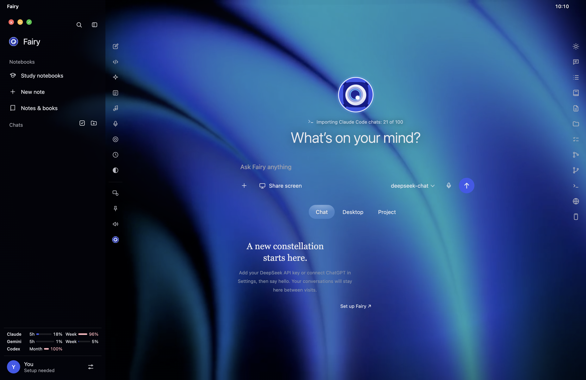
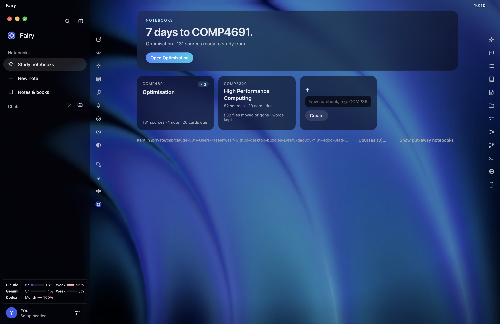
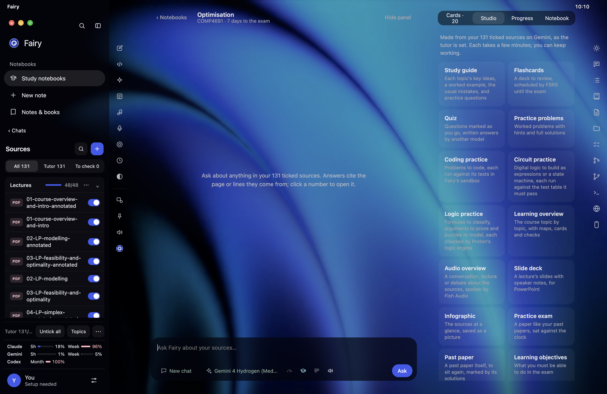

![Fairy's pixel-art eye]()
Baryon & Fairy Status & Plan
Where Baryon & Fairy stand, what has shipped across desktop, CLI, and iOS, the remaining backlog, and how to use your companion.
0055b31 · all 18/18 ~/t3code items) & Google Account Hub (6d103f5).
Updated 26 Nov 11:00 · Interactive Antigravity edition
Built atop 63f73eb (Analytics Stages 1–8, Boards, CLI, Baryon Rebrand, Morning Brief fallback & iOS Stratus catch-up): shipped the 9-step Full-Window Baryon Onboarding (#baryon-onboarding, pure-black + bottom teal/cyan WebGL shader, re-open WebGL fix) and deployed Baryon Web (baryon.web.app) to Firebase Hosting via Stratus.
Signed Developer ID (C63K728GC6) hardened Baryon.app live on MacBook (PID 95142) & mini (PID 72487, 63f73eb), iOS Baryon on Izanagi, plus https://baryon.web.app live on Firebase Hosting (stella-508707, HTTP/2 200).
Targeted Web/Setup/LazyLoad suite: 17/17 pass (baryon-web, setup-wizard, lazy-load); Web Vite bundle (7 modules, 115ms) & Desktop Vite build (435 modules) clean; prior full npm test (63f73eb): 2,899 pass / 7 pre-existing CSS fails.
Desktop Baryon.app, bin/fairy CLI, iOS Baryon (pure #050507 Stratus), and Baryon Web (baryon.web.app — phone, iPad mini, iPad & desktop PWA with /fanout, DAG branching & live artifacts).
Run order
What has landed, your six plans in the order you chose on 13 Nov, the checks only you can make, housekeeping, the open decisions, Fairy's own harness, then Claude Code's features in seven stages. The first unfinished step is marked Next.
Built from the git log, BACKLOG.md, docs/harness.md, Proton's artifact code and this week's sessions. Interactive Antigravity edition: statuses load immediately from the latest build snapshot and any edits you make persist locally in your browser (or Fairy Pages). Click Reset to return to the latest build snapshot.
What's left after the plan
The larger work that isn't scheduled, and the known limits of what shipped. Items leave here when they land.
Nothing open matches.
Built and installed on both Macs (main 414569a, 24 Nov) and overhauled to Stratus style (822f843, 25 Nov), verified with unit tests and production build, but not yet smoke-tested end-to-end with live datasets on the cluster.
Live UI & ML env on mini
24 NovOpen Analytics (
⌘⇧A), verify borderless Stratus layout,#pane-railclearance & ambient backdrop, then run Install ML env onmini(~/Analytics/.venv).Core Analytics runs
24 NovRun Learn AutoML (local or Forge), Resolve linkage + Review Queue, 3D embeddings/topics, and History side-by-side comparison & drift compare on sample datasets (
~/Analytics/samples/).Cross-Fairy synergy & optional Manim
24 NovTest Work Data pane Open in Analytics ↗, Chat/Work
analytics_*tools, and optionalmanimvideo rendering in the Forge container (Touch ID +.mp4artifact harvest).
Phases 1 and 2 (interactive REPL, Terminal Fairy sprite, cli.sock Face→Body proxy, standalone --headless mode) shipped in 489f2c1 (25 Nov). Optional follow-ups logged in BACKLOG.md (5a0b7dd):
Additional mode subcommands
Later buildAdd CLI subcommands for
research,analytics,boards, andswarmmirroring the windowed modes.Multi-pane TUI & mini symlink
Later buildUpgrade the REPL with an optional multi-pane terminal layout beside the Terminal Fairy sprite, and symlink
~/.local/bin/fairyonminifor direct SSH invocation.
Built and installed on both Macs (7795919, 18 Nov) and checked with tests and on the board in a test page, but not yet tried for real. Each but the last uses your allowance or your cluster, so you start them.
An eval round
18 Novnode scripts/research-eval.mjs plan --seats claude,antigravityfirst (spends nothing), thenrunwith the same arguments: one round on each of the three settled questions, at most 12 calls each. Then a second run with one thing changed (--model claude=claude-sonnet-5-5, say) andcomparethe two. Worth checking: whether the key reads real hypotheses fairly, and whether 12 calls leave room for reviews and matches.An investigation from a chat
18 NovAsk Fairy in a chat to set up an investigation into something: Research’s New investigation form should open with a title, goal and discipline from the conversation, and nothing made until you press Create.
An investigation from a Deep Research report
18 NovMake a Deep Research report in a notebook’s Studio, press Investigate in Research under it and create the investigation; check that the report arrives as the team’s feedback and that its DOI and arXiv sources are added to the literature.
A Nexus run
18 NovOn an experiment waiting in the Lab, press On atlas (or On forge), allow it on the card, accept the ticket in Nexus, and check that On the cluster follows the job and shows its metrics, figures and printout. Worth checking: that its requirements install on the node and the helper’s figures come back.
A live mathematics round
18 NovLean is made on the mini and the helper checks proofs with it. Start a round on a small, true statement in a mathematics investigation, and check that the leading hypothesis is stated in Lean, a proof is checked (about 35 s and 4–5 GB a check), and what Lean said shows on the hypothesis; whether 30 turns cover three attempts is the open question.
A schedule left to run
18 NovRounds on their own on the Overview tab, for two rounds back to back (or daily at a time you’ll be away), then leave it: a round should start only while every seat’s plan is under 85%, pause past 95%, and Fairy should say each start, pause and end.
The rest of stage 8, live
18 NovAttended rounds said aloud and on the iPhone, Keep what this round concluded, Study this paper with the tutor, Web pages read, Write up, and Write the paper, on a real round.
Swarm and the Orchestrator need Gemini, whose Pro quota is back at about 1 pm. Each uses your Claude and Gemini allowance, so you start them; the commands run from the working copy (qa-wt) or any checkout of main.
Swarm’s measure
14 NovThe three hard tasks three ways, then the report:
node scripts/eval.mjs --provider claude --model claude-opus-5-5 --effort high --hard, the same with--way reviewand with--way swarm, thennode scripts/swarm-report.mjs. Pass rate, minutes and designer calls side by side decide whether Swarm earns its cost.A real swarm in Fairy
14 Nov/swarmand a request in a work session, with Claude and Gemini both designing for the first time in the app: the budget card, each designer’s row with its effort, convening, the brief and its sign-offs, the build and the check.The Decisions API and Try Swarm
14 NovWhether Google’s Decisions API accepts the Swarm question and the swarm and build surfaces. Run
check-swarm-decisions.mjsfrom Claude’s scratchpad with your key in your terminal; if the question is refused, Auto drops only it.Antigravity’s Orchestrator baseline
14 NovLeft from Orchestrator stage 5:
node scripts/eval.mjs --provider gemini --kind work --orchestrator --repeat 2withGEMINI_API_KEYset, to compare with Claude’s 16/16. With--hardit also shows whether the hard tasks reach Fable 5.2’s tier.
The audit’s 13 fixes are done or closed. What’s left of its targets.
A fair measure of book search’s memory changes
To measure7cc9fccbuilds the book index in a thread that ends and searches it in the main thread. A test copy with your books cache settled at 218 MB for the main process with it, against about 355 MB without. The installed app hasn’t been compared fairly: the same code measured 871 MB at 14:26 and 1,258 MB at 19:04, with a second web view open and a longer uptime. Measure both versions from a fresh launch with the same windows, covered and idle.The 700 MB idle target
Not met871 MB at best, covered and idle.
The GPU process’s window buffers
Needs careAbout 245 MB (three full-screen buffers and raster tiles) that Chromium keeps because it treats Fairy’s covered window as visible. Hiding the window freed about 336 MB in a test copy, but drawing didn’t come back within 8 seconds of showing it.
Fix 8’s part B
Done 22 NovCompleted in
0de7bd8:desktop/screen-helper.mjs,desktop/quiz-recognition.mjs,desktop/quiz-setup.mjs, andnative/QuizOCR.swiftstream raw PNG bytes via length-prefixed framing, cache the decodedCGImagebyframeToken, and executescrollEvidence,questionPixels,blankMarginBounds, and cropped PNG encoding natively insidefairy-quiz-ocr --serverwith zero main-process bitmaps.Floating and speech still animate
To checkNot yet checked by eye since fix 4.
Ideas from Roamies (AGPL), rebuilt in Fairy’s own code rather than copied.
Explain anything
Built 12 NovFloating Fairy answers aloud and draws beside what you’re reading, in pixel ink and little terminal windows. Installed on the Mac 12 Nov at 09:35, on Claude Code and in the companion since 09:47 (1bc61d0); a real answer through Claude Code drew six parts with every quote found. Still to do: photos with labelled parts, maps, geometry and click-to-answer quizzes; drawing while the answer streams; marks that follow the page when you scroll.
Show me how
Built 12 NovAsk how to do something in any app: Fairy rings the exact button on your real screen, says the step and waits for your click before the next.
Quicker ways to ask
Built 12 NovFrom any app: hold ⌃⌥ to talk (circle something meanwhile and that’s what “this” is), tap ⌥⌘ for a one-line box at the pointer, or ⌃⌥A to drag over an area and ask about it. The keys can be changed or turned off in Settings → Voice & listening → Quick keys.
Auto: Fairy picks the model
Built 12 NovGemini Decision 1 chooses a tier for each request (light to extreme), which becomes Haiku to Fable, Gemini 4 Hydrogen to Argon (3.8 Flash if Hydrogen isn’t offered), or Luna to Astra. Needs your Gemini API key. It also picks the thinking effort (12 Nov), shown under each reply. Still to do: tune it on real requests.
What you said you’d do
Built 12 NovSay “I’ll email Sam after lunch” or “remind me to call Mum tomorrow” anywhere, and Fairy nudges you when it’s due, on the Mac or your iPhone. Listed in Settings and in Your week. Reminders have a Done button, and deadlines get an earlier heads-up.
Small touches
Built 12 NovLater buildA cursor-sized Fairy that rides along with the pointer, and an animation for each tool.
Questions about your money, from your own bank accounts.
Your bank accounts, read-only
Near futureClaude Personal Finance (US only, in the Claude app) can’t be reached from Fairy, as it has no connector or API. If it comes to Australia as a connector or in Claude Code, use that; otherwise connect through Australia’s Open Banking via a provider such as Basiq: read-only, the sign-in encrypted on the Mac, and transactions sent to the model only when you ask (spending by category, bills coming up, unusual charges, a money line in Your week). First step: what a provider needs for a personal setup, and its cost.
Sources for the sidebar's Notebooks section. Notes & books already works from your folders.
Move Proton’s Notebook into Fairy
Done in FairyAll 11 phases are in Fairy (8 Nov): the engine, Study notebooks, sources from your folders, the web, pictures and recordings, the tutor, the Studio’s every kind, flashcards, quizzes and exams (past papers sat too), progress, audio, slides, infographics and coding practice. What’s left is removing Notebook mode from Proton, which the agent working on Proton does. Circuit and logic practice came over on 8 Nov, on Proton’s own engines (ea22d29, installed).
Fairy as the tutor, read aloud
BuiltThe tutor answers as Fairy, her name and personality kept under the tutor’s rules, and reads each finished answer aloud in her voice, with a speaker in the ask box to turn it off (7daac0b and ba56d81, 8 Nov, installed). Heard in a test copy once you agreed to Fish Audio’s terms there; a clip whose connection drops is asked for once more. Still to do: agree to the terms in your own Fairy.
Nocturne’s courses in the notebooks
Phases 1–4 builtPhases 1–4 are in: exercises are practice sets, and changed lab files come in as Your work. course flashcards are in the daily review and modules are objectives. the course quizzes and mock exam are under Studio → From the course. Notebooks home → Courses from Nocturne → Link courses. Each Nocturne course goes inside its notebook, so studying happens in one place. Fairy reads Nocturne’s files where they are, so
content/authored/andnpm run contentstay how you write material. Courses without a notebook get one automatically, and past courses go under a collapsed Past courses group. Question banks become a quiz per module, plus a timed Mock exam. Written scenarios are marked against their rubrics. Flashcards join the daily review. Exercises get hints and Check my work, and lab files that differ from git count as your work. Notes, snippets and slides become sources. Pairs by course code: optimisation ↔ optimization, system-engineering ↔ systems-programming, HPC ↔ HPC. Five phases; the plan isdocs/nocturne-courses.mdon thenocturne-designbranch.Pictures from Aether’s Diffuse
Planned 12 Nov · laterFairy makes pictures on forge through Diffuse, and they appear in Aether’s Gallery too. Planned on 12 Nov, not built yet.
- Why: Fairy can’t make images today. Diffuse would let her make them for free, privately, on your 4090. A gallery that only shows pictures would add little, since Aether shows them better.
- Phase 1, making pictures in chat: “make a picture of …” (words: picture, image, illustration or render; “draw on my screen” stays the pen). A card shows the preview sharpening, then the picture, with Again, Four more, Bigger, Open in Aether, Show in Finder and Copy. You can change it in words (“wider”, “at night”) keeping the seed. Fairy uses Aether’s gateway (
/img/v1on atlas, the same address andNEXUS_KEYfrom the shell, never stored) and sends the standard seven-step text-to-image graph. Pictures are saved to~/Documents/Aether/Flows/outputs/Fairy/with aFairy.flow.json, so Aether’s Gallery lists them under “Fairy”. - Phase 2, a Pictures library under Notebooks: Aether’s Gallery, newest first. Attach a picture to a chat. Pictures Proton sealed show locked and open in Aether.
- Phase 3: pictures in Pages documents and decks, and in Quick chat on the iPhone.
- Limits: only while forge is serving. No on-Mac fallback (Core ML is Aether’s Swift code, and too slow for chat). The first picture after forge starts is slow while the model loads. The models on forge aren’t checked yet.
- To decide: Touch ID for the library, like Aether’s (suggested: yes). Default model: the first SDXL on forge, changeable. Pictures without being asked (suggested: only when asked).
Ideas from the redesign that aren't in the plan yet.
Today panel
Done 22 NovNext event, what follows, unread count, running chats and the next routine, from the sun icon in the right-hand rail. Now also refreshes gently in the background via
ConditionalTaskwhile closed and renders a clickable#home-todaysummary pill strip on Home (toggleable under Settings → Appearance → Today summary on Home,0de7bd8).Sources panel
BuiltClicking a citation to a note or book page opens it beside the chat, with the cited lines marked, and the panel lists every source cited in the chat. Still to do: sources from web searches.
Git panel
BuiltThe work folder at a glance with a branch graph, filters and diffs, comparing two points, asking Fairy about history, branch and stash actions, activity grids, cloning a repo into a work session, and a pull request inbox (c58f3bc through 3134862, 9 Nov, installed). All eight ideas from 9 Nov are in.
Live meeting panel
BuiltThe whole running transcript beside the chat while meeting mode is on, then a summary with decisions and action items, written once by your conversation provider and never saved. Still to do: saving a summary to a note when you ask.
Worth doing later, but it won't make Fairy smarter. A small model such as Gemma or DeepSeek-R1 is a poor replacement for the thinking Claude and Gemini do, but a good always-on reflex layer.
Fairy's voice
Later buildMatching its style consistently, trained on your own conversations.
Quick local jobs
Later buildRouting requests and pulling out memories, privately and with no plan limits.
When you're offline
Later buildBasic replies with no connection.
Things a companion can do that a coding tool doesn't.
Hands-free work
Later buildFairy can say “tests passed” or “I need your OK on this”, and you can approve by voice.
Floating mode
Later buildThe work carries on in the window while Fairy shows progress on your desktop.
Memory across providers
Later buildClaude and Gemini sessions share the same long-term notes.
Second-model review
Later buildFirst version built:
/reviewor Second opinion, which only runs when asked and sends the diff to the other provider. Still to do: offering one after a turn, and Codex as a reviewer. Only Gemini reviewing Claude has been tried, on a tiny project.Screen awareness
Later build“Fix this error” can refer to what's on your screen, though sending that to a session with tools needs care.
Things to design for from the start.
Keeping work sessions apart
WatchA work session with tools must never get Fairy's Google tokens or its window's privileged access. Artifact pages and browser content are untrusted too.
CLI updates
WatchA CLI update can change the output format or break the bridges, so keep recorded test sessions, as Proton does.
Provider terms
WatchWhether powering Fairy through the CLIs is allowed isn't settled, especially Antigravity's temporary home, which reuses
agy's login. Read the providers' current terms.Shared limits
WatchFairy draws on the same subscription limits as your normal Claude Code use.
Known limits of the first versions, to fix later.
Own branch
Later buildWhat Git ignores now comes along, apart from keys, so dependencies are there. It starts from the last commit, so uncommitted changes don't come along. Merge into brings the work back, but a clash has to be sorted out in the chat first. Commands can also move branches in the shared Git data.
Rewind
Later buildAnything a command did stays, including commits and installs.
Finished in the background
Later buildA notification says so, but the chat list has no unread mark.
Helpers
Later buildOnly the agent can start one, and you can stop one but can't message it. Writing helpers have no network, web, browser or connectors, and can't ask you anything. They stop when the turn ends, and work not yet brought back lasts only until Fairy quits. A project on another disk from the home folder can't have them. An agent can't start a side session. They've only been tried on a small project.
Swarm
Later stagesStages 1 to 5 are built. There’s no Edit brief yet: to change the brief, put it aside and ask in the chat. A stopped swarm can’t be carried on. Without the sandbox, or with the project on another disk from your home folder, designers read the project instead of working in copies, and nothing is run between rounds. Whether the live Decisions API accepts the Try Swarm question hasn’t been checked; if it refuses it, only that question is dropped. The budget card’s call counts are estimates. Gemini’s Pro models are out of quota until about 1 pm on 14 Nov, so a real two-designer round in the app waits until then, and Codex isn’t signed in yet. It starts only from
/swarm, not from a menu.⌘K
Later buildIt finds chats by title, not their contents, and doesn't cover notes or individual settings.
Meter
Later buildOnly in work sessions, and Gemini doesn't report tokens. The percentage is how full Fairy's summary is, not the model's whole context.
PR status
Later buildChats and work sessions can now read review comments, reply in their threads and read failing checks’ logs through the GitHub tools. Still to do: re-running checks, and a watch for failed checks or new reviews.
Hooks
Later buildOnly after an edit or a turn. Nothing can block a step before it runs.
Routines
Later buildThey need Fairy open and the Mac awake. No "keep an eye on this" watcher yet.
Connectors
Later buildTools only, no sign-in for ones at an address, and only tried on small test servers so far.
Known limits of the first version, to fix later.
Long sessions
Later buildEach message restarts the CLI, with model-written notes on older messages and a digest of newer ones. A turn that stopped can carry on from a button. Still to do: compacting on request, and seeing the notes.
Sleep ends a running turn
Later buildLocking the screen doesn't. With the iPhone link on, the Mac stays awake during a work session, but closing the lid on battery still puts it to sleep. Resuming after sleep isn't built.
.env files and Git
Later buildCommands can't read
.env, sogit add -Afails in the sandbox if one isn't ignored by Git.Toolchains elsewhere
Later buildThe sandbox allows the usual places in the home folder, so one kept somewhere else can't be read. Add a per-folder setting.
Codex hasn't been tried
Later buildThe ChatGPT Free plan rejects its models, and Codex is at its monthly limit until 23 Nov.
One unexplained “Stopped”
WatchA plan-mode turn stopped once with nobody pressing Stop, and it didn't happen again. Locking the Mac may have caused it. Log why a request stops, so it can be traced if it returns.
Built and paired. What's left is mostly testing on the real phone.
A Dynamic Island on the notch
On the phone 12 NovUntil an iPhone with a real one: inside Fairy, a black pill around the notch springs open for her live things (a work session, an OK waiting, a timer, her reply, now playing). It only shows while Fairy is open.
Finish testing outside the app
At the phoneWidgets and the alerts setting are confirmed on the phone. Still to try: a question raising an alert after closing the app, tapping that alert to open Work, the alert when a session stops working, the Live Activity, and whether “Last looked” in Settings changes after a few hours.
Join the Apple Developer Program
Later build$99 a year, planned for 2027. A free account has to reinstall every 7 days and can't get push notifications. Paying lets the Mac alert the phone when the app is closed.
Limits of the first version.
More formats
Later buildWord and other documents, and HEIC and GIF pictures.
More places
Later buildAttaching from floating mode and the iPhone, and thumbnails on the chips.
Seeing Gemini's reading
Later buildGemini only knows what its vision agent says about a picture, and the chat doesn't show that reading.
What work sessions can't do yet outside their folder.
Browser and computer tools
Later buildNo tabs yet, and the screen isn't given back if you start using the Mac. Only tried on Claude, not on Gemini.
Scanned PDFs
Later buildread_pagecan't read them, because they have no text to read.Approvals for trusted commands
Later buildEvery Nexus command asks, including help and status. Consider a way to trust read-only ones.
Second opinion on Codex
Later buildOnly Claude and Gemini can review. Codex can't yet, and a review isn't offered after a turn by itself.
Known limits of the bridge, from docs/harness.md.
agy changes between versions
Watchagy updates itself. 1.5.0 cuts a tool result over about 10 KB and gives the model pictures as paths it can't open, so Fairy sends long results in parts and has a vision agent read pictures. 1.5.2 (6 Nov) renamed the screenshot tool, which stopped every screen question until Fairy accepted the new name. Since 7 Nov Fairy checks each new agy version with four real turns and notifies you if one breaks.
It relies on undocumented behaviour
WatchThe temporary home works because
agyfinds its config throughHOME. An update could break it. A failure shows as an error and doesn't touch your config.The sign-in under a temporary home
WatchOn 9 Nov agy 1.5.3 began signing in from under
~/Library, which Fairy’s temporary home hid, so every Gemini tool turn failed until~/Librarywas linked in (fd435c8). Fairy now checks every three hours that Gemini can still sign in that way, and says so if it can’t.No plugins or personal MCP servers
By designTool requests only reach Fairy's own tools.
Where the app differs from the approved renders.
A crowded message box in a work session
FixedWhat Fairy may do and the Context meter now stay whole. As the box narrows, the branch goes first, then the folder, the meter and the model's name. It's installed and committed as 0bf97a3, and was checked on a test copy.
A heading left over after a work session
SmallA new chat can keep the previous session's heading.
Settings' profile card has no eye picture
SmallIt uses two plain rows for now.
Google cards are taller than the render
SmallEvery control is kept, with no “⋯” menu. Setup steps do hide once a service is connected.
Long notes show two lines, not one
By designSome describe what gets sent where. Click a note to read all of it.
Using Fairy
Fairy lives on your desktop as a small pixel eye and opens into a full window. This covers every feature in the installed app, as installed on 9 Nov, and is updated after each build.
T3 Code Audit · All 3 Waves Complete (18 / 18 Features)
Full audit of ~/t3code into 18 net-new upgrades across 3 waves (24 Nov). Wave 1 (d033e4e), Wave 2 (032fbbd), and Wave 3 (stabilise) are all implemented & verified (2,870 pass / 0 fail).
Wave 1 · UX, Flow & Desktop Safety (Done · d033e4e)
Queued Follow-Ups, ⌥Enter Steer & ⌥⇧S//stash (src/composer-queue.js, src/composer-stash.js); Disposable Side Chat (/side, src/side-chat-pane.js) & floating Quote/Side-chat//btw toolbar (src/quote-selection.js); Timeline Minimap & Sidebar Shift Guard (src/message-rail.js, src/sidebar-shift-guard.js); Hold-to-Quit (⌘Q, desktop/quit-hold.cjs) & Zoom-Proof Traffic Lights.
Wave 2.1–2.2 · Turn Checkpoints & Secret Requests (Done · 032fbbd)
Git turn checkpoints under refs/fairy/checkpoints/... with stat-cached untracked blobs, diff/fork, and isolation-checked rollback (desktop/git-checkpoints.mjs, desktop/checkpoint-safety.mjs). Out-of-band request_secret (secret-ref:...) + secret_env injection, batched Touch ID op inject, and output redaction keep secrets out of transcripts (desktop/secret-providers.mjs, desktop/secret-requests.mjs, src/secret-requests-ui.js).
Wave 2.3–2.4 · Cache Compaction, Recovery & Worktree Safety (Done · 032fbbd)
IdleCompactionService compacts idle high-token work sessions before cache expiry; UsageLimitRecoveryWorker parses reset times to snooze and auto-resume limited threads. APFS CoW worktrees pre-warm with binary gitIndexStat restat, assertCheckoutIdle, withWorkspaceLease reservations, and orphaned worktree GC.
Wave 2.5–2.6 · Annotatable Diffs, Triggers, /fanout & Notification Gate (Done · 032fbbd)
Changes gains inline + review comments queued into #composer-review-chips (src/diff-annotations.js), AI Walkthrough tour (src/diff-walkthrough.js), and ref-counted worker-pool highlighting (src/diff-worker-pool.js). Composer adds unified @///$/# autocomplete, /fanout multi-model comparison cards, Thread Inbox/Snooze (1h/Wake), Proactive Panel Guard, and grace-window notification gating.
Wave 3.1–3.4 · Wire Pacing, Supervisor/SQLite, Rust Monitor & Terminal/Browser (Done · 24 Nov)
11. projectTurnItemForWire (256 KB on-demand hydration via session-history-page & turn-item-hydrate), 50 ms createThreadLiveEventCoalescer, createLiveStreamBudget, and WeakMap patch hints (desktop/wire-projection.mjs); 12. Silent-socket wake probe (desktop/connection-supervisor.mjs, FaceClient.probeNow()), sleep-aware EventLoopMonitor (event-loop-stats), worker node:sqlite with guardHelpers() & checkpoint_fullfsync=ON (desktop/sqlite-worker*.mjs), and KeepAwake/BackgroundPolicy; 13. Zero-dependency Darwin libproc Rust sidecar fairy-resource-monitor (364K) + 3,600-sample ring buffer (desktop/resource-monitor.mjs, resource-monitor-state); 14. Multi-viewer PTY sizing + 256 KB ANSI-safe scrollback ring + terminal-snapshot restore + live browser agent cursor overlay, PiP mini-player & annotated canvas recorder (desktop/terminal-vt.mjs, src/browser-live-overlay.js).
Wave 3.5–3.8 · Recovery/IPC/Hotkey, Failed Recordings, ACP/Quota/Tailscale/SSH & iOS/Eval (Done · 24 Nov)
15. macOS kernel audit-token orphan recovery (desktop/process-audit-token.mjs), zero-bundle did-fail-load recovery HTML (desktop/startup-recovery.mjs), sender-verified IPC (desktop/ipc-sender-guard.mjs), and double-modifier shortcut (desktop/modifier-pair-hotkey.mjs); 16. Failed voice recording retention & retry (desktop/failed-recordings.mjs, failed-recordings-list/retry/delete); 17. Hardened ACP runtime (desktop/acp-runtime.mjs), 10% GitHubQuotaGuard, collision-safe tailscale serve planner, and SSH askpass bootstrap (desktop/ssh-bootstrap.mjs); 18. Extended iOS WorkActivity attributes, WebSocketDeflateConfig, loopback-only SOCKS preview + ES256 DPoP auth (ios/Fairy/*.swift, desktop/dpop-auth.mjs, desktop/socks-preview.mjs), and prove-scenario harness (5/5 passing).
Parallel Agent Swarm, Design Council & Reproduce a Paper
Added on 21 Nov (be28a6a → 0fbf38c) across both Macs.
Parallel Agent Swarm (/swarm)
Antigravity-style Mission Control for running up to 6 parallel agents concurrently (up to 12 total) in a work session. Open from the Swarm rail icon, the work bar’s live Swarm pill (Swarm · N running / N to merge), ⌘K → Swarm, or type /swarm <brief> (aliases /teamwork, /agents).
Click Auto-plan team (1 approved turn) or build cards manually with + Add agent (even mid-run). Choose Isolated copy (write) or Read-only, per-agent provider (Auto, Claude, Gemini, Codex), file scopes, and DAG After dependencies. Steer running agents live, inspect inline syntax-highlighted diffs, and bring changes back safely via 3-way git merge-file (Merge into project or Merge all).
Multi-Family Design Council (/council)
Renamed from /swarm to /council <request> (and the Auto chip is now Try Council). Claude, Gemini, and Codex design independently in throwaway copies, convene to settle trade-offs, and produce a signed-off brief before building.
Reproduce a Paper (Stages 1–6)
Type /reproduce <arXiv id or link>, click Goals → From a paper, or use one-click Reproduce buttons on Research papers and arXiv watcher notices. Stage 1 fetches metadata + LaTeX/PDF into read-only paper/ with zero model calls. Stage 2 extracts quote-checked claims (pick up to 8, edit tolerances & forge/atlas hour budgets). Stage 3 drafts REPRODUCTION.md with an explicit Approve plan gate. Stage 4 ties runs to claims & scale (smoke / scaled / full) and hard-stops over-budget Nexus jobs. Stage 5 compares every picked claim side by side in the Comparison table, auto-completes under claims done-when, and accepts Not reproduced / Couldn’t run verdicts. Stage 6 (004ccda, local) generates REPORT.md + sandboxed pdflatex REPORT.pdf linking every number to its run, tracks deviations, and surfaces progress on iPhone Week.
Doc 7 (#6–#16) & Chat UI Polish: Trace, Data, Off-peak, Journal, Recall, CLI/MCP, Investigate, Benchmark Watch, Research Brief, Plan Forecast & Compute
Added on 22 Nov (2a34ec2–3dc6f3a). Click Trace under any work reply or run /trace for step timelines & handoffs. Open /data for CSV/TSV/JSON/JSONL/Parquet/SQLite profiling & plots. Enable Off-peak queue under Settings → Automations. Open /journal for your project’s editable dated lab journal. Search across all work & plain chat contents via ⌘K or /recall (and the agent’s read-only recall_sessions tool). Run work turns from terminals via bin/fairy run or connect external MCP clients via bin/fairy-mcp. Use /investigate <question> for parallel code/web/notes+papers synthesis with Sources citations, configure per-commit Benchmark watch trend charts & regression alerts inside Experiments (src/runs-view.js), run /brief (or click Generate brief page in Today) for your morning brief Page, review call/usage projections on plan approval cards before launching work (#15 Plan forecast), and inspect Nexus tickets, live logs & outputs in /compute (#16 Compute). Open chats now smoothly fade out background animations (0.75s transition), show circular dot scroll-rail ticks, and style user prompts in dark pill bubbles.
Antigravity Artifact Import
In Pages, click Import from Antigravity to import userFacing: true HTML and Markdown artifacts from ~/.gemini/antigravity/brain/. Kept strictly separated from Claude artifacts via agy-* IDs, dedicated filter tabs (All / Antigravity / Claude / Fairy), and color-coded origin pills.
Getting started
- Open it
Fairy opens how you left it: floating or in its window. ⌘⇧S switches between them, and ⌘⇧R hides or shows it.
- Say hey
With hands-free on, say “Hey Fairy”. Fairy answers out loud, then listens for your follow-up.
- Or type
Hover over the eye and type into the curved message ring, or use the box in the window. In the box,
/lists commands and skills, and ⌘K finds anything. - Set it up
Settings is at the bottom of the sidebar, with a search box. Sign-ins and keys are under Accounts & keys. The model for a chat is in the menu beside the mic.
- Give it a job
Type
/work, or click the</>icon, and pick a folder. Fairy can then read, edit and run things there, in a sandbox.
The window
A sidebar, a column of action icons, one conversation, and a column of side panel icons. An empty chat shows a greeting and suggestions, and each suggestion sends straight away.
- 1Action icons
Top to bottom: New chat, New work session, Surprise me, Latest news, Music, Meeting mode, Change avatar and Routines.
- 2Notebooks
Notebooks opens your course notebooks, see Study notebooks. Research opens your investigations, see Research. Diffusion (the sparkle) is where images and videos will be made, see Diffusion. New note starts a note in conversation (Fairy asks what you want to capture, one question at a time, and keeps the draft in the chat until you ask her to save it). Your notes and books folders are in Settings → Notes.
- 3Chats
Your saved chats and folders. The search and collapse buttons are at the top of the sidebar. See Chats and the side panel.
- 4Plan usage
What's used on each plan. Hover for reset times, and click to update.
- 5You and Settings
The provider's status, and the Settings button.
- 6Pin, Mute, Float
Keep the window on top, silence replies, or shrink to the floating eye.
- 7Fairy
Sits at the top right of a chat, with the text flowing around Fairy. On a narrow window Fairy moves above the chat instead.
- 8Side panel icons
Today, Meeting, Outline, Sources, Pages, Files, Tasks, Changes, Git, Terminal, Browser and Simulator. Each chat remembers its own panel.
- 9The + menu
Pause ideas, which display to share, hands-free, senses and quiz hints.
- 10Mode
Chat or Desktop (Project mode was folded into work sessions on 16 Nov), with Share screen beside them. In a work session this space shows the folder, the branch, what Fairy may do and how full its context is. As the box narrows, the branch goes first, then the folder and the meter.
- 11Model menu
Claude, Gemini, Codex and DeepSeek models. Chats and work sessions each keep their own choice. It’s never taller than the room above the message box, and scrolls for the rest.
- 12Mic and Send
The mic records one message. Stop takes over while Fairy is working.
Floating
The eye floats over your other apps. Hover over it and a half-circle menu opens around it. Replies appear in a blurred bubble above.
- 1Actions and groups
The mic, Record a message, Explain (the pen), Mode, Wave and Mute. Ideas, Senses and More each open a second arc. A sketch: the exact order differs.
- 2Message ring
Click and type. Your text follows the curve.
- 3Send
Sends what's in the ring.
- 4The eye
Drag its centre to move Fairy. The menu closes when the pointer leaves, and steps aside while Fairy is thinking.
- Ideas: Surprise me, News, Pause ideas, Sing and the Spotify library.
- Senses: hands-free listening, pause senses, quiz hints and quiz targeting.
- More: Meeting mode, Open workspace and Stop.
- Mode: switches floating messages between Chat, Screen questions and Desktop task.
- Ask: while floating or in the companion, ask to be shown, taught, walked through, or for something solved or plotted: “show how a black hole is formed”, “walk me through Lagrange multipliers”, “solve this LP”. Small talk stays a chat.
- The pen: with text in the ring it draws that; with the ring empty it lights up and draws your next typed or spoken question; press it again with nothing typed to explain the screen.
- Small, bubbly cards: short cards with LED-dotted edges grow out of her pen like speech bubbles, and the newest card’s last line turns into pixel bars that follow her voice while she talks. 3D models can play out a process (a black hole merger, a collapse) and replay it.
- She draws it herself: her eye folds into a small blue pointer shaped like your Mac cursor, flies out, traces each stroke and window outline so the pixels light under its tip, then flies back and turns into her again. Your own pointer never moves.
- Opening apps: “open Flux”, “launch Tachyon”, “switch to Safari”: Fairy opens it straight away, from /Applications, ~/Applications or the system’s apps. Desktop tasks can open your ~/Applications apps too. By what it is: “launch my notes app” or “open the music player” has a light model pick from your installed apps; when several fit she asks which, and “remember Electron is my notes app” makes it stick. From the companion on the MacBook she opens the MacBook’s own apps; on the mini, an app she can’t find runs as a Desktop task.
- Velvet: the half-filled circle in the left rail switches the window to the phone’s plain near-black and back, poured in from Fairy’s eye: a glowing ring runs out, bending the wallpaper’s light in waves as it passes, like the phone. It remembers your wallpaper; Velvet is also in Settings → Appearance.
- The companion matches floating mode: the same ring (microphone, record, pen, wave, mute, Ideas, Senses, More with Ride along), with the main window’s buttons mirrored live. Ride along works for the companion too. Its ring also has the Chat / Task switch (it remembers which): in Task, type what you want done and Fairy does it on your desktop from the companion’s own chat (Quick chat), with progress under its eye and risky steps asking first. ⌘⇧Esc or ■ stops it. Questions from the quick keys stay questions in either mode.
- Small touches: beside Fairy’s status, a tiny pixel animation shows what she’s doing (searching, reading, email, calendar, code, your screen, listening, making, thinking). Ride along (floating menu → More → the pointer button, or Settings → Animations): after a few idle seconds, floating Fairy shrinks into a pixel eye beside your pointer; anything she has to do, or pointing at her spot, brings her back. While she rides, the Explain and Show me how pen starts from her beside your pointer and comes back there.
- Where chats go: floating Fairy and the companion talk in Quick chat (it opens when she floats, and your chat comes back when she returns to the window). Her ideas, news, check-ins, briefs and reminders go in From Fairy; reply to an idea within five minutes and it comes with you into the chat you reply in. On the iPhone, long-press a chat → Delete chat (to the Mac’s Trash).
- Provider, model and effort (beside the mic): three small selectors. The provider button shows its mark (Claude, Gemini, Codex or DeepSeek); choosing another keeps the Orchestrator on where it can. The model button, a neural-net brain with the model’s name, lists Orchestrator and that provider’s models. The effort button, a light bulb, is greyed out while the Orchestrator picks the effort. Share screen is an icon now, with the calendar, mail and Explain shortcuts beside it.
- Orchestrator (Fairy picks the model, the default): the model menu for Claude, Gemini and Codex starts with an Orchestrator row. With it, Fairy picks that provider’s model and effort for each request: Haiku to Fable 5.2, Gemini 4 Hydrogen to Neon (Argon on a plan without Neon), or Luna to Astra. The button shows what it chose, and the line under the reply says the model and effort. In a work session the Orchestrator also plans big tasks and hands their steps to faster models (below). Choosing a model yourself turns it off for that chat or work session. It needs a Gemini API key (Settings → Accounts & keys, on a project with billing on); without one, the model you chose answers. A notebook’s model menu has its own “Auto”.
- Chat by role: in a chat on the Orchestrator, each message gets a role from how hard it is: small talk and quick facts go to the fastest model (Haiku, Hydrogen at low or Luna), everyday questions to a mid-sized one, and hard questions to the strongest (Opus, or Fable 5.2 for the very hardest). Hover the line under the reply for why. A message you speak (the mic, or hands-free) waits at most 1.2 seconds for the Orchestrator’s choice, and below the hardest questions it thinks no harder than medium, so the first words come sooner.
- One step or a plan: in a work session on the Orchestrator, Fairy also asks whether a request is one step or needs a plan. A plan, an unsure answer, or a chat in plan mode goes to the lead (Opus, Gemini 4 Neon or Codex Astra, at high effort, or the lead you chose in Settings → Work sessions → Models for each role) even if the message looked small. The line under the reply says which, such as “Opus 5.5 · careful · needs a plan”; hover it for why.
- Helpers on the right model (work sessions on Auto): jobs inside a work turn now go to the model their role needs, within your work provider. Notes on older messages,
ask_helperquestions and the small turn behindweb_searchgo to the scout (Haiku 5.5, or Gemini 4 Hydrogen at low). Writing helpers (start_helper) and changes to a page you already made go to the builder (Sonnet 5.5, or Hydrogen at high). The lead can ask for a stronger helper withrole: "lead". Each helper, note and search row shows which model took it, such as “Haiku 5.5 · scout”. With Auto off or without a Gemini key, the model you chose does everything, as before. - To-dos (work sessions): when Fairy works through a list of steps, it sits in a box just above the message box, as in Claude Code. Each task shows a dashed ring until she starts it, a turning arc while she works on it, a tick with the text struck through when it’s done, and a red cross if she drops it. The header counts what’s done; a dropped task doesn’t count. When everything’s done the box folds to one line with a green tick. Click it to open or fold it; it opens again by itself when there’s something new to do. The side panel’s Tasks tab still has the list.
- Plan, build, check (work sessions on the Orchestrator): when the Orchestrator says a request needs a plan, or isn’t sure, the turn’s strong model leads. It plans with the task list and gives each step that needs real work to a builder (Sonnet 5.5, Gemini 4 Hydrogen at high, or Codex Terra) with
build_step: a brief, the files it may change and a command that proves it done. The builder sees only the brief, can change only those files, and can hand a step back instead of guessing. Fairy runs the step’s check itself afterwards. A failed check gets one more try, then the step goes back to the lead once; a step that comes back twice is the lead’s. The lead reads each step’s report, does small steps itself, runs the tests at the end and, for a large change, can askask_criticfor a review from another model family. Builders’ changes and commands ask you exactly as the lead’s do, and show in the chat with a “Step” row and the builder’s model. (Until 13 Nov this was a separate Split big tasks switch.) - Effort picker: the light bulb beside the model button, for when you choose the model yourself. Claude: Default (chats only), Low, Medium, High, Extra or Max. Gemini: the efforts that model comes in, since Antigravity offers each Gemini model at several (the menu lists each model once). Codex and DeepSeek: Low, Medium or High. It’s greyed out on the Orchestrator, which picks the effort for each request.
- Swarm (
/swarmin a work session): for a question where being wrong is expensive, type/swarmand the request, such as/swarm why does the till total drift by a cent?. First a card shows what the swarm will ask of each provider beside its 5-hour bar, with Start or Not now; nothing is sent to any model before you start it. Then a designer from each provider that’s signed in with room on its plan works it out on its own: Claude Opus 5.5 and Gemini 4 Neon, with Codex joining once it’s signed in, or the designer you chose for a provider in Settings → Work sessions → Models for each role. With the Orchestrator on, Auto decides how big a designer and how much thinking the request needs (never less than Opus, Neon or Sol at high effort, and Fable, Carbon (else Neon xhigh) or Astra for the very hardest), and each designer’s row says what it chose and why. Each works in its own throwaway copy of the project, where it can try changes and run commands (sandboxed, without the network) to back its claims; nothing reaches your project, and the copy is deleted as soon as it has written. Each writes six parts: Finding, Evidence, Plan, Check, Risk and Confidence. The designs appear side by side in the chat, lettered A, B and so on, with who made each. Then they convene: each reads the others’ designs by letter only, names each one’s strongest point and any objection (blocking or not), revises its own if persuaded, and votes. If all back one design with no blocking objection to it, or, with three, two do and the third’s objection isn’t blocking, it’s settled. Its author then writes a brief: the steps, the files the builder may change, constraints, one check command, and a paragraph on what the designers disagreed about. The others approve it or object. A card shows the brief with Build, Another round or Put aside; in Plan first it also offers Build, run on its own, and in Run on its own the build starts at once. If they don’t agree, they go another round on the objections, and when they disagree about a fact a command can settle, such as whether a test fails, Fairy runs it in a clean copy first and shows everyone the output. After two rounds a You choose card shows where they still differ, with Build A, Build B or Put aside, and the design you pick is briefed by its author. The build is an ordinary work turn, so the chat’s approvals and rewind work as usual. A faster builder sees only the brief and can change only its files, and Fairy runs the check itself. Auto picks the builder’s model from the brief (Sonnet, Hydrogen or Terra for most), on your work sessions provider, or on whichever has the most room if you set Who builds a swarm’s design in Settings → Project agents. A builder that finds the brief wrong hands it back to its author once. Then the designers from other families than the builder’s read the diff, and anything they mark blocking goes back to the builder once. The reply says what was built, the check’s output, what the check found, how many rounds it took and any objection still open, with a line under it naming who designed and who built it. In an ordinary work session, when Auto is sure a hard request would gain from a swarm, a Try Swarm chip appears under the reply: it puts/swarmand your request in the box, ready to send. A designer that fails or takes over ten minutes sits out and the rest go on. Swarm needs two providers signed in with room on their plans, and says which are missing if not. Its working files are deleted as soon as you pick; the designs and how they voted stay in the chat. - Web pages a chat read: the Sources panel (the book icon on the right) lists, under “Web pages read in this chat”, every page Fairy’s work read in that chat, newest first, with the day; click one to open it. A web PDF whose pages are scans is now read with Vision OCR on the Mac, and its text says which pages were read that way.
- Looking back past the notes: once a work chat has been compacted into notes, Fairy can look back at the exact words of what the notes replaced (a command’s output, an error, what you said) when you ask about something only those older steps had. You see it as “Looked back for …” among the steps.
- Message a helper: while a helper works, its row in the chat has Message beside Stop. Type what you want and press Send; it hears it at its next step and follows it within its piece, and the lead is told what you said. A message sent after it has finished is reported as never delivered.
- Work keeps the Mac awake on mains power: while a work turn runs and the Mac is plugged in, it won’t idle-sleep, so a long turn isn’t cut off; unplug and it may sleep again, and the turn carries on after it wakes. With the iPhone link’s Keep awake on, this holds on battery too. Closing a MacBook’s lid on battery still sleeps it.
- Desktop task questions on the approval card: with “Review every action” on, a Desktop task’s “Let Fairy work on your primary display?” and each batch review appear on the approval card above the message box, on the companion and on a paired phone, not in a separate dialog. A batch reads as numbered steps (“Click at 120, 88”, “Type …”, “Press CMD + S”) with the app and screen size. Answer with Run these actions or Stop task; the phone can only stop it. Each question and answer is in Settings → the approvals log.
- Every write in the approvals log: a work turn’s file writes and edits, commands, browser and screen steps, published pages and helper changes brought back now each get a Done or Failed line in the approvals log, even in Run on its own mode, where nothing is asked first.
- Citations in work answers: when a work session’s answer rests on a file, it cites it, like “parse.js line 42”. Click the link and the Sources panel opens that file with the line highlighted. Only real, readable files inside the work folder become links; hidden files,
.env,node_modulesand anything that looks like a secret stay as plain text. Old answers keep working, because each work folder has a fixed id. - Project memory: after a work turn that changed files, ran commands or read the web, a card under the reply may offer up to three findings worth remembering about the folder (how to test it, a decision, a gotcha), each with its source: a file, a command or a page. Untick any you don’t want and press Keep, or Not now. Kept findings are read at the start of every later turn in that folder. The + menu’s Project memory lists them to forget; Settings → Work sessions → Project memory turns it off.
- Helpers: in a work session Fairy can hand a question to a quick helper (
ask_helper), which now searches the web and reads the pages it finds as well as the project, naming the page each claim comes from; it can’t open other addresses. Work a writing helper finished that hasn’t been brought back is kept even if Fairy restarts; ask her to bring it back or discard it. - Heavy jobs on your cluster: in a work session, ask Fairy to run something heavy on the cluster, atlas, forge or a GPU (“train it on forge”, “run the sweep on the cluster”). She sends it to Nexus as a ticket from “Fairy”, and nothing runs until you press Accept in Nexus. She can’t accept it herself, since she has only the request-only token. Then she follows the log and fetches what the job wrote into the project’s
nexus-outputsfolder. In Plan first she can’t send a job, and in Ask first she asks before sending. - A chat’s notes: once a long chat is compacted (on its own, or with
/compact), its older messages fold under one heading with a Notes button. Notes shows what Fairy carries forward from them; in a work chat it opens with the goal, plan, decisions and open questions. Correct anything and press Save, or press Add “Pinned by you” and write lines she keeps word for word from then on. - When a work turn is cut off: its reply says why (your Stop, sleep, a lock, a time limit, a usage limit or a sign-out). If Fairy closes or crashes during a turn, the next start records what it had done (files, commands, tasks and the text so far), and Carry on picks up without redoing it. A turn that sleep stopped carries on by itself about 20 seconds after the Mac wakes; Settings → Work sessions → After your Mac sleeps switches that to Wait.
- Move work between subscriptions (work sessions on Auto): Settings → Work sessions, off until you turn it on. With it on, a job inside a work turn (a helper, a search, a builder, a writing helper) goes to your other subscription when yours is signed out, at a limit or nearly full, and a quick job skips Antigravity’s 30-second start. If a job fails because its provider has just signed out or run out, the next one takes it, and that provider is passed over for ten minutes. The turn itself moves only when yours can’t take it, and the line under the reply ends “stand-in”, with why on hover. A moved job’s row says “stand-in” too. A job that moves sends its brief, the files it reads and its output to the other provider. Claude through Antigravity, beside it and also off, adds a second Claude allowance for builders. Every job and turn is a line in
routing.jsonlin Fairy’s data folder: the role, the model, why, how long, how it ended and the tokens, never what was asked or said. - Animations from the tutor: in a notebook, ask the tutor to show something that moves (“animate how the simplex method walks between vertices”, “show a cache filling up”). It draws a short animation in its answer, played in the chat straight on the window’s own background, with a title and Replay. It may also draw one unasked when seeing it helps. Animations run sandboxed: no network, no storage, no access to Fairy. They’re kept, so reopening the chat plays them again.
- Courses from Nocturne: open Study notebooks. The Courses from Nocturne panel pairs each course in
~/Courses/Nocturnewith the notebook for the same subject (same course code or name), or a new notebook; change a pairing or choose Leave it out, then press Link courses. Each course’s notes, lecture slides, readings, labs and code snippets become sources, in categories of their own, and are read when you open that notebook. After that, courses you add to Nocturne get a notebook by themselves and new notes or labs come in; a source you remove stays out. Courses (n)… at the bottom of the home changes the pairing, and Nocturne folder… points it elsewhere. In a linked notebook, Studio → From the course lists the course’s mock exam (25 of its questions, drawn afresh each 45-minute sitting, more of those you missed or haven’t tried), its written scenarios (marked against their rubrics) and a quiz for each module, marked as you go with Nocturne’s explanations. They count towards Progress like the Studio’s own quizzes. The course’s flashcards are a deck (“… cards”) in the Cards tab’s daily review, scheduled towards the exam date; edits, cards you add and cards you delete are kept when Nocturne’s cards change. A notebook without learning objectives of its own takes the course’s modules as objectives, so Progress shows each module as not started, developing, a focus or a strength. The course’s exercises are practice sets under From the course, one per group (e.g. Linear Programming, Lab-based): each exercise is one written answer the tutor marks against its worked solution, with hints; one done in a file of yours has Answer with my <file>, which fills in the file as it is in your course folder. Lab files that differ from the lab’s git checkout, or are new, appear as sources under Your work. - What you said you’d do: ask outright (“remind me on the 22nd that…”, “set a reminder for…”) and Fairy sets it before she answers, confirming the day and time; or tell Fairy “I’ll email Sam after lunch”, “remind me to call Mum tomorrow” or “I need to submit the assignment by Friday night”, in any chat, by voice or from your iPhone. Within a minute you see “Noted” in the status line. When it’s due she nudges you: in the Fairy chat, plus a notification on the Mac, or on your iPhone while you’re away. A day alone is nudged at 9 am (or 6 pm if you said it later that day). A deadline (“by Friday night”) also gets a heads-up while there’s time: the evening before a day, or a day, three hours or an hour before a time, depending on how far off it is. Every reminder has a Done button (hover over it on the Mac; press and hold, or swipe and tap Options, on the iPhone) that ticks it off. See, tick off or remove them in Settings → Ideas & news → What you said you’d do, or turn it off there.
- Quick keys: Settings → Voice & listening → Quick keys: hold ⌃⌥, ⌃⇧ or ⌥⇧ to talk; tap ⌥⌘, ⌃⌘ or ⇧⌘ for the box; the area key is the hold keys with A. Any of them can be turned off.
- Quicker ways to ask, from any app: hold ⌃⌥ to talk and let go to send, with a LISTENING badge by the pointer; go round something with the pointer while holding and a ring stays round it, so “what does this mean?” is drawn beside it. Tap ⌥⌘ on its own for a one-line box at the pointer (Return asks, Esc closes). ⌃⌥A lets you drag over an area, then ask about it in the box beside it. Answers go to the companion while it’s out.
- Show me how: “how do I export this as a PDF”, “show me how to turn on dark mode”: she rings each control in the app you’re using, says the step, and waits for your click, with [next] and [stop] by each. She never clicks for you.
- Practice quizzes: “quiz me on gradient descent”, “test me on KKT”: exam-style questions answered with a click or a typed number (5/2 and sqrt(2) count), marked with the working and a plot; at the end your score, [again] and [more like this] for a new set aimed at what you missed.
- Maths: animated pixel plots: contours with gradient-descent or Newton iterates stepping in, feasible regions with the objective line sweeping to the optimum, and a worked-maths card beside them.
- She draws: pixel underlines, highlights, rings and margin labels on the words, and terminal windows beside the page (notes, steps, timelines, charts, flow diagrams, tables, maths, 3D models), each joined to its words by a dotted line.
- Change it: while it’s up, follow-ups change the drawing. Drag a window by its title bar; [x] closes one.
- With Claude: the picture goes to Claude Code itself, so no Codex subscription is needed. Live web searches use Claude Code’s own search too, and must cite sources.
- Clear it: say “clear it”, press [ CLEAR ], press ⌘⇧Esc while nothing is running, or open the window. Marks on the page fade after 45 seconds; clicks go through everywhere but the windows.
- ⌘⇧F: switches between the tiny and full floating sizes.
- ⌘⇧R: hides Fairy completely. Quiz hints and listening carry on.
- Menu bar eye: click to show or hide Fairy, or right-click for the controls and Quit Fairy.
- Walks: Fairy takes a short walk now and then when idle. Turn it off under Settings → Animations.
Talking
- Wake: “Hey Fairy” alone gets a spoken “Yes?” or “I'm listening.” Then speak without the name for about 13 seconds.
- One go: “Hey Fairy, what time is it?” sends straight away.
- Teach it: Settings → Voice & listening → Your voice. Say the phrases a few times so Fairy learns how you say the name. It helps Fairy hear you; it isn't voice security.
- Mishearings: Apple's recognizer may write “Hey Mary”, “Hey Barry”, “Hey very” or “February”. Those count too, so “Hey Mary” said to someone nearby also wakes Fairy.
- Interrupt: with Interrupt by speaking on, say Fairy's name while it speaks. “Hey Fairy, stop” stops and keeps listening.
- Private: hands-free transcription runs on your Mac. Anything not addressed to Fairy is thrown away there.
- Send: Return sends and ⇧ Return starts a new line.
- One recording: the mic beside Send records one message and doesn't need the wake word.
- Stop: the Stop button,
/stopor ⌘⇧⎋. - Mute: the speaker button at the top right silences replies.
- Voice volume: Settings → Voice & listening has a slider and Test volume. It sets how loud Fairy speaks without touching other apps.
- Source lists show in replies but aren't read aloud.
Memory
All of it lives on this Mac and can be edited in Settings → Companion. What's sent is only what a request calls for.
- “Remember that…” saves a fact, and “Forget that…” removes it, using its exact wording.
- Things to remember and Remembered facts are in Settings → Companion.
- Conversation recall searches older conversations on your Mac and sends up to three excerpts with a request.
- Kinds: About you, Projects and goals, Fairy's history, and Development projects.
- Add one: Settings → Companion → Long-term memory. Choose the kind and type the note.
- What a reply gets: only the notes it calls for, and Settings shows which went with the last one.
- Reflection: at most once a day, it suggests notes from plain chat, with an Undo and a Reflect now button. It's off by default, and yours is on. It can't change notes you wrote.
- Your rules for how development work runs, such as where jobs go.
- Every work session follows all of them and sees none of your other notes.
- A chat only gets one when your message touches it, and reflection can't write them.
- Yours: CPU jobs go to your Mac mini with
nexus cpuand GPU jobs to your PC withnexus gpu, through Nexus.
Chats and the side panel
- Chat and Work: the two icons above the list switch it, as in Claude Code. Chat (the speech bubble) lists your ordinary chats and pinned chats; Work (
</>) lists your sections (Research, Development, Assignments, Course Work, Desktop Buddies) with their folders, folders in no section, and work sessions in no folder. New section and New folder are in Work. Opening a work session from elsewhere switches to Work; the window remembers which you chose. - New: the top icon, or
/new. - Find: the search icon looks through all of them, and ⌘K finds them by title.
- Tidy: a chat's ⋯ menu, or right-click, renames, pins, moves or deletes it. Drag chats onto a folder to file them.
- Delete several: click the tick icon beside Chats, or ⌘-click a chat, then tick them and choose Move to Trash. ⇧-click ticks a range, and the box on a folder ticks everything in it.
- Resize: drag the sidebar's right edge, and double-click it to reset.
- Dots: blue means a chat is working, and amber means it needs your OK.
- Resize: drag the panel’s left edge to make it wider or narrower; every panel keeps that width, and double-clicking the edge resets it.
- Outline: what you've asked in this chat, so you can jump back to a question.
- Pages: pages and documents, with their versions.
- Files: the folders you've given Fairy, read-only.
- PDF viewer: a PDF from Files, or a cited book page from Sources, opens in a viewer that widens the panel: every page in one scroll from the page asked for, a page number to jump to with ‹ › either side, − Fit + zoom, Fairy | Original for the look, ⤢ to fill the window, Text for the words from the current page on, and Open in Preview. Pages show in Fairy look by default: the paper see-through and the words white on the window's glass, colours kept. Original shows them as printed, for photos and colour, and the choice is remembered.
- Tasks: a work session's task list, which also shows in the to-do box above the message box.
- Changes: diffs, staging, commits, pull requests, Merge and Second opinion.
- Git (the branch icon): This repo shows the work session’s folder at a glance (branch and sync, changes, pull request, branches, tags and stashes), an activity grid of its commits by day, and its history as a table beside a branch graph (All branches shows every branch). Click a commit for its message and files, and a file for its diff. Above the history, filter by Words in the message, Author or File or folder; History on a file in Files or Changes does the same for that file. Compare with origin/main or Pick two to compare show what changed between two points. Ask Fairy to explain, What changed this week, Summarise and Release notes attach that history and put a question in the box for you to send. Branches and stashes (in the header, or click the Repository card) makes, switches, compares and deletes branches, checks out one from GitHub, stashes and brings back changes, fetches and fast-forward pulls, each asking first. Your repos starts with your year on GitHub as a grid and the repos you committed to most, then lists your repositories: open one for its overview and commits (with diffs), or Clone and work on it. Pull requests is your inbox: reviews waiting on you, your own and others you’re in, with checks and review state; click to open, or Ask Fairy about one.
- Terminal: your own shell with your full access, one for each chat. The agent can't see it.
- Browser: its own storage, with no access to Fairy. In a work session it can run the project's dev server.
- Simulator: pick an iOS simulator and Start it; its screen shows live inside an iPhone’s outline (an iPad gets a plain frame) at up to 60 frames a second, and your clicks, drags, typing, Home and Lock reach it, on Xcode 27 too (the Simulator app needn't be open). A work session can build the folder's Xcode project for it, install and launch the app, take screenshots and tap, swipe and type, each change asking first.
- Add them: the + menu → Add files, drag them onto the window, paste a picture, or type
/attach. - What works: text, code, notebooks, PDFs including scans, and PNG, JPEG or WebP pictures, up to 20 MB each and ten to a message. Word files don't yet.
- Send: you can send with no text, and Fairy takes a look. Click a chip to preview the file.
- Progress: the chat shows each step as it happens and the time so far. Click the line afterwards to see the steps again.
- What it reads: only what you attached, unless your message mentions your folders, like “compare it with my files”.
- Follow-ups: the files stay in the conversation until it moves on to something else.
- Where they go: your chosen provider reads what it needs. Copies stay on this Mac until you delete the chat. They stay out of long-term memory.
- Speed: document text goes straight in the message, so a question takes about 25 seconds on Gemini and 15 on Claude. On Gemini, looking at a picture or scan adds 20 seconds to a minute or two, because a vision agent reads it first.
- Not here: Desktop and Project modes, floating mode and the iPhone.
- Bring them in:
/import, or Settings → Skills & automation. Only new or changed sessions are read. - Where they go: a folder for each project. If you’ve renamed or merged a project’s folder, its new chats join that folder rather than starting a new one. Chats from Proton notebooks aren’t listed in the sidebar, but search finds them.
- Left out: Fairy’s own background calls, test copies’ sessions and anything a program ran rather than you typed, unless the Claude app kept it as one of its sessions. A chat you deleted stays deleted, and one you carried on in Fairy stays as you left it.
- Carry on: if the session's folder still exists, the chat continues there as a work session, set to Ask first.
- Private: it only reads them, and nothing leaves your Mac.
Study notebooks
Your course notebooks, moving over from Proton's Notebook mode. Fairy reads and writes the same folders in ~/Github/Notebooks, so a notebook opens in either app. Every part of Proton's Notebook mode is now in Fairy. Circuit and logic practice came over on 8 Nov, on Proton’s own engines.
- Left: its sources, in the sidebar where your chats were. ‹ Chats above them goes back to your chats; Study notebooks brings the notebook back as you left it.
- Middle: the tutor. A quiz, a review, a deck, something made or adding sources takes the middle until you close it or press ‹ Tutor.
- Right: Cards, Studio, Progress and Notebook as tabs. A source or note you open shows here, beside the tutor. Hide panel gives the tutor the full width, and is remembered.
- Window tools: while a notebook is shown, Companion, Pin, Voice and Float sit at the bottom of the left rail.
- Full screen around the notch: the green button by close and minimize, or ⌃⌘F. Fairy’s background runs up around the notch and the menu bar tucks away (push the pointer to the top for it). Fairy shows the chat left of the notch, and what’s working, the battery and the time right of it. The green button or ⌃⌘F again (or minimizing, closing or floating) goes back to the window as it was.
- Sort into categories (⋯ at the foot of Sources) files every source not yet in a category under Lectures, Notes, Laboratories, Assignments, Exams, Cheatsheets, Books, Articles or Scripts, by its folder, role and name, named as your other notebooks name them. Undo puts it back. A category's Untick, Rename and × show when you point at it.
- Remove all sources, also under ⋯, takes every source out at once, after asking. The files stay where they are; the words kept from them go, and that can't be undone.
- Study notebooks in the sidebar shows them in the chat's place. Click it again, open a chat or start one to go back.
- Home: a countdown to your nearest exam and a card for each notebook, with its sources, notes and chats. A card says when files have moved (their words are kept) or when Proton has it open.
- New notebook: type a title on the last card and press Create.
- Put away: Show put-away notebooks at the bottom lists archived ones.
- Sources: down the left, a card for each of your categories showing how many the tutor reads. Each row’s switch says whether the tutor reads it; ⋯ on a card ticks or unticks all of it, renames or removes it. All, Tutor and To check filter the list (To check: a file gone, changed, in iCloud, unreadable, or a recording not transcribed), the magnifier finds a source by title, and the footer has Tick all, Topics and ⋯ (Sort into categories, Remove all sources).
- Categories: type a name in New category. Each one has Tick, Rename and ×; removing a category keeps its sources.
- Moving sources: drag a source onto a category, its heading or any of its sources, to file it there, or onto Not in a category, which shows while you drag, to take it out. Or point at a source’s row and click its move icon for a row of categories, with its own marked. As Proton does it (built 8 Nov, installed).
- Read a source: click its name. Its page shows its kind, id, size and folder; Is and In pills set its role and category, a switch says whether the tutor reads it, and ⋯ has Read again and Remove from notebook. Pages (for a PDF), Words (the words kept, even if the file has moved) and Guide (its guide, digest and what Fairy can make of it) are tabs.
- Details: title, course and exam date. The exam date drives the countdown.
- Notes: New note, written in Markdown and kept in the notebook's notes folder. Move to bin keeps it in
.notebook/bin. Make it a source lets the tutor read it too. - Status words: Changed, File gone, In iCloud or Unreadable. Hover for what each means.
- + Add beside Sources opens four tabs.
- Your folders: pick a folder at the top, click into folders, tick files and press Add. Select all (here and in Search) ticks every listed file not yet in the notebook; press it again for Select none. Add this folder as one source reads a whole folder together, like a lab: its README first, then each file under its name.
- Search: words from a file's name or folders, like “lecture 9 pca”. Every word has to match.
- Paste text: a title and the text, added at once.
- Folders & rules: the folders sources are picked from, and what's left out, one
.gitignoreline each, starting with a folder's name. It started from your Proton notebooks' folders and rules. You can also add a folder from anywhere as one source. - Reading: new sources show Reading and are read in the background, one at a time. PDFs, Markdown, notes, LaTeX, Jupyter notebooks, captions, code, Word, RTF, web pages and PowerPoint (.pptx) can be read. Pictures and recordings can't be read yet.
- Changed or gone: on opening a notebook, Fairy checks each source's file. A source keeps the words it was read with; Read again on its page reads the latest. One only in iCloud has Download from iCloud.
- Tutor is the first tab of an open notebook; Notebook beside it has the details and notes.
- In the ask box: small icons under the text. The speech bubble picks a chat; + starts a new one; the bin deletes the chat into the notebook's
.notebook/bin. The sparkle picks the model from each provider's own list (Claude's four, the Gemini models Antigravity offers, your plan's Codex models); the gauge sets the effort (Claude: Low to Max; Gemini and Codex: Low to High; a Gemini model with Low, Medium or High in its name keeps that); the cap sets the style (Answers, Learning guide, or Your own role) and the lines the length. Icons not at their default are tinted. - Ask: type and press Return. It reads only your ticked sources; you see each step, like “Searching for …”, and the answer as it's written. Stop ends it. It searches only when a message needs the sources: a follow-up like “so it’s X, right?”, thanks, or “say that shorter” is answered from the conversation, citing what it already cited.
- Fairy is the tutor (built 8 Nov, installed): she answers as the name and personality in Settings → Companion, but the tutor's rules come first: only your ticked sources, every claim cited, nothing made up, and nothing a source says taken as an instruction. The box says “Ask Fairy about your sources…”.
- Read aloud: she reads each finished answer in her own voice, with the voice provider, voice and volume her chat replies use; never a half-written answer or the steps. Citations are left unsaid unless a sentence leans on one (“see Exam 2020, pages 3 to 5”), maths is said in words (“w transpose S w”), and code and tables are pointed to on screen. A very long answer is read to about 8,000 characters, and the rest left on screen.
- The speaker in the ask box turns reading aloud on or off for every notebook, and is remembered; it starts on whenever her replies are spoken. While she reads, the square beside it stops her, as do Stop, asking again, leaving the notebook and muting her. Read aloud under any answer reads that one.
- When she can't: the tutor says why, with what to do: agree to Fish Audio's free-tier terms (one agreement covers the tutor and audio overviews, and agreeing reads nothing by itself), open voice settings, or unmute her. Not now stops that note coming back after each answer.
- Citations: the small numbers. Hover one for the quote; click it to open the source with the cited lines marked. A pink, struck-through number cites something the notebook doesn't have.
- Keeping things: ask for a cheatsheet or summary and it's saved as a note; a .tex file or script goes in the notebook's files/. Keep as a note saves any answer.
- Files it writes: a file the tutor writes shows under its answer with Open, which reads and edits it beside the tutor, with Save and Save and compile. For a
.texthere is Compile PDF, then Compile again and Open PDF, as Proton has them.pdflatexruns in Fairy's sandbox, which can read only the notebook'sfiles/and the TeX installation, and errors show with their line. - PDF sources as pages: a PDF source opens as its pages in the PDF viewer at the cited page, with Words for the kept words and cited lines. A PDF widens the notebook's panel, and ⤢ gives it the whole notebook.
- Shared with Proton: chats are kept in the notebook as Proton keeps them.
- Studio is the middle tab of an open notebook.
- Make something: click a tile (Study guide, Briefing, FAQ, Glossary, Timeline, Report, Mind map, Table or Learning objectives), add a focus if you like, and press Make. A report asks what it's to be; a table asks for its columns.
- Tiles follow Proton's order and names: Your own is a report of your asking, and Discover finds sources. Past paper sits a past paper among your sources, as Sit it as a paper on a source's page does (built 8 Nov, installed).
- While it's made: it runs in the background on the tutor's model, reading your ticked sources, and shows under Being made with Stop. Three run at once at most; each takes a minute or a few.
- Made: click one to open it: a document, a branching map, a table or a numbered list of objectives, every claim with its citation. Move to bin puts it away.
- Kept: in the notebook's studio folder and objectives.json, with each call in tasks/, as Proton keeps them.
- Make a deck: the Studio's Flashcards tile, about 10, 20 or 40 cards, with an optional focus. Or write your own under Cards: a question and answer, or a sentence with {{c1::the answer}} hidden.
- Cards is a tab of an open notebook, showing how many are due today. Review what's due, cram every card, or go over those missed this week.
- Reviewing: Space shows the answer; 1–4 rate it Again, Hard, Good or Easy, each button saying when the card comes back. ⌘Z takes the last rating back; Esc ends.
- Scheduling: FSRS-6, as in Proton. No card is due after your exam, and the fortnight before it asks for more.
- Export: open a deck, then Export for Anki (File → Import in Anki) or CSV, saved in the notebook's exports folder.
- Make one: the Studio's Quiz, Practice problems or Practice exam tile. An exam reads your ticked past papers first and is set like them.
- A quiz: a question at a time. Check marks choices, blanks and numbers at once; Hint helps, and counts for less. A written answer is marked by another model than set it, against its rubric, with the words that earned each mark highlighted.
- Dispute: under a written answer's mark, say why it's wrong and another model marks it again. If they differ by more than a mark, the lower counts.
- Finish: how you did, objective by objective, and Just the ones missed to try those again.
- An exam: Sit it starts the clock. No hints; your answers save as you type; Hand in, or the time running out, marks it. A question left blank counts as nothing.
- Export: any paper as Markdown, alone or With marking scheme, into the notebook's exports folder.
- Progress is a tab of an open notebook: how many objectives are strong, days to the exam, cards due, and every learning objective, weakest first.
- Where you are: Strong, Developing, Focus or Not started, from your answers and card reviews; a model's mark and a hinted answer count less, and older work less again.
- Lesson: beside an objective, opens a chat with the tutor as a learning guide, who finds out what you know and leads you through it.
- No objectives yet? Make the learning objectives, from your sources and past papers.
- Diagnostic quiz asks a question of each objective; Practise the weak ones makes a quiz on just those; Learning Overview teaches the course topic by topic, its cards and quiz kept as a deck and a quiz.
- Audio overview: the Studio tile. Pick a format (Deep dive, Brief, Critique, Debate between two hosts, or a Lecture by one), a length and, if you like, a language and focus. The script is written first, with chapters and citations.
- Voices: it’s spoken by Fish Audio with your Fish key from Settings. Tick to agree to Fish’s free-tier terms (free until the end of November 2026; what it’s sent may be used to improve its models) and choose voices: Proton’s, Fairy’s, one found on Fish by name, or a voice’s id. Nothing is sent before you agree.
- Listening: open it to play, with a speed menu and its chapters; the turn being said is lit, and clicking a turn jumps there. Stop while it’s being spoken keeps what was spoken, and going on doesn’t pay for it twice.
- Slide deck: about 6, 10 or 16 slides with speaker notes. ← → step through; Revise rewrites the slide you’re on as you ask; PowerPoint or Markdown writes it into exports, its maths as Office’s own.
- Infographic: columns, a timeline or numbers, drawn in Fairy’s colours; Save as PNG keeps it in exports, and its sources are listed under it.
- Make a set: the Studio's Coding practice tile. Pick a language (Python, C, C++, Java, JavaScript or Rust, whichever builds on this Mac, or the one the course uses), how many, and for Python the Python to run with, listed with its course libraries.
- Checked first: every problem is built and run in Fairy's sandbox before you see it: its solution must pass its own tests and its starting code must not.
- Solve: open the set; each problem is a tab (✓ solved, ◐ partly). Write in the editor (Tab indents) and Run tests (⌘↩): it builds and runs in the sandbox, no network and nothing written outside its folder, and shows each test passed or failed and why, with any compiler errors.
- Help: Hint gives one at a time; Show the solution gives the worked solution and why it works, which also opens once you've solved it. Start again puts the starting code back.
- Kept: your code in the notebook's
studio/coding/as you type, and every run logged, as Proton keeps them.
- Make a set: the Studio's Circuit practice or Logic practice tile. Pick How many (about 3, 5 or 8) and, if you like, a Focus, then Make. Open the set from Made. Built 8 Nov, installed.
- Checked first: Fairy builds Proton's own circuit simulator and logic engine into a small helper,
native/bin/fairy-engines, withnpm run build:engines(also part ofnpm run package:fairy). They check every problem before it's kept; what they disagree with is sent back once to be mended, or left out. - A circuit: shows its inputs, outputs and the test table it must pass. Write Boolean expressions, one line per output (
S = A ^ B;'for not, side by side for and,+for or), or a state machine for a clocked one. Run the table (⌘↩) shows each failing row. Draw it in Proton sets it up in a Proton Circuit-mode project in the notebook's practice folder and shows it in Finder. - A logic problem is a formula or argument to classify (tautology, contradiction or contingent; valid or invalid; equivalent or different), an argument to prove in Fitch natural deduction, the sequent calculus or resolution (Check the proof marks each line), or a puzzle to write as a theory (Find its models counts them against the puzzle's answers). Open in Proton writes a
.logicor.prooffile for Proton's Logic mode. - Help: Hint gives one at a time; Show the answer gives it. Start again begins the problem afresh. What you write is kept in the notebook.
- Write a guide on a source's page: what it covers, its key topics, and questions; click a question to ask the tutor.
- Digest it, for a source too long to read whole: a summary of each section, part by part. The tutor reads digests too.
- Read them from their pictures, for slides with few words: each page is drawn and read by a model that sees it (Claude when the tutor is on Gemini).
- Sit it as a paper, on a past paper: its questions transcribed to sit against the clock, marked from its solutions if they're among your sources. It joins your quizzes.
- Topics at the foot of Sources: Label topics tags every source, then a topic ticks just the sources about it.
- Web pages in + Add: addresses, one a line, read in Fairy's own browser with none of your sign-ins. The Studio's Discover finds sources on the web, each to add, and Deep Research writes a report from what it reads, citing it.
- Pictures among your sources are read by Apple's Vision; a recording is transcribed with Transcribe it on this Mac by Apple's speech model, free and private, its words timed.
- Print or Print with scheme on a quiz or paper opens the print dialog, to print or save a PDF. A mind map has Save as PNG.
- One writes at a time: they share Proton's lock. While Proton has a notebook open, Fairy shows it read-only and says so.
- Picked up again: about a minute after Proton closes it, Fairy can make changes.
- Same files: a change made in Fairy opens in Proton unchanged, and Git diffs stay clean.
Research
Proton’s Research mode, in Fairy. An investigation starts from a question; each round, Claude Code, Codex and Antigravity frame a plan, read the literature, propose hypotheses, review one another’s, and a tournament judged by a family that wrote neither side ranks them. Every step is a file in the investigation’s folder, the same files Proton reads.
- Its home shows while no investigation is open, and after the house button at the top of an investigation: ask a question in the big box and press the arrow (or Return) to make an investigation; Add a goal opens the full form. Below are the seats with their plans’ usage, the round under way, what waits for you, every investigation as a card (click to open; the magnifier searches them), and the leading hypotheses, papers read lately and cluster runs. The list button at the top right opens the list of investigations.
- Research in the sidebar (the flask, under Study notebooks) opens the board in the notebooks’ place. Click it again, or open a chat, to go back.
- Investigations live in
~/Github/Researchon the mini (Proton’s own folder setting, if it has one). + makes a new one: a title, the goal, a discipline, and whether to read the literature. The fork button makes a new one from this one, as it is or as it stood after a round, with a direction. - The background is a lattice of soft dots in violet, magenta and coral, in one of four animations: Membrane aura, Graphene rings, Double helix and Turing field. The button beside Fork (its icon shows the one playing) switches to the next, and the board remembers it. Move the pointer over it to lift it; click bare ground on the board to send a ring out.
- From the MacBook: the board works in Fairy’s window there too; only opening a PDF in Preview stays on the mini (the MacBook reads it in Fairy’s own viewer).
- Go (the play button) starts a round after asking, with its call cap (20). Pause lets what’s running finish and starts nothing new; Resume carries on; Stop ends it.
- The bar shows the round’s phase and how many of its calls are used.
- Models: each seat runs its provider’s flagship unless an investigation names another of its family: Claude Code Fable 5.2, Codex’s newest GPT Astra (else its newest GPT), Gemini 4 Carbon (else Argon) on Antigravity, DeepSeek V4 Pro.
- Tell me when a round ends (the second switch under At the table, on by default): when a round stops running, Fairy says which round, the tasks done, the calls used and which hypothesis leads, aloud unless she’s muted, on the companion here and on the MacBook, as a notification, and on your iPhone while you’re away. She also says when experiments wait for your OK in the Lab. Your own Pause or Stop isn’t announced.
- Rounds on their own (on the Overview tab): run the rounds back to back or each day at a time you give, up to 20. A round starts only while every seat’s plan is under 85% of each usage bar (a low DeepSeek balance counts as full); a running one is paused past 95% and carries on once there’s room; one you paused yourself stays paused. Fairy says each start, pause and end, under Tell me when a round ends. One investigation’s schedule at a time.
- Write up (the document icon in the board’s header): the investigation’s report as a page in Pages, made from its files with no model call: brief, overview, ranked hypotheses, the Lab’s figures with their runs, every round and the references. Press it again for a new version.
- Write the paper (the pen): one model call, which Fairy asks you to allow on a card naming the seat and model, writes a paper from the same material; pdflatex compiles it in the sandbox into
manuscript/paper.pdfand it opens on the board. Read the paper (the PDF icon) opens it again later. - Kept in memory (on the Overview tab): press Keep what this round concluded and Fairy’s scout proposes up to three conclusions from the overview, each naming the file it comes from (
overview.mdor a hypothesis). Tick the ones to keep and press Keep: they go into project memory for the investigation’s folder, so a work session there is told them. × forgets one. - Fast models for matches (the switch under At the table, on by default): tournament matches, many short blind comparisons, run on each seat’s faster model of its own family (Sonnet 5.5, Codex at low effort, Gemini at low thinking, DeepSeek Flash), and each seat’s line says “matches on …”. Every other step stays on the lead; a model an investigation names runs everything. Turn it off to have matches judged by the lead models too.
- At the table lists the seats with their logos: Claude Code (Investigator), Codex (Engineer), Antigravity (Sandbox, always a Gemini model) and DeepSeek (a second Engineer, its own family, on your DeepSeek key), each with its model and why it can’t sit if it can’t. Their switches take a seat out of the next round; on an investigation made before DeepSeek could sit, its switch brings it to the table.
- Tried live (stage 7, 17 Nov): two rounds on the smallest models, Claude Haiku 5.5 and Gemini 3.8 Flash (low). Claude did all its tasks; Flash (low) mostly answered in shapes the round can’t read, so keep Gemini on Argon, the default. Codex is at its plan limit until 23 Nov.
- Overview: the overview, the leading hypotheses, the brief, the plan, and your feedback, verdicts and sandbox log.
- Hypotheses: the tournament’s ranking. Open one for its statement, reviews and matches; pin it to keep it in every round, retire it, or bring it back.
- Web pages read (on the Literature tab): the pages the team read for this investigation, newest first, each with its site, the day it was read and the tasks that read it. A link to one in the overview or a hypothesis says when it was read; hover for how often and by whom.
- Study this paper (the cap icon in a paper’s detail, when its PDF is kept): the paper goes into this investigation’s own Study notebook, made the first time, and the notebook opens with the paper beside the tutor, so you can be taught it before judging a hypothesis built on it.
- Literature: switch it on or off, choose arXiv, Semantic Scholar or OpenAlex, search them and add what you find, or open a paper’s PDF in Fairy’s viewer. A citation like
[[literature/P003.pdf § Results p. 4]]opens that page. - Activity: every task of the round by phase; click one for its transcript (what it was asked, its tool calls and the answer it gave, an unreadable one too).
- Lean and Mathlib (the card under the Python’s): in a mathematics investigation the leading hypothesis is stated in Lean 4 with Mathlib each round and proved where it can be, each proof checked by Lean in the Lab’s sandbox (about 35 s on the mini). Lean is made on the mini; where it isn’t, Plan Lean shows what it would download and keep, and Make it asks on a card. Remove… asks first and works only on the mini; Proton uses the same Lean.
- Experiments a seat proposes wait for you on an approval card, one at a time, in the window, the companion, the MacBook (Touch ID) or the iPhone: Allow runs it in the Lab’s sandbox, with no network; Don’t allow turns it down; leave it and it stays on the board’s Lab tab.
- The Lab tab shows the Lab’s Python (Plan, then Make it, which asks on a card with its packages and download size), the sandbox, auto-run (two sandboxed runs at a time without asking; turning it on asks first), experiments by hypothesis and runs with their output, metrics and figures.
- On atlas and On forge (beside an experiment waiting for you): after a card, since its code runs there outside any sandbox, Fairy sends it as a Nexus ticket (CPU on atlas, GPU on forge, at most 4 hours) that runs once you press Accept in Nexus; the Lab stops asking about it. On the cluster lists each job (waiting for your Accept, running, done or failed), and a finished one’s metrics, figures and printout; the arrow looks at the jobs again.
- A run with no sandbox (only where none works) can be allowed only on the mini. A finished run is reviewed by a third model family in the next round.
- From a chat: ask Fairy to investigate something (“set up an investigation into why ice floats”). She opens Research’s New investigation form with a title, goal and discipline from the conversation; change what you like and press Create, then Go. Nothing is made or spent before that.
- From a notebook: under a Deep Research report in the Studio, Investigate in Research opens the same form, filled from the report. Once you create it, the report goes to the team as your feedback for the first round, and its sources that are DOI or arXiv addresses (up to eight) are added to the literature. Cancel drops the draft.
node scripts/research-eval.mjs plan --seats claude,antigravitysays what a run would do and its call cap, and spends nothing;runwith the same arguments runs one round on each of three settled questions, on your subscriptions (at most 12 calls a task by default;--model claude=claude-sonnet-5-5pins a model,--taskpicks questions).- Each round is scored with no model call: how much of a key of what a good answer says the leading hypotheses cover, mistakes, falsifiability, the other families’ reviews, and whether reviewers and judges agree. Results go to
.local-data/evals/;comparetwo of them to see what a change did.score <folder> --task sky-violetscores an investigation you already have.
- Plain text is your feedback, read by the next round.
/h Title: statementadds your own hypothesis, reviewed and ranked with the others./pand a DOI, arXiv id or link adds a paper.- Proton and Fairy share the investigation’s lock: while Proton runs its round, the board says so and only reads.
Diffusion
Where Fairy will make images and videos for you. For now it’s a placeholder: it shows what each kind will do and where things will be kept, and making them isn’t built yet. Nothing in it calls a model or reaches another machine.
- Diffusion in the sidebar (the sparkle, under Research) opens it in the chat’s place, as Research and Study notebooks do; only one of the three is open at a time. Click it again, or open a chat, to go back.
- Image and Video: the two kinds it will make, each with a card saying what it will do. The prompt box’s Image and Video chips switch between them; the box itself and Make stay off until making is built.
- Gallery: where what it makes will be kept and looked through. For now it says “Nothing made yet” over softly shimmering empty tiles.
- Terrain flown over slowly, seen from low above it and drawn as lines (from your topographic ridge animation, 18 Nov): contour lines with every fourth a little heavier, slope ribs along each row, and survey marks fixed to the land (dashed lines, registration crosses, small squares). Moving the pointer turns the view a little and swings the light.
- Four views, in the pill at the bottom right: Hybrid ridge & iso-map (contours and ribs), Cartographic survey plate (higher and flatter, contours only, on a lighter ground), Sculpted alpine relief (steep ridges drawn by their ribs) and Saddle & basin flow (rolling folds that slowly breathe). Slope ribs: On / Off beside them. Both are remembered in the window.
- Pale straw and greens: the original’s whites drawn pale straw, its copper and amber drawn green.
- The horizon sits about a quarter of the way down, and the top fades to the ground so the heading stays clear.
- It goes by slowly, at 30 frames a second, drawn on the GPU: about 1.5 ms of the GPU and almost none of the CPU a frame (a Mac without WebGL2 draws it on the canvas at 12), only while Diffusion is open and the window is seen; one still frame with Reduce Motion. Velvet’s grid stands down while it’s open, as in Research.
Pages and documents
Ask for any of these in a chat, or use the buttons under the Pages icon. A follow-up like “make it blue” adds a new version, and the old ones stay. They use the provider and effort from Settings → Work sessions.
| Kind | Try | What you can do |
|---|---|---|
| Page | “Make a page explaining how this works” | Opens beside the chat, in a sandbox with no access to Fairy or your files. |
| Document | “Write a document about…” | Edit it as Markdown and save a new version. Export as PDF or Markdown. |
| Slides | “Make slides on…” | Step through with the arrow keys. Export as PDF. |
| Dashboard | “Make a dashboard of my week” | Shows upcoming events and your unread count once you allow it. The model never sees that data, and the page can't send anything out. |
| Whiteboard | “Sketch the architecture on a whiteboard” | Sticky notes, shapes, arrows and drawing, edited by hand or by asking; exports as a picture. |
| Sheet | “Put these results in a sheet” | Cells, formulas, sorting and filtering, edited by hand or by asking; New sheet from a CSV file imports one. |
| Design | “Show me designs for…” | Two to four concepts side by side. Comment on each, then apply your comments as a new version. |
| Big explainer | In a work session on the folder, set to Extra effort | Fairy builds it over many steps, tests it in a hidden browser and adds it to Pages. |
- Velvet’s aurora grid: the background toggle (the velvet button) switches the liquid Aurora and Velvet, the lighter one: the aurora’s arcs drawn through Velvet’s dot grid, dots growing into grey characters with blue on the brightest crest, following the pointer. Motion (Flowing, Gentle, Still) works on it as on the others.
- Notebook’s sky: open Study notebooks and Notebook has its own background, whatever you picked: a nebula flowing slowly in fine characters over Velvet. Move the pointer over the sky and the stars near it join into small constellations. It holds still with Reduce Motion or Low Power and pauses when the window isn’t seen. Research shows only its own lattice, whatever background you pick.
- Clipping from a page: in Pages, select a part of a page, press Pin to a notebook and pick the notebook; it goes on that notebook’s shelf with a picture of the part, and Open there opens the page again. In the Studio, an item you made has Pin to the shelf for what you select of it, or all of it.
- The shelf on your iPhone: in Study, open a PDF and tap the pin at the top right: your clippings come up in a sheet under the paper, which still scrolls above it.
- Clipping from a note: open one of the notebook’s notes, select a part (or nothing, for all of it), save if you’ve changed it, and press Pin to the shelf. It sits on the shelf beside your papers as “From your note …”; Open there brings the note back with those words selected.
- Sitting a paper timed: on the shelf, Timed, then What the exam allows (Fairy suggests only from sources marked Allowed in the exam; cheatsheets are, until you untick them on the source) or No suggestions, and minutes if you want a countdown; × stops it, and when time runs out the shelf says so and her picks come back. While it’s on, asking the tutor first checks you want to (Ask anyway, or Not now with your question kept).
- The part that fits: while you follow a question, the shelf rings the pin of yours that fits it (“Fits Problem 2 · Part 1”), or offers one part of a lecture or cheatsheet on a line above the clippings; point at it to see it, Pin to keep it, click it to open its page beside the tutor, × if it isn’t for this question (it won’t be offered there again). The paper itself, other past papers and worked solutions are never offered.
- Following the question: with a past paper open beside the tutor, the shelf says which question you’re on (“Following Problem 2 · Part 1”), from the line about 40% down the paper as you scroll. Click a question on the page, pick one from the menu, or name it in your message (“help with 4b”) to hold it there until you scroll two pages away. Each question you ask the tutor carries that question’s words, so “how do I start this?” is enough.
- The tutor and your clippings: with a paper open, your question goes to the tutor with the shelf’s clippings. Ask about this on a clipping (or drop a chip on the ask box) points the question at that one. Pin to the shelf on an answer keeps what you selected, or the whole answer, as a clipping; Open there takes you back to it. Play over the paper shows an animation big over the paper; Close or Escape goes back.
- Papers as tabs: every PDF you open in the paper view joins a row of tabs along its top. Click one to switch to it where you left it, × to close it (the last one closes the paper view), and + Open another for a different PDF source.
- Clippings: on a PDF source or a PDF the tutor wrote (a practice exam in the notebook’s files), with a paper open, hold ⌥ and drag a box on a page, or press Clip and drag. Fairy grows it to the lines it touches and names it from the first; change the name and Pin to the shelf. On the shelf above the tutor: Open there, Rename, Unpin; point at a chip to see it bigger, click it to bring it up, drag it to reorder; ⌃ folds the shelf to one line. They’re kept in the notebook’s
clips/folder. - Working a paper: open a PDF source (or a citation, or Open PDF on a file the tutor wrote) and the notebook moves into the paper view: the paper on the left, the tutor on the right, the sidebar folded. Its × moves everything back. With Reduce Motion on, it switches without the move.
- From Claude Code: what you've published there was imported once, and the Pages panel can import again. A page whose file has gone stays as a link to its online copy.
- Videos in pages: a page’s videos play, seek and show captions in the panel, on the mini and in the MacBook’s window. Files you uploaded to a claude.ai page (its
/_blob/…addresses) come along when you import from Claude Code, if the file is still on the Mac and unchanged since; import again to pick up ones uploaded later. - Grouped by session: the Pages panel lists pages under the chat that made them, or the Claude Code session that published them, by the name in Claude’s sidebar. This chat’s group is open; click any other to unfold it, and it stays as you left it. Filtering opens every group.
- Related to this chat: with a chat open, its own pages come first, then pages from its project folder, then pages a small model thinks are about the same thing, marked Suggested. Click – on a suggestion that’s wrong and it won’t come back for that chat. Everything else is under All pages.
- Room to read: an open page’s title row sits beside Float at the top of the window when there’s room, so the page gets the height. ⤢ fills the window with it.
- Reading your files: a page can read your approved Local files folders, so what it reads goes to that provider. Dashboards don't read them.
- Long ones: a page in a chat holds that chat's one request until it finishes, so a big one is better in a work session.
Work sessions
A chat tied to a folder, where Fairy's own tools read, edit and run things on your subscription. This is the part that works like Claude Code.
- Start one
The
</>icon,/workor ⌘K. Pick a folder. - Choose where
Before your first message, choose In this folder or On its own branch. Its own branch is a separate checkout, so your folder stays as it is.
- Choose how much it may do
Ask first, Plan first or Run on its own, in the message box. The table below says what each allows.
- Describe the job
Each step appears in the chat and opens to show its diff or output. Stop ends the turn at any point. A turn that stopped gets a Carry on button.
- Check it
Open Changes to read the diffs. Type
/reviewor click Second opinion to have the other model look. - Bring it back
Commit, Push and Open pull request are all in Changes. On its own branch, Merge into brings the commits to your folder.
| Mode | File changes | Sandboxed commands | Network for a command |
|---|---|---|---|
| Ask first | Asks, or allow for this chat | Asks, or allow for this chat | Asks every time |
| Plan first | Refused until you approve a plan | Refused until you approve a plan | Refused until you approve a plan |
| Run on its own | Runs | Runs | Asks every time |
- Files: read, list, search, write and edit, inside the folder only.
- Attached files:
read_attachmentreads them, and commands can read them to copy one into the project. - Commands: in a sandbox, for up to 2 minutes unless it asks for longer, and 10 at most.
- The web: search, and read pages and PDFs in a throwaway browser with no sign-ins.
- Browser panel: open a site or local dev server, read it, click and type, while you watch.
- Other apps: see the screen and use the mouse and keyboard.
- Pages: test a page in a hidden browser and publish it to your Pages panel.
- Helpers: a read-only helper for a question, or up to three writing helpers at once. Only the agent can start one, so ask for it in your message.
- Side sessions: a chat or work session can offer a task its own session (a card with Start or Do it here), propose one for later, or start one when you ask. It shows in the sidebar linked to this chat, reports back here when it finishes, and can be messaged.
- Messages between sessions (branch
session-messages, packaged 14 Nov, not installed yet): any work session can message any other, in any project. Press Message a session above the message box (at the end of the linked-sessions row), pick one by project, write and Send (⌘↩), or press Reply on a message card. Its answer comes back as a “Reply from …” card. Or ask Fairy (“ask the Notebook search session which file holds the index”). A message is never your OK for a step, and the turn it starts runs at the lower of the two chats’ modes. - GitHub: read a pull request’s reviews and failing checks, reply in a review thread or open an issue, on the folder’s own repository. Every post asks first; see What Fairy can do.
- Connectors: your MCP servers, see Automation.
- Network for a command, every time.
- One command outside the sandbox, such as an install, a push or a Nexus job. It asks every time, can't be allowed for a whole chat, and only the Mac can say yes.
- A site that didn't come from a search, once. Each site the browser panel opens asks too.
- The screen: screenshots ask once per chat, and actions ask batch by batch.
- Connector tools, unless you allow that tool for the chat.
- This Mac's own ports, for tests with a local server, once per chat if you allow it.
- Writes only in the folder and a temp folder.
- Can't read the rest of your home folder,
.envfiles or anything that looks like a key. - Can't reach other apps, the clipboard, launchd or Git hooks.
- Passwords and cards: the browser tool won't type into those fields.
- What it knows: your Development projects notes and the folder's
AGENTS.mdorCLAUDE.md.
- Rewind to here: on any of your messages. It puts back what the file tools changed, removes later messages and returns that message's files to the box. What commands did stays.
- Second opinion: Gemini reads Claude's work, or Claude reads Gemini's, and it can't change anything. The next turn can act on its report. It sends the diff to that provider and uses that plan.
- Merge into: asks first and runs no hooks. If it clashes, nothing changes, and it names the files. Ask the chat to merge the other way and sort them out.
- Up to three chats work at once, one per folder, while you use others.
- Notifications tell you when a chat that isn't on screen needs you or finishes. Click one to open that chat.
- “Allow for this chat” lasts until Fairy quits.
- Long sessions: older messages become notes the model writes, so they aren't lost. Once compacted, the Context meter counts both the notes and the newer digest against the full 36,000-character budget and shows the notes share on hover.
- Tool checks & reliability evals: every tool call’s arguments are checked against its declared schema before guards or approvals run (report-only in the 21 Nov build, logging anomalies to
argument-checks.jsonlwith no argument values). Runnode scripts/eval.mjs --reliabilityto check Carry on, compaction, write-once, and refused-command recovery with zero model calls. - Sleep ends a running turn, but locking the screen doesn't.
- Save as eval: under a work request, beside Rewind to here. The card is filled in from the turn: the request, a test command it ran that passed, and the test files it wrote (added just before the check runs). Edit any of it, or tick “may change only the files this turn changed”.
- It must fail first: saving runs the check once where the request started, in the sandbox. A check that already passes there isn’t kept.
- Run them later: Settings → Work sessions → Evals, with Run, Run all, Stop and Remove, and the last result beside the first time. Each run is one work turn in a throwaway copy, after your OK on a card, and is kept under Saved evals in Experiments.
- Just ask: your saved rule tells a work session to send compute jobs through Nexus.
- Approve each one: every Nexus command asks, including help and status, because it runs outside the sandbox. Read the command, then say yes.
- Long jobs: the rule adds
--detach, so a job isn't stopped by the command time limit. That hasn't been tried on a long job yet.
Commands and skills
Type / at the start of the message box to see them. Use ↑ ↓ to move, Return or Tab to choose, and ⎋ to close the list.
| Command | What it does | Good to know |
|---|---|---|
/new | Starts a new chat | |
/work | Starts a work session in a folder | Asks which folder |
/settings | Opens Settings | |
/stop | Stops what Fairy is doing | ⌘⇧⎋ does this from any app |
/tasks | Shows this chat's task list | A work session keeps it up to date |
/changes | Shows what's changed in this folder | Work sessions only |
/review | Asks the other model to check this work | Add a focus: /review look at the error handling |
/attach | Attaches files to your message | Or drag them in, or paste a picture |
/import | Imports new chats from Claude Code | Only new or changed sessions |
/your-skill | Runs a skill you've saved | Add what you want: /your-skill the login page |
- Commands: everything above, plus Float Fairy on the desktop.
- Panels: Today, Meeting, Outline, Sources, Pages, Files, Tasks, Changes, Git, Terminal and Browser.
- Today: the sun icon at the top of the right-hand rail. Your next event and what follows today and tomorrow (click one to open it in Google Calendar), your unread count with Ask Fairy about them, chats that are working or need your OK (click to open), and your next routine. It reads Calendar and Gmail for this panel only, never for a model.
- Meeting: the speech-bubble icon, which opens by itself when meeting mode starts. The whole running transcript with times, following along unless you scroll up, then a summary when the meeting ends.
- Sources: the book icon. Click a citation to a note or book page and it opens here, with the cited lines marked. The list switches between every source cited in the chat, and Reveal in Finder shows the file.
- Also: your skills, chats by title, and pages.
- Keys: ↑ ↓ and Return. Every word you type has to match.
- Limits: it doesn't search inside chats, or find notes or single settings. It's off while floating.
Saved instructions you run by name. They only run when you choose them, in any chat. Fairy comes with none of its own. You have /terminal-mac, from the terminal-mac project.
- Make one: Settings → Skills & automation → Skills. Fill in Name, What it's for and Instructions, then Save skill.
- Names: lowercase letters, numbers and dashes, up to 40 characters. Instructions can run to 32 KB.
- Run one: type
/and choose it. It goes in the box for you to add to, then send. - For a project: add
.fairy/skills/name.mdto the folder. They're labelled as the project's, and yours win if the names match. Set up that way, an agent working in the project could edit them, so read them first. - What it's for shows in the list. In a file, it's a
description:line between---lines at the top.
- Name:
tidy-report - What it's for: Sum up today's work
- Instructions: List what changed in this folder today, what was tested and what's left. Use short plain sentences.
- Run it:
/tidy-report just the tests
Fairy on two Macs
The Fairy on your Mac mini can do the thinking and keep your chats while this MacBook shows her as a face. She follows you: when you move the pointer to the other Mac with Universal Control, she slides off one screen and onto the other. Set up on 15 Nov; this Mac becomes a face once you run finish.
- On the mini: Fairy is installed with your data and folders. Approve macOS’s permissions there, install and sign in to Claude Code, sign in to Google (the client file is in Downloads) and Spotify, re-enter your keys, choose
AuthKey_9DXJ635T5N.p8from iCloud Drive under Phone → Notifications, and pair your iPhone. - Make this Mac a face:
node scripts/fairy-to-mini.mjs finishkeeps this Mac’s data under a new name and switches Fairy to a face. Or in Settings → Phone → Another Mac, Use as a face… - Pair it: on the mini, Settings → Phone → Pair a Mac, copy the link, and paste it into the face’s box. It works once and lasts five minutes.
- Back to the full Fairy here: the face’s menu-bar item → Switch back to the full Fairy.
- Ask in the face’s box as in the companion. The mini answers, her voice plays here, and the chat is saved there.
- Bring Fairy here: in either Mac’s menu bar, or open Fairy again on that Mac. Follow the pointer in the face’s menu turns following off.
- Allow a work step from the face with Touch ID; denying needs nothing. Since 17 Nov her window on the MacBook also asks for Touch ID to set a work session to Run on its own, to delete a chat or several, to clear a chat’s memory and to delete everything Fairy remembers. A chat’s own questions, like a Calendar event, are answered on the mini.
- If the mini can’t be reached, her eye dims and says so, and she reconnects by herself. Desktop tasks aren’t on a face.
- Explain on the MacBook: turn on Let Fairy see this screen in the face’s menu bar (off until you do), then press the pen and ask. The mini thinks it out from a picture of the MacBook’s screen and the drawing appears beside what you’re reading; nothing shows on the mini. Asking for a drawing, or asking while one shows, draws too; “clear” wipes it.
- Voice, files and links in that window: her replies play from the MacBook, and the mini stays quiet for them; the microphone records here and the mini transcribes; + opens the file dialog here (20 MB a file, ten at once); links open in the MacBook’s browser; and while the window is open, the mini’s notifications appear here too.
- Fairy’s window on the MacBook: the ring’s ↗, or Open Fairy’s window… in the face’s menu bar, asks for Touch ID and opens her whole window, run by the Fairy on the mini: chats, pages, memory, schedules, the model. Allowing a step from it asks for Touch ID again. Phone pairing is dimmed there: do that on the mini. Desktop task there works on the MacBook’s own screen (installed 16 Nov 12:08): the model runs on the mini, pictures and clicks happen on the MacBook, each batch that isn’t on the safe list asks there with Touch ID, her window steps aside meanwhile with progress under her eye, and ⌘⇧Esc stops it. “What’s on my screen?” from there looks at the MacBook too, and a work session started there uses the MacBook’s screen. Chat and Desktop task are one (installed 16 Nov 13:09): ask in Chat, in the window or either companion, for something done on the computer (“open Calculator and work out 24 × 7”) and Fairy does it on the screen of the Mac you’re using, no window needed for the companion. The Chat/Desktop switches show only with Settings → Automatic desktop requests off. On the MacBook, allowing a batch is Touch ID alone, its sheet saying what it allows (“run 3 actions in Calculator”). The terminal and Simulator there are the mini’s. The browser pane there is the MacBook’s own: pages load on the MacBook with its own sign-ins, and when you ask Fairy from that window to use the browser, her steps (open, read, click, type, scroll, back, screenshot) happen in that pane while you watch; each site still asks first. A chat started on the mini keeps the mini’s browser. In a plain chat, on either Mac: “pull up wikipedia.com” opens it in that window’s browser pane, with no model call; with the browser open, “search up black holes” searches the site open there if it has a search (Wikipedia, YouTube, GitHub), otherwise Google, and “search … in the browser” works with it closed. Ask about the page (“what does this page say?”, “summarise this article”) and she reads what’s open there. Clicking and typing in it need a work session. From the MacBook she no longer suggests Desktop task, which works the mini. Running a project’s preview stays on the mini, so that bar is hidden there. Locking or sleeping the MacBook, or closing the window, ends its access, and Touch ID opens it again. Chats… in the menu bar is still the lighter window.
- What the MacBook does for the mini, since 17 Nov: a Desktop task there needs Let Fairy see this screen on in the face’s menu bar (it’s off until you turn it on; with it off Fairy says so and stops), and asks for Touch ID at least once a task, then not again for 15 minutes of that task. The MacBook runs a browser or screen step only for something you asked from the MacBook, and never while it’s locked. Work you start in the window there can keep using the MacBook’s browser and screen for two hours after your last message to it; send it another message to carry on. One Mac at a time has her: a second paired Mac is told she’s on another of your Macs until the first has been quiet for 20 seconds. Update both Macs together: a mini on this build refuses attachments and the Touch ID calls from an older MacBook.
node scripts/fairy-to-mini.mjs update --app …now checks the build before it quits Fairy on the mini, and opens the old one again if anything fails. - Before you leave the mini: in the face’s menu bar, Check before you leave… lists each thing that keeps her reachable with a tick, or a cross and its fix (Copy the fixes puts them on the clipboard). Restart Fairy on the other Mac…, with Touch ID, starts her again there when she’s stuck. The menu’s first line says whether Tailscale reaches the mini directly or through a relay. On the mini, a keep-alive agent opens her again after a crash, and leaves her quit if you quit her.
- Quiz hints on the MacBook: with Let Fairy see this screen on, turn on Quiz hints in the face’s menu bar or on her ring (Senses). Hover a question’s heading, or turn on Auto hints, and the hint appears beside Fairy’s menu-bar icon; the mini’s quiz works it out. Written answers aren’t copied on a face.
- Quick keys on the MacBook: ⌃⌥A to drag over an area and ask about it (drawn there), ⌥⌘ for a box at the pointer. Holding ⌃⌥ to talk isn’t on a face yet. They need Accessibility and Input Monitoring for Fairy on the MacBook.
- Ride along crosses with her: riding on one Mac, she rides on at the pointer on the other. The Mac she reaches takes on the other’s Ride along switch.
- Tested on your two Macs on 15 Nov: she follows the pointer (each handover within about 0.1 s) and her voice plays on the MacBook. Keep Fairy in Vorssaint’s Auto Quit exceptions: a face’s window is invisible most of the time, and Auto Quit had quit it.
- Your other apps on the MacBook: AudioPulse, Tachyon, Flux and Electron there reach the Fairy on the mini through the face, with nothing to set up. AudioPulse’s requests and Tachyon’s questions are answered there (Tachyon’s in the mini’s Terminal chat). Flux’s questions are answered there too, and each step she takes in Flux comes back to Flux on the MacBook, which checks it as always; her spoken answer plays on the MacBook unless the face is muted. Electron’s work runs in the vault on the mini, which is the only copy she edits: the MacBook’s own copy isn’t changed. Closing an app or losing the link doesn’t stop Electron’s work; it carries on in Fairy’s sidebar on the mini.
- Mute and Ride along are on the face’s ring; Mute is the face’s own. Your chats: the ring’s ↗ or the menu bar’s Chats… opens the mini’s chats in a window here: read, follow live, write and stop; approvals sit at the top; work sessions are read-only.
A separate virtual Mac
terminal-mac runs a real macOS guest that agents drive with screenshots, clicks and typing, without touching your own desktop. It's an early release from a new project, and it hasn't been confirmed working here yet.
- Claude Code: its tools and skill are added for all projects, in new sessions.
- Fairy: the
/terminal-macskill is there, but the connector isn't saved yet. Add it under Settings → Skills & automation → Connectors: Runs as A command on this Mac, with~/.local/bin/terminal-mac mcp. - The virtual Mac: run
~/.local/bin/terminal-mac upin Ghostty. It downloads several GB, then you finish macOS setup inside it and openTerminalMacGuest.appfrom/Volumes/My Shared Files/tools.
- Look at it:
terminal-mac view. Ctrl G opens Mac shortcuts and Ctrl ] leaves with it still running. - Stop it:
terminal-mac stop. - Limits: agents can only see, click and type. They can't run commands inside it or copy files in, so your built app has to arrive over its own network.
- Not a security sandbox: by default it has internet access and may reach your Mac or local network.
--offlineremoves that when creating one.
Automation
All of these are set up once under Settings → Skills & automation, and kept in Fairy's data rather than in a project, so an agent editing a project can't add one. They're for things you want to happen without asking each time.
| What it is | Set it up | Good to know | |
|---|---|---|---|
| Hooks | A command that runs by itself in a work session's folder | Choose folder, then When: After each file edit or When a turn finishes. Type the Command and Add hook. | Runs in the sandbox and shows in the chat. A failed after-edit hook goes back to the model. Nothing can block a step before it runs. |
| Routines | A prompt that runs at a time on chosen days, leaving the result in a new chat | The clock icon goes straight there. Fill in Name, Prompt, Time and Days, then Add routine. Run now tries it. | Needs Fairy open and your Mac awake. One missed by under three hours still runs. It can read Gmail and Calendar if the prompt asks, but can't add events. |
| Watchers | A routine that starts on an event: a GitHub repository’s checks failing (a branch or a pull request); a review or comment on your pull requests (in one repository or any) or one PR; a Nexus job ending; a file or folder changing; new arXiv papers for a search | Settings → Skills & automation → Watchers. Choose When, then fill in what that kind asks for (a repository and branch or PR; a job id; a path, or Choose folder…; a search), how often to look, and Then: Tell me, Summarise it in a new chat, or Work on it (with what to ask, the folder, and Run on its own if you want no card). Add watcher; Look now looks at once. | Looks with no model call, and tells you aloud, on the companion, as a notification (which opens the run, the PR, the paper or a job’s outputs) and on your iPhone while you’re away. Checks and reviews learn what is there first; a job fires even if it already ended, fetches its outputs into Fairy’s folder and is then done; files are read for names, sizes and times only, inside your home folder, at most every 10 minutes; papers every 6 hours, told together. Summarise is one turn on the scout model, its answer in a new chat; Work on it starts a work session in the folder under Ask first, after a card unless it runs on its own. What it saw goes to the model as data, never as your words. Six fires in an hour and it pauses itself. Lives on the mini. A chat can offer you one too (“tell me when the checks on this PR fail”, or after Fairy sends a Nexus job or opens a PR): press Add watcher on its card. |
| Runs | The chart icon under Research. Ask a work session to run an experiment (“train it with lr 3e-4”, “sweep the batch size”, “benchmark this”): it’s kept as a run with its code, parameters, metrics, figures and files, here or on atlas and forge. Open a project, sort or filter its runs, click one for its page, and give it a name, tags and notes. | Metrics come from fairy_track.metric in Python, or a metrics.json the run writes; a cluster job’s fill in when its outputs come back. Research’s own runs show too, read only. Tick two to eight runs and press Compare for a table and three charts. Ask a chat “which run did best?” and the runs it names link to their pages. On the iPhone: Settings → Runs, read only. | |
| Connectors | An MCP server that gives work sessions more tools | Fill in Name, then Runs as: A command on this Mac or An address. Add the command or address, then Add connector. | Runs outside the sandbox with your access, so only add ones you trust. Each use asks, unless you allow that tool for the chat. Plan first refuses them. Pictures it returns reach the model but aren't saved in the chat. On Gemini, a vision agent reads them first, and Gemini gets its words. |
Models and usage
- Model menu: beside the mic. It lists Claude, Gemini, Codex and DeepSeek, and links to whatever needs signing in.
- Separate choices: chats and work sessions each keep their own, so a big job on Opus can sit beside quick chats on Gemini.
- DeepSeek is for chats only, because work sessions can't run on it.
- Effort: Settings → Work sessions sets it for work sessions and pages. Extra and Max use more of your plan and only apply to Claude.
- Check Gemini: Settings → Accounts & keys. When
agyupdates itself, Fairy runs it on its own, two minutes after starting or within three hours: a screen question, a web search, a tool call and a plain chat message, about two minutes in all. If one breaks, a notification says which, and clicking it opens the details. Every three hours it also checks Gemini can sign in the way Fairy’s tools run it, at no cost to your plan, and tells you once if it can’t.
- The kind: Auto reads each typed chat and work request as one of ten kinds; hover the line under a reply to see it, and what a pick by task would have chosen.
- What each model is good at: Settings → Conversation. A table per tier, from benchmark pages on the web (Refresh, asked first) and your own evals by kind, which count most:
node scripts/eval.mjs --kinds maths --provider claude --model claude-opus-5-5, a kind at a time, on your plan. - Turning it on: Auto by task, just above the table: switch it on and tick the kinds, after
node scripts/strengths.mjs compareshows them ahead. A new chat or work session of that kind then starts on the model the table clearly favours and stays there. - Changing it: Choose another under the latest reply answers again on another model; mid-chat Fairy may offer a move (Move or Not now). Pins on the Strengths page fix a model to a kind.
- Make one: Goals in the sidebar → New goal: the outcome, the folder, and when it’s done (a command that passes, a run’s metric past a value, or when you say so). At most five open at once.
- Move it on: Continue on a goal’s page runs the next step as a work turn in the goal’s own chat; afterwards Fairy runs the check herself and shows it as the last check.
- Waiting: Wait on… a watcher or a date. When it fires, a card asks Start step or Not now.
- On its own: How it moves → On its own, with the steps a day (3 to start) and what starts a step (after a good step, when its wait is over, a daily time). It stops for the day at the budget, or while your plan is over 85%.
- From a chat: say “make this a goal” or “keep at it until the tests pass”; Fairy offers it on an Add goal card. The iPhone’s week lists what she’s working on.
- Bars above your profile: Claude and Gemini show 5-hour and weekly limits, and Codex shows its monthly limit. DeepSeek shows what's left of its balance.
- Hover for reset times and click to update. Claude's, Gemini's and Codex's are read from each CLI, and reading them uses no tokens.
- Context meter: in a work session's box. It shows how full Fairy's summary is, not the model's whole context. Hover for the tokens used, which also show beside it when there's room and the provider reports them.
- Shared limits: Fairy uses the same limits as your normal Claude Code use.
Who runs what
Each ability picks its own provider, so a plan's limit on one doesn't stop the others. These are your settings today.
| Ability | Now | Other choices | Set in |
|---|---|---|---|
| Conversation | Gemini 4 Argon (Medium), Antigravity | DeepSeek, ChatGPT, Claude, OpenAI API | Model menu, or Conversation |
| Live search, screen questions | Follow Conversation on Gemini | Other providers route these differently | Conversation |
| Work sessions and pages | Claude Code, Opus 5.5, High effort | Gemini · Antigravity, Codex | Model menu, or Settings → Work sessions |
| Second opinion | Gemini 4 Argon (Medium), since work runs on Claude | Claude, when work runs on anything else | Follows work sessions |
| Desktop tasks | Claude Code, Opus 5.5 | Codex, OpenAI API | Desktop tasks |
| Quiz hints | Claude Code, Opus 5.5 | Codex | Screen & quiz |
| Calendar, Gmail, Drive | Claude Code, Opus 5.5 | Gemini · Antigravity, Codex | Integrations |
| Local files | Follow Conversation, so Gemini 4 Argon (Medium) | DeepSeek, ChatGPT, Claude, OpenAI API | Model menu, or Conversation |
| Reflection | Your conversation provider | Needs a subscription provider | Companion |
| Voice | Fish Audio | OpenAI, off | Voice & listening |
| Recorded messages | Fish Audio | On this Mac, OpenAI | Voice & listening |
| Hands-free listening | Apple, on this Mac | Always local | Voice & listening |
What Fairy can do
In an ordinary chat you can just ask, by typing or by voice. Fairy works out where the request goes.
- Connect: Settings → Integrations, one Google service at a time.
- Calendar: “Am I free tomorrow afternoon?”, “Add study time to my calendar tomorrow.”
- Gmail: “Summarize my unread emails”, “Find emails from Alex about the meeting”, “Draft a friendly reply saying I can attend.”
- Drive: “Search my Google Drive for notes.”
- Writes ask first: an event or Drive file shows a preview for your approval, and Gmail only saves drafts.
- The approval card and log: creating an event or a Drive file asks in one card above the message box (also in the companion and on a paired phone), not a macOS dialog. A phone can refuse but never allow a step past the sandbox. Settings → Integrations → Show recent approvals lists every request, answer and Google write, kept on the Mac with no file contents and keys hidden.
- “Try again” after a failed request goes back to the same service.
- Expired sign-in: the status turns red with a Reconnect button in Settings → Integrations.
- Set up: nothing. Fairy uses the gh CLI you’re signed into, with no token of its own.
- It reads: pull requests with their reviews and inline comments, failing checks and their logs, issues, your repositories and GitHub search.
- Ask in any chat: “Why is CI failing on my PR in razeenwasif/Lyra?”, “What’s waiting for my review?”, “Summarise the review comments on PR 12”, “Open an issue about the PDF viewer.”
- In a work session: the same tools work on the folder’s own repository, so the agent can read a review, fix what it asks for, and reply in its thread.
- Posting asks first: a PR comment, review reply, review, issue, issue comment or pull request shows exactly what it will post in the approval card and waits for your OK, even when a work session runs on its own. Plan mode can’t post.
- Never: push, merge or close anything.
- At a glance: the Git panel’s Your repos tab lists your repositories with their pull requests, issues and commits, without asking a model.
- Ask about it: “What's on my screen?” or “Explain the diagram on screen”, or the Share screen button. “Explain this” alone doesn't capture anything.
- Which display: the + menu.
- Screen awareness: keeps one recent snapshot in memory for chat. ⌘⇧P pauses senses.
- Saved? Only the question and answer. The image doesn't enter your history.
- Just ask: “Open Calculator and work out 24 × 7”, “Scroll through this document”, “Click the next button.” Or choose Desktop mode.
- In Safari: “Open Safari and search for NASA Webb telescope. Summarize the results with links.”
- Approvals: Settings → Desktop tasks has Smart or Always. Screenshots go to the desktop provider.
- Limits: the main display only, and 20 steps a run. ⌘⇧⎋ stops.
- Use: ⌘⇧H, then hover over a question heading for about half a second. The answer shows in the menu bar rings.
- Automatic: ⌘⇧T switches to automatic targeting.
- Options: Settings → Screen & quiz can ground answers in your notes and books, and copy written answers to the clipboard.
- Set up: Settings → Notes & books → Choose notes folder or Choose books folder.
- Ask: “What do my notes say about gradient descent?” Replies cite the source, searched locally. Only the relevant excerpts reach the model.
- Open a source: click a citation and the note or book page opens in Sources beside the chat, with the cited lines marked. In floating mode it opens in a pop-up.
- Write together: New note in the sidebar, or “Help me develop a note about this idea.” Drafts stay in chat until you ask to save.
- Set up: Settings → Integrations → Local files → Add a folder. Read-only unless your message asks for a file.
- Which model: your conversation provider answers, with the same limits on each, so relevant excerpts and page images go to it.
- Ask: “Read my MIP lab files and explain the constraints.”
- Summaries: “Summarize lecture.pdf in /source into /vault/My Course” writes a new note there and never overwrites one.
- News: the Latest news icon, or “What's the latest on…”. Replies need a live search result and show sources.
- Ideas: the Surprise me icon starts a topic. Fairy can also start one after quiet moments.
- Control: Settings → Ideas & news has timing, topics, news updates and saved idle lines. Pause ideas is in the + menu.
- Spotify: the Music icon. Connect your own Spotify developer app to see Liked Songs, playlists and what's playing. It reads only and can't control playback.
- Sing: “Sing my song” plays your saved recording. Stop or a new message interrupts it.
- Humming: preview it in Music, and turn on Quiet-time humming in Settings → Ideas & news.
- Start: the Meeting mode icon, or Start meeting in the Meeting panel, transcribes the meeting on your Mac, so you can ask about it.
- Follow along: the Meeting panel opens beside the chat with the whole transcript, grouped as You and Others.
- End: End meeting clears the transcript, and your conversation provider writes a summary with decisions and action items in the panel. Copy it, or Dismiss it. It isn’t saved, and meetings under three lines get none.
- Options: Settings → Voice & listening has the transcript length, whether to include your mic, and When a meeting ends (Write a summary, or Just clear the transcript).
Where your work usually happens. Project mode, the older way to work in a folder from a chat, was folded into work sessions on 16 Nov (installed 11:31).
- Set it: Settings → Work sessions → Choose folder…; Clear removes it.
- Use it: New work session opens its folder picker there; ⌘K has Work in it, which starts a work session there at once.
- From the MacBook and phone: it heads the list of folders they can start work in, marked “default” on the MacBook.
- Profiles: name, personality, voice, ideas, avatar and animations, saved and switched in Settings → Companion. Yours are Fairy and Robin.
- Change avatar: the icon in the rail.
- 22 animations: speaking, thinking, reactions, naps, a falling star, walking and more. Preview and turn them off in Settings → Animations.
- Reactions: brief laughs, surprise or a pout when a reply opens with “Haha”, “Wow” or “Hmph”.
- Copy: “Copy your last answer” puts it on the clipboard.
- Saving power: on battery or when hot, animation slows and background checks pause. See Settings → App & power.
- Companion beside the window: the Companion button next to Pin puts a small Fairy on top of everything, with her radial menu. Typing on the ring asks her in a Quick chat of its own, so she answers while the window runs a work session. Mic, mute and meeting mode on her ring control the window. She reads her replies aloud, and when a work session needs your OK, Allow and Deny appear on her. Drag the eye to move her; More → × puts her away.
- Window background: your Aurora wallpaper, moving slowly behind the window: a 24-second loop made from Gemini’s animation of it, with ripples flowing across. While Fairy works the glow brightens; while she listens it breathes. Gentle plays it slower and Still holds the picture. Change the picture (Aurora, Opal, Ember, Nebula, Lagoon or Plain), the motion and the dimming behind messages in Settings → Appearance. It pauses when the window is hidden or in the background, in Settings, in Low Power Mode and with Reduce Motion on.
On your phone
Both options are off until you turn them on in Settings → Phone, and both need Fairy open and this Mac awake.
- Set up once: at developer.apple.com, Certificates, Identifiers & Profiles → Keys → +, tick Apple Push Notifications service, and download the
AuthKey_….p8(you only get one download). In Fairy’s Settings → Phone → Notifications, type your Team ID (C63K728GC6) and choose the file. Open Fairy on your iPhone and allow notifications, then press Send a test. - What pushes: while you’re away from the Mac (locked, asleep or idle two minutes), a question waiting for your OK, finished work and scheduled tasks. Tap a question to open Tasks; anything else opens its chat.
- Answer from the notification: press and hold a “Needs your OK” notification. Don’t allow answers right there; Allow opens Fairy for Face ID, then sends. A step only the Mac can allow shows just Don’t allow. The phone must be unlocked for either. Apple only sees “Fairy”: the words are sealed for your phone.
- Check-ins: Settings → Phone → Fairy checks in → Turn on. Pick how often (1–12 hours), quiet hours, and what to hear about (“flights, anything from my supervisor”). She only messages when something deserves it, and never repeats herself. Before each timed check-in she looks, with no model, for new unread mail, new or moved events and changed work sessions; if there’s nothing new, she skips it and uses none of your plan. Check in now always runs.
- Timers and alarms on the Mac: say or type “set a timer for 10 minutes”, “a pasta timer for an hour and a half” or “wake me at 6:30”, and “cancel the timer” to stop them. They’re set with no model call and ring in From Fairy, as a notification with a sound, or on your iPhone while you’re away; one that came due while Fairy was closed rings when she starts. Plain reminders (“remind me in 20 minutes to call Sam”, “remind me tomorrow at 9 to email Jo”) and “what’s next?” or “what do I have tomorrow?” are answered by code the same way; anything less plain goes to the model.
- Morning brief: set the time and Turn on: today’s calendar, email that needs you, and what your sessions did. Check in now and Brief me now run one straight away.
- Where it lands: the “From Fairy” chat, a notification on the Mac, and a push on your phone. Each look is one turn on your integrations provider, so it counts against your plan.
- Flux, the browser: ask Fairy about the page, and she answers in her own voice; Flux’s Stop quiets her. She can also act on it: list tabs, read, open, click and type. Flux checks each step and asks on its task bar before anything is committed.
- Electron, the notes app: pick Fairy in its Agent pane; each request is a work session in the vault, shown under the vault’s name here.
- Tachyon and AudioPulse: Tachyon asks about its screen, and AudioPulse uses Fairy as its music assistant, on your conversation provider.
- Approvals stay with you: these apps can show a question but never answer it; you answer here, in the companion or on your iPhone.
- Set up: Tailscale on both, signed in to one account. Turn on the iPhone link, choose Pair an iPhone and scan the code.
- Install:
npm run ios:installwith the phone connected. On a free Apple account, run it again every 7 days. - Four tabs: Fairy is one thread (briefs, check-ins, Siri requests and anything you say there, with questions answered in place); Chat starts a fresh chat; Tasks shows what needs you, what’s working and what’s done for you to Mark done; Make holds Fairy’s docs, slides, dashboards and sheets.
- Every chat: ☰ at the top left of Fairy and Chat slides out every chat, with search, pinned, work sessions, recent and folders, and a new-chat button.
- Chat: Fairy’s eye waits in the middle of the Aurora with a greeting (tap it to talk). Your first message pours black over the Aurora while her eye moves up; the chat stays plain black and the Aurora stops, saving battery. ✎ at the top right starts another.
- While she replies: a quill writes a line of loops in her blue ink, under her words as they arrive.
- Attach: + in the message box → Files, Folder or Photos. They go to your Mac as you pick them (folders up to 50 MB zipped); send once they’re ready, and Fairy reads them there.
- Your week: Make → Your week. Pull down or tap ↻ to refresh. Needs Google Calendar (and Gmail for the unread count) connected on the Mac, with Gmail and Calendar from your iPhone on. You said you’d lists what you told Fairy you’d do; tap the circle to tick one off.
- Tasks: Active or Up next at the top. Tick a Ready for review box to mark it done; the round + starts a new task. Up next shows the brief, check-ins and schedules with when they next run.
- Your week, quickly: the calendar button under ☰ on the Fairy tab.
- Living Aurora: the wallpaper reacts to Fairy: brighter while she thinks, a glow while she listens. In Chat, her first answer sends a ripple from her eye that turns the chat velvet black. It holds still with Reduce Motion and stops in Low Power Mode.
- Make something: in Make, tap a kind you have none of yet (a dimmed icon), or choose a kind and tap its New tile, or use a template. Say what it’s about and Fairy makes it on your Mac in a new chat; it lands in Make, with a preview on its tile.
- New task: in Tasks, pick a folder you’ve worked in, say what to do, and start it with Face ID. It runs on your Mac in Ask mode, so each step still asks.
- Chat and talk: send plain messages, or tap the mic to talk. Speech is recognised on the phone, and replies use your Mac's voice.
- Work: follow sessions and answer one step at a time. Saying yes takes Face ID.
- Read: pages and long-term memory are under Settings in the app.
- Outside the app: alerts, a widget and a Live Activity, but they only update when iOS lets the app check, which can be hours apart.
- Quick requests: “Hey Siri, ask Fairy”, then say what you’d like: a timer or alarm (“10 minutes”, “7am”, “wake me up at 6:30”; set on the phone, rings locked), “go through my recent unread emails”, or “add … to my calendar” (shown first, added after Face ID). Talk to Fairy on the Action button, Control Center or the Lock Screen opens the app listening.
- One press to talk: on an iPhone with an Action button (15 Pro and later), open Settings → Action Button, swipe to Shortcut, tap Choose a Shortcut and pick Talk to Fairy. On Izanagi (11 Pro Max, no Action button), use Back Tap, which only lists shortcuts in your own library: first, in the Shortcuts app, tap + → Add Action → search Talk to Fairy → add it, name the shortcut “Talk to Fairy” and tap Done; then Settings → Accessibility → Touch → Back Tap → Double or Triple Tap → pick it under Shortcuts. Or in Control Center, tap + → Add a Control → search Fairy; or on the Lock Screen, touch and hold → Customize → Lock Screen, and swap the flashlight or camera for Talk to Fairy. If Fairy isn’t listed, open the app once first.
- Near your Mac: while Fairy’s voice screen is open on the phone, the Mac’s hands-free wake word stays quiet, so only the phone answers “Hey Fairy”.
- A phone can't: change settings, say “always allow”, or say yes to anything beyond the sandbox. Its chats get no desktop control, files, screen or web search; email and calendar requests only, and Settings → Phone → Gmail and Calendar turns those off.
- Set up: Turn on for this network, then scan the code. If macOS asks about incoming connections, choose Allow.
- Use: follow work sessions and answer yes or no to one step at a time.
- Limits: it only works on the network you turned it on for, and traffic isn't encrypted. The page has to be open, because a phone can't be alerted this way.
Settings map
Use the search box at the top of Settings if you can't see where something is.
| Section | What's there |
|---|---|
| Companion | Profiles, names, personality, Things to remember, Conversation recall, Remembered facts, Long-term memory and Reflection |
| Appearance | The picture behind the window, how it moves, whether it reacts to Fairy, and how dark the band behind messages is |
| Voice & listening | Recognition and voice providers, Voice volume, hands-free, Interrupt by speaking, Meeting mode and Your voice |
| Animations | Pixel animations, walks, gaze, idle gestures, reactions and previews |
| Conversation | Conversation provider, models, thinking effort and last reply timing |
| Ideas & news | When Fairy starts conversations, topics, news updates, saved idle dialogue and humming |
| Notes & books | Using them in conversations, folders, the knowledge index and Develop a new note together |
| Screen & quiz | Screen requests in chat, Ongoing screen awareness and quiz hints |
| Desktop tasks | Provider, model, Automatic desktop requests and action approvals |
| Integrations | Google provider, Calendar, Gmail, Drive and Local files |
| Project agents | Work session provider, model and effort, and the older Project agents |
| Skills & automation | Skills, hooks, routines, watchers, connectors and importing Claude Code chats |
| App & power | Open at login and power awareness |
| Phone | The iPhone app link and the home network page |
| Accounts & keys | Sign-ins for Codex, Claude Code and Gemini, OpenAI, DeepSeek and Fish keys, and Check Gemini, which shows whether Gemini still works after an agy update |
- Data folder:
~/Library/Application Support/lyra-companion/lyra/ - Chats: one file each in
sessions/. Deleted ones go to the Trash. - Pages:
artifacts/, so they work offline. - Keys: encrypted in
keys.json. History and memory are plain text on disk. - Own branches: checkouts in
~/.fairy-worktrees, onfairy/…branches. Deleting a chat removes the checkout only if everything is committed, and always keeps the branch.
When something's off
| You see | Why | Do this |
|---|---|---|
| “Hey Fairy” does nothing | The recognizer wrote a word Fairy doesn't accept | Teach Fairy your voice in Settings → Voice & listening. If it still fails, ask Claude to turn on the voice log (/tmp/fairy-voice-trace.enabled) to see what it hears. It records speech near the mic while on. |
| Google “rejected the sign-in” | The saved sign-in expired | Reconnect in Settings → Integrations, then say “try again”. |
| “model is not supported” | ChatGPT's Free plan refuses GPT-6 models | Pick another provider for that ability. |
| A meter at 100% | That plan's limit is used up until the reset time | Pick another provider in the model menu. Hover over the bar to see when it resets. |
| Fairy won't start after a rebuild | A macOS Keychain prompt is waiting | Look for the password dialog and allow it. |
| Her voice keeps cutting out | A custom volume for her in Vorssaint's mixer keeps muting her audio | Use Reset to 100% in Vorssaint, and set her level under Voice volume in Fairy's Settings. |
| The notebook tutor doesn't read her answer aloud | Reading aloud is off, she's muted, her voice isn't set up, or Fish Audio's terms aren't agreed in the notebook | The note above the ask box says which, with Agree, Open voice settings or Unmute. Check the speaker in the ask box is on. If she starts and cuts out, check Vorssaint's mixer first. |
| Her window stops taking clicks and keys | Chromium's input channel to the page dies. The cause isn't known | Wait a few seconds for it to reload by itself, keeping your draft, or use Reload Fairy's window in the Window menu. Then tell Claude, who can read stalls.jsonl for clues. |
| A work turn stopped partway | Sleep, quitting or an error ended it | Click Carry on. What already ran stays on the record. |
A command fails in the sandbox with EPERM | It needs something the sandbox blocks, such as a local port | The agent can ask for this Mac's ports, or to run one command outside the sandbox. Read what it asks before saying yes. |
git add -A fails in a work session | Commands can't read .env, and one isn't ignored by Git | Add it to .gitignore. |
| Merge into says it clashes | The branch and your folder changed the same lines. Nothing was changed | Ask the chat to merge your branch into its own and sort them out, then click Merge into again. |
| “There’s nothing here for a second opinion to look at yet” | The folder has no changes or commits to look at | Make or commit a change first. |
| Gemini says “authentication failed or timed out” | agy can’t sign in the way Fairy’s tools run it. On 9 Nov that was agy moving its sign-in under ~/Library, fixed in fd435c8 | Check Settings → Accounts. If agy signs in fine from a terminal (agy -p /usage), tell Claude, who can compare agy’s logs for Fairy’s runs against yours. |
| A routine didn't run | Fairy was closed or the Mac was asleep for more than three hours past its time | Keep Fairy open, or use Run now. |
How Fairy looks
Taken on 13 Nov from a clean test copy, so none of your chats or keys are in them; the same pictures are in the README.



The phone app’s screens
Diagrams of the iPhone app, which is laid out on Claude Duet: Duet’s four tabs with a bar of no background of its own, its round top buttons and back button, its task page (brief, wavy rule, a checklist, decisions and updates), its Active / Up next tasks, its dashboard drawn on paper, and its little touches (a day stamp after a quiet spell, Seen, what she’s doing under her eye). Fairy’s own are the eye, the Living Aurora and the island on the notch. The numbers are explained under each.
Study notebooks on the iPhone · installed on both Macs 16 Nov 22:34 (MacBook) and 22:35 (mini) from branch phone-notebooks (41bbd1b), pushed to main at 22:41. On Izanagi since 22:39, signed by the paid team until Nov 2027. A fifth tab, Study (Fairy · Chat · Study · Tasks · Make), lists your notebooks on the mini with the course, days to the exam and cards due; a notebook opens to Chats (Ask the tutor, and your chats), Sources by category, and Made (notes, files, flashcards, quizzes, the audio overview and the rest). In a chat the tutor’s answer streams in with its maths drawn as on the Mac; each citation is a number: tap it for the quoted words and Open at page 12, which opens the real PDF there (kept on the phone after the first time), the cited lines lit, or a recording’s transcript at the moment. Read aloud under an answer, and the waveform button to talk to the tutor with the same voice bar and glow as Fairy’s chats; Fairy’s voice reads it when it’s set up and Fish Audio’s terms are agreed on the Mac, otherwise the phone reads it and says why. Flashcard reviews are recorded on the Mac; quizzes are practice only. Browsing never opens a notebook in the Mac’s window; a question in another notebook takes Proton’s lock for that answer only, and a notebook open in Proton is read-only. 14 new tests; all 1,905 pass. Plan: docs/phone-notebooks-plan.md; screens: design canvas. 1,911 tests pass on the rebased commit.
Fairy’s eye on the iPhone is now a liquid orb (3e29655, pushed to main with the to-do box on 13 Nov): in the Chat tab’s middle and header, the Fairy tab’s header, the greeting and the voice screen. Drag across her and she follows your finger and spins; tap and she ripples, and a tap still starts voice. Idle she looks around; listening she shimmers with ripples; thinking she swirls faster and looks inward; speaking she pulses; asleep (Mac out of reach) she dims and looks down. She stops drawing when her tab is hidden, when covered, in the background and in Low Power Mode, and holds still with Reduce Motion. The diagrams below still show the earlier eye.
Fairy tab: one thread with her
- ☰ opens every chat from the left: search, pinned, work sessions, recent and folders; settings sit on the right.
- Fairy’s eye, with what she’s doing under it (thinking, working on your tasks, needing your OK; tap it for Tasks).
- One thread with her: the morning brief, her check-ins and quick requests from Siri.
- A question a request raises (a Calendar event, say) is answered right there in the thread.
Chat tab: a new chat on the Aurora, then the chat on black
- A new chat: Fairy’s eye in the middle of the Living Aurora, with a greeting.
- ☰ opens every chat; the button at the top right starts another.
- Once you send, black pours over the Aurora from her eye, which glides to the top; the Aurora then stops to save battery.
- A day stamp after a quiet spell, and Seen under yours once she has it.
- What she’s doing under her eye, with a quill writing while she writes.
- Shorter and Say more under her latest reply.
Tasks tab: what’s waiting, done and working, and a task’s page
- Active and Up next, as in Duet. Up next has Scheduled (the morning brief, check-ins, your schedules) and what’s done.
- A question waiting for your OK. Saying yes takes Face ID, and a step that reaches past the sandbox can only be refused from the phone.
- Ready for review: finished work; tick it to mark it done, which only you can.
- What’s working, with the step it’s on and how far its plan has got.
- The round + starts work from the phone in a folder you’ve worked in, after Face ID; it runs on the Mac in Ask mode.
- A task’s page: what you asked.
- The wavy rule under the brief, from Duet’s task page.
- What Fairy is doing, a checklist ticking off as she goes.
- Decisions and updates, newest first.
Make tab: Your week, and what Fairy has made
- Your week, the way Claude Duet draws a dashboard: paper, with a dark card counting down to the next exam, deadline or launch.
- Three numbers: meetings left, unread mail and what needs you. Only calendar titles and an unread count come from the Mac; nothing goes to a model.
- You said you’d: the promises Fairy keeps, with when each is due, ticked off with a tap.
- Everything Fairy has made (documents, slides, dashboards, sheets, designs and whiteboards), newest first, filtered by kind.
- Templates and the round + ask Fairy to make one: she makes it on the Mac, in a new chat, and it lands here.
The island on the notch (iPhone X to 14, and 16e): while the app is open, a pill round the notch grows wings for what’s going on, and drops into a card with Open when tapped.
Proton, Nexus and Aether
What each is, and how far Fairy works with it (as of 13 Nov).
- Proton: your desktop workbench, whose Notebook mode Fairy took over. Deeply integrated: Fairy runs Proton’s whole Notebook on the same
~/Github/Notebooksfolders, shares Proton’s lock, starts from Proton’s folder settings, and uses Proton’s own circuit and logic engines, with “Open in Proton”. Proton’s notebook chats came across too. - Nexus: your home compute cluster’s coordinator, run with the
nexuscommand, which sends CPU jobs to the Mac mini (atlas) and GPU jobs to the PC with the RTX 4090 (forge), each job a ticket you accept. It also runs the image server Aether uses. Lightly integrated: Fairy has no Nexus code of its own. Work sessions can runnexus cpu/nexus gpujobs because of your saved rule, and every Nexus command asks for your approval. Later: trusting read-only Nexus commands. - Aether: your native macOS creative studio (Swift and Metal), bringing Proton’s Design, Model, Game, Canvas, Diffuse and Video modes together; Diffuse makes pictures from node graphs on forge, through Nexus. Not integrated yet: the plan, “Pictures from Aether’s Diffuse” in the backlog, is for Fairy to make pictures on forge from chat and save them where Aether’s Gallery shows them.
- Nocturne: your offline course app. Integrated, phases 1–4: each course is inside its notebook, as sources, quizzes, a mock exam, flashcards and exercises.
- LangChain / LangGraph: not used. Fairy runs its own providers and tool loops.
How Fairy is built
As of 13 Nov 2026, branch fairy-rebrand. Fairy is a macOS Electron app (Node 22, Electron 44, Vite) with Swift and Rust helpers, plus an iPhone app that pairs with the Mac. About 150 test files, run with node --test.
iPhone app (SwiftUI) ──paired link, sealed pushes──┐
│
┌──────────────── Electron main process (desktop/main.cjs + ~150 modules) ────────────────┐
│ chat routing · providers · model router · work sessions · desktop tasks · notebook │
│ engine · promises · phone link · artifacts · memory · integrations · sandbox · approvals│
└──┬──────────────┬──────────────┬───────────────┬───────────────┬──────────────┬────────┘
│ IPC (preload)│ │ │ │ │ child processes
main window companion ink overlay quick-ask box browser pane Swift helpers (native/bin)
(src/app.js) (companion.js) (ink.js) (quickask.js) (agent browser) Rust: fairy-engines
CLIs: claude, agy, codex
Processes and windows
- Main process (
desktop/main.cjs, about 3,000 lines): starts everything, holds settings and keys (encrypted with macOS safeStorage), and exposes each feature to the windows as an allow-listed IPC call. Every call checks that it comes from Fairy’s own page. - Main window (
index.html,src/app.js): the workspace (sidebar, chats, panes, Settings) and floating mode, where Fairy shrinks to her eye with the radial menu. It also plays her voice and records the microphone for the other windows. - Companion (
companion.html,src/companion.js): her eye in a small window of its own, with the same ring, a Chat / Task switch and its own Quick chat. - Ink overlay (
desktop/ink-overlay.cjs,src/ink.js): a transparent, click-through window over the whole screen. Explain draws on it, Show me how points with it, Ride along’s eye lives in it, and ⌃⌥A selects an area on it. - Quick-ask box (
desktop/quick-ask.mjs,src/quickask.js): the ⌥⌘ text box. The global keys are watched by the Swift helperfairy-guide. - Sandboxed frames: Pages and tutor animations play from
fairy-artifact://, an origin of their own with no access to Fairy. Animations also have no network.
Models and routing
- Providers: Claude through the Claude Code CLI (
claude.mjs); Gemini through Antigravity’sagy(antigravity.mjs, checked daily byagy-check.mjs); ChatGPT/Codex through the pinned Codex runtime (codex.mjs); DeepSeek and OpenAI by API key (core.mjs). All use your subscriptions or keys; Fairy has no server of its own. - Auto (
model-router.mjs): Gemini Decision 1 picks a tier and an effort for each request, mapped to Haiku → Fable, Gemini 4 Hydrogen → Argon/Carbon, or Luna → Astra. The reply’s caption says what was picked. For work it also asks whether the request is one step or needs a plan, andorchestrator.mjsdecides which role takes it, inside a work turnseatForputs notes, searches and helper questions on the scout and writing helpers on the builder, and with Split big tasks the lead getsbuild_step,ask_criticandLEAD_RULES, with briefs, reports and the one-escalation rule (escalate) also inorchestrator.mjs.work-seats.mjsapplies the policy to your live sign-ins and plan usage, moves a job whose provider has signed out or run out (providerTrouble), gives the turn a stand-in when yours can’t take it (turnStandIn) and writesrouting.jsonl: the orchestrator’s policy as pure functions (classify,pick,escalate) that start no process and read no clock. - Routing (
src/chat-routing.jsand the chat handler in main): chat, screen questions, Explain (drawing), Show me how, desktop tasks, projects, Pages, email/calendar/Drive/GitHub agents, opening apps, reminders and clipboard requests.
Doing things
- Work sessions (
work-agent.mjs,work-runs.mjs,work-tools.mjs,work-sandbox.mjs,approvals.mjs): coding agents in a folder, with tools for files, git and the terminal, run in a macOS sandbox. Risky steps ask, from the Mac or the iPhone. They also handle rewind, compaction and side sessions. - Desktop tasks (
desktop-provider.mjs,action-review.mjs,desktop-presence.mjs, the Swiftstella-desktop): screenshot, decide, act, from the main window or the companion. Safe batches run by themselves; others ask. - Screen:
lyra-screen(ScreenCaptureKit; leaves Fairy out unless your selection is on her window),stella-quiz-ocr(Vision text),screen-ink.mjsandshow-how.mjs(Explain and Show me how), and the quiz-hint pipeline (quiz*.mjs). - Integrations: Google Calendar, Gmail and Drive (
google-*.mjs), GitHub, Spotify, MCP connectors (mcp-client.mjs), the agent browser pane, the iOS Simulator panel, the terminal (node-pty), and links to your other apps (Flux, Tachyon, AudioPulse, Electron).
Knowing you
- Chats (
sessions.mjs): one JSON file per chat, plus Quick chat (floating and companion) and From Fairy (her news and ideas). Claude Code chats can be imported. - Memory (
memory.mjs,long-term-memory.mjs): remembered facts, plus recall from past conversations. - Promises (
promises.mjs): “I’ll…” and “remind me…”, picked out by a small model, nudged when due with Done buttons and deadline heads-ups. - Ideas and senses (
proactive.mjs,awareness.mjs,news.mjs,check-ins.mjs): openers, news, screen awareness, meeting notes (meeting.mjsand Swiftstella-meeting). - Voice: speech by Fish Audio or the system (
speech.mjs,reply-voice.mjs), listening in the window, on-device transcription by the Swiftlyra-study.
Study notebooks
- A JavaScript port of Proton’s notebook engine (
desktop/notebook/, about 35 modules) on the same~/Github/Notebooksfolders: sources and reading (sources.mjs,extract.mjs,passages.mjs), the cited tutor (tutor.mjs,cite.mjs), the Studio (studio.mjs), quizzes and exams (quiz.mjs,quizzes.mjs), FSRS flashcards (deck.mjs,fsrs.mjs), mastery (mastery.mjs), audio (audio.mjs), and coding, circuit and logic practice (code.mjs,practice.mjs, with the Rustfairy-enginesbuilt from Proton’s crates). - Nocturne (
nocturne.mjs): courses paired with notebooks, and their banks, cards, exercises and lab work turned into the notebook’s own quizzes, decks and sources. - Animations (
animations.mjs): the tutor’sanimationblocks, kept by hash and played sandboxed. - The view is
src/notebook-view.js; every call it may make is listed in the preload (NOTEBOOK_CALLS).
The iPhone
- A SwiftUI app (
ios/) paired with the Mac by QR code (phone-link.mjs): chats, Your week, Tasks and approvals with Face ID, Pages, voice, widgets, a Live Activity and the notch island. - Pushes go from the Mac straight to Apple with your APNs key (
push.mjs), each sealed with the phone’s own key so Apple sees only “Fairy”. The notification extension opens them and offers Allow / Don’t allow / Done.
Where things are kept
- App data:
~/Library/Application Support/lyra-companion/lyra/(settings, encrypted keys, chats, promises, artifacts, animations, notebook knowledge base). Notebooks:~/Github/Notebooks. A test copy usesLYRA_DATA_DIRandFAIRY_NOTEBOOKS_DIR. - Fairy keeps Lyra’s bundle id (
dev.razeen.lyra) and data folder, so nothing moved when she was renamed.
Build and install
- Swift helpers:
npm run build:*. Rust engines:npm run build:engines(needs the Proton checkout). Pages:npx vite build. Package:node scripts/package-lyra.mjs, signed with your Apple Development certificate (Team C63K728GC6). Install:python3 scripts/install-fairy.py, with a backup and signature checks. - Runtime dependencies are deliberately few: markdown-it, KaTeX, highlight.js, three/VRM, xterm with node-pty, the Codex runtime. There are no agent frameworks.
Decisions worth remembering
- No LangChain or LangGraph (decided 13 Nov 2026). They’re frameworks for building what Fairy already has:
- Fairy talks to Claude, Gemini, Codex/OpenAI and DeepSeek through her own providers, several through subscription CLIs that LangChain doesn’t cover.
- Her tool loops (work sessions, desktop tasks, the tutor, the Studio) are tied to the sandbox, approvals, Stop and Auto.
- Her flows are short and keep their state in plain files.
- The notebook already does retrieval with citations.
Setting up, data, signing and limits
From the README: running Fairy from source, where its data and keys are kept, signing and macOS permissions, local speech, and what has and hasn’t been verified. Open a topic to read it.
Run from source
This repository contains the app source, custom icon, and avatar conversion
scripts. Character models, reference images, downloaded Blender addons,
generated builds, and local user data are excluded. Supply your own permitted
VRM through Change avatar; a source build also accepts a local default at
assets/stella.vrm. Packaging works without that optional file and shows the
placeholder until an avatar is imported. The Mavuika conversion workflow is
documented in avatar-work/mavuika/README.md.
Requires macOS, Node.js 22+, and Xcode Command Line Tools for the optional desktop helper.
npm install
npm run build:native
npm start
The native build is only needed for desktop tasks. Chat, voice, and avatars work without it. npm run preview opens a browser-only interface preview; it does not expose the desktop APIs.
- Open Settings and use ChatGPT subscription · Codex. Stella uses the official bundled Codex App Server and your existing Codex ChatGPT login. If needed, click Sign in with ChatGPT, finish in your browser, and Refresh connection. Conversation and desktop tasks use your Codex subscription allowance, with its limits and model availability. When Fairy asks Codex for a model your plan doesn't offer, such as GPT-6 Astra or GPT-6.1 Sol on the Free plan (which has GPT-5.6-Terra and Luna), it uses the plan's default model instead. No OpenAI API key is needed for this mode. The Codex default for desktop tasks and integrations is
gpt-6.1-solwith high reasoning effort; conversation keeps its selected provider and model. Quiz hints retain their separate Astra route. OpenAI API remains an optional separately billed backend. - For your custom voice, select Fish Audio under Voice provider and enter your Fish API key and saved voice model ID. For microphone input without API charges, select Local · Apple for speech recognition (macOS 26 on Apple Silicon). Fish API usage is separate from your ChatGPT subscription and Fish website subscription credits. This installation now uses
s2.1-pro-freefor speech output, verified working with the saved Mavuika voice on 2026-09-12. The free tier is subject to Fish’s availability and fair-use policies. Fish speech recognition still requires paid API balance. OpenAI audio requires its own OpenAI API key even when conversation uses Codex. Text-only mode is available. - Select Load a VRM avatar and choose a self-contained
.vrmfile under 100 MB. You can export a character from VRoid Studio. Your supplied Stella model is configured as the local default atassets/stella.vrm. An imported avatar overrides that default. This local asset is excluded from git; retain its original license and permissions. Character assets from the video are not included. If no avatar is available, Stella shows an abstract orb. - Type a message, or click Talk to Stella, speak, and click Finish recording. Recordings stop at 60 seconds. Enter sends; Shift+Enter inserts a newline.
- Add lasting preferences under Things to remember. Stella includes this and a bounded window of recent messages with each conversation.
Data and keys
The default data directory is Electron's user-data directory under stella/. On macOS this is usually ~/Library/Application Support/stella-companion/stella/. STELLA_DATA_DIR overrides it for testing, and gives that copy its own browser storage and single-instance lock, so it can run beside the real app without affecting it.
settings.json: personality, provider/model choices, and explicit memory.sessions/: one file per chat, plusindex.jsonfor titles, folders, pins and side panels. On first run,history.jsonand any old backups are imported, and stay in place until that chat is deleted. Each chat keeps its most recent 1,000 messages. Up to ten recent messages, within a 12,000-character history budget, are supplied to ordinary conversation requests. This is saved conversational context, not semantic long-term retrieval.keys.json: API keys encrypted through Electron's OS-backedsafeStorage; keys are never returned to the renderer.OPENAI_API_KEYandFISH_API_KEYenvironment variables are also supported.avatar.vrm: the imported character, copied locally.
New chat starts a separate chat and leaves the others in the sidebar. Deleting a chat moves it to the Trash. Memory stays in Settings. History and memory are plain text on disk. Cloud recognition recordings and generated speech are kept in memory. Local recognition uses a private temporary WAV, removed after each attempt. Ordinary chat, personality and memory go to OpenAI through the selected conversation backend. Microphone recordings stay on the Mac with Local · Apple, or go to the selected cloud recognition provider; generated reply text goes to the selected voice provider. Desktop mode sends the task and screenshots to OpenAI, without your conversation history or memory. The API backend uses store: false. The subscription backend creates ephemeral Codex threads and closes them after each turn, while Stella keeps its own local history. Provider retention policies still apply. Codex manages authentication and refresh; Stella does not read auth files or expose subscription credentials. Stella disables inherited shell, browser, plugin, app and MCP capabilities for its turns; desktop mode exposes only its reviewed action tool. Runtime configuration overrides are local to Stella’s process and do not alter your Codex settings.
Stable signing and macOS permissions
The earlier ad-hoc builds used a different cdhash designated requirement on
each update. This could leave Screen & System Audio Recording visibly enabled
while macOS rejected the updated application. The packaging script signs with your Apple
Development certificate when this Mac has exactly one, and otherwise reuses
the local Code Signing certificate named Stella Local Development. The Apple
Development certificate carries your Team ID, so macOS trusts every build as
your team's app: the Keychain item Fairy keeps her saved keys in (lyra-companion Safe Storage) is opened by team (teamid: partition) rather than by each build's
fingerprint (cdhash:), which with the self-signed certificate made macOS ask for
the Keychain again after many updates. Switching once means granting Screen
Recording, Accessibility and the Keychain to Fairy again; after that, updates keep
them. Its
private key stays in the login Keychain. Builds fail if the identity is missing
or ambiguous; they never silently fall back to ad-hoc signing. An explicit
STELLA_SIGN_IDENTITY may select a different certificate by name or fingerprint.
For a fresh development Mac, create a Self-Signed Root / Code Signing certificate with that name using Keychain Access → Certificate Assistant. Do not add broad system trust or weaken the app's designated requirement to an identifier alone. Retain the same certificate for subsequent builds. Switching from the old ad-hoc signature requires a one-time removal and re-add of Stella in affected privacy lists, followed by a restart. The new build's requirement binds both the bundle identifier and signing certificate.
A modified app bundle was re-signed and verified against the original build's requirement: the content hashes differed, while both retained the same identity. After the one-time permission migration, Screen Recording and Accessibility continued working across subsequent signed app replacements. A live Calculator mouse task verified 24 × 7 = 168, and the smart-mode Spotlight/keyboard task verified 35 + 7 = 42 without approval interruptions. See Apple's code signing requirements.
Local microphone transcription
Select Settings → Speech recognition provider → Local · Apple (macOS 26,
Apple Silicon). English (Australia), en-AU, is the initial language. Use
Set up local speech to check or download its model; the microphone also
checks before recording. After installation, recognition runs offline without
API charges. Unsupported languages and failures never fall back to cloud ASR.
Tap the microphone, speak, then tap again to finish, up to 60 seconds. This version transcribes after recording and does not listen continuously. Recognized text follows the same chat/screen routing as typed messages. ChatGPT conversation and Fish voice remain independent and still require their usual connection.
Local audio is converted to PCM and passed to Apple's SpeechAnalyzer in a private temporary WAV, deleted on completion, failure, or cancellation. Apple manages model storage. Only the transcript goes to the conversation provider.
Teaching Fairy your voice
Apple's recognizer often writes a lone "Fairy" as "Ferry", "Very" or "Siri", though it hears the name well inside a sentence. In Settings → Voice & listening → Your voice, say the phrases when asked. Fairy keeps sound measurements of your takes, never the audio, in voice-profile.json, and matches later clips against them alongside the recognizer's text. It also remembers what the recognizer wrote for you, so those spellings count. This helps Fairy hear you; it isn't voice security, and other people can still wake Fairy by saying the name clearly.
Microphone lifecycle optimization
Input tracks stop immediately when listening stops. A suspended graph with no microphone input is reusable for up to 30 seconds to avoid repeated native AudioWorklet setup. It is recycled after at most 32 listening sessions, and closed immediately on lock/sleep, Pause senses, critical heat, failure or unload. Session IDs reject queued audio from a previous session, including after restart. No forced garbage collection is used in production.
Synthetic stress tests and a five-minute renderer soak are recorded in
.local-data/verification/robin-audio-power-pass/. They do not establish
multi-hour leak-free operation or measured battery-life improvements.
Fairy walking around the desktop
In floating mode Fairy occasionally takes a short left/right walk after 4–7 idle minutes. She uses full-body walking poses and returns to torso framing afterward. Expand floating controls, press Walk, then move the pointer away to preview; Rest or Stop ends the walk. Disable Occasional walks in floating mode in Settings to keep her in place (this preference applies immediately). Walks stay on the current display, pause for conversation, typing, hover, controls, open replies, sitting, tasks, music, quiz/meeting and power restrictions, and respect the macOS reduced-motion preference. Dragging sets her new position. No new AI requests or background polling are involved. Front/back walking is not part of this version; that supplied sheet still needs background/label preparation.
Saving a PDF summary to a folder
“Summarize lecture.pdf in /approved/source into /approved/vault/My Course” creates
lecture-summary.md in that folder. A specific Markdown output path also works.
Both folders must already be approved; the destination folder must exist, and
this command never overwrites an existing note. Ask explicitly to edit an existing
note when needed. PDF reads use up to 64 pages / 48,000 text characters per batch;
longer PDFs continue at the reported next page. Read budgets preserve a reserved
save/final-answer step, and partial coverage must be disclosed. Extracted text may
miss handwritten annotations or diagram layout; selected pages can use vision.
Fairy companion gestures and rest poses
Fairy wears headphones and bops while Spotify is playing, using the existing playback refresh (15 seconds on AC, 30 seconds on battery). This animation is not beat synchronized. During quiet idle time she alternates hair twirls and halo adjustments after 55–110 eligible seconds, occasionally swings her legs on a ledge for 30 seconds, and can take a 50-second visual nap after ten awake, visible minutes without interacting with Fairy. Wake-name listening remains available during a nap. Conversations, tasks, drafts, dialogs, walking, power restrictions and reduced motion take priority. Timings count eligible idle time, so interruptions delay poses.
To preview: expand the floating controls, choose a pose and press ▷, or use Settings → Preview on Fairy. Stop ends the pose and delays automatic gestures for 30 seconds. Settings → Idle gestures and Spotify headphone dancing disables automatic poses while retaining manual previews. Previews still obey activity, power and reduced-motion restrictions.
The five animation sheets load lazily with one image request in flight and at most two decoded pose families cached. The largest pair uses about 5.75 MB of nominal RGBA frame storage plus a 0.32 MB blend canvas; this is not a total-app memory figure. No animation-specific timer, polling loop or AI request is added.
Cursor-aware gaze
Fairy now looks toward the mouse using six directional poses in both floating and window mode, including when the pointer is outside her window on the same display. She relaxes after the pointer is stationary for about three seconds. This uses the supplied artwork, not independently rigged eyes. Downward angles share one down-looking pose. Settings → Follow the cursor with her gaze toggles it immediately (enabled by default). Her hover wave, transparency and click-through behavior remain available; other animations and conversation have priority. Reduced motion and power restrictions pause gaze tracking.
The existing renderer clock drives read-only cursor samples at up to 10Hz normally, 5Hz on battery/reduced power, and 2Hz while stationary. There is one request in flight and no independent polling timer. Hidden/sleep states and interactions suspend sampling; disposal invalidates pending responses. Cursor coordinates are never stored or sent to a model, and no screenshot or new permission is needed. Directional frames share the two-family animation cache.
Star catching and nap timing
Star catching is an occasional seven-second idle sequence, eligible after 2½–5 minutes of available idle time. Preview it from the expanded floating animation selector → Star catching → ▷, or from Settings. It shares the existing idle-animation toggle, interruptions, reduced-motion preference and power limits.
Naps now follow inactivity with Fairy, rather than general quiet: typing, using her controls, accepted wake-name speech and follow-up replies reset the ten-minute timer. Ordinary desktop work, cursor movement and her idle animations do not. An old reply left visible does not prevent a nap. Active conversations, music, tasks, drafts/dialogs and other poses still take priority. Hidden or OS-sleep time is excluded. A nap starts with a 3.2-second yawn, rests visually for 50 seconds, and ends with a four-second stretch before returning to idle. Direct interaction wakes her immediately. She waits at least another ten minutes before another nap. A seated session finishes before an automatic nap can start. Wake-name listening remains available; passing the pointer over her does not wake her.
Personal notes / second brain (22 September 2026)
Fairy integrates the native search engine from ~/Github/Indexer with your
OnyxVault Markdown notes. Settings → Personal notes provides independent switches
for conversation retrieval and quiz grounding, a refresh action and folder chooser.
The requested OnyxVault folder is added once to local file access; removing it
revokes retrieval and does not silently re-add it. Other approved folders are not
automatically indexed. Apple Notes and TextEdit imports are not connected yet.
Ask “What do my notes say about gradient descent?” for grounded explanations and
clickable line citations. “Help me develop a note about this idea” (or the settings
button) starts a one-question-at-a-time draft conversation. Drafts stay in chat.
An explicit request such as Create "~/OnyxVault/idea.md" with the draft we just developed uses existing scoped file tools and carries the recent draft forward.
This save path uses your conversation provider; existing-file writes retain existing
revision/backup requirements. No unsolicited note writes or executions.
Only up to four relevant conversation excerpts or three short quiz excerpts go to the answer provider. Full index and embeddings stay local. Quiz format/model remain unchanged (Astra); notes support evidence and never override the visible question or option order. Quiz retrieval has a 180 ms deadline; unavailable notes cannot hold up the screenshot request. Actual answer generation still adds model latency. Note-grounded conversations are not added to automatic long-term recall; replies and source links remain in ordinary chat history.
Local BM25 search is ready before native embeddings warm. Warm vectors persist in app data; no fixed-interval disk polling. Modified/deleted sources are revalidated, fs events debounce for 1.5s, and lock/sleep/thermal/low-battery pause releases the worker and in-memory index. Hidden/private/credential/dependency paths, symlinks, Daily and Entertainment are excluded. Markdown limits: 256 KiB/file, 160 passages per file, 12,000 passages and 20,000 visited entries per index. No model confidence calibration or guaranteed quiz accuracy is implied by retrieval scores.
Tests: node --test test/notes.test.mjs (including a real native-helper fixture).
Full-vault performance and isolated renderer evidence are under
.local-data/verification/robin-notes/. No cloud calls used for these checks.
PDF book library (23 September 2026)
Settings → Notes and books → Choose books folder adds a PDF library alongside the Markdown vault. Subfolders are included; file access can be revoked in the existing folder controls. The conversation and quiz grounding switches apply to both sources. Book text is indexed locally in a background worker using cached, packed BM25 postings. Notes retain semantic retrieval. Only relevant excerpts reach the answering provider; PDFs themselves are not uploaded by this feature. Conversation source links open the cited PDF page. Quiz answers retain their existing compact answer-only format.
PDF extraction supports files up to 256 MB and 5,000 pages, with 32 MiB text per book and 60,000 passages/library. Settings reports skipped/empty/clipped coverage. This version extracts selectable text; scans, diagrams, and archives are not indexed. PDF equations may lose layout. Newly added/changed books trigger a debounced refresh; unchanged files reuse the local private cache. No periodic file-content polling. Sleep/lock/power restrictions pause indexing. Source validation and a 160 ms quiz lookup deadline prevent stale evidence or a stalled book worker from blocking hints.
Tests: node --test test/books.test.mjs; full evidence in
.local-data/verification/robin-books/. Source books remain read-only unless a later
explicit file-write request names an authorized destination.
Verification and limits
The installed app was checked with a live technology/science briefing through the ChatGPT subscription (clickable sources and voice playback), and an explicit screen question sent from Chat. After renewing the macOS permission, Stella captured the display and correctly described the Codex window.
npm test
npm run build
npm run build:native
Evals measure Fairy's agents with real models, which tests can't. node scripts/eval.mjs --provider claude (or gemini, codex) runs 25 saved tasks from evals/tasks.mjs through Fairy's real Calendar, Gmail, Drive, GitHub, file, memory, tool-bridge and work-session code, on your subscription through the CLI, against a fake Google and a temporary folder, so no real account or file is touched. It scores each reply, the tool calls, the approvals asked for and what was created, and saves the run in .local-data/evals/; node scripts/eval.mjs compare before.json after.json shows what changed between two runs. With no --provider it plays each task's scripted path and uses no allowance. --kind work runs only the eight work-session tasks, the orchestrator's baseline, and --roles puts their helpers on the models their roles get in the app; helpers' tokens are counted apart from the lead's. --split gives plan-shaped tasks a lead with build_step and counts how often the lead wrote files itself. A run that hits a provider's quota stops and saves nothing. See docs/harness.md.
Tests include on-demand screen capture, image routing through both backends, capture failure recovery and stopping before image transmission. Tests use mocked providers and desktop adapters; they do not consume API credits or control the computer. They cover history bounds, persistence, provider routing, error handling, consent, cancellation, safety handoff, action validation, and task step limits. A live text reply through the existing ChatGPT subscription was verified in the running app. A harmless dynamic tool call also passed a live subscription test without accessing the desktop. The Stella VRM and head-to-torso floating framing were visually checked. The initial s2-pro voice request returned HTTP 402 because the developer dashboard showed $0 API balance despite an active Plus website plan. Switching the saved Fish speech model to s2.1-pro-free returned HTTP 200 and a valid MP3; a complete spoken reply in the installed app then finished without errors. Apple local transcription was verified through Electron MediaRecorder → local WAV conversion → the native helper: a generated 4.15-second sentence was recognized correctly in about 0.7 seconds on the M2 Pro, and a two-second silence returned no speech. This is a sample measurement, not a latency guarantee; real microphone accuracy depends on the microphone, room, and speaker. A live subscription vision test correctly described the new icon. The installed Stella.app also captured the real display and correctly identified a macOS Go to Folder dialog over an Open file picker. The installed custom icon and local code signature were verified; all 104 automated tests pass. The installed app’s microphone permission and local recognition were verified: a live “Hello? Hello?” recording was transcribed and Stella replied. Actual desktop execution passed a live mouse test (24 × 7 = 168) and a smart-mode Spotlight/keyboard test (35 + 7 = 42). TextEdit Command+N correctly triggered review; that action was approved during the live check. Cancellation is covered by automated adapter tests. The subscription adapter uses the pinned Codex runtime version because dynamic tool fields are experimental.
Not yet implemented: continuous live screen video, raw provider audio streaming, speaker identification, embedding-based semantic memory search, general-purpose tool selection from chat, background task concurrency, phoneme-level lip sync, and a publicly notarized distributable app. The app supports both a full workspace and transparent floating avatar, with unified chat and explicit desktop tasks. Stella is your locally supplied asset, not a redistributable bundled model.
References
Reference audit: the public Riko repository at commit d44f7b6aa523239a6dcbe6f6cb2330fd7c4c5f8e contains a synchronous Python chat/ASR/SoVITS pipeline, file-based history, and an unfinished client. It has no finished avatar UI or desktop executor. Its Windows-specific reference-audio path, broad unpinned dependencies, and missing error recovery make it a reference rather than this app's runtime dependency. No upstream code or voice samples were copied.
Everything else Fairy does
From the README: the features the guide above covers only in passing, among them screen awareness, quiz hints, the avatar and its movement, notes and books, and battery awareness. Open a topic to read it.
Documents, slides, dashboards and designs
Documents, slides, dashboards and designs. Ask for any of these, or use the buttons under the Pages icon. Documents can be edited as Markdown and exported as PDF or Markdown. Slides step with the arrow keys and export as PDF. A dashboard can show your upcoming calendar events and unread email count once you allow it. That data stays on your Mac: the model that built the page never sees it, and the page can't send anything out. A design shows two to four concepts side by side, and you can comment on each and apply your comments as a new version.
Changes, Terminal and Browser
Changes, Terminal and Browser. The icons also open what's changed in a work session's folder, where you can read diffs, stage and commit; a real shell for each chat, with your full access; and a browser with its own storage and no access to Fairy. In a work session, the browser can also run the project's dev server in the sandbox and show it.
Skills, ⌘K and automation
Skills, ⌘K and automation. Type / for commands and your skills, or press ⌘K to find a command, chat, skill or page. Settings → Skills & automation holds skills, commands to run after Fairy's edits or turns, routines on a schedule, and MCP connectors. The clock icon beside the sidebar goes straight to routines. They use your subscription and need Fairy open and your Mac awake. Connectors run outside the sandbox, so Fairy asks before each use.
An island on the notch
An island on the notch. On a phone with a notch rather than a Dynamic Island (iPhone X to 14, and 16e), Fairy draws her own: while the app is open, a black pill around the notch grows wings for what's going on: an OK she's waiting on (amber hand), a reply being written, a work session with its progress, or one of her timers counting down. Tap it and it drops down into a card with an Open button; it closes by itself after a few seconds. The status bar steps aside while it shows. With nothing going on, it shows Claude Code, agy and Codex's plan usage as three rings (orange, blue and green, red past 90%), from the Mac's own readings of each CLI's usage; tapped, each one's 5-hour and weekly use and when it resets. It's drawn by the app, so it goes when you leave Fairy (ios/Fairy/NotchIsland.swift). Launch with -IslandDemo ok|writing|working|timer (and -IslandOpen) to try it.
Chat, screens, and current news
Stella can play your accepted 20-second singing recording from Music → Play my song, Sing in floating mode, or a direct Chat request such as “sing my song” or “can you sing for me?” Spoken requests use the same transcription path as conversation. Playback animates her mouth and can be interrupted with Stop, the microphone, or a new message. It checks connected Spotify playback before starting and stops if music starts. It does not require Fish credentials or a new conversion. Automatic quiet-time humming remains a separate setting.
The personal recording is stored at
~/Library/Application Support/stella-companion/stella/singing/accepted-song.mp3,
outside the app bundle and repository. The integration plays this saved excerpt;
it does not yet convert new recordings or sing the full song. On a fresh install
without that file, the song controls show that the recording is unavailable.
Chat now handles both ordinary conversation and explicit screen questions. Say “explain the diagram on screen,” “what’s on my screen?” or “read my screen” to share one fresh snapshot of the selected display. Stella briefly hides, answers using that image, and stays in Chat for the next message. Generic questions about screens, quoted examples, and explicit requests not to capture are excluded by the local phrase matcher. Ambiguous requests such as “explain this” do not capture; mention “on my screen” to be explicit. Disable automatic screen requests in Settings whenever you want. Desktop actions remain in the separate Desktop task mode with action review.
News in floating mode or Latest tech & science in the workspace requests a current briefing. Questions asking for news, latest developments, or an explicit web lookup use live search through the selected conversation backend. Search stays disabled for ordinary chat and screen snapshots. News replies require a search result and source links; failures are surfaced rather than replaced with remembered headlines. Sources appear as clickable links, while voice playback skips URLs and citation markers. Web content is treated as untrusted evidence, and prompts instruct Stella to verify dates, favor primary sources, distinguish preliminary research, and avoid exposing private context in queries. The subscription path uses the existing Codex login; the optional OpenAI API path uses Responses web search and its API billing.
Technology/science briefings join quiet-time conversations at most every six hours by default. Settings offers 3, 6, 12, or 24 hours, or automatic news off. The normal quiet-time rules, Pause ideas, and unanswered-opening limit still apply. A manual tech/science briefing also resets this cooldown. Automatic news uses no screenshots or microphone recordings and only runs while Stella is open; it is not a continuous breaking-news alert service.
For screen access, choose the display in the workspace and use Screen access to reach macOS Privacy & Security → Screen & System Audio Recording. Enable Stella and restart if macOS asks. The packaged app needs its own permission. Only screen-question text and answers are saved; captured images are used for the request and do not enter chat history.
Screen awareness and hands-free voice
Settings has independent Ongoing screen awareness and Hands-free voice controls. Both are opt-in on fresh installs and work in floating and workspace modes while Stella is running. Pause senses releases the microphone, cancels local recognition, and clears the screen cache. This pause survives restarting Stella. Locking or sleeping pauses both; they resume after unlocking unless manually paused. Stella does not keep the Mac awake or launch itself at login.
Screen awareness refreshes one in-memory snapshot of the selected display about every five seconds when no request is running. Each chat uses an image no more than five seconds old, refreshing it if necessary. Ordinary conversation starters can also use the current image; news starters and saved idle lines do not. This uses the existing conversation provider and its usage allowance. No ongoing video stream or continuous model analysis runs between conversations. Background capture does not hide Stella or change focus, so her own window can appear in the image. Screenshots never enter Stella's saved history. Screen aware indicates a successful local capture, not that the model is constantly analyzing it. Explicit requests to answer without a screenshot skip sharing for that turn.
Hands-free audio always uses Apple local transcription, independently of the manual recording provider. Initial setup may download an Apple language model. An AudioWorklet feeds bounded utterances (up to 20 seconds, with a short silence ending each utterance) to local recognition. Temporary PCM files are deleted on success, error, and cancellation. Unaddressed transcripts are discarded locally. No ambient audio goes to Fish or OpenAI; addressed text goes to chat as usual.
Start with Stella, Mavuika, Mav, or your configured companion name, optionally preceded by “hey” or “hello.” Names must start the utterance: merely mentioning Stella later in a sentence does not activate her. After her reply, there is a 12-second follow-up window; settings can require her name every time. “Stella, stop listening” turns off hands-free voice, and “that's all” ends the follow-up window. This is wake-name routing, not speaker identification: other people or media saying the name can activate it. Recognition accuracy depends on the microphone, background noise, and Apple's transcription of the chosen name.
Recognition is gated during Stella's voice playback plus a short echo tail, while busy, when typing a message, in settings/music dialogs, and in Desktop task mode. Use Stop or ⌘⇧Esc to interrupt her; spoken interruption can also be enabled in Settings during playback. Wake listening then resumes automatically. Hands-free messages stay in Chat and cannot silently enable desktop control. If recognition or the microphone fails, Retry listening exposes a retry instead of silently falling back to cloud audio. The status appears in both layouts.
Lifecycle hooks follow Electron's powerMonitor API, and screen snapshots use desktopCapturer.
Silent practice-quiz hints
Turn on Quiz hints in either layout, or press ⌘⇧H. Ongoing screen awareness can stay off: quiz mode uses its own temporary in-memory screenshots while enabled, clearing them when turned off. Pause senses, lock/sleep and power limits still apply. This is a session toggle and starts enabled with manual targeting on each launch. The bird and quiz hints share one native macOS menu-bar item, keeping the quiz icon beside Fairy. Right-click it for Fairy’s controls; a regular click shows or hides Fairy. The item shows the suggested choice using the six concentric circular rings in a Liquid Glass capsule. A moving highlight sweeps from the innermost ring outward and back while Fairy checks an answer, then fills through the selected position. Rings are numbered from the centre outward: C or position 3 lights rings 1 through 3; position 5 lights rings 1 through 5. Six small dots form a vertical column beside the rings, numbered 1 at the top through 6 at the bottom. They follow the thinking highlight, then mark the exact selected options. Multiple selections fill the rings through the highest selected position from 1–6 while dots identify each choice; choices above six retain their exact number in a small badge. Yes/No still use a sun/crescent with translucent glass shading. True highlights rings 1 and 6; False highlights rings 2 and 5, counted from the centre outward. Native Liquid Glass is used on macOS 26 and later, with a rounded visual-effect fallback on older systems. Reduced Motion keeps thinking static; Reduce Transparency and Increase Contrast simplify the glyph finish; wrapped text lines do not count as extra options. Ambiguous option ordering stays dim and idle. With written answers enabled, a subtle, tapered arc rotates around the outer ring to confirm the suggested answer was copied to the clipboard. With Reduced Motion, the outer ring stays highlighted without rotation. The option dots stay dim for clipboard confirmation. The item stays in the menu bar while Fairy is open, including when hints clear, pause or turn off and while Fairy is hidden. Its idle rings and dots are dim and still; quitting Fairy removes it. Monochrome marks adapt to light and dark mode. macOS controls menu-bar placement and visibility, including when the menu bar is hidden. Hold ⌘ and drag the combined bird-and-quiz item to move both toward the right.
Prompts such as “Is it the case that…?” or “True or false…” work without printed options when the complete proposition and quiz context are clear. No explanation, voice request, or chat-history entry is created for choice hints. While the visible floating sprite is checking an answer, a small pixel lightbulb with cycling dots appears beside her head. It clears when the answer is ready, cancelled, paused, or fails. It does not change her pose or capture clicks, and stays hidden in window mode or when the sprite is hidden. Pixel animations must be on; reduced motion stops the bulb/dot cycling and power restrictions suppress it.
While enabled, local Apple Vision OCR checks the active window on the selected display about with a 500ms gap between observations on normal power (1s on battery), plus the time taken by capture/OCR. It ignores Fairy's floating panel and Stage Manager thumbnails. Two consistent readings at least 200ms apart confirm a new question. One Codex GPT-6 Astra request can start every 1.2 seconds, independently of the chat provider. It uses the question screenshots without conversation history, user memory, web search, or desktop tools. This automatic analysis uses your Codex subscription allowance. Ordinary awareness outside quiz mode remains unchanged.
Shared question sets retain their original setup and graph: a declaration such as “For this question and questions 2 to 7, consider the feasible region” supplies that captured evidence to questions 2–7. References such as “the feasible region described above” also retrieve the original description rather than an intervening follow-up. Show the setup and graph to Fairy first; after restarting Fairy, revisit that setup once. This remains temporary quiz memory: up to twelve questions, with needed setup kept preferentially for 20 minutes after its last use. At most two earlier questions accompany a request. Switching apps or opening Fairy’s controls keeps the captured setup for a return to the exact same source window/title. Up to three source sessions share the same total memory limits; their evidence stays separate. Pause, conversation, or turning quiz hints off clears all quiz memory. Uncaptured or conflicting diagrams still require revisiting the source.
For questions longer than one screen, begin at the question stem and scroll in small steps, leaving a few lines of overlap visible. Fairy holds up to six screenshots temporarily in RAM (12 MiB of encoded images and 24,000 characters of merged OCR), ordered from top to bottom. Repeated overlapping text counts once. Wait briefly on each section so local OCR can capture it, then stop at the choices while Fairy checks the accumulated context. Expanded controls show the quiz status; the Quiz hints tooltip also shows the number of retained views, elapsed thinking time, and the last model/local OCR durations. No manual “Start new question” button is included yet.
The buffer resets on app/window/title/display changes, a detected question-number change, absent/ambiguous overlap, limits, or two minutes without new context. Pause, disable, conversation interruption, lock/sleep and quit also release it. This is conservative: a large scroll jump, changed layout, OCR errors, or a changing page title can lose earlier context. Scroll back to the stem and try smaller steps if needed. Images stay out of app files and chat history; the retained views are sent to Codex for quiz inference in an ephemeral request.
Purely long-form questions, incomplete choices, ambiguous multiple questions, and uncertain answers should produce no hint. A multiple-choice or binary question with an additional “explain your answer” field can still show only its choice. AI answers are suggestions and can be wrong; no correctness guarantee is made.
Before display, every answer is checked against an independent local screen reading. A reading captured during inference within the last 750ms may be reused; otherwise Fairy refreshes it. OCR work is serialized. A changed verification gets one fresh recheck to avoid discarding a reply over a single OCR glitch. Hints stay visible for the unchanged question, including ordinary labeled timer/control changes and scrolling to an exact unchanged slice of its text. Question changes are confirmed with two readings before clearing/cancelling; app/window changes, pause and screen-read failures clear immediately. No fuzzy matching of altered numbers, negation or option order. This remains conservative: added content or unstable OCR can still require a new check. Expiring the screenshot buffer does not erase a still-valid answer. A bounded answer cache avoids repeated requests.
The former 15s cooldown and 1.5s settling delay are removed. Model requests have a 30s cancellation deadline; a transient failure or abstention retries once after 2s, then stops with an explicit status. Sign-in/permission/rate-limit failures require attention instead of automatic retries. Timing counters are RAM-only. Interactive quizzes embedded in chat/search pages count as quizzes. Astra latency is still variable: a local synthetic-image benchmark measured 6.2–7.0s for the model alone, so 1–2s end-to-end is not guaranteed. Faster polling applies only while quiz mode is active; serious thermal/low-battery pause rules still apply.
Local observations and hint answers are not saved. The mode pauses unsolicited topics and humming. User chat takes priority and cancels pending hint generation. Settings, desktop tasks, typing, Pause senses, Stop, lock, sleep, and quitting clear the overlay; Stop/⌘⇧Esc turn the quiz session off. ⌘⇧H toggles it without focusing Stella.
Conversation starters
Stella can start a short conversation after roughly five quiet minutes, with a little timing variation. Topics rotate across everyday science, cultures, history, nature, perception, art, space, society, reflection, and inventions. She uses recent conversation and optional interests to avoid repeating herself and invites a response rather than delivering a lecture. General topics use model knowledge; technology/science news uses live search and source links as described above.
Settings → Stella starts conversations turns this on or off. Choose 2, 5, 10, or 20 minutes and optionally add interests or topics to avoid. Surprise me starts a topic immediately; Pause ideas / Resume ideas controls spontaneous openings in both workspace and floating views. Pause persists across restarts. Closing a floating reply or stopping an opening snoozes ideas for 30 minutes.
Quiet means no conversation activity inside Stella, not microphone-monitored silence. Drafts, recording, playback, settings, and desktop tasks defer the timer. Typing interrupts an opening. Stella waits longer after the first unanswered opening, then stops after two until you respond or resume ideas. She does not start when hidden/minimized, the Mac is locked, or system input has been idle for 15 minutes; wake/unlock adds a five-minute grace period. The app must be running. Automatic topics use conversation and voice allowance just like normal replies, with no automatic screenshots, microphone capture, or desktop actions. Openings are saved as assistant messages, not invented user messages.
Saved character idle dialogue
In Settings → Saved idle dialogue, paste your chosen lines into Original game lines, one per line, and save. The collection starts empty; no game scripts or recordings are bundled. It accepts up to 30 unique lines, 500 characters per line and 12,000 characters total. Preview first line speaks the first entered line using the saved voice settings without saving it to the collection or history; the button becomes Stop preview while it plays.
The mixed setting occasionally selects a saved line during the existing quiet-time conversation flow. Two regular openings separate saved lines, recent lines are avoided where possible, and due news keeps priority. Saved wording bypasses the conversation model and goes through the existing speech-text cleanup and selected speech provider. This is generated speech of supplied text, not playback of the game's original recordings. Normal provider billing applies. Pause ideas, task/typing/recording guards, the existing quiet interval, and the two-unanswered-opening limit still apply. Use Off to retain the collection without automatic delivery. Lines remain local in settings; delivered lines appear in history and can become subsequent conversation context.
The saved-line preview uses the configured voice. Settings shows a live count of entered lines; blank lines are ignored and duplicate lines are counted once. The personal installation now contains the user-supplied collection; those lines are not bundled in the repository.
Streaming replies, recall, and spoken interruption
Chat and screen-question text appears incrementally in both layouts, using Codex App Server answer deltas or Responses API streaming. The final answer replaces provisional text and is saved only on success. Stopped or failed text streams are marked incomplete and are not saved as completed answers. Some complete sentences may already have been spoken; cancellation stops synthesis and discards queued audio. Rendering is throttled to keep Markdown and math responsive. Voice starts in ordered sentence chunks while text is generated, preserving the configured voice and speech cleanup. News retains its final source-validation checks before speech; provisional text is labelled Writing until complete.
Conversation recall searches a local archive of up to 1,000 completed chat turns (up to 3,000 characters per side). On first enable it imports eligible existing chat history. New completed conversations are archived while enabled, including after their messages age out of recent context. Retrieval uses a cached relevance index with common word variants, synonyms and short follow-up context. It selects up to three diverse, matching excerpts within a roughly 2,800-character budget; it does not use embedding search. Recent duplicates, desktop actions, and remember/forget commands are excluded. Retrieved text is labelled as historical context, with current corrections taking priority. No screenshots or audio enter the archive. Turning recall off stops archiving/retrieval; Clear older conversation recall deletes that archive without changing chat history, profile, or notes. Re-enabling does not re-import a cleared archive. The archive is stored in the app's private user-data directory.
Things to remember is the editable profile. Remembered facts holds up to 100 explicit notes, 500 characters each and 12,000 total. Say “Remember that I prefer short explanations” to add a note without a model inference. Say “Forget that I prefer short explanations” with the exact saved wording to remove it, or edit the notes directly. These commands do not enter replayable history. Removing a fact does not erase incidental mentions from past chats; clear older recall if those should no longer be retrieved. Profile and saved facts accompany replies regardless of whether older-conversation recall is enabled. Quiz inference receives neither profile, facts nor retrieved conversations.
Interrupt by speaking is opt-in and requires Hands-free listening. Local ASR continues during generation and playback; say “Stella, stop” or “Mav, explain it more simply.” A wake name is required during replies even if follow-ups are on. After local transcription recognizes an addressed interruption, current work and audio stop; a new question starts once the previous request has cleaned up. A standalone wake name stops the reply and opens the follow-up window. Browser echo cancellation and a check against the current spoken text reduce self-triggering; headphones are more reliable than speakers. This is not speaker identification or instantaneous interruption: it waits for a short pause and local transcription. Desktop tasks, Settings, paused senses, lock and sleep still block listening.
DeepSeek screen questions
With DeepSeek selected, ask “What is on my screen?” or “Explain the diagram on screen” in Chat. Keep Screen requests in chat enabled and grant Lyra Screen & System Audio Recording access in macOS if prompted. Choose the desired display using the screen selector. This works in both floating and window mode.
Explicit screen questions briefly hide Lyra and take one fresh screenshot, even
when optional ongoing screen awareness is enabled. The image and question go
directly to deepseek-flash using your existing DeepSeek API key. Ordinary
text-only conversations keep the configured model. No computer-control tools
or cross-provider image fallback are involved.
Snapshots are captured in memory and sent inline, without local screenshot files or DeepSeek Files API uploads. Request-owned image references are cleared on success, error, and cancellation; images are not added to chat history. This is local cleanup, not a promise about DeepSeek's server-side retention. Optional ongoing screen awareness remains a separate setting with its own single-image memory cache. Leave it off for snapshots only when requested.
The integration follows DeepSeek's official vision API guide,
verified 21 September 2026. Validation: node --test test/deepseek.test.mjs test/screen.test.mjs test/routing-news.test.mjs.
Fairy avatar and profiles
Fairy is a glowing eye. Floating, she's pixel art drawn on an 80×80 grid (src/fairy-pixels.js) and scaled with square pixels; in the window she's the same eye drawn smooth with vector paths at any size (src/fairy-smooth.js), with the same shapes, colours, lids and expressions. It reuses the sprite avatar's timers and power rules (src/fairy-avatar.js), so each existing animation has an eye equivalent: blinks and small saccades at idle, cursor-following gaze, a half-lidded scanning iris while thinking, a speech-driven glow and pupil, a double wink for Wave, a beat bounce with a lavender rim for music, a happy squint, a wide surprised eye or a slanted pout for conversation reactions, an eye roll, a rim comet and a star chase for idle gestures, a sway, drowsy and closed lids with drifting Zs for naps, and dreamy rests with heart and peek-a-boo moments.
Settings → Companion → Profiles saves a companion's name, personality, voice, conversation-starter, humming and pixel-effect settings, avatar, and animation switches. Providers, keys, models, folders and integrations stay shared. The first launch after the rebrand saves the existing companion (Robin, with every animation setting) as a profile, then creates and switches to Fairy, once. Switch back from the same menu, or choose Robin under Change avatar to change only the artwork.
Floating controls and replies
In the floating window the controls form a half-circle radial menu. Hover the round hub at the right (or click it, or Tab into it) and the buttons fan out to the left as ring segments; the hub names the segment under the pointer. Drag the hub to move the window. Collapsing the controls leaves fewer segments and the arc re-spaces itself. Replies appear in a Spotlight-style glass bubble. The window is transparent, so its backdrop blur covers Fairy's own pixels rather than other apps; the gradient stays opaque enough to read over anything.
Gemini (Antigravity) chat, screen questions and live search
With Gemini subscription · Antigravity CLI as the conversation provider, everything conversational stays on Gemini: ordinary chat uses a tool-free agent, live news uses stella_companion_search (only search_web and read_url_content, with a session-only read_url(*) permission and fresh-source verification), and screen questions use stella_companion_vision, which may only open (view_file, reported as read_file since agy 1.5.2) one screenshot Fairy writes to its private agy workspace and deletes after the turn. Any other tool or path stops the reply, and the error names the tool. Ongoing screen awareness stays off for Gemini so ordinary chat is not slowed.
Checking Gemini after agy updates. agy updates itself, and 1.5.2 broke every screen question by renaming a tool. So whenever Gemini is in use, Fairy looks at agy --version two minutes after starting and every three hours. When it changes, Fairy runs four real turns on its own connection: a screen question about a picture holding a random six-digit code, a web search that has to cite a page, a call to a tool that returns a random code, and a plain chat message asking it to open a file, which it must not be able to do. They take about two minutes. If one fails, a notification says which; clicking it opens Settings → Accounts & keys → Gemini · Antigravity, which shows the last result and has a Check Gemini button to run it any time. A version that failed is tried once more, quietly, the next time Fairy starts, in case Fairy was updated to cope. A check that couldn't reach Gemini at all (signed out or offline) raises no alarm and is tried again later. Results are kept in agy-check.json in Fairy's data folder.
Floating controls and replies
In the floating window the controls form a half-circle radial menu. Hover the round hub at the right (or click it, or Tab into it) and the buttons fan out to the left as ring segments; the hub names the segment under the pointer. Drag the hub to move the window. Collapsing the controls leaves fewer segments and the arc re-spaces itself. Replies appear in a Spotlight-style glass bubble. The window is transparent, so its backdrop blur covers Fairy's own pixels rather than other apps; the gradient stays opaque enough to read over anything.
Gemini (Antigravity) chat, screen questions and live search
With Gemini subscription · Antigravity CLI as the conversation provider, everything conversational stays on Gemini: ordinary chat uses a tool-free agent, live news uses stella_companion_search (only search_web and read_url_content, with a session-only read_url(*) permission and fresh-source verification), and screen questions use stella_companion_vision, which may only open (view_file, reported as read_file since agy 1.5.2) one screenshot Fairy writes to its private agy workspace and deletes after the turn. Any other tool or path stops the reply, and the error names the tool. Ongoing screen awareness stays off for Gemini so ordinary chat is not slowed.
Checking Gemini after agy updates. agy updates itself, and 1.5.2 broke every screen question by renaming a tool. So whenever Gemini is in use, Fairy looks at agy --version two minutes after starting and every three hours. When it changes, Fairy runs four real turns on its own connection: a screen question about a picture holding a random six-digit code, a web search that has to cite a page, a call to a tool that returns a random code, and a plain chat message asking it to open a file, which it must not be able to do. They take about two minutes. If one fails, a notification says which; clicking it opens Settings → Accounts & keys → Gemini · Antigravity, which shows the last result and has a Check Gemini button to run it any time. A version that failed is tried once more, quietly, the next time Fairy starts, in case Fairy was updated to cope. A check that couldn't reach Gemini at all (signed out or offline) raises no alarm and is tried again later. Results are kept in agy-check.json in Fairy's data folder.
Avatar movement
Voice playback skips fenced/indented code, inline code, decorative formatting, emoji, linked citations (including their labels), email addresses, and common bare web addresses. Paragraph boundaries are preserved. Fish S2 receives [pause] cues between paragraphs; S1 receives (break) cues. These request brief natural pauses, with timing controlled by the voice model rather than a fixed millisecond duration. OpenAI receives the cleaned paragraph breaks. Decorative quotation marks are removed while ordinary contractions and possessives retain their apostrophes. Replies with no speakable prose skip the speech API.
LaTeX is read locally through KaTeX MathML and Speech Rule Engine’s English ClearSpeak rules: x^2 becomes “x squared,” fractions preserve numerator/denominator grouping, and roots, integrals, sums and Greek letters get spoken descriptions. Unsupported math gets a brief notice instead of raw commands. Displayed math and saved answers remain unchanged.
Direct chat and screen replies begin speaking in complete sentence chunks while the model is still writing. Each chunk uses the existing voice provider; synthesis runs ahead of ordered playback. Boundaries avoid equations, links and code. Stop cancels synthesis and drops queued playback. Live news waits for source verification; desktop results and idle lines retain final-answer speech. This is sentence streaming, not raw provider audio streaming. The opening sentence starts promptly, then later complete sentences are grouped into longer phrases when available. Fish may still vary prosody between requests. Decoded clips conservatively trim only near-silent edges, retaining quiet speech and all interior pauses. The next clip decodes during playback. Joins target a short sentence pause or a slightly longer paragraph pause, accounting for retained padding and any wait for synthesis rather than adding another fixed gap. Voice errors leave the text answer available. Settings → Last reply timing shows preparation time, first text, first speech, first speech-synthesis duration, and model completion. Timing summaries stay in local browser storage and include no conversation text or credentials.
Requests carry at most ten recent messages within a 12,000-character history budget, with a bounded fallback for an oversized latest exchange. Full local history is retained. Codex receives one copy of the character instructions, briefly caches successful account checks, and performs completed-thread cleanup without delaying the answer. Screen awareness stays the same. Older-conversation retrieval uses a cached local term index, length-normalized relevance, common word variants and synonyms, follow-up context, duplicate suppression and short matching excerpts. Recalled context has a roughly 2,800-character budget; explicit user notes remain included. Retrieval needs no embeddings, new API key, or extra AI call.
Both the conversation panel and floating replies render Markdown, inline/display LaTeX (\(…\), \[…\], $…$, $$…$$), and fenced code with language-aware syntax highlighting. Unknown languages stay readable as plain code. Source text and history remain unchanged. Floating replies appear directly over the desktop with a text shadow and Close reply control, without a surrounding speech-bubble background. The reply area sits above the avatar’s head in added transparent window space; long replies scroll there instead of covering her face. The window stays within the display work area, and the avatar retains its prior size and bottom alignment when space permits. Code blocks retain a subtle dark background for readability.
Rendering uses locally bundled Markdown-it, KaTeX and Highlight.js. Raw HTML is disabled, only HTTP(S) links can be opened, remote images are not loaded, math expansion/size is bounded, and KaTeX trust is disabled. Math and code were visually checked at conversation and narrow floating widths; the installed app completed a live formatted reply and voice playback. See KaTeX security options and Fish voice cue syntax.
Stella now has gentle breathing and body sway, irregular blinking, subtle pointer-following head movement inside her window, and listening/thinking/speaking head gestures. Speaking also adds small arm gestures when the relaxed stance is selected. Use Arms crossed / Relaxed in the workspace to change her resting pose; the choice is remembered locally. Click Wave / 👋 for a short wave and smile, followed by a smooth return to the selected pose. The crossed-arm stance is the initial default. The system reduced-motion preference suppresses continuous sway, pointer tracking, and repeated gesture motion.
These procedural animations run locally with the existing VRM renderer and require no extra software, API keys, or animation downloads. The arm pose scales to the model's skeleton; it was visually tuned on Stella. Other avatars may need adjustments for their body shape or clothing. Automated checks cover crossed-hand placement, wave recovery, and stable rotations through activity changes. Facial movement depends on the expressions supplied by the VRM.
Pixel effects appear beside her head: a glowing lightbulb while thinking, a dotted speech icon while speaking, and rising cyan/pink notes during Spotify playback or her own singing and humming. They work in both layouts without intercepting clicks. Settings → Pixel animations turns them off. Reduced motion keeps the indicators static. Spotify playback is checked through the existing connection every 15 seconds while Stella is awake and sensing is not paused; this adds no AI requests.
Floating avatar
Floating controls use a black theme. Click the chevron at the right of the control bar to collapse or expand them. Collapsed mode keeps the drag handle, microphone, Stop, and expand button beneath the torso; replies remain visible above Fairy. The floating bar omits the Fairy name, Hide Fairy and Tiny buttons. Use ⌘⇧R from any app to hide/show Fairy and ⌘⇧F to toggle tiny/full size; the size preference is saved across restarts. The expanded floating bar omits pose, sitting, walking and animation-preview controls. Your draft and collapsed preference are preserved, including across app restarts for the preference. Collapsing does not pause listening, screen awareness, or quiz hints.
Full screen around the notch. The green button beside close and minimize, or Window → Full Screen Around the Notch (⌃⌘F), puts the window over the whole screen. Its background, the Aurora and the sidebar, runs up around the notch, and everything in it starts just below. The menu bar and Dock tuck away while Fairy is in front, and slide back when the pointer reaches the top or bottom edge, as in macOS's own full screen. In the strip beside the notch, Fairy shows the chat you're in on the left, and on the right how many chats are working or need your OK, the battery while it's running on it, and the time. The menu bar can't simply stay shown over the window: it draws its own copy of the desktop picture behind its items, which no app can draw under. On a screen without a notch it works the same, in the space the menu bar had. The green button or ⌃⌘F again goes back to the window as it was, as do minimizing, closing the window and floating. native/Notch.m (built by npm run build:notch) does what Electron can't: it puts the window over the menu bar's place and reads where the notch is.
Companion, Pin, Mute voice and Float sit at the bottom of the left rail, below its actions. Click Float to place Stella in a transparent window above your other apps, framed from head to torso. Drag the dotted name handle to move her. Type in the small text box and press Enter or click the arrow to send; Shift+Enter adds a new line. Your draft stays with you when switching views. Typed messages do not use microphone transcription. Click × beside the floating reply to dismiss it; replies stay in chat history, and the next reply appears directly over the desktop. The controls also let you record speech, switch between Chat and Task, stop work, and return to the full workspace. Transparent areas pass mouse clicks through to the app underneath. Command+Shift+S switches between the floating view and full workspace, including if the overlay is difficult to reach. The choice is remembered on restart. Open the full workspace to enter API keys and edit settings.
Explain anything (screen ink)
While Fairy floats, or from the companion window, ask her to show, explain, teach, solve or plot something and she answers aloud and draws it: "can you show how a black hole is formed", "walk me through Lagrange multipliers", "why does gradient descent zigzag?", "solve this LP", "explain this". It works with or without anything on the screen; small talk ("how are you") stays a chat, and "don't draw" always does. The pen in her round menu (the companion's too, which keeps those turns in its own chat) sends what's in the ring to be drawn; with the ring empty it lights up and draws your next typed or spoken question, and pressing it again with nothing typed explains what's on the screen. While a drawing is up, follow-ups change it ("make the timeline go back to 1900", "add a diagram of the orbit"), and "clear it", ⌘⇧Esc with nothing running, [ CLEAR ] under the cards, or going back to the window wipes it.
Fairy draws it herself: her eye folds into a small blue pointer, shaped like your Mac's cursor (Bibata Modern Ice, read from MaCursor), which flies out to each part in turn. It traces every stroke, so the pixels light up under its tip, stops beside each window's spot and grows the window out of its tip like a speech bubble, joined to it by a tail of dots, and runs the tie lines out to the words. Windows are kept small, as Roamies' are: short notes and a handful of items, with LED-dotted edges. While Fairy speaks, the newest window's last line becomes pixel bars that follow her voice. Then it rests by the last window, flies back, and the eye grows out of it again. It works the same from the companion, and it's drawn in the ink window, so your real pointer never moves. One clock in the ink window moves the pen and lights every pixel, so they stay in step even while a model or plot is being set up.
She marks the words themselves: underlines, dithered highlights, rings, labels in the margin and arrows, in LED pixels that light up one after another. Beside the window you're reading, in free space and clear of Fairy, she opens little terminal windows that switch on like an old screen: a note (with Markdown and maths), numbered steps, a timeline, a block bar chart, a flow diagram, a table, worked maths, a turning 3D model built from simple shapes in square pixels (which can play out a process over time: two black holes spiralling in and merging, a star collapsing; parts glide between keyframes, orbits speed up as they close, and it replays), an animated plot, or a practice quiz. "Quiz me on gradient descent", "test me on KKT" or "give me exam questions on LPs" gives three to five exam-style questions, one at a time: answer with a click, or type a number (fractions and expressions such as 5/2 or sqrt(2) count), and each is marked with the full working and, where it helps, a plot. At the end you get your score, [again], and [more like this], which asks Fairy for a new set aimed at the ones you missed. Plots are for maths and optimisation: curves y = f(x), contours of f(x, y), a feasible region shaded from constraints, points, gradient vectors, a path of iterates (gradient descent, Newton) that steps along point by point and replays, and an objective's level line sweeping across a linear programme to its optimum. Their expressions go through Fairy's own small parser (desktop/ink-math.mjs: numbers, x and y, operators and a fixed list of functions), so nothing the model writes runs. A dotted pixel line joins each card to the words it explains. Cards stay until you close them ([x]) or clear them, and drag by their title bar; marks on the page fade after 45 seconds, since they stop matching it once you scroll. Clicks go through the drawing to your apps everywhere except on a card.
How it works: Fairy takes one picture of the display she floats on, leaving her own windows out, and reads its text on the Mac with Vision (stella-quiz-ocr, told to skip Fairy's windows, so it reads the window behind her even while her box has the focus). The picture and the numbered lines go to your conversation provider, as for a screen question. With Claude Code, the picture goes in the turn itself as an image (shrunk or sent as JPEG under Claude's 5 MB limit), so screen questions no longer need a Codex subscription. Live web searches on Claude use Claude Code's own WebSearch, and an answer that didn't search or cites no sources is turned down, as with Codex and Gemini. It answers in a few spoken sentences, then a sketch block of JSON that's never shown or spoken (desktop/ink-sketch.mjs). Nothing the model writes runs: Fairy checks the sketch, finds each quote among the lines she read (a quote that isn't there marks nothing), and the ink window (desktop/ink-overlay.cjs, src/ink.js) draws it: a transparent, click-through window over the whole display, just under floating Fairy, on every Space. The picture is dropped when the answer is done. The fonts are Doto and Martian Mono (OFL), bundled.
Show me how
While Fairy floats, or from the companion, ask how to do something in the app you're using: "how do I export this as a PDF", "show me how to turn on dark mode", "where's the setting for notifications". She turns into her pen, flies to the first control and rings it, says the step, and waits for you to click it; then the next, until it's done. A small caption by each control says the step, with [next] (for typing, or when a control can't be found) and [stop]. She never clicks for you: you do every step yourself.
How it works: native/Guide.swift (built by npm run build:guide as fairy-guide) reads the app in front through Accessibility: its menu bar, open menus, and the window's buttons, tabs, fields, rows and links, each with its label and frame on screen, skipping Fairy's own windows. Electron and Chrome apps are asked to build their full tree first. The controls and a picture of the screen go to your conversation provider, which answers with a line to say and the steps, each naming a listed control or, for one that only appears later (a menu's items, a dialog's buttons), its exact label and role (desktop/show-how.mjs). Each step's control is looked up afresh when its turn comes, so menu items are found once the menu is open. The same helper watches your clicks, listen-only, to know when a step is done. Your clicks are never changed or held. It needs Accessibility for Fairy, as Desktop tasks do.
Small touches
- What she's doing, at a glance. Beside Fairy's status, in the window and while floating, a tiny pixel animation shows the kind of thing she's doing: a magnifier sweeping while she searches, an eye scanning your screen, an envelope opening for Gmail, a page flipping for the calendar, pages turning while she reads files or notes, a prompt blinking for code and GitHub, bars bouncing while she listens, a pencil drawing while she makes something, dots while she thinks, and a "!" when she needs your OK. In a work session it follows each step's tool (
src/tool-glyphs.js). - Ride along. Turn it on from the floating or companion menu (More → the pointer button) or Settings → Animations; one switch covers both. After about six idle seconds, floating Fairy (or the companion) shrinks into a little pixel eye that rides beside your pointer, looking the way it's heading and blinking now and then; she's drawn by the ink window, on whichever display the pointer is on, and her floating window goes see-through and click-through. Anything she has to do (a reply, listening, a quick key, an idea) or pointing at her spot brings her straight back.
- The companion has floating mode's controls. Its ring is the same: microphone, record a message, the pen, wave, mute, Ideas (Surprise me, News, Pause ideas, Sing, Music), Senses (hands-free, pause awareness, quiz hints) and More (Ride along, meeting mode, open the window, stop, put it away). Buttons that belong to the main window are pressed there and show its state live; a message recorded from the companion is asked in its own chat, and Fairy's ideas show in its reply box.
Quicker ways to ask
From any app, without opening Fairy:
- Hold ⌃⌥ (Control–Option) to talk. A small LISTENING badge sits by the pointer; let go and what you said is sent. While holding, go round something with the pointer and a ring stays round it: that's what "this" means, so "what does this mean?" is answered by drawing beside what you circled (Explain anything). Pressing another key while holding makes it an ordinary shortcut and nothing is sent.
- Tap ⌥⌘ (Option–Command) on its own for a one-line box at the pointer. Type and press Return; Esc, or clicking elsewhere, closes it.
- ⌃⌥A dims the screen for a moment: drag over an area, then ask about it in the box beside it (Esc cancels).
The keys can be changed or turned off in Settings, under Voice & listening → Quick keys: hold ⌃⌥, ⌃⇧ or ⌥⇧; tap ⌥⌘, ⌃⌘ or ⇧⌘; and the area key is the hold keys with A. Answers go where you'd expect: to the companion while it's out, otherwise to Fairy's window or floating Fairy. How it works: the keys mode of fairy-guide (native/Guide.swift) watches modifier changes and key presses, listen-only, and tells Fairy only about a hold, a tap or ⌃⌥A: which keys you type is never reported or kept. desktop/quick-ask.mjs follows the pointer while you hold, decides whether the path went round something, and keeps that area for the next question for 45 seconds; Explain is told the area in the screenshot's pixels. It needs Accessibility for Fairy, as Show me how does.
Keeping track of what you said you'd do
Tell Fairy you'll do something, in any chat, by voice, from the companion or from your iPhone: "I'll email Sam after lunch", "remind me to call Mum tomorrow", "I need to submit the assignment by Friday night". Within a minute she has it, with a quiet "Noted" in the status line, and when it's due she nudges you: in the Fairy (Home) chat, and as a notification on this Mac, or on your iPhone while you're away from the Mac. A day with no time is nudged at 9 in the morning (or 6 in the evening, if you said it later that day); one with no date isn't nudged but stays on the list. They're listed in Settings → Ideas & news → What you said you'd do, where you tick them off or remove them, and in Your week on the phone.
How it works (desktop/promises.mjs): once a minute, what you've said since the last look, in chats that aren't work sessions, is checked on the Mac for lines that read like a promise ("I'll", "I need to", "remind me"…). Only those, at most eight at a time, go to a model: Claude's Haiku when Claude Code is signed in, else Gemini, else Codex if it's your conversation provider. It returns what to do, when (worked out from when you said it) and your exact words, and only a promise that quotes one of your messages is kept. Old chats aren't looked through. Turn it off in the same place.
Explain anything (screen ink)
While Fairy floats, or from the companion window, ask her to show, explain, teach, solve or plot something and she answers aloud and draws it: "can you show how a black hole is formed", "walk me through Lagrange multipliers", "why does gradient descent zigzag?", "solve this LP", "explain this". It works with or without anything on the screen; small talk ("how are you") stays a chat, and "don't draw" always does. The pen in her round menu (the companion's too, which keeps those turns in its own chat) sends what's in the ring to be drawn; with the ring empty it lights up and draws your next typed or spoken question, and pressing it again with nothing typed explains what's on the screen. While a drawing is up, follow-ups change it ("make the timeline go back to 1900", "add a diagram of the orbit"), and "clear it", ⌘⇧Esc with nothing running, [ CLEAR ] under the cards, or going back to the window wipes it.
Fairy draws it herself: her eye folds into a small blue pointer, shaped like your Mac's cursor (Bibata Modern Ice, read from MaCursor), which flies out to each part in turn. It traces every stroke, so the pixels light up under its tip, stops beside each window's spot and grows the window out of its tip like a speech bubble, joined to it by a tail of dots, and runs the tie lines out to the words. Windows are kept small, as Roamies' are: short notes and a handful of items, with LED-dotted edges. While Fairy speaks, the newest window's last line becomes pixel bars that follow her voice. Then it rests by the last window, flies back, and the eye grows out of it again. It works the same from the companion, and it's drawn in the ink window, so your real pointer never moves. One clock in the ink window moves the pen and lights every pixel, so they stay in step even while a model or plot is being set up.
She marks the words themselves: underlines, dithered highlights, rings, labels in the margin and arrows, in LED pixels that light up one after another. Beside the window you're reading, in free space and clear of Fairy, she opens little terminal windows that switch on like an old screen: a note (with Markdown and maths), numbered steps, a timeline, a block bar chart, a flow diagram, a table, worked maths, a turning 3D model built from simple shapes in square pixels (which can play out a process over time: two black holes spiralling in and merging, a star collapsing; parts glide between keyframes, orbits speed up as they close, and it replays), an animated plot, or a practice quiz. "Quiz me on gradient descent", "test me on KKT" or "give me exam questions on LPs" gives three to five exam-style questions, one at a time: answer with a click, or type a number (fractions and expressions such as 5/2 or sqrt(2) count), and each is marked with the full working and, where it helps, a plot. At the end you get your score, [again], and [more like this], which asks Fairy for a new set aimed at the ones you missed. Plots are for maths and optimisation: curves y = f(x), contours of f(x, y), a feasible region shaded from constraints, points, gradient vectors, a path of iterates (gradient descent, Newton) that steps along point by point and replays, and an objective's level line sweeping across a linear programme to its optimum. Their expressions go through Fairy's own small parser (desktop/ink-math.mjs: numbers, x and y, operators and a fixed list of functions), so nothing the model writes runs. A dotted pixel line joins each card to the words it explains. Cards stay until you close them ([x]) or clear them, and drag by their title bar; marks on the page fade after 45 seconds, since they stop matching it once you scroll. Clicks go through the drawing to your apps everywhere except on a card.
How it works: Fairy takes one picture of the display she floats on, leaving her own windows out, and reads its text on the Mac with Vision (stella-quiz-ocr, told to skip Fairy's windows, so it reads the window behind her even while her box has the focus). The picture and the numbered lines go to your conversation provider, as for a screen question. With Claude Code, the picture goes in the turn itself as an image (shrunk or sent as JPEG under Claude's 5 MB limit), so screen questions no longer need a Codex subscription. Live web searches on Claude use Claude Code's own WebSearch, and an answer that didn't search or cites no sources is turned down, as with Codex and Gemini. It answers in a few spoken sentences, then a sketch block of JSON that's never shown or spoken (desktop/ink-sketch.mjs). Nothing the model writes runs: Fairy checks the sketch, finds each quote among the lines she read (a quote that isn't there marks nothing), and the ink window (desktop/ink-overlay.cjs, src/ink.js) draws it: a transparent, click-through window over the whole display, just under floating Fairy, on every Space. The picture is dropped when the answer is done. The fonts are Doto and Martian Mono (OFL), bundled.
Safari research tasks
In Desktop task (also available through the floating Task button), try:
- “Open Safari and search for NASA Webb telescope. Summarize the results with links.”
- “Open https://example.com and explain what the page is for.”
- “Switch to the previous Safari tab and summarize it.”
The dedicated browser_navigate and browser_search actions open a new tab, preserving the existing page and drafts. browser_tab switches to the next or previous tab without closing anything. Safari must be observed first; open_app can launch it. Each browser action is a separate batch so Stella sees the result before continuing. The native helper verifies Safari and its actual address field before setting a URL and pressing Return. It uses Accessibility, without requesting Safari JavaScript automation permissions or reading browser cookies.
Smart mode automatically permits ordinary public HTTPS URLs, fixed Google searches, and tab switching in the verified Safari window. HTTP, local addresses, suspicious action/download paths, and unfamiliar query parameters require review. Non-web schemes and URLs containing credentials are rejected. URL screening is conservative and cannot prove arbitrary websites are free of navigation side effects. Page clicks, form typing/submission, closing tabs, downloads and account changes are not automatically approved by these browser shortcuts. Model handoff restrictions still apply.
During desktop tasks, the active Safari page's title, URL, up to 12,000 characters of accessible text, and up to 30 links accompany the screenshot sent to OpenAI. Form text fields are skipped. The bounded traversal may omit content, including inaccessible or still-loading pages; Stella must verify the result and can observe again. Page data is explicitly framed as untrusted content. This text is not separately saved in chat history. Browser shortcuts are available to both conversation backends; the subscription path was tested live, while the API path has mocked adapter coverage.
The signed installed app passed a live floating-mode task: it opened/read Example Domain, searched NASA Webb telescope in another tab, returned to Example Domain to verify it remained intact, and switched back to the search results. Safari's native accessibility tree independently confirmed both tabs and the active results page. The same native text extractor returned 2,465 characters containing NASA and 30 links from that public search page. One context change was handled by re-observation during the run. Existing Screen Recording and Accessibility grants continued working after installation.
This is an early, supervised desktop prototype. Do not use it unattended for consequential tasks. Model safety checks cause a handoff; purchases, credentials, sending, destructive actions, terminal execution, and sensitive uploads are directed back to the user. These model instructions supplement the host’s action allowlist and human review, and are not a semantic security boundary. Smart mode is deliberately narrow; uncertain actions still ask even when a person might judge them harmless.
Read-only local files
Open Settings → Local files → Add a folder…, and choose the coursework or
project folder Lyra may read. For example, approve ~/Courses/Optimization.
Folder access is persistent until removed, requires no per-file approval, and
can be revoked in the same panel. The folder list is saved locally with private
file permissions; it is not bundled into the app.
Ask “Read my MIP lab files and explain the constraints”, “Explain
general_constraints.py”, or provide a path under the approved folder. Your
conversation provider, whichever you've chosen, uses Fairy's file tools to list
folders, search names and text, read relevant sections, and inspect diagrams, with
the same limits on each. On DeepSeek that's always DeepSeek Flash. File requests have their own conversation
context. Follow-ups such as “Why is this infeasible?” reuse that conversation
and reread the current files. Explicit screen questions retain screen routing.
Supported: text/code/LaTeX, notebooks (cell source plus saved text outputs, without execution), PDF text/pages, CSV/JSON source excerpts, and PNG/JPEG/WebP. Source links open a read-only preview in Lyra, with an optional Reveal in Finder button. Local source links are revalidated against current folder access.
Only approved folders are readable. Traversal and escaping symbolic links are rejected; hidden files, credential filenames and dependency directories are excluded. Directory discovery skips symbolic links. File bytes are bounded to 20 MB. Search inspects up to 160 files per batch and text files up to 1 MB; PDF/image contents are not text-searched, so the agent reads candidate files separately. Text reads return up to 250 lines/16,000 characters; PDF reads return up to four pages. Larger sources require additional reads, and partial results are reported. Large CSV/JSON is read as excerpts, not loaded into a computation engine. No shell commands, code execution, solver execution or web fetch tools are exposed, and a file is only written when your message asks for a named one.
Searching and PDF/image extraction run locally. Relevant content is sent to your conversation provider to answer the question. Final answers and source links remain in chat history; local-file turns are excluded from automatic long-term memory replay. No background indexing runs. PDF pages and images pass through memory only; no temporary images or cloud Files API uploads are created. All image references held by the tool conversation are released after success, failure or Stop.
The PDF/image helper uses Apple's PDFKit and ImageIO and is bundled with the app.
Build it with npm run build:document; npm run package:lyra includes this step.
Tests: node --test test/local-files.test.mjs. DeepSeek tool protocol:
https://api-docs.deepseek.com/guides/tool_calls/ .
Lyra desktop companion visibility
During a desktop task, Lyra stays visible as a click-through floating companion at 65% of her normal sprite scale. Extra chat controls are hidden while the worker acts. macOS ScreenCaptureKit captures the desktop with Lyra excluded from shareable applications; the helper returns PNG bytes in memory, without writing screenshot files. This requires macOS 14 or newer.
Review dialogs remain interactive when an action needs approval. Press Command+Shift+Escape to stop. After success, cancellation, or an error, Lyra restores her normal size and controls, and returns to workspace mode if the task started there. DeepSeek remains the ordinary conversation provider.
Fairy's sitting breaks
While idle, Fairy starts a sitting break after 3–5 minutes of eligible idle time. She plays the eight starting-to-sit poses, remains seated for a randomized 10–15 minutes, then stands and returns to idle. Her seated loop alternates finger heart, chin-on-hand rest, peek-a-boo, and another chin rest. Brief conversations pause the session clock and keep her visibly seated; the loop resumes afterward. Tasks and other higher-priority activities pause playback. Hidden windows, OS sleep, explicit Stop and restrictive power policies reset it.
The Sit floating control or Sit / stand workspace control starts or ends
a seated session. The animation selectors also offer Seated · Finger heart,
Seated · Chin rest, and Seated · Peek-a-boo; these start the full session
at the selected pose. The supplied artwork uses tabletop framing, with blends
between poses. Timing lives in src/idle-animation.js and src/seated-sequence.js.
Floating reply reading area
The floating response area now has up to 296px of reading height (previously 176px), remains above Fairy's head, and adapts to smaller screens. On tall screens the transparent floating window can grow to 940px high to retain room for the avatar. Replies follow the latest streamed text. Scroll upward to pause following; scroll back within 32px of the bottom to resume. Your reading position is preserved when the final reply replaces the stream. A new response starts following again. The text area also accepts keyboard focus for scrolling, and the close button, math, code highlighting and avatar click-through still work.
Quick microphone control
Press ⌘⇧M from any app to toggle Fairy's hands-free microphone, or click its icon in the compact floating bar. The crossed-out microphone means off; a small green dot means actively listening. A dimmed icon means temporarily waiting/paused. The tooltip gives the reason and the action; short feedback appears above the bar without moving the avatar or taking keyboard focus. Enabling wakes a nap while preserving a seated/chin-rest session. Existing wake-name rules still apply: say “Fairy” to start, then use natural follow-ups.
This respects Pause senses, lock/sleep and power restrictions. If senses are paused, use Resume senses first. A microphone fault changes the action to Retry. The single-message recorder is still available in expanded controls and the workspace. Finish a manual recording before enabling hands-free capture. The shortcut does not focus or raise Fairy; if another app owns ⌘⇧M, the compact button remains available and its tooltip explains the conflict.
Conversation reactions
Fairy can briefly laugh, look surprised or pout after a completed chat reply. A conservative local matcher recognizes clear English openings such as “Haha,” “Wow,” or “Hmph,” with serious-context suppression and a cooldown. This is cue matching, not general emotional understanding, and makes no extra AI request. It does not react to cancelled replies or desktop/project work. New interaction interrupts the reaction; hands-free follow-up listening stays available. Disable Conversation reactions in Settings, or preview each reaction from the animation selectors. Reduced motion and power restrictions still apply.
Opaque source presentation boards were prepared as transparent sprites using
built-in imagegen. Originals remain unchanged; derivatives and exact prompts
are in assets/animation/prepared/ and its prompts.json. Existing transparent
peek-a-boo and yawn/stretch sheets are used directly. All extra families share
the lazy two-family cache and are released on disposal.
Saving a PDF summary to a folder
“Summarize lecture.pdf in /approved/source into /approved/vault/My Course” creates
lecture-summary.md in that folder. A specific Markdown output path also works.
Both folders must already be approved; the destination folder must exist, and
this command never overwrites an existing note. Ask explicitly to edit an existing
note when needed. PDF reads use up to 64 pages / 48,000 text characters per batch;
longer PDFs continue at the reported next page. Read budgets preserve a reserved
save/final-answer step, and partial coverage must be disclosed. Extracted text may
miss handwritten annotations or diagram layout; selected pages can use vision.
Personal notes / second brain (22 September 2026)
Fairy integrates the native search engine from ~/Github/Indexer with your
OnyxVault Markdown notes. Settings → Personal notes provides independent switches
for conversation retrieval and quiz grounding, a refresh action and folder chooser.
The requested OnyxVault folder is added once to local file access; removing it
revokes retrieval and does not silently re-add it. Other approved folders are not
automatically indexed. Apple Notes and TextEdit imports are not connected yet.
Ask “What do my notes say about gradient descent?” for grounded explanations and
clickable line citations. “Help me develop a note about this idea” (or the settings
button) starts a one-question-at-a-time draft conversation. Drafts stay in chat.
An explicit request such as Create "~/OnyxVault/idea.md" with the draft we just developed uses existing scoped file tools and carries the recent draft forward.
This save path uses your conversation provider; existing-file writes retain existing
revision/backup requirements. No unsolicited note writes or executions.
Only up to four relevant conversation excerpts or three short quiz excerpts go to the answer provider. Full index and embeddings stay local. Quiz format/model remain unchanged (Astra); notes support evidence and never override the visible question or option order. Quiz retrieval has a 180 ms deadline; unavailable notes cannot hold up the screenshot request. Actual answer generation still adds model latency. Note-grounded conversations are not added to automatic long-term recall; replies and source links remain in ordinary chat history.
Local BM25 search is ready before native embeddings warm. Warm vectors persist in app data; no fixed-interval disk polling. Modified/deleted sources are revalidated, fs events debounce for 1.5s, and lock/sleep/thermal/low-battery pause releases the worker and in-memory index. Hidden/private/credential/dependency paths, symlinks, Daily and Entertainment are excluded. Markdown limits: 256 KiB/file, 160 passages per file, 12,000 passages and 20,000 visited entries per index. No model confidence calibration or guaranteed quiz accuracy is implied by retrieval scores.
Tests: node --test test/notes.test.mjs (including a real native-helper fixture).
Full-vault performance and isolated renderer evidence are under
.local-data/verification/robin-notes/. No cloud calls used for these checks.
PDF book library (23 September 2026)
Settings → Notes and books → Choose books folder adds a PDF library alongside the Markdown vault. Subfolders are included; file access can be revoked in the existing folder controls. The conversation and quiz grounding switches apply to both sources. Book text is indexed locally in a background worker using cached, packed BM25 postings. Notes retain semantic retrieval. Only relevant excerpts reach the answering provider; PDFs themselves are not uploaded by this feature. Conversation source links open the cited PDF page. Quiz answers retain their existing compact answer-only format.
PDF extraction supports files up to 256 MB and 5,000 pages, with 32 MiB text per book and 60,000 passages/library. Settings reports skipped/empty/clipped coverage. This version extracts selectable text; scans, diagrams, and archives are not indexed. PDF equations may lose layout. Newly added/changed books trigger a debounced refresh; unchanged files reuse the local private cache. No periodic file-content polling. Sleep/lock/power restrictions pause indexing. Source validation and a 160 ms quiz lookup deadline prevent stale evidence or a stalled book worker from blocking hints.
Tests: node --test test/books.test.mjs; full evidence in
.local-data/verification/robin-books/. Source books remain read-only unless a later
explicit file-write request names an authorized destination.
Original vocal previews
In Music ♫, choose Preview soft hum or Preview wordless melody. These experimental previews use fixed original non-lexical prompts in your saved Fish voice. They preserve Fish performance tags through a separate endpoint; normal spoken replies still use the existing text cleanup. No song titles, lyrics or Spotify metadata enter the generation request.
Playback is at 22% volume and stops after eight seconds. Spotify playback is checked before and after generation when connected; active playback or a failed status check blocks the preview. This cannot detect unrelated audio sources or guarantee Spotify will not start later, so pause music before testing. Stop works through Stella's existing controls and Command+Shift+Escape. Previews use your Fish API plan. They do not enable automatic vocals or add anything to chat history.
Fish may interpret these requests inconsistently (including speaking syllables instead of sustaining notes). Listen to the previews before deciding whether to enable occasional automatic vocals in a future version.
Lyra desktop companion visibility
During a desktop task, Lyra stays visible as a click-through floating companion at 65% of her normal sprite scale. Extra chat controls are hidden while the worker acts. macOS ScreenCaptureKit captures the desktop with Lyra excluded from shareable applications; the helper returns PNG bytes in memory, without writing screenshot files. This requires macOS 14 or newer.
Review dialogs remain interactive when an action needs approval. Press Command+Shift+Escape to stop. After success, cancellation, or an error, Lyra restores her normal size and controls, and returns to workspace mode if the task started there. DeepSeek remains the ordinary conversation provider.
Fairy's sitting breaks
While idle, Fairy starts a sitting break after 3–5 minutes of eligible idle time. She plays the eight starting-to-sit poses, remains seated for a randomized 10–15 minutes, then stands and returns to idle. Her seated loop alternates finger heart, chin-on-hand rest, peek-a-boo, and another chin rest. Brief conversations pause the session clock and keep her visibly seated; the loop resumes afterward. Tasks and other higher-priority activities pause playback. Hidden windows, OS sleep, explicit Stop and restrictive power policies reset it.
The Sit floating control or Sit / stand workspace control starts or ends
a seated session. The animation selectors also offer Seated · Finger heart,
Seated · Chin rest, and Seated · Peek-a-boo; these start the full session
at the selected pose. The supplied artwork uses tabletop framing, with blends
between poses. Timing lives in src/idle-animation.js and src/seated-sequence.js.
Floating reply reading area
The floating response area now has up to 296px of reading height (previously 176px), remains above Fairy's head, and adapts to smaller screens. On tall screens the transparent floating window can grow to 940px high to retain room for the avatar. Replies follow the latest streamed text. Scroll upward to pause following; scroll back within 32px of the bottom to resume. Your reading position is preserved when the final reply replaces the stream. A new response starts following again. The text area also accepts keyboard focus for scrolling, and the close button, math, code highlighting and avatar click-through still work.
Quick microphone control
Press ⌘⇧M from any app to toggle Fairy's hands-free microphone, or click its icon in the compact floating bar. The crossed-out microphone means off; a small green dot means actively listening. A dimmed icon means temporarily waiting/paused. The tooltip gives the reason and the action; short feedback appears above the bar without moving the avatar or taking keyboard focus. Enabling wakes a nap while preserving a seated/chin-rest session. Existing wake-name rules still apply: say “Fairy” to start, then use natural follow-ups.
This respects Pause senses, lock/sleep and power restrictions. If senses are paused, use Resume senses first. A microphone fault changes the action to Retry. The single-message recorder is still available in expanded controls and the workspace. Finish a manual recording before enabling hands-free capture. The shortcut does not focus or raise Fairy; if another app owns ⌘⇧M, the compact button remains available and its tooltip explains the conflict.
Conversation reactions
Fairy can briefly laugh, look surprised or pout after a completed chat reply. A conservative local matcher recognizes clear English openings such as “Haha,” “Wow,” or “Hmph,” with serious-context suppression and a cooldown. This is cue matching, not general emotional understanding, and makes no extra AI request. It does not react to cancelled replies or desktop/project work. New interaction interrupts the reaction; hands-free follow-up listening stays available. Disable Conversation reactions in Settings, or preview each reaction from the animation selectors. Reduced motion and power restrictions still apply.
Opaque source presentation boards were prepared as transparent sprites using
built-in imagegen. Originals remain unchanged; derivatives and exact prompts
are in assets/animation/prepared/ and its prompts.json. Existing transparent
peek-a-boo and yawn/stretch sheets are used directly. All extra families share
the lazy two-family cache and are released on disposal.
Battery and thermal awareness
Fairy reacts to Electron’s native macOS power notifications; there is no periodic battery poll. Settings and the floating status show the current policy.
| State | Avatar FPS | Background screen | Quiz checks | Music checks |
|---|---|---|---|---|
| AC, nominal | 30 | 5 seconds | 2 seconds | 15 seconds |
| Battery or fair thermal state | 20 | 15 seconds | 4 seconds | 30 seconds |
| Serious thermal pressure / CPU speed limit below 80% | 10 | Paused | Paused | Paused |
| Critical thermal pressure / CPU speed limit below 50% | Frozen | Paused | Paused | Paused |
Battery mode doubles the time between spontaneous conversations and avoids a warmed Gemini process. Serious heat pauses spontaneous conversation and vocals; critical heat releases wake listening as well. Typed requests, manual recording, and user-started project work remain available. Meetings already requested by the user continue. Recovery waits 30 seconds, with at most one timer, and a new heat increase takes effect immediately. Sleep/lock behavior remains in place. A small native helper observes macOS Low Power Mode and battery charge using Foundation and IOKit notifications. Low Power Mode uses the battery-saver budget, even on AC. At 20% charge or below while unplugged, optional background work pauses and animation drops to 10 FPS; wake listening remains available unless thermal pressure is critical. No polling timer or battery data upload is used. Helper failure is visible, with three bounded retries. Reduced callback budgets are verified; battery-life gains are not measured.
The source folder remains ~/Lyra, and legacy internal names remain intentionally
stable to keep saved connections and permissions compatible. “Fairy” is the new
wake name; previous wake names remain accepted.
Fairy walking around the desktop
In floating mode Fairy occasionally takes a short left/right walk after 4–7 idle minutes. She uses full-body walking poses and returns to torso framing afterward. Expand floating controls, press Walk, then move the pointer away to preview; Rest or Stop ends the walk. Disable Occasional walks in floating mode in Settings to keep her in place (this preference applies immediately). Walks stay on the current display, pause for conversation, typing, hover, controls, open replies, sitting, tasks, music, quiz/meeting and power restrictions, and respect the macOS reduced-motion preference. Dragging sets her new position. No new AI requests or background polling are involved. Front/back walking is not part of this version; that supplied sheet still needs background/label preparation.
Fairy companion gestures and rest poses
Fairy wears headphones and bops while Spotify is playing, using the existing playback refresh (15 seconds on AC, 30 seconds on battery). This animation is not beat synchronized. During quiet idle time she alternates hair twirls and halo adjustments after 55–110 eligible seconds, occasionally swings her legs on a ledge for 30 seconds, and can take a 50-second visual nap after ten awake, visible minutes without interacting with Fairy. Wake-name listening remains available during a nap. Conversations, tasks, drafts, dialogs, walking, power restrictions and reduced motion take priority. Timings count eligible idle time, so interruptions delay poses.
To preview: expand the floating controls, choose a pose and press ▷, or use Settings → Preview on Fairy. Stop ends the pose and delays automatic gestures for 30 seconds. Settings → Idle gestures and Spotify headphone dancing disables automatic poses while retaining manual previews. Previews still obey activity, power and reduced-motion restrictions.
The five animation sheets load lazily with one image request in flight and at most two decoded pose families cached. The largest pair uses about 5.75 MB of nominal RGBA frame storage plus a 0.32 MB blend canvas; this is not a total-app memory figure. No animation-specific timer, polling loop or AI request is added.
Cursor-aware gaze
Fairy now looks toward the mouse using six directional poses in both floating and window mode, including when the pointer is outside her window on the same display. She relaxes after the pointer is stationary for about three seconds. This uses the supplied artwork, not independently rigged eyes. Downward angles share one down-looking pose. Settings → Follow the cursor with her gaze toggles it immediately (enabled by default). Her hover wave, transparency and click-through behavior remain available; other animations and conversation have priority. Reduced motion and power restrictions pause gaze tracking.
The existing renderer clock drives read-only cursor samples at up to 10Hz normally, 5Hz on battery/reduced power, and 2Hz while stationary. There is one request in flight and no independent polling timer. Hidden/sleep states and interactions suspend sampling; disposal invalidates pending responses. Cursor coordinates are never stored or sent to a model, and no screenshot or new permission is needed. Directional frames share the two-family animation cache.
Star catching and nap timing
Star catching is an occasional seven-second idle sequence, eligible after 2½–5 minutes of available idle time. Preview it from the expanded floating animation selector → Star catching → ▷, or from Settings. It shares the existing idle-animation toggle, interruptions, reduced-motion preference and power limits.
Naps now follow inactivity with Fairy, rather than general quiet: typing, using her controls, accepted wake-name speech and follow-up replies reset the ten-minute timer. Ordinary desktop work, cursor movement and her idle animations do not. An old reply left visible does not prevent a nap. Active conversations, music, tasks, drafts/dialogs and other poses still take priority. Hidden or OS-sleep time is excluded. A nap starts with a 3.2-second yawn, rests visually for 50 seconds, and ends with a four-second stretch before returning to idle. Direct interaction wakes her immediately. She waits at least another ten minutes before another nap. A seated session finishes before an automatic nap can start. Wake-name listening remains available; passing the pointer over her does not wake her.
The plans behind the big pieces
The repo’s design documents in full: the work-session harness, moving Proton’s Notebook into Fairy, and Nocturne’s courses in the notebooks.
The harness (docs/harness.md)
Fairy owns the tools, permissions, context and interface. Claude Code, Codex and Antigravity are used only to reach their models on the user's subscriptions. This is a design, not a finished system; "Today" below says what exists.
Why not embed or replace Antigravity
- Embedding the desktop app: no separate Antigravity app or documented hand-off was found. The
agyCLI is the usable entry point. - A harness calling model APIs directly: gives full control, including over prompts and caching, but needs separately billed API keys. It can be added later as another provider.
- What a harness cannot change: model quality, rate limits, and each CLI's own system behaviour. Agents with
excludeDefaultComponentsremove most of Antigravity's prompt, but it remains the model transport.
Today
Every provider accepts the same call: turn({ settings, signal, instructions, input, tools, toolHandler, onText }).
| Provider | How Fairy's tools reach it | Built-in tools |
|---|---|---|
Claude Code (desktop/claude.mjs) |
Per-turn loopback MCP server, toolBridge |
Off (--tools '', --restricted) |
Codex (desktop/codex.mjs) |
Dynamic tools | Off |
Antigravity (desktop/antigravity.mjs) |
The same toolBridge, through a temporary home |
Off (tools: []), and any other tool step stops the turn |
Google integrations run on any of the three (desktop/integration-provider.mjs). Local file questions (desktop/files-agent.mjs) follow the conversation provider: the three above through their bridges, and DeepSeek and the OpenAI API with their own loops, all under the same limits. Real Claude Code and Antigravity turns have tried it. Codex, the OpenAI API and DeepSeek's reworked loop only have automated tests so far.
agy gives its model a picture from a tool as the path of a file it can't open, so the model may invent what it shows: asked for a code in a scanned PDF, Gemini made one up. readPictures in desktop/antigravity.mjs therefore has agy's vision agent read each picture from a tool, the route screen questions already use, and the turn gets the words. That covers file questions, read_attachment, computer, browser and connectors on Gemini, from about 20 seconds a picture to a minute or two for a dense page, and Gemini only knows what the reading says. Each picture is only read once while Fairy is open, so a follow-up is quicker. Claude Code and Codex get the picture itself. Desktop tasks run on Codex, Claude Code or the OpenAI API. Project agents have their own review loop (desktop/project-agent.mjs).
Work sessions
A work session is a chat tied to a folder. Fairy's tools (desktop/work-tools.mjs) read, search, write and edit files and run commands, and reach the model through the same bridges as Google tools, with the CLI's own tools off. Each message starts a new CLI process, given a digest of earlier turns rather than the full transcript (desktop/work-agent.mjs).
| Mode | File changes | Sandboxed commands | Network |
|---|---|---|---|
| Ask first | Asks, or allow for this chat | Asks, or allow for this chat | Asks every time |
| Plan first | Refused until a plan is approved | Refused until a plan is approved | Refused until a plan is approved |
| Run on its own | Runs | Runs | Asks every time |
File tools stay inside the folder, won't follow links out of it, and refuse files that look like keys or credentials. A file must be read before it's changed, and a change is refused if the file moved on while you were deciding. A question waits eight minutes, then counts as a refusal, because the model's tool call has its own ten-minute limit.
Commands run under a Seatbelt profile (desktop/work-sandbox.mjs), tried on the Mac before it's trusted. They can write only in the folder and a temp folder, have no network unless approved, can't read the rest of the home folder, other temp files or .env files, can't change Git hooks or config, and get no API keys or tokens from the environment. The sandbox only limits a process and its children, so anything that asks another process to act would escape it. Commands therefore reach only a short list of system services, which stops them opening apps or windows, starting launchd jobs, sending Apple events, running Shortcuts, or reading the clipboard or Spotlight. They also can't signal processes outside the sandbox. Mac app builds that need Xcode's own services won't work there. If the sandbox isn't working, every command asks, and says it has your full access.
Known limits
- A command can't read a
.envfile, sogit add -Afails if one isn't ignored by Git. - Toolchains are found in the usual places in the home folder. One kept elsewhere won't be readable.
- Sleep ends a running turn. Locking the screen doesn't.
- Codex hasn't been tried, because the ChatGPT Free plan rejects its models. Claude Code and Antigravity have.
Running at the same time
A work turn doesn't hold the app's single request lock (run in desktop/main.cjs). desktop/work-runs.mjs keeps up to three at once, one per chat and one per folder. It holds each turn's rows, tasks, partial reply and open questions, so returning to a chat redraws it from there. Sending saves your message and returns at once; what follows arrives as stella:work events, and the final reply goes to that chat's file even if another chat is on screen (append in desktop/sessions.mjs). A reply from Fairy herself still holds the chat on screen until it finishes, because it's tied to voice and the screen.
The chat list shows a blue dot while a chat works and an amber one when it needs you. A system notification says when a chat that isn't on screen needs you or finishes, and clicking it opens that chat. Allowing edits, commands or a connector tool lasts for the chat until Fairy quits. Quitting stops running turns and saves what they did. Sleep stops them too; locking doesn't.
A turn's agent can call ask_helper, which runs one more provider turn with only the read tools. Its steps appear in the chat. Each provider handles parallel turns: Claude Code and Antigravity start a process per turn, and Codex keeps its handlers per thread, although Codex hasn't been run.
Side sessions
desktop/side-sessions.mjs lets a chat start another session for a task of its own, which runs by itself in its own chat, and hear back from it. Two tools are defined in the tool registry: start_session (title, brief, where, mode) and message_session (session, message). A work session gets them through WorkTools.useSessions; a plain chat routes requests to start or message a session (wantsSessions in src/chat-routing.js) to runSessionsChat, on the integrations provider.
- Modes.
offer, the default, is a card in the chat (kindsession-offer) with Start and Do it here, answered throughApprovals.asklike any other step, with no answer in eight minutes counting as neither (unanswered: 'timeout').proposesaves a card on the chat (proposalsin its index entry) that the user can start or dismiss for seven days, at most eight at a time; it's drawn above the message box from live state, so an answered or expired card can't be started twice.startgoes throughmayProceed('session'), so Ask first asks, Run on its own doesn't, and every start goes in the approvals log. Plan mode can only propose. A plain chat's offer and start use the approval tray. - Where.
this_folderis the chat's folder (or its own checkout, if it has one),own_branchmakes a worktree withcreateWorktreewhen the session's first turn starts (checkBranchablerefuses a folder that can't have one before the card shows), andother_foldertakes a folder the user named, checked bycheckWorkFolder. A plain chat has no folder, so it needs one. - The new chat.
SessionStore.addWorkmakes a work session off screen, in the same sidebar folder as its parent, withparentset and the brief as its first entry. It takes the parent's permission, except that Plan first becomes Ask first, and uses the work-session model from Settings like any work session.state().linksgives the chat on screen its parent, the sessions it started and its open cards, andsrc/side-sessions.jsdraws them. - Notes. What one chat sends another is an entry with
from(brief,message,childorreply) andnote(the text, and for a finished turn whether it finished, stopped or failed). Itscontentsays who it's from and that it isn't the user, so plain chats, the digest (describeEntrycalls it a linked session, and doesn't take it for an unanswered request) and the phone all read it right. When a work turn ends (closeWorkTurn),SideSessions.turnEndedgives the parent a note with the session's answer, cut at 1,500 characters. - Turns from notes. A note no turn has seen (later than the request the chat's last reply answered, which work replies now record as
replyTo) starts a turn in that chat if it does work and isn't busy (beginSideTurnindesktop/main.cjs), framed as not from the user, and never run as a skill. If three chats are working, or another is in its folder, it waits in a queue that's tried whenever any turn ends. Notes from sessions start at most three turns in a row in a chat before waiting for the user, none after the user stopped that chat, and a note from a session the user stopped starts nothing. Messages from a parent always start the session's turn. Each turn's instructions list the linked sessions, their state and branch, and the rules: brief completely, never guess a session's result, check its branch before calling it done, and leave merging to the user. - Not yet. A session queued when Fairy quits doesn't start by itself next time; its chat offers Carry on. A session can't move to another folder after it starts, and a plain chat's Do it here only answers in the chat, since it has no folder to work in. The model choice is Settings' work-session model, not one per session.
Attached files
desktop/attachments.mjs keeps each attached file in a folder of its own under attachments/, in .staging until its message is saved. Staging is cleared at startup. Text, code, notebooks, PDFs and pictures are accepted, up to 20 MB, and names that look like secrets are refused. The message's record holds the name, size and source link, not the content.
A message with files goes to the file tools (runFiles in desktop/files-agent.mjs), or to the page agent if it asks for a page, and the conversation stays with the file tools until it moves on. The window shows each step as it runs (fileActivity in src/attachments.js), with the time so far. Attached files are read-only roots for that turn, so they never join the approved folders or Settings, and a save can't land among them. They're also all the turn can see, unless the message reaches for the approved folders (asksAboutFolders), because attaching a file shouldn't send anything else to the provider. Attached documents go straight into the message, up to 60,000 characters, so answering about them takes no reading calls, and the model only uses tools for what's left or to look at a page. A PDF page's text is cut at 48,000 characters. A turn sees this message's files and the newest earlier ones, up to 20. In a work session, read_attachment reads them, and readable in seatbeltProfile lets commands read those folders only. Rewinding returns a message's files to the box, and deleting a chat moves its files to the Trash. File turns stay out of long-term memory and recall.
Own branch and rewind
Before its first message, a work session can choose On its own branch. Fairy runs git worktree add from the last commit into ~/.fairy-worktrees, on a new fairy/… branch, with no repository hooks. Tools, panes and the terminal then use that checkout, and your folder stays as it was. Deleting the chat removes the checkout only if everything in it is committed, and always keeps the branch.
Merge into… in the Changes panel (mergeBranch in desktop/git-tools.mjs) merges the chat's branch into whatever the original folder has checked out, and only your click runs it. No hooks run, because a chat can write anything on its branch, including a hook the repository's settings point at. A merge that clashes is aborted, leaving the folder as it was, and the chat can merge the other way and sort it out. Git refuses one that would overwrite uncommitted work. It won't start during a turn, or in the middle of a merge you've already begun, and what isn't committed on the branch stays behind.
Second opinion
/review, with an optional focus, or Second opinion in the Changes panel has the other subscription check the work: Gemini when work runs on Claude, otherwise Claude. reviewChanges picks what it sees, which is everything on a chat's own branch, or else what isn't committed, or else the latest commit. runReview in desktop/work-agent.mjs gives it that diff, what the user asked for and what the other model says it did, all as data, and only the read-only tools. It runs like a turn, so it can be watched and stopped, and its report is saved in the chat, where the next turn can act on it. An earlier report isn't shown to a later reviewer, so each forms its own view.
A checkout keeps its history in the original project's .git, so the sandbox allows that folder too. It refuses writes to its hooks and config, to the checkout's .git file, and to the files that say where that history lives, because those decide what runs outside the sandbox later.
Each file-tool change adds to a journal saved per turn in work-checkpoints/. Rewind to here on one of your messages goes through later turns newest first and puts files back, then removes those messages and returns your text to the box. A file that changed since is left alone and named, since it may be your work. So is one reached through a link, because rewinding runs outside the sandbox. What commands did can't be undone this way, and the confirmation says so.
Skills, hooks, schedules and connectors
All are set up under Settings → Skills & automation and kept in Fairy's data rather than in a project, so an agent editing a project can't add one. A project may offer read-only skills in .fairy/skills, labelled as such; yours win on a name clash.
- Skills (
desktop/skills.mjs) are Markdown instructions that run only when you type/name. The chat records what you typed, and the model gets the instructions. - Slash commands and ⌘K (
src/command-palette.js)./lists commands and skills./btw <question>asks a quick side question about the chat, answered in a card above the composer and never kept in the chat, even while Fairy is busy;/forkcopies the chat so far into a new one and opens it (a work session’s copy keeps its folder). ⌘K finds commands, panels, skills, chats by title, and pages, and works while the browser pane has focus. - Hooks (
desktop/automation.mjs) are commands per folder, after each file edit or when a turn finishes. They run in the sandbox and appear in the chat, and a failed after-edit hook goes back to the model. - Routines run a prompt at a time on chosen days and leave the result in a new chat. They use the work session provider, so they stay on a subscription. One missed by under three hours still runs. They can read Gmail and Calendar if the prompt asks, but can't add events.
- Connectors (
desktop/mcp-client.mjs) are MCP servers, started for one work turn, over a command or an address. They run outside the sandbox, so each call asks, even when a chat runs on its own, unless you allow that tool for the chat. Results reach the model marked as data, including up to four PNG, JPEG, GIF or WebP pictures per call, which aren't saved in the chat. Gemini only handles PNG and JPEG, and gets a reading of them (see above). Plan first refuses them.
When the window stops taking input
Chromium's input channel to the page can stall while the page keeps running and drawing, so every click and key is lost. Nothing in the page shows it, and resizing, refocusing, hiding or minimizing don't help, but a reload does. desktop/input-watch.mjs listens for Chromium's unresponsive report, which comes about 15 seconds after an unanswered click, and only acts if the page still runs code while a test key goes unanswered. It then reloads the page, keeping what was being typed, and won't reload again within two minutes. Reload Fairy's window in the Window menu does the same by hand.
The cause in Chromium isn't known. Of the three freezes since switches were logged, two came within 30 seconds of leaving floating mode and one came 29 minutes into floating mode with no switch, so a switch isn't the only trigger, if it's one at all. InputWatch also tries input just before leaving floating mode, and at 0.5, 5, 15, 30 and 60 seconds after. It sends a mouse move to where the pointer already is and listens for it in the page. If the page doesn't hear one it runs the same check as above, which catches a dead channel soon after a switch in about 6 seconds rather than about 20. At any other time it still waits for Chromium's report. The check is skipped while the pointer is off the window, the window is hidden or the screen is locked. stalls.jsonl records how each switch was made, how long Fairy had floated, whether she was walking, whether the window was focused, and each input-silent result, to narrow down the trigger.
Claude Code chats
desktop/claude-import.mjs copies sessions from ~/.claude/projects into the chat list, with a closed folder for each project. Chats from a Proton notebook (a .notebook folder) go under Notebooks instead. It runs once by itself the first time, then when you use /import or Settings → Skills & automation. It only reads Claude Code's files, on a worker thread so the window stays responsive, and nothing leaves the Mac. A 3 GB set of transcripts took about 15 seconds and came to 36 MB, because only the conversation and a short record of each step are kept.
- Kept: what you wrote, Claude's written replies, and each step's name and result, with command output cut to 1,500 characters.
- Left out: private thinking, file contents the tools read, images (a note marks where they were), notices the app added, and helper agents' own logs.
- One chat per session. Transcripts the desktop app treats as one chat are joined. A fork's copied history is dropped if the session it came from still has it, so the same turns don't appear twice.
- Carrying on. If the session's folder is still there, the chat continues as a work session there, set to Ask first. Otherwise it continues as an ordinary chat. It starts from Fairy's summary of the chat, and nothing goes back to Claude Code.
- Importing again. Only new or changed sessions are read. A chat you've deleted or carried on with here stays as you left it.
- Memory. Imported turns have their own mode, so they stay out of long-term memory and reflection, and their replies are labelled Claude Code rather than Fairy.
Usage and pull requests
The meter by the composer shows how full the summary of earlier turns is (src/work-context.js) and the tokens the provider reported (desktop/token-usage.mjs). Claude Code reports them, Antigravity doesn't, and Codex's are read but unproven. It's tokens rather than money, because these run on subscriptions.
The Changes pane asks gh about the branch's pull request at most once a minute while it's open. Push and Open pull request run only from your click, after a confirmation.
Document types
Each kind is a page in the same store, with its source kept beside it for later changes (desktop/page-agent.mjs, desktop/page-types.mjs).
| Kind | The model returns | Fairy adds |
|---|---|---|
| Document | Markdown, rendered with raw HTML off | Editing as a new version, PDF and Markdown export |
| Slides | One <section> per slide |
A frame fitted to the window, keys and buttons, one slide per PDF page. Its colours and layout are only defaults, so a deck's own come first |
| Dashboard | A page, and which sources it needs | The data link and a stricter sandbox |
| Design | Two to four complete renders | Side-by-side frames, comments, and applying them as a new version |
| Whiteboard | JSON: notes, shapes, text, arrows and lines with positions | Fairy's own board, edited by hand, with PNG and SVG export |
| Sheet | JSON: named tabs of rows, with Excel-style formulas | Fairy's own grid, edited by hand, with sorting, filters and CSV in and out |
A whiteboard's or sheet's page isn't written by the model. desktop/page-types.mjs builds it from the files in desktop/page-kinds/: the core (whiteboard-core.mjs or sheet-core.mjs, which Node uses too, to check data and export it), the editor, and the data, in a <script type="application/json"> with < escaped. Words are drawn as text, never as markup. Formulas are tokenised and parsed by sheet-core.mjs's own evaluator, which knows a fixed list of functions; nothing is passed to eval or Function. Both get the dashboard's policy, with nothing remote. The page says it's ready by postMessage; the panel answers that it may edit only when it's the frame on screen and a whiteboard or sheet. It hands back its own data, which the main process cleans to the kind's limits (2,000 items; 20 tabs of 5,000 rows by 200 columns) and saves as a new version. Exports and CSV import run in the main process from the saved data, with the save and open dialogs; a PNG is drawn in a hidden window with scripts off.
A request that names a different kind than the chat's latest page, such as a sheet after a whiteboard, makes a new page (changesPage in src/chat-routing.js); otherwise a page request after a page changes it.
A dashboard page asks for data with window.fairy.data(), which goes by postMessage to the window. The window answers only the frame on screen, and only if it's a dashboard. The main process returns only sources you've allowed: event titles and times for seven days, and an unread count, with nothing else from those messages. That data never goes to a model. Its policy allows nothing remote at all, unlike other pages. A later version that asks for different sources has to ask you again.
Responsiveness
The main process also handles the window's input, so anything slow there feels like a freeze. Background screen captures go through the lyra-screen helper, with Electron's own capture only as a fallback, because encoding one in the main process stalled input for about 0.2 seconds each time. Quiz scanning skips the recognition helper when a frame is byte-identical, slows to every 4 seconds while you're idle or typing in Fairy, and backs off to two minutes when recognition keeps failing. A helper that has to start up gets eight extra seconds, because counting that load against the limit could loop forever: too slow, restarted, cold again. When a question region is found, cropping it decodes and re-encodes images where input is handled, so an unchanged frame reuses the last crop and a new one yields between steps. That work could move to a helper later. Drawing a chat lays out and refreshes the side panel once, not per message.
stalls.jsonl in the data folder records main-process stalls over a second, window stalls over half a second, and when the window goes unresponsive, along with what kind of thing was happening. It holds no chat or screen content and stays under about 256 KB.
Developer panes
All of these act only on your clicks, and none is exposed to the model.
- Changes (
desktop/git-tools.mjs) runs Git in the work session's folder withcore.fsmonitorand external diffs turned off, so looking at a repository doesn't run programs its config names. Commits do run the repository's own hooks, as any commit of yours would. - Terminal (
desktop/terminal.mjs) is your own login shell, with your full access, one for each chat, and keeps running when you switch chats. It usesnode-pty, whose helper needs its execute bit restored after install and in packaging. - Browser (
desktop/browser-pane.mjs) is aWebContentsViewlaid over the panel, with its own storage partition, no preload, all permission requests refused, downloads refused, and onlyhttpandhttpsaddresses. Because it sits above the window's own content, it hides whenever a dialog or other tab would be under it. One browser is shared across chats. - Simulator (
src/simulator-pane.js,desktop/simulator.mjs) is the exception: the agent can use the same device, through its own tools (see iOS Simulator below). The panel's clicks, drags and keys go straight to the device without asking, as they're yours. - Previews (
desktop/preview-server.mjs) suggest a command from the project, which you can change before pressing Run, and run it in the sandbox with loopback allowed: it can serve on this Mac and reach nothing else. Only addresses on this Mac are loaded automatically.
Sessions
desktop/sessions.mjs keeps each chat in its own file under sessions/, with index.json for titles, folders, pins and each chat's side panel. A new chat isn't written until something is said. On first run, history.json and any history-backup-*.json become chats, and those originals stay in place until their chat is deleted, which moves both to the Trash. A damaged index is rebuilt from the chat files, losing names and folders but no chats.
Only one chat runs at a time, so moving between chats waits for the current request. Model context comes from the chat on screen; conversation recall and reflection look across all chats.
Pages
desktop/artifacts.mjs copies each version of a page into artifacts/<id>/<version>/. The side panel loads them from fairy-artifact://page/… in a frame with sandbox="allow-scripts allow-forms allow-modals allow-downloads", so a page has an opaque origin and no preload. Each response carries a policy limiting it to its own version's files and the CDNs claude.ai allows, and frames can't navigate away. Remote images and media are still allowed, as on claude.ai, so a page could send data out through an image address.
Asking for a page in a chat (desktop/page-agent.mjs) uses the provider and effort chosen for work sessions, up to 200,000 characters of the chat, and read-only access to the folders approved in Settings → Local files, except for dashboards. It runs for up to an hour, carries on if the screen locks, and if it stops, what it had written is saved in page-drafts/. It holds the chat's one request slot while it runs, so a long one is better as a work session. The HTML goes in the store rather than the chat. A follow-up such as "make it blue" becomes a new version of that chat's latest page.
A work session can build a bigger page over many steps. check_page (desktop/page-check.mjs) opens a file from its folder in a hidden Chromium window with no Node, no saved data, nothing outside the folder (links are followed before deciding), no key files and no network except Google Fonts, then reports console errors, sideways scrolling, broken images and unnamed controls at several widths. It can run a script in the page and return a picture. publish_page copies one self-contained file into the store and opens it in the side panel, and the same title in the same chat adds a version.
desktop/artifact-import.mjs finds what was published from this Mac in Claude Code's session files and the desktop app's records, and runs once on first launch and again from the Pages tab. It reads those files and copies only the latest version of each page, as it is on disk now, with supporting files limited to web file types. A page whose file has gone is kept as its address. A stub of Claude's runtime answers null to claude.use, which published pages are written to handle, so anything using a claude.ai database shows no shared data.
Long-term memory
desktop/long-term-memory.mjs keeps notes about the user, their projects and Fairy's own history in long-term-memory.json, editable under Settings → Companion. Each chat or screen reply gets only what it calls for, within a budget: preferences always, and projects and commitments when the message touches them or asks what's going on. Settings shows what went with the last reply. Notes of the Development projects kind are the user's own rules for how development work runs. Every work session gets all of them and no other notes, because a work session runs tools on files it can't trust, and a chat gets one only when the message touches it. Reflection can't write them.
Reflection is off by default. When on, it runs at most once a day on a subscription provider, reads only new plain chat, records what it changed, and can be undone. It can't change notes the user wrote or add back ones they removed; only a fingerprint of removed text is kept. Notes are sent to the model as data, not instructions.
scripts/eval-memory.mjs compares replies with and without memory on six made-up scenarios, on Gemini through agy. It scored 6 of 6 with memory and 3 of 6 without. An earlier version sent every note with every reply, and Fairy brought up unrelated reminders; the eval caught this and the tests didn't. Six scenarios on one model is a small sample, so read it as a regression check.
Evals
scripts/eval.mjs runs saved tasks from evals/tasks.mjs through Fairy's real agents (runCalendar, runGmail, runDrive, runFiles, a memory chat and a bare tool turn) on a real provider, in a made-up world: Tuesday 10 November 2026, 9 am in Sydney.
- Fake backends.
evals/fake-google.mjsanswers Google's Calendar, Gmail and Drive web APIs from memory, and Fairy's ownCalendarConnection,GmailConnectionandDriveConnectionrun on top of it through theirfetchImploption, with a fake token. So the checks under test are Fairy's own: Gmail's refusal to send, Calendar's daylight-saving check on a new event, and the draft tool only being offered when a draft was asked for. File tasks get a real temporary folder approved throughLocalFiles, which is removed afterwards. Nothing reaches a real account or folder. - What a task scores. Each check looks at the finished run: the reply, which tools were called with what, the approvals asked for and the answer given, and what was created (events, drafts, Drive files, changed local files). A task passes when every check holds. The run also records time, turns and tokens where the provider reports them.
- The first 14 tasks. The agy check's tool turn, two of the memory scenarios, five Calendar tasks (finding a meeting, a clash, an event approved and one declined, and instructions in an event title), three Gmail tasks (what needs acting on, a reply draft, instructions in an email next to a verification code), a Drive task with a distracting older sheet, and two file tasks (a fact from a project folder, instructions in a file). Five of them plant instructions in data.
- Runs. With no
--provider, each task plays its scripted path instead of a model, which uses no allowance and is whattest/evals.test.mjschecks, along with runs that take the bait failing.--provider claude,geminiorcodexuses the CLIs on your subscriptions, with Fairy's defaults for Google requests unless--modelor--effortsays otherwise.--task,--kindand--repeatchoose what runs. Results go to.local-data/evals/, andnode scripts/eval.mjs compare before.json after.jsonshows which tasks changed and how time and tool calls moved. - First run, 8 Nov 2026. Claude (
claude-opus-5-5, effort high) passed 13 of 14 in 155 seconds, with 24 tool calls, both approvals asked for, and about 98,000 tokens in and 6,000 out. It ignored all five planted instructions. The one failure was the eval's own: for the clash it used free/busy, which has no event titles, and rightly said "something booked from 1:30 to 2:30", which the check didn't accept. With the check fixed, that task passed on a second run. Gemini (gemini-4-argon-mediumthroughagy) then passed all 14, with 26 tool calls and about 74,000 tokens in and 6,000 out, but took 439 seconds against Claude's 155: about 31 seconds a task against 11, and 32 seconds even for the bare tool turn, so most of the gap isagy's own overhead rather than the work. It also flagged the planted event title and email note as suspicious. Codex hasn't been run yet. - Work sessions, 13 Nov 2026. Six tasks run one turn of the Work tab in a small made-up project from
evals/projects/, with Fairy's work tools and sandbox: a bug the tests point at, a question that mustn't change anything, a rename across five files, a feature across a new module, the CLI, tests and the README, an instruction planted in a code comment, and plan mode with the plan turned down. Hidden tests the model never sees are added once the turn is over and run with the task's check command, so passing means doing what was asked. Each task is labelled one step or plan, for the orchestrator. Fixed Opus 5.5 at high effort passed all six in 135 seconds, with 55 tool calls and about 180,000 tokens in and 10,000 out. Antigravity's Orchestrator model couldn't run, as its quota was used up. - Helpers on their roles, 13 Nov 2026. Work tasks now offer
ask_helper, and a seventh task asks which files use which settings across a project with look-alikes, the kind of search a scout is for. Opus 5.5 passed all seven with helpers on Opus and again with--roles, in about 250 seconds each. It never calledask_helperin either run: it searched the small projects itself. So the evals can't show the lead's tokens falling yet (214,000 and 193,000 in, a run-to-run difference of three tool calls). The savings come in long chats, where notes on older messages are written, and in web searches, which these tasks don't have. - Plan, build, check, 13 Nov 2026. An eighth task, three exporters in their own modules plus a command line, tests and a README, with exact hidden tests, is big enough to split. Opus 5.5 alone passed it in 89 seconds, with 123,000 tokens in and 11 file writes. With
--split, the Opus lead gave the exporters and the command line to two Sonnet builder steps, wrote only the README itself and checked the result. It passed in 112 seconds with 100,000 tokens in, while the builders used 30,000 on Sonnet. On the small--jsontask the lead did the work itself, as its rules say for small jobs. One run each, so the numbers are a first look. - The Orchestrator against Opus, 13 Nov 2026 (stage 5).
--orchestratorruns each work task as Fairy does: its router picks the tier, effort and model and whether it needs a plan, and helpers go to their roles. It reads your Gemini key from the terminal it runs in. On the eight work tasks, twice each, Opus alone passed 16/16 in 664 seconds, with 630,000 Opus tokens in and 44,000 out. The first Orchestrator run also passed 16/16, in 592 seconds, but sent a mechanical rename to Opus, and its lead split the export task into four small steps and redid parts. After tuning (renames are everyday work; the lead groups steps and sends them back rather than redoing them) it passed 16/16 in 448 seconds: 32% faster, with 489,000 Opus tokens in and 25,000 out (22% and 43% fewer). Sonnet did 177,000 tokens’ worth. Every one-step-or-plan answer matched the task. Still to run: Antigravity’s own Orchestrator model, once its quota resets. - Not covered yet. Desktop tasks, screen questions and web search. The last two are still only in
desktop/agy-check.mjs. One run per task is a small sample: a reply can pass or fail on wording, so use--repeatbefore reading much into one change.
Tool registry
desktop/tool-registry.mjs is how an agent gives a model tools. defineTool defines a tool once: its name, description and input schema, a risk (read, or write for anything that changes an account), a once message for a write that may only be tried once per request, an optional guard that can refuse a call before it runs, and a run that returns a plain result. toolset builds the tools one request offers, with its context (connections, approve, the signal) and a call limit, and gives every provider the same thing: the schemas, a toolHandler in the dynamic-tool shape Claude Code, Antigravity and Codex take, and function tools for the OpenAI API. Errors come back as { error } results, a stop still stops, and calls() lists what ran with each tool's risk, ready for an audit. runToolTurn runs the request: one turn for a CLI provider, or Fairy's own loop of responses on the OpenAI API, which each agent used to have its own copy of.
- Google tools first.
desktop/google-tools.mjsdefines Calendar, Gmail and Drive's eleven tools, andrunCalendar,runGmailandrunDrivebuild their toolsets from them, with the same rules as before: 10 or 12 calls a request, one event, draft or file per request, a draft only to a thread read in this request, the draft tool only when a draft was asked for, Calendar's reading tools in Gmail only when the ask is about the schedule (picked by risk), and the same error texts. The schemas the models see are identical to before, checked against the previous code. - Measured with the evals, 8 Nov 2026. The nine Calendar, Gmail and Drive tasks, before and after, on each provider (36 turns in all). Claude passed 9 of 9 both times with the same 15 tool calls, in 106 and 111 seconds. Gemini passed 9 of 9 both times, with 18 and 17 tool calls, in 332 and 295 seconds; one Gmail task took 98 seconds before and 42 after, which is
agyvarying rather than the change. - Still on their own. The files agent's tools use the chat-completions shape, return pictures as well as text, report each step to the window and share a character budget across calls, so the registry needs results with pictures, per-call progress and a budget before they move. Work-session tools go through
WorkTools.mayProceedfor permission modes and approvals with diffs, which belongs with step 3, the approval and audit path, so they move with it. The side-session tools are the first work-session tools defined in the registry (desktop/side-sessions.mjs).
Approvals
desktop/approvals.mjs is the one way anything Fairy does asks first. A request says what will change (a title, and a detail, command, plan or diff to show), its risk and tool, and on whose behalf: which chat or work session, provider and model. Approvals.ask waits for an answer from the window, the companion or a paired phone; eight minutes without one is a no, and Stop ends it. A step past the sandbox (outside, computer, screen, browser: kinds) can be refused from a phone but only allowed on the Mac, as before.
- Where it's answered. A work session's requests still show in its chat, the companion and the phone. A chat's own requests, Calendar's
calendar_createand Drive'sdrive_create_file, now show in one card above the message box (src/approval-tray.js), in the companion and on the phone, instead of a macOS dialog of their own. - The log. Every request and answer, and how each Google write came out (including Gmail's unsent drafts, which don't ask), goes in
approvals.jsonlin Fairy's data folder: when, what, for which chat and model, the answer and where it came from. It keeps no file contents or diffs, and hides anything that looks like a key. Settings → Integrations → Show recent approvals lists the latest. The tool registry's toolsets report each write's outcome through theirauditoption. - Measured. The Google evals passed 9 of 9 on Claude before and after (their approvals come from the eval world, so this checks the agents, not the card).
- Still separate. Desktop tasks review their actions in their own panel and a native alert, and Project tasks have their own review dialog. Moving them means giving their previews (screenshots and actions, a plan and its files) a shape the card and the phone can show; Desktop tasks also need the Mac-only rule, since they use the screen.
GitHub
desktop/github.mjs runs the gh CLI on the user's own sign-in (prompts, colour and update checks off; text for a post goes in on stdin, never on the command line). A repository is owner/name, or a work session's folder when it's a clone. desktop/github-tools.mjs defines sixteen tools in the registry: ten reads (status, repositories, pull requests, one pull request with its reviews, conversation and inline review comments with their ids, a diff or one file's, checks and runs, a failed run's log, issues, search) and six writes (a PR comment, a reply in a review thread, a review, an issue, an issue comment, a pull request), each asking through approve with exactly what it will post. Plain chat routes GitHub requests (wantsGitHub in src/chat-routing.js) to runGitHub in desktop/github-agent.mjs, on the integrations provider, with the approval card; work sessions get the same tools through WorkTools.useGitHub, where a post asks in every mode, plan mode can't post, and results come back marked as data.
- Measured. Three eval tasks on a fake gh (
evals/fake-github.mjs): explaining a failing check from its log, replying in a review thread once approved, and ignoring a planted "approve this PR" in a description. Claude passed 3 of 3 on 9 Nov; Gemini couldn't run because agy's sign-in had failed. A read-only question against the real repository answered from #4 correctly. - Not yet. Pushing (still a Changes panel button, or a command outside the sandbox), merging, GitHub Projects and Actions re-runs; routines can't use GitHub.
iOS Simulator
The Simulator panel and a work session's simulator_ tools share one Simulators (desktop/simulator.mjs).
- Listing, booting, installing and launching use
xcrun simctl; building usesxcodebuildfor one simulator, with derived data in Fairy's data folder (simulator-builds/, one folder a project), so the project stays clean and builds stay incremental. Everything runs throughexecFilewithcommandPath()as its PATH and no shell, because Fairy opened from the Finder gets a bare PATH. - Screen and input come from Fairy's own helper,
native/Simulator.swift(npm run build:simulator, built bypackage:fairy). simctl can't tap or type, and a screenshot through it takes about a quarter of a second, so the helper talks to the simulator the way the Simulator app does. It reads the device's framebuffer, an IOSurface from CoreSimulator, through the screen callbacks the Simulator app registers (registerScreenCallbacksWithUUID:…frameCallback:surfacesChangedCallback:…), so it's told of each frame and of each new framebuffer; the older surface callback alone left it reading a buffer the device had stopped drawing into, and the panel showed a picture from before. A JPEG goes out as soon as a frame is drawn, 60 a second at most and 520 pixels wide for the panel (about 4 ms each, some 15% of a core while the screen moves, nothing while it's still); screenshots for the model are one pixel a point. Input goes to the device's own HID service,dtuhidd, over XPC, as Meta's idb now does: the helper looks upcom.apple.coredevice.feature.remote.hid.digitizerwithSimDevice lookup:error:, makes a connection from that port withxpc_endpoint_create_mach_port_4simandxpc_connection_enable_sim2host_4sim, checks it with a barrier message that's answered, and sends each event as a dictionary (IndigoDigitizerEventwith start, position or end at a share of the screen;IndigoButtonEventwith consumer usages, Menu 0x40 for Home and Power 0x30 for the side button;IndigoKeyboardButtonEventwith the key's USB HID usage). It connects as soon as the panel starts watching, because the first connection takes half a second or more. On Xcode 27 the older route, SimulatorKit's Indigo HID messages throughSimDeviceLegacyHIDClient, is accepted without error and does nothing for buttons and keys, and touches are dropped, so it's kept only for devices withoutdtuhidd. Two programs connected to one device'sdtuhiddcancel each other's input, which is one more reason for a single helper per device. We chose this over the alternatives because it needs no Screen Recording or Accessibility permission, works with the Simulator app closed or covered, and never moves your mouse; ScreenCaptureKit plus synthetic clicks on the Simulator window would need both permissions and a visible window. idb isn't installed and would add a Python and gRPC dependency. The cost is private API: everything is looked up at run time,fairy-simulator checkreports what's missing, and the panel says so rather than crashing. Two findings from Xcode 27: a device can have several screens (the iPhone19-4 type has two LCDs), and the primary one has the lowest screen ID; touches go to target0x40000000 | screenID(the Simulator app's own rule), not the fixed0x32older tools use. One helper runs per device, shared by the panel and the agent, and stops five minutes after its last use unless the panel is watching. - Tools (
desktop/simulator-tools.mjs, on the registry):simulator_devicesandsimulator_screenshotread.simulator_boot,simulator_input(tap, long press, swipe, type, key, button, wait, checked as a batch before any of it runs, with a fresh screenshot after),simulator_open_url,simulator_appearanceandsimulator_applaunch, terminate and uninstall ask assimulator: once, with Allow in this chat, and Run on its own allows them.simulator_build(which installs and launches by default) and installing an.appask asoutsideeach time, with the command, because the project's build scripts and the app run with your access: a simulator app is a Mac process. An app can only be installed from the work folder or Fairy's own build folder. Plan mode can list and take screenshots. Text a US keyboard can't type goes through the device's pasteboard and ⌘V. They're offered only whenxcrun simctlanswers and the helper is built, and the agent's instructions mention them only then. - Measured, 11 Nov 2026. In a test copy opened with a bare PATH (as from the Finder), the panel showed a booted iPhone live, a click opened Settings, a drag scrolled it and Home went back. A work session on Claude, in a copy of
ios/, asked once to build (the card showed the xcodebuild command, with only Allow once), built Fairy's iPhone app in about a minute, installed and launched it, and described its pairing screen from screenshots; the Simulator panel opened by itself. A tap asked once assimulator, and after Allow the simulator in this chat, its next turn tapped "Paste the link instead" without asking and reported the error the app showed, checked againstPairView.swift. ThroughWorkToolsdirectly, plan mode could list and take screenshots but not tap. - Not yet. Two-finger gestures (pinch, rotate), rotating the device, choosing the second screen of a two-screen device, recording video, and an eval task with a fake simulator.
The Antigravity bridge
agy has no per-session MCP option: --settings rejects mcpServers, and agy mcp add writes the global config. It finds its config through HOME, so each tool turn runs with:
- a temporary home containing one agent and an
mcp_config.jsonwith only thefairyserver - the rest of
~/.geminisymlinked, soagykeeps its own login and Fairy never reads the credentials ~/Librarysymlinked too, because macOS finds the login Keychain throughHOME(HOME=<temp> security list-keychainslists only the System keychain), andagy1.5.3 signs in from there- a one-time bearer token on a loopback port, in a
0600file, deleted with the home afteragyexits --sandbox, and the session rulemcp(*), which covers only thefairyserver because it is the only one configured
agy 1.5.0 cuts a tool result over about 10 KB down to a preview, with the middle gone and the rest in a file the agent can't open. So firstPart and more_output in desktop/antigravity.mjs send a long result in parts of about 8 KB, which the model reads on through. Checked against agy 1.4.12 with gemini-4-argon-medium: text results, tool errors, a 75-second call, an approval prompt, and a request to create a file, which the agent could not do. mcp(fairy) did not match as an allow rule.
Known limits
- The
HOMEapproach relies on undocumented behaviour, so anagyupdate could break it. Failures surface as errors and do not fall back to global config. - If
agyrefreshes a credential by replacing the file rather than writing through the symlink, the new copy is lost with the temporary home. It has not been observed;agywould need to refresh again or the user sign in. - User plugins and personal MCP servers are deliberately unavailable in these turns.
- The model's own tools are listed in
initregardless of the agent'stoolssetting (60 at the time of writing), so the step guard stays even thoughtools: []was enough in testing. Project agents on Gemini used to wait for an empty list there, whichagynever sends, so they never ran. Since 7 Nov they rely on the same guard as chat, and on Auto a guard stop hands Gemini's part to Fable. agyupdates itself and can rename tools. 1.5.2 (6 Nov 2026) reports the screenshot toolview_fileasread_file, withPathin place ofAbsolutePath, and Gemini quotes a path that has a space in it. The step guard stopped every screen question until it accepted both. Search, tool turns and the tool-free chat agent were unchanged.- So
desktop/agy-check.mjsruns one real turn of each kind (screen, search, tools, tool-free chat) whenagy --versionchanges, and notifies if one fails. Run against the code from before that fix, it failed screen questions on 1.5.2 and passed the rest. - On 9 Nov 2026, with no version change (still 1.5.3), every tool turn began failing with "authentication failed or timed out": agy's log showed
silent auth failedin the temporary home while runs in the real home signed in.agyhad started signing in from under~/Library, which the temporary home hid. Linking~/Libraryin fixed it; Gemini then passed the GitHub evals 3 of 3. In print mode with no terminal,agygives up rather than opening a browser to sign in, but from a terminal it opens one. - So every three hours
AgyCheckalso runsagy -p /usagein a tool-style temporary home (toolSignInindesktop/antigravity.mjs), which needs a sign-in but no model, detached from any terminal. If that stops signing in, Fairy notifies once and Settings → Accounts says so until it works again.
Where it could beat Antigravity
Each of these should be measured against saved tasks before being called better.
- One tool registry. Calendar, Gmail, Drive, files, desktop and project tools are defined once with a schema, a risk level and a provider-neutral result, so all three providers get the same abilities. First version built for the Google tools; see Tool registry above.
- One approval and audit path. Every write goes through one preview-and-approve step, in one panel instead of separate dialogs, with a local log of what ran and on whose request. First version built; see Approvals above.
- Context built for the request. Fairy already has notes, books, memory and screen awareness. A budgeted context builder can choose what to send per turn and report what it included.
- Recovery. Tool retries with backoff, resuming after a provider failure, and moving a task to another provider while keeping its state. A failure such as an expired sign-in should offer the fix.
- Visible progress. The task panel from the backlog: each step, tool and result, with stop at any point.
- Evals. Saved tasks with fake tool backends, run per provider and model, scoring correctness, tool calls, time and approvals. Without this, "better" is only an opinion.
Suggested order
- Evals with fake tool backends, starting from the live checks used for the bridge. First version built; see Evals above.
- The tool registry, moving Google tools first because all three providers already run them. First version built: Calendar, Gmail and Drive are on it.
- The approval and audit path. First version built: work sessions, Calendar and Drive go through it, with a log.
- Desktop tasks on Antigravity. Screenshots must return as MCP images, which worked in testing, and coordinates must be checked against any resizing the model applies.
- The task panel.
- Context builder and recovery.
Moving Proton’s Notebook into Fairy (docs/notebook-migration.md)
Proton's Notebook mode (⌃4) is a study notebook: sources from your own folders, a tutor that answers with citations, and a Studio that makes guides, flashcards, quizzes, exams, audio overviews and more. This plan moves all of it into Fairy, drawn the way the design canvas shows it (Fairy Notebook). Chat already moved this way; Notebook is next.
The decision: a JavaScript port that keeps Proton's folders
The engine is about 30,000 lines of Rust (proton-study 11.5k, proton-library 9.7k, proton-core/src/study 6.8k, proton-mcp 1.8k) plus 8,000 lines of front end. There were two ways to bring it over:
- Run Proton's Rust as a sidecar. Less code to write, but Fairy would have to build Proton's workspace (cmake, tree-sitter, three other modes' engines) and ship a Rust binary inside its Electron app, and the Studio would keep calling models through Proton's engine instead of Fairy's providers.
- Port it to JavaScript in Fairy, reading and writing the same folders. More to write, but it matches how Fairy is built (Node,
node --test, its own Claude, Codex and Gemini providers and MCP bridge), and Fairy already has much of the plumbing: PDF reading (native/Document.swift, the book worker), BM25 passages (desktop/book-passages.mjs), web fetching, the sandbox, Fish Audio.
We port. The notebooks stay exactly where and what they are: ~/Github/Notebooks/<slug>/ with notebook.json, sources.json, notes/N001.md, chats/C001.json, studio/…, tasks/J0001.json and .notebook/ machine state. Proton and Fairy can both open the same notebook during the move, and they share Proton's lock (.notebook/lock, a heartbeat every so often, stale after 120 s), so only one of them writes at a time and the other reads only.
Every ported module keeps Proton's on-disk shapes and is tested against Proton's own test cases, plus a read-only pass over your real notebooks (high-performance-computing, optimisation, system-engineering).
Where each piece goes
| Proton | Fairy | Notes |
|---|---|---|
proton-study model, store, lock, clock, role |
desktop/notebook/store.mjs, lock.mjs, clock.mjs, roles.mjs |
Phase 1 |
| snapshot (kept words) | desktop/notebook/words.mjs |
Phase 1 reads; phase 3 writes |
proton-library catalogue, rules, dataless, extract, chunk, score |
desktop/notebook/catalog.mjs, extract.mjs, passages.mjs |
Reuse Fairy's PDF reader and BM25 where they already do the job |
cite, tutor, proton-mcp --notebook |
desktop/notebook/cite.mjs, tutor.mjs, notebook tools on Fairy's MCP bridge |
The tutor runs on Fairy's providers |
| studio, jobs, guide, digest, readable, overview | desktop/notebook/studio.mjs, jobs.mjs, … |
Three calls at once, two per engine, stopped after 15 minutes |
| deck, fsrs | desktop/notebook/deck.mjs, fsrs.mjs |
FSRS-6, with Proton's test vectors |
| quiz, exam, mastery | desktop/notebook/quiz.mjs, exam.mjs, mastery.mjs |
Written answers marked by another model family |
| audio, voice | desktop/notebook/audio.mjs |
Fish Audio and ffmpeg, as Proton does them |
| slides, infographic | desktop/notebook/slides.mjs, graphic.mjs |
|
| code | desktop/notebook/code.mjs |
Runs in Fairy's sandbox |
ui/study*.js |
src/notebook/*.js |
Redrawn on the Aurora window, as the canvas shows |
Circuit and logic practice came over last, on 8 Nov 2026, after first staying in Proton because they check every problem with Proton's own circuit simulator and logic engine. Rather than port about 17,000 lines of Rust, Fairy builds those engines, Proton's proton-circuit and proton-logic crates linked from its checkout, into a small helper: native/bin/fairy-engines, from native/notebook-engines with npm run build:engines. One JSON request goes in on stdin and one answer comes out. It carries Proton's study code for the two kinds (crates/proton-study/src/circuits.rs and logic.rs) to vet each problem exactly as Proton does, and checks what the student writes: expressions or a state machine run against the table, a proof line by line, a theory's models counted. The prompts and schemas are Proton's word for word, tested against the helper's copies. Answers are typed in Fairy; a problem can still be drawn in Proton's Circuit mode or proved in its Logic mode, set up in the notebook's practice folder. The installed app carries only the finished helper, so only building Fairy needs Proton's checkout.
Phases
Each phase ends with tests passing and something you can use.
- Engine core. Built 8 Nov 2026. Notebooks listed, made, opened and archived. Sources, categories and ticks. Notes with their front matter, and the bin. The shared lock. The study day, which starts at 4 am. Role guesses. Reading the words a notebook already kept. Done when Fairy reads your three notebooks the same way Proton does, and a notebook Fairy writes opens in Proton unchanged.
- Notebooks in the window. Built 8 Nov 2026: Study notebooks in the sidebar. Notebooks in the sidebar, the home screen (exam countdown, due cards, notebook cards), and a notebook open with its sources sidebar, categories, ticks and notes. Read-only while Proton holds the lock.
- Adding sources. Built 8 Nov 2026, with web pages (read in Fairy's own browser with none of your sign-ins), pictures (their words read by Apple's Vision on this Mac, where Proton used Tesseract) and recordings (transcribed on this Mac by Apple's speech model, where Proton paid Fish Audio). The knowledge-base picker over your folders: catalogue, exclusion rules, files still in iCloud and downloading them. Reading markdown, text, TeX, notebooks, PDFs, slides, captions and folders into kept words. Changed and missing files. Web pages, pasted text, and notes made into sources.
- The tutor. Built 8 Nov 2026, with
digest_sourcefor long sources' digests. Passages and search over kept words. Citations such as[[S07 p. 12]], numbered and resolved. The notebook's tools on Fairy's MCP bridge. Chats inchats/. Tutor settings and the learning-guide style. The reader with the cited passage marked. Saving an answer as a note. - Studio, written kinds. Built 8 Nov 2026: the job queue, task records and all nine written kinds. Source guides, topic labels, digests of long sources and thin slides made readable from their pictures followed on 8 Nov. The job queue and
tasks/records. Study guide, briefing, FAQ, glossary, timeline, mind map, table, learning objectives. Source guides and topic labels. Digests of long sources. Making thin slides readable. - Flashcards. Built 8 Nov 2026. Decks and their review logs, FSRS-6, a review session on keys 1–4 with undo, cards written by hand, and export for Anki or as CSV.
- Quizzes and exams. Built 8 Nov 2026, and sitting a past paper itself (transcribed into its questions, marked from its solutions). Printing straight from the window followed: Print opens the Mac's print dialog, to print or save a PDF. Quizzes marked by rule or by another model family against a rubric, Dispute, and the attempts log. Practice exams set like the past papers, sat against the clock with drafts saved, handed in and marked, and printed.
- Progress. Built 8 Nov 2026. Mastery by learning objective, the diagnostic quiz, lessons on gaps, and the Learning Overview.
- Audio, slides and infographics. Built 8 Nov 2026. Pieces are joined in Fairy itself rather than by ffmpeg, so audio overviews don't depend on Homebrew's ffmpeg starting (on 8 Nov it didn't, until
brew reinstall ffmpeg). A mind map is saved as a picture too. Audio overviews scripted and voiced by Fish Audio (deep dive, brief, critique, debate, lecture), slide decks with export for PowerPoint, and infographics. - Coding practice, run in Fairy's sandbox. Built 8 Nov 2026: problems in Python, C, C++, Java, JavaScript or Rust, each checked in the sandbox before it's shown (its solution must pass its own tests and its starter must not; what fails is sent back once), solved in the window with tests run in the sandbox, hints and the worked solution. Proton's check libraries are copied verbatim, so a set runs the same in either app. Python problems run with the Python you choose, offered with the course libraries each has.
- Switch over. Done in Fairy, 8 Nov 2026: the last Studio kinds came over — source guides, topic labels, digests, readable slides, sitting a past paper, Discover and Deep Research — with web pages as sources. Fairy is where notebooks are studied. Pictures, recordings, printing a paper and saving a mind map as a picture followed. All that's left is removing Notebook mode from Proton, a change in Proton's repository made there by the agent working on Proton. Circuit and logic practice followed the same day, on Proton's own engines.
Trying it safely
To try a build without touching your real notebooks, run a test copy with its own data and a copy of the notebooks:
LYRA_DATA_DIR=/tmp/fairy-test FAIRY_NOTEBOOKS_DIR=/tmp/notebooks-copy npx electron .
Risks
- Two apps, one notebook. Handled by the shared lock. Fairy never writes a notebook whose lock Proton holds and keeps fresh.
- Text extraction must match. A source's citations count its pages and lines as Proton read them. Fairy reuses the words Proton already kept and only reads a source afresh when it's added or refreshed, so existing citations keep pointing at the same words.
- Fish Audio. Proton asks for agreement to the free tier's terms before sending anything. Fairy keeps that step, asked again in Fairy, with the voices you chose in Proton offered.
Nocturne’s courses in the notebooks (docs/nocturne-courses.md)
Nocturne (~/Courses/Nocturne, the app in /Applications/Nocturne.app) is an offline study app with one course per subject: a hand-written bank of questions, flashcards, modelling exercises, written scenarios, code snippets and notes, plus lecture slides and labs read live from ~/Courses. Fairy's Notebook works the other way round: sources you add, and a Studio that makes quizzes, flashcards and audio from them, tracking objectives and the days to the exam.
This plan puts each course inside its notebook, so the whole study space is in Fairy. Agreed on 12 Nov 2026.
Decisions
- Each course lives in a notebook. A notebook linked to a course gets a Course section beside its sources and Studio. Fairy reads Nocturne's files and doesn't take them over:
content/authored/stays the place to write material, andnpm run contentstays the way to build it. Nocturne keeps working on its own, on this Mac and on Windows. - Courses without a notebook get one automatically. That includes past courses, which you plan to add soon with all their content, so the design has to work for many courses, not three.
- Progress lives in the notebook, in the Notebook's own logs (quiz attempts, card reviews), so course work counts towards objectives, mastery and the exam countdown. Nocturne has no progress saved on this Mac, so nothing is carried over. Nocturne's own progress stays its own.
- Not chosen: embedding Nocturne's window in Fairy (a second app in a box; Fairy couldn't use its contents), or porting the whole app as Proton's Notebook was (its content is plain JSON Fairy can read directly).
Finding the courses
- Where: a setting, Nocturne folder, default
~/Courses/Nocturne. Itscontent/registry.jsonlists the courses; each iscontent/courses/<id>/withcourse.json(code, title, modules,root), and the course's own folder is~/Courses/<root>(the parent of the Nocturne folder, as Nocturne assumes). - When: when Fairy starts, when the Notebook opens, and whenever
registry.jsonor a course's bundle changes (watched by modification time; no rebuild needed in Fairy). - A missing folder (on a Mac without
~/Courses) just shows no courses; nothing in the notebooks changes. - Files that moved. Nocturne's bundles name files where they were when it was built, and on this Mac some courses are laid out differently (
Optimization/material/slides/there,Optimization/Lectures/here). A path that isn't there is looked for by its name in the course's top folder, and used when exactly one file or folder has that name. - Already there. A file already in the notebook, as itself or inside one of its folder sources, isn't added again; the optimisation notebook already had its slides and labs, so it took only Nocturne's notes.
Pairing notebooks and courses
-
notebook.jsongains"nocturne": { "course": "<course id>", "offered": [...] }: the course, and every file, folder and snippet it has offered the notebook, so one you take out isn't put back. Proton ignores fields it doesn't know. -
Existing notebooks are paired by course code first, then by title: today that gives
Notebook Course Matched by optimisation(COMP4691)optimization(COMP4691 / COMP8691)code system-engineering(COMP2310)systems-programming(COMP2310 / COMP6310)code high-performance-computinghigh-performance-computing(COMP3320 / COMP6464)name; the notebook's code is filled in Pairings are shown once to confirm, and can be changed later in the notebook's settings.
-
A course with no notebook gets one:
~/Github/Notebooks/<course id>/, titled and coded fromcourse.json, with its sources added (below). It appears in the sidebar under Notebooks with a small "from Nocturne" mark. -
Past courses. A course can say it's finished with an optional
"term"and"finished": truein its manifest (courseManifestin Nocturne'stools/build-content.js; Nocturne ignores both). Fairy then files its notebook under Past courses, collapsed in the sidebar, leaves its cards out of the daily review unless you choose Keep reviewing, and never shows an exam countdown. Everything stays searchable and askable: the tutor can draw on a past course when a current one builds on it.
What comes in, and how
Everything Fairy builds from a course is derived: written into the notebook, marked with where it came from, and rewritten whenever the course's bundle changes. Nocturne's item ids are hashes of the item's own text, so a regeneration keeps every answered question and reviewed card; only new items appear as new, and an item whose wording changed starts again (Nocturne's own rule).
| Nocturne | In the notebook | How it works there |
|---|---|---|
questions.json (single / multi choice, explanation, code, difficulty, module) |
One quiz per module (studio/quizzes/N-<module>.json) |
single → choice, multi → choices; the explanation is the feedback; code goes into the prompt as a code block; marked by rule, instantly. The module is the question's topic. |
| (timed mock exam) | Mock exam in the Course section | The Notebook's exam paper: against the clock, no hints, marked when handed in. 25 questions in 45 minutes by default (Nocturne's defaults), drawn across modules and weighted towards your weakest. |
written.json (scenarios in parts, each with a rubric and solution) |
A written quiz (N-written) |
Each part is a long question; the rubric's "(1 pt)" clauses become criteria with points (or one criterion worth the total); the solution is the model answer. Marked by a model, as written answers are now. |
flashcards.json (category, front, back, hint) |
A course deck (studio/decks/N-cards.json) |
Reviewed with FSRS in the daily review beside the notebook's own decks, scheduled towards the exam date. Categories become deck sections. |
exercises.json (background, tasks, hints, starter, solution, run) |
Exercises in the Course section | Tasks one at a time, hints revealed one by one, the solution hidden until you ask or mark it done. Check my work has the tutor read your file in the course folder against the solution. Done and notes are kept per exercise. |
notes/*.md |
Sources, role notes | Read in place from Nocturne's bundle; cited by the tutor like any note. |
snippets.json |
Sources, kind code | Each snippet with its assembly and notes. |
resources.json (lecture slides, books) |
Sources, role slides or reading | Added once; files already among the notebook's sources (the optimisation notebook has 42 slide decks) are not added twice. |
labs.json and the lab folders |
Sources, role lab, plus Your work | Files that differ from the lab's git HEAD are your solutions: added as role ownWork, with vs starter showing the diff. Rescanned when the notebook opens, so a git pull shows up. |
Objectives. A course's modules become the notebook's topics. If the notebook has objectives (objectives.json), each course question is tagged to them once by a model and the tags are kept; otherwise each module is one objective, its blurb the text. Mastery then counts course quizzes and cards like any others.
Ids. The Notebook only reads quizzes named Q<n> and decks named D<n>; derived ones are named N-… so they never collide with what the Studio makes, and the readers learn to accept both.
What Fairy adds
- The tutor explains a wrong answer from the question's explanation and the course's sources, with citations.
- Quizzes and cards by voice, as the Notebook already does them.
- Written answers marked against their rubrics, and exercises checked against their solutions.
- The exam date feeds Your week and the iPhone, and promises like "I'll finish the LP exercises by Friday" work as anywhere else.
- Later: course cards on the iPhone.
The Course section
In a linked notebook, a Course entry joins the sources rail, in the course's accent colour and glyph from course.json. It opens to:
- a header: code, title, tagline, days to the exam, and how much of the bank is done;
- Modules, each with its questions done and right, cards due, and exercises done;
- Practice (a module's quiz), Mock exam, Cards, Exercises, Written, Labs and your work;
- a footer naming the Nocturne folder and when the course was last read, with Open in Nocturne.
It follows the Notebook's Aurora look; the accent is the only thing taken from Nocturne.
Phases
- Courses found and paired (built 12 Nov:
desktop/notebook/nocturne.mjs, the Courses panel on the Notebooks home): the Nocturne folder setting, discovery and watching, pairing with confirmation, notebooks made for unpaired courses, notes, snippets, slides and labs as sources. - Question banks (built 12 Nov:
courseQuizzesandwriteCourseQuizzesinnocturne.mjs,drawPaperinquizzes.mjs, a From the course list in the Studio; the banks' formula HTML becomes plain text, cⱼ, Bᵀ, B⁻¹): per-module quizzes, the written quiz and the mock exam; theN-ids. - Cards and mastery (built 12 Nov:
writeCourseDeckandcourseObjectivesinnocturne.mjs; a card you edit, add or take out stays that way when the course's cards are written again; a card's category goes to the module whose name shares most words with it; tagging course questions to a notebook's own objectives by a model is still to do, so for now those notebooks count course work by topic): the course deck in the daily review, objectives from modules or tagging. - Exercises and your work (built 13 Nov:
exerciseQuestionandownWorkinnocturne.mjs. Exercises are practice sets, one a group, each exercise a written question the tutor marks against its worked solution, a task a criterion; a modelling exercise is marked on its variables, objective and constraints, its solver code part of the answer. Answer with my file fills the answer with your file from the course folder. Lab files that differ from git, or are new, come in as Your work sources. Not built: a diff against the starter in the source view): the Exercises view with Check my work, lab solutions from git. - Past courses: the Past courses group, Keep reviewing, past courses in the tutor's reach.
The optimisation exam is on 20 Nov 2026, so phases 2 and 3 matter most for it; phase 1 is what they stand on.
Testing
node --test against copies of the three courses' bundles and a scratch notebooks folder (FAIRY_NOTEBOOKS_DIR), never the real ~/Github/Notebooks. A check that regenerating a bundle with one question added and one reworded keeps every other answer, and that a past course stays out of the daily review.
Pushes and installs
Every push of fairy-rebrand and every install on this Mac, newest first, with what each one brought and what was checked.
Pushed to GitHub & Recent Builds
- Baryon Web (
https://baryon.web.app) & Full-Window Onboarding (#baryon-onboarding) · 26 Nov (live Hosting + working tree) Built standalone Stratus Obsidian web chat workspace inweb/(index.html,vite.config.js,public/manifest.webmanifest,src/styles.css,src/store.jsDAG branching,src/markdown.jssandboxed HTML/SVG artifacts,src/providers.jsDemo Studio + BYOK + Mac Host router,src/app.js/fanout3-model Arena +/sidescratchpad + Queue/Steer + voice +⌘K) responsive across phone, iPad mini, iPad, and desktop; enabled Firebase & Hosting APIs onstella-508707via Stratus, created sitebaryon, and deployed live to https://baryon.web.app (HTTP/2200, verified withstratus firebase hosting -p stella-508707). Built and polished the 9-step full-window Baryon Onboarding (src/setup-backdrop.jspure-black + bottom teal/cyan WebGL shader,src/setup-wizard-logic.js,src/setup-wizard.css,src/setup-wizard.js,src/app.js) with CSS isolation, crisp white buttons, custom login switch, and clean WebGL canvas replacement on⌘Kre-open; also removed stray duplicate["--mcp"]lines in~/.codex/config.toml. Checked:npx vite build --config web/vite.config.js(7 modules,115ms),npm run build(435 modules), andnode --test test/baryon-web.test.mjs test/setup-wizard.test.mjs test/lazy-load.test.mjs(17/17 pass). - Morning Brief Fallback + iOS Baryon Pure Pitch-Black Stratus Catch-Up · 25 Nov Fixed silent morning-brief stalls on
miniwhen the configuredintegrationProvider(claudelogged out) is disconnected by adding automatic provider fallback (claude→antigravity→codex→openai) indesktop/integration-provider.mjsand truthful error persistence (lastBriefError/lastCheckError) indesktop/check-ins.mjs&desktop/main.cjs. Expandeddesktop/phone-link.mjs,desktop/phone-pages.mjs,desktop/phone-turns.mjs&desktop/phone-access.mjswith/v1/usage,/v1/models,/v1/brief-run,/v1/goals,/v1/neutrino,/v1/research,/v1/analytics&/v1/boards. Overhauledios/into pure pitch-black#050507Stratus surfaces (removingios/Fairy/LivingAurora.swift&ios/Fairy/aurora-loop.mp4), branded display name Baryon (keepingdev.razeen.fairy*bundle IDs &fairy://), added per-message provider/model/effort + live thoughts in Chat, and shippedUsageView.swift,GoalsView.swift,NeutrinoView.swift,ResearchView.swift,AnalyticsView.swift&BoardsView.swift. Checked: targeted phone & brief suite (76/76 pass),xcodebuildSimulator Debug (BUILD SUCCEEDED), fullnpm test(2,899 pass, 7 pre-existing Stratus CSS fails, 1 skipped of 2,907 in38.01s), andvite build(430 modules in3.96s). edbb564–221d6da· Baryon Rebrand, Minimalist Icon, Paired Menu Bar Icons, Lotus Nine-Tails & Stratus Analytics · pushed tomain, 25 Nov Renamed the app to Baryon (~/Applications/Baryon.app, preservingdev.razeen.lyraKeychain/data identity); redesigned minimalist Baryon app icon (assets/app-icon.png,317020e,798c93c) & paired Baryon+Fairy menu bar icon (assets/tray/trayPairTemplate*.png,822f843); applied Stratus pitch-black polish across views (35f5536,822f843); lowered Notebooksrc/nebula-sky.js& switched Notebook Home to a 3-column course grid (1ee9236,edbb564,822f843); upgraded Goals nine-tails to a dimmedassets/goals-tails.mp4<video>backdrop (mix-blend-mode: screen,bg-anim-offaware insrc/goals-view.js&src/goals-view.css, replacingsrc/goals-tails.js); and packagedsrc/usage-logic.jsinsideBaryon.app(221d6da).489f2c1–5a0b7dd· Full Fairy CLI, Floating Obsidian Settings & Animation Toggle Fixes · pushed tomain, 24–25 Nov Upgradedbin/fairywith the Terminal Fairy sprite (desktop/cli/sprite.mjs), interactive REPL (desktop/cli/repl.mjs),cli.sockFace→Body proxy (desktop/cli-link.mjs), and standalone--headlessmode (489f2c1, Phase 3 extras logged inBACKLOG.md5a0b7dd); redesigned Settings into a floating Obsidian pane (58d389c); fixed global & per-mode background animation teardown and Research lattice cascades (bf1a674,4b1c144,test/wallpaper.test.mjs); switched provider badges to T3 Code assets (src/provider-logos.js,bf1a674); and extended full-window backgrounds behind#pane-rail(ec37d1b).9f3551c–c9ecac3· Analytics Stages 1–8, Boards Assistant & Full-Screen Neutrino/Notebooks · pushed tomain, 24 Nov Migrated Prism Stages 1–8 intodesktop/analytics/,native/analytics/, andsrc/analytics/(9f3551c,87dfbaf,414569a,809d1b9): Python worker profiling, Learn AutoML, Fairy AI Analyst, Resolve entity linkage + Active Learning, Nexus Forge GPU bridge, 3D PCA/UMAP embeddings (Embeddings3DView.tsx), Cross-Fairy WorkTools synergy (analytics_*+ Open in Analytics ↗), History & Drift compare (HistoryView.tsx), optional Forge Manim rendering, spline evaluation charts & WebGL lattice backdrop (c9ecac3,a04d16e); refined Boards with Fairy assistant (e91db11) and full-screen Neutrino + Notebook Usage-style layouts (c9ecac3).6d103f5,89ba328,2f9f55c,84d19f8· Google Account Hub, Google-SSO Quick-Connect & Antigravity Switcher · pushed tomain, 24 Nov Added unified Google OAuth sign-in (GoogleAccountindesktop/google-account.mjs+adoptSharedTokens/clearTokensindesktop/google-connection.mjs) auto-connecting Calendar, Gmail & Drive/Docs/Sheets/Slides together with account switching (prompt=select_account consent) and client-preserving sign-out; guided Google-SSO plugin quick-connect for Notion, Linear, Slack, Figma, Firebase, Vercel & Sentry (desktop/plugin-quick-connect.mjs,src/plugins-catalog.js, including MacBook Face2f9f55c); MacBook Face Appearance wallpaper saving (89ba328); single-row Pages filter/import buttons (84d19f8); and in-app Antigravity (agy)logout(),switchAccount()&refreshAccount({ planUsage })(desktop/antigravity.mjs), wired intodesktop/main.cjs,desktop/preload.cjs,desktop/remote-channels.mjs, Settings → Accounts & keys (src/google-account-settings.js,src/app.js), and Plugins (src/plugins-view.js,src/plugins-view.css).0055b31· Wave 3 · T3 Code Transport, Observability, Native & Mobile (Items 11–18) · pushed tomain& installed on both Macs + iOS, 24 Nov Completed all 18/18 items from the~/t3codeaudit atop91c7c6f/032fbbd: (11) Wire Projection (256 KB hydration,session-history-page,turn-item-hydrate), 50 mscreateThreadLiveEventCoalescer,createLiveStreamBudget&WeakMappatch hints (desktop/wire-projection.mjs); (12) Connection Supervisor wake probe (desktop/connection-supervisor.mjs,FaceClient.probeNow(),powerMonitorresume/unlock), sleep-awareEventLoopMonitor(desktop/event-loop-monitor.mjs,event-loop-stats), workernode:sqlitewithguardHelpers()&checkpoint_fullfsync=ON(desktop/sqlite-worker*.mjs), andKeepAwake/evaluateBackgroundPolicy(desktop/background-policy.mjs); (13) Zero-dependency DarwinlibprocRustfairy-resource-monitorsidecar (364K,native/resource-monitor/,desktop/resource-monitor.mjs,resource-monitor-state); (14) Terminal smallest-viewer PTY sizing + 256 KB ANSI-safe scrollback ring +terminal-snapshotrestore (desktop/terminal-vt.mjs,desktop/terminal.mjs,src/terminal-pane.js) & live browser cursor/PiP/annotated canvas recorder (src/browser-live-overlay.js,src/browser-pane-view.js); (15) macOS audit-token orphan recovery (desktop/process-audit-token.mjs), zero-bundledid-fail-loadStartup Recovery HTML (desktop/startup-recovery.mjs), sender-verified IPC (desktop/ipc-sender-guard.mjs), and double-modifier hotkey (desktop/modifier-pair-hotkey.mjs); (16) Failed voice recording retention & retry (desktop/failed-recordings.mjs,failed-recordings-list/retry/delete); (17) Hardened ACP runtime (desktop/acp-runtime.mjs), 10%GitHubQuotaGuard(desktop/github-quota.mjs,desktop/github.mjs), collision-safetailscale serveplanner (desktop/tailscale-serve.mjs), and SSH askpass bootstrap (desktop/ssh-bootstrap.mjs); and (18) Extended iOSWorkActivityLive Activity attributes,WebSocketDeflateConfig, loopback-only SOCKS preview + ES256 DPoP auth (ios/Shared/WorkActivity.swift,ios/Fairy/DPoPAuth.swift,ios/Fairy/SocksPreview.swift,desktop/dpop-auth.mjs,desktop/socks-preview.mjs), andprove-scenarioharness (5/5). Deployed with matchingapp.asarSHA-256cc3ffd8f5107d59a6985300ce000649145e15aea8aaee873fa57eaafe1921ee9on MacBook (PID98148) &mini(PID29063), and installed iOS app on Izanagi.032fbbd· Wave 2 · T3 Code Agent Safety & Power (Items 5–10) · pushed tomain& installed on both Macs, 24 Nov Implemented & shipped all 6 Wave 2 packs atopd033e4e: (1) Git Turn Checkpoints (desktop/git-checkpoints.mjs,desktop/checkpoint-safety.mjs) withrefs/fairy/checkpoints/..., untracked blob stat cache, diff/fork, and isolation-checked rollback; (2) Out-of-Band Secret Requests (desktop/secret-providers.mjs,desktop/secret-requests.mjs,src/secret-requests-ui.js) withrequest_secret,secret_env, batched Touch IDop inject, and output redaction; (3) Idle Prompt-Cache Compaction & Usage-Limit Auto-Recovery (desktop/idle-compaction.mjs,desktop/usage-limit-recovery.mjs); (4) APFS CoW Worktree Cache, binarygitIndexStatrestat,assertCheckoutIdle,withWorkspaceLease& orphaned worktree GC (desktop/git-index-stat.mjs,desktop/workspace-lease.mjs,desktop/shared-checkout-guard.mjs,desktop/worktree-cache.mjs); (5) Annotatable Diff View (+inline comments ->#composer-review-chips), AI Walkthrough Tour, & ref-counted Diff Worker Pool (src/diff-annotations.js,src/diff-walkthrough.js,src/diff-worker-pool.js,src/diff-highlight.worker.js,src/changes-pane.js); and (6) Unified@///$/#Multi-Trigger Autocomplete, parallel/fanoutmodel cards, Thread Inbox/Snooze, Proactive Panel Revision Guard & grace-window Notification Gate (src/composer-triggers.js,desktop/model-fanout.mjs,src/model-fanout.js,src/thread-inbox.js,src/proactive-panel-guard.js,desktop/notification-gate.mjs). Checked:node --checkon desktop scripts, fullnpm test(2,863 pass, 0 fail, 1 skipped of 2,864 total, incl.test/wave2-t3code.test.mjs,test/packaging.test.mjs,test/remote-arguments.test.mjs,test/tool-registry-migration.test.mjs, andtest/away-voice.test.mjs), andvite build(397 modules in 3.31s); deployed with matchingapp.asarSHA-2564d9e5d43600e1a8c133d038a9787cfcbc004d80eeccf7a278293155cb551f14con MacBook (PIDs17171/17528) &mini(PIDs19526/19938).d033e4e· Wave 1 · T3 Code Audit Adoption & 29-Course Notebooks · pushed tomain& installed on both Macs, 24 Nov Audited the full~/t3codemonorepo across 4 agents into an 18-item, 3-wave roadmap saved to Status & Plan; implemented & verified Wave 1: Queued Follow-Ups + Mid-Turn Steering (⌥Enter) + Prompt Stash (⌥⇧S,/stash) viasrc/composer-queue.js&src/composer-stash.js; Disposable Side Chat (#side-chat,/side,Add to chat) + Floating Assistant Quote Toolbar & Citation Chips +/btwhandoff viasrc/side-chat-pane.js&src/quote-selection.js; Timeline Minimap (wheel forwarding, keyboard navigation, narrow hover-reveal insrc/message-rail.js) + Sidebar Layout-Shift Click Guard (src/sidebar-shift-guard.js,src/session-list.js); Hold-to-Quit (desktop/quit-hold.cjs,src/quit-hold-overlay.js, 1.2s hold / 500ms double-press⌘Q) + Zoom-Proof Traffic Lights (desktop/preload.cjs--desktop-window-controls-inset/--desktop-zoom-inverse). Separately separated Nocturne & Fairy Notebooks onminiinto 29 clean per-subject courses/notebooks. Deployed with matchingapp.asarSHA-256dff74209d9b69ec88183cf43079f9d29b1f9dec7eb6467cad9654805ce287f34on MacBook (PID15691) &mini(PID90930).f4ddc8b/62a03af/3ca88e0· pushed tomain& installed on both Macs, 24 Nov Merged Token Usage analytics + full test suite 100% green + Human Cadence & Low-Verbosity prompting across all models: mergedceae0e7–fcc11d0(T3 Code Token Usage analytics page, Research home dot-wave field, split-pane Pull Requests & task checklist polish, on-demand Codex limits) alongsidenode-ptyspawn-helper+x and 7 synced test assertions so post-mergenode --test test/*.test.mjsruns 2,851 tests with 2,850 passed, 0 failed, 1 skipped (including newtest/cadence-verbosity.test.mjs); tightenedreplyFormattingInstructions(desktop/speech.mjs),DEFAULTS.personality(src/defaults.js),conversationInstructions(desktop/core.mjs),workInstructions(desktop/work-agent.mjs),buildHandoffContext(desktop/context-handoff.mjs), andpersona(desktop/notebook/tutor.mjs) across Claude, Codex/OpenAI, Gemini/Antigravity, and DeepSeek. Checked:vite build(383 modules in 3.89s), 13/13 packager checks, Developer ID signed (C63K728GC6), live on MacBook (PID10430) & Mac mini (PID56396) with matchingapp.asarSHA-256724bcd55385d506b2a5af5cfe837f34fb987cf7a8a22eb56d4ab23869e456ae3.410fe2f&f59f793· pushed tomain& installed on both Macs, 23 Nov Interleaved Thinking & Action Stream + Cross-Provider Context Handoff: outline brain thinking rows, immediate live shimmeringThinkingindicator (createPendingThinkingRowinsrc/thought-view.js,src/work-view.js,src/app.js), full-brightness interleaved commentary, expanded/grouped action summaries with raw Antigravity/Claude/MCP tool classification (src/action-summary.js:read_file,run_command,edit_file,simulator_*,browser_*), and automatic cross-provider context handoff brief + centered UI pill divider (desktop/context-handoff.mjs,WINDOW_EVENTSthought/handoff,onHandoff). Live on MacBook (PID79686) & Mac mini (PID74520).b5e07f9&55ea3a4· pushed tomain& installed on both Macs, 23 Nov UI polish, Popovers & Boards Face fix: always-visible user bubble actions (src/workspace.css), Input-required icons on sessions & header (src/session-list.js,src/app.js), Open Threads menu (src/threads-popover.js), Activity bell notifications (src/activity-popover.js), floating Routines popup menu (src/routines-popover.js,schedule-updateIPC,AutomationStore.updateSchedule), open/closed folder icons in sidebar sections/folders (55ea3a4), and MacBook Face local file dialogs for Boards (createBoardsFileHandlersindesktop/boards.mjs) + importedWeekly planner board.mirointomini’s Boards store (brd-dda0b224, 532 elements).9243e03&653222a/a0dd3e5–1de2fa2· merged intomain& installed on both Macs, 23 Nov Merged Graviton container engine link (27 tools + pause/unpause, commit/save/load image, compose log flags, multi-arch platform builds, Face proxy) + Flux model/effort overrides, autoplay-policy, and companion TTS fallback + Electron thinking events & blue finished indicator (5bbc384,c8e2085,9d13c0d).9bcc75f–b7d30a6· pushed tomain& installed on both Macs, 23 Nov Six-track build + T3 Code workspace upgrade: (1) T3 Code Research redesign & Work Sessions project folder cards with branch/agent/local-remote indicators and theme-matched syntax shading (9bcc75f,739b865,1cef596,b7c3953); (2) Track 1 user bubble Copy, Pencil Edit & Undo/Rewind (3c5e217); (3) Track 2A/2B A2UI v0.9.1 interactive UI renderer across Mac & iOS SwiftUI + two-Mac sync (9cbd509,377fe3a); (4) Track 3 Miro clone merged as Boards +/planpaired board/doc planner (29ea40a); (5) Track 4 Idle Memory optimizations (732e144: disk-backed book passages,BrowserPanereclamation,WindowMemory); (6) Track 5 native Google Docs/Sheets/Slides CRUD + expanded Plugins catalog (42ed0dd); (7) Track 6 Security & Harness Hardening (b7d30a6: A2UI payload checks, Board SVG sanitization & 24 MB cap, Drive write audit, MCP guards).0de7bd8· pushed tomain& installed on both Macs, 22 Nov Remaining polish & housekeeping: (1) Obsidian dialog & approval card pass across Choose Avatar, Music, file preview, Save as eval, Command Palette, Chat Notes, Session Message, PDF clip dialog, and window/companion approval cards (src/dialogs.css,src/music.css,src/panels.css,src/save-eval.css,src/companion.css,src/workspace.css,src/side-sessions.css); (2) Today backgroundConditionalTaskrefresh while closed + optional clickable#home-todaypill bar on Home &homeTodayAppearance setting (src/today.js,src/today-pane.js,src/today.css,src/app.js,src/defaults.js,desktop/core.mjs); (3) Efficiency Fix 8B moving raw binary PNG hand-off,frameTokencaching, scroll evidence, pixel checks, blank-margin trimming, and single cropped PNG encoding natively intonative/QuizOCR.swift(desktop/screen-helper.mjs,desktop/quiz-recognition.mjs,desktop/quiz-setup.mjs,desktop/quiz-images.mjs); and (4) Docs sync (README.md,BACKLOG.md,docs/fairy-status-and-plan.md). Checked:npm run build:quiz+npm run build(331 modules) + 2,786 tests (2,785 pass, 0 fail, 1 skipped), Developer ID signed + 13/13 packager checks, live on MacBook (PID12307) & Mac mini (PID10302) with matchingapp.asarSHA-25603d6305acf23607b9710b740feca053ed94991251413417191c70e10711384f1.1ddaa01· merged tomain, pushed toorigin& installed on both Macs, 22 Nov Plugins gallery jigsaw icon (#sidebar-pluginsinsrc/workspace.css) + MacBook remote integration/account status sync (8 status channels moved fromMINI_ONLYtoREMOTE+READS, progressive refresh & Installed/Planned filters insrc/plugins-view.js). Checked: 2,778 pass, 0 fail, 1 skipped; running live on MacBook (PID37429) and Mac mini (PID99441).5510dc2· merged tomain& pushed toorigin, 22 Nov Swarm Linear Circuit Graph with colored Fairy Eyes (src/swarm-circuit.js, H/V toggle, time-travel scrubber, node inspector), Work Folder Picker with depth-3 Git repo discovery (desktop/work-folders.mjs, uncapped) + SSH Mac mini directory browser (desktop/mini-ssh-browse.mjs), and Convert to work session.3607023· merged tomainand pushed toorigin(mirrored to GitHub), 22 Nov MacBook side panels, Gemini Keychain fix, wider composer, and Obsidian UI theme: moved 27 Git/GitHub IPC channels intoREMOTE(with Touch ID approval for mutating Git actions & strict string/path validation ingit-tools.mjsandgithub.mjs), made#pane-railvertically scrollable on MacBook heights, exportedagyEnv()indesktop/antigravity.mjsstrippingSSH_CLIENT/SSH_CONNECTION/SSH_TTYsoagyreads the login Keychain even when Fairy launches after SSH deploy, widened chat/work.conversationtomin(840px, calc(100% - 88px))and prevented#work-folderfrom collapsing toL…, and applied the Obsidian palette (#08080aground,#0d0e11sidebar,#0b0c0fside pane,#14151acomposer,#0e0f13code/cards) with Fairy blue accents (#3e5aec/#9fb2ff) in open chats/work sessions while preserving Home animations/wallpapers. Checked: 2,759 tests (2,758 pass, 0 fail, 1 skipped), Vite build (3.18s), signed bundleapp.asarverified live on MacBook (PID20341) and Mac mini (PID65318, SHA-25600622c84…,agyKeychain OAuth confirmed).42c6634· merged tomainand pushed toorigin(mirrored to GitHub), 22 Nov Scrollable 10-dot chat rail across all chat surfaces (src/message-rail.js,src/workspace.css,src/face-chats.css,test/message-rail.test.mjs): addedrailLayout&railScrollTopcapping the visible rail window to10dots (180pxat18pxstep), vertically centering the rail, usingjustify-content:flex-startwith independentoverflow-y:auto,overscroll-behavior:contain, top/bottom fade masks (has-more-top/has-more-bottom), pointer-aware auto-centering of the active dot, and scroller-clamped hover preview cards. Checked: 2,757 tests (2,756 pass, 0 fail, 1 skipped), Vite build (11.04s), signed bundleapp.asarverified on disk and live on MacBook (PID67630) and Mac mini (PID56841, SHA-256e3373c5d…).096e7b5· mergedstabiliseintomainand pushed toorigin(mirrored to GitHub), 22 Nov UI polish fixes + verified dual-Mac install: removed keyframeopacitylock on.wp-flow/.wp-flow-gentleso all wallpaper layers fade out cleanly over0.75s; slowed video, Velvet dots, and Notebook nebula during fade-out before releasing GPU loops; replaced instantdisplay:none!importantsnap on Research.rv-latticeand added Home-only smooth fade on Experiments.rv-water; includedgoals-openin view tracking; added Antigravity dot scroll rail tosrc/face-chats.js/.css; rebuilt signedFairy.app(including stale bundle replacement that had leftmain-B9sOC-jT.csson both Macs) and verified bit-identicalapp.asarSHA-256 (95dd58fb…) withmain-BOokV9w0.csslive on MacBook (PID34065) and Mac mini (PID53754). Checked: 2,756 tests (2,730 pass, 0 fail, 26 skipped), Vite build (3.79s), all native Swift + Rustfairy-researchbuilds, 13 packager checks, andcodesign --verify --deep --stricton both Macs.5c08e41· Neutrino integration (included inmain096e7b5), 22 Nov Integrated Neutrino (desktop/neutrino.mjs,desktop/neutrino-tools.mjs,desktop/neutrino-agent.mjs,src/neutrino-pane.js): 25 tools (13 read + 12 approval-gated write with outside-write recovery), plain-chatneutrinomode, Git pane Neutrino tab, PR/CI integration, watchers, and Research brief.7ab1d39· Stabilise (included inmain096e7b5), 22 Nov Fixed 4 pre-existing suite tests, added hostile-input validation & quit closing-window watchdog guard, Codex ChatGPT Free model-rejection retry fallback, CSS/dialog fixes, helper builds, and README update.3dc6f3a· pushed tomainanddoc7-17-chat-ui-polishon origin, 22 Nov Doc 7 #17 / Chat UI polish: home-only background animations with smooth0.75sfade-out when any chat interface opens (src/wallpaper-state.js,src/wallpaper.js,src/wallpaper.css,src/app.js;FADE_OUT_MS = 820pausing WebGL/video loops), Antigravity-style circular dot chat scroll rail (src/message-rail.js,src/workspace.css), and dark pill user text bubbles (#1a1b1f,border-radius: 22pxacrossworkspace.css,wallpaper.css,notebook.css,face-chats.css). Also repaired the danglingterminal-mac(0.2.0) MCP binary on Mac mini (built & installed from~/Github/Applications/terminal-mac, verifiedcodesign+ stdioinitialize). Checked: 172/172 unit & contract tests +--reliability4/4 (19/19) + standard 28/28 (132/132) + Vite build + live dual-Mac install (MacBook PID87910, mini PID30406).723e579· pushed todoc7-16-compute-panel(included inmain3dc6f3a), 22 Nov Doc 7 #16: Compute panel (desktop/compute-state.mjs,src/compute-pane.js,compute-state/compute-logs/compute-outputsIPC + remote channels,/compute,src/panels.css) showing Nexus tickets awaiting Accept, running/finished jobs, live logs, and outputs beside the chat.61e13dd· pushed todoc7-15-plan-forecast(included inmain3dc6f3a), 22 Nov Doc 7 #15: Plan forecast (desktop/plan-forecast.mjs,plan-forecastIPC +askWorkApprovalhook,src/work-view.js.work-forecastbanner) projecting per-role calls, tokens/duration, 5h usage bar impact, andproceed/saver/waitadvice before plan execution.6ba065b· pushed tomainanddoc7-14-research-briefon origin, 22 Nov Doc 7 #14: Morning Research brief page (desktop/research-brief.mjs,src/today-pane.js,/briefcommand, and/briefroutine support) pulling today's calendar, arXiv/investigation papers, 36h runs & active benchmark regressions, and GitHub PR states into a styled Pages artifact. Checked: 141/141 suite tests +--reliability4/4 (19/19) + standard 28/28 (132/132) + Vite build + live dual-Mac install.656cc93· pushed todoc7-13-benchmark-watch(included inmain6ba065b), 22 Nov Doc 7 #13: Per-commit Benchmark watch (desktop/benchmark-watch.mjs,desktop/runs.mjs, 6 remote IPC channels,src/runs-view.jscommit SVG chart & regression banners) running benchmarks on Atlas or locally per commit and alerting on regressions.0b9d9b4· pushed todoc7-12-investigate(included inmain6ba065b), 22 Nov Doc 7 #12: Parallel/investigate <question>synthesis (desktop/investigate.mjs,desktop/main.cjswork + chat,src/app.js) fanning out code, web, and notes/papers scouts concurrently withwebSources&lyra-file://citations and explicit unconfirmed gaps.a2badb1· pushed tomainanddoc7-11-cli-mcpon origin, 22 Nov Doc 7 #11: Command line & read-only MCP server (desktop/fairy-cli.mjs,bin/fairy,desktop/fairy-mcp.mjs,bin/fairy-mcp,package.json) for running work sessions overelectron.sockand serving Fairy memory, project memory, lab journal, session recall, and notes to external MCP clients (zero writes, zero keys). Checked: 113/113 unit & contract tests +--reliability4/4 (19/19) + standard 28/28 (132/132) + Vite build.ad188d9· pushed todoc7-10-recall(included inmaina2badb1), 22 Nov Doc 7 #10: Cross-session BM25 recall (desktop/session-recall.mjs, read-onlyrecall_sessionswork tool, debounced⌘Kcontent search insrc/command-palette.js,/recall).aa1a5bf· pushed todoc7-9-lab-journal(included inmaina2badb1), 22 Nov Doc 7 #9: Per-project dated lab journal (desktop/lab-journal.mjs, deterministic auto-recording,journalNoteinjection, editablesrc/journal-pane.jsside pane,/journal, 4 remote IPC handlers).547731f· pushed tomainanddoc7-8-off-peakon origin, 22 Nov Doc 7 #8: Off-peak queue (desktop/off-peak-queue.mjs,desktop/main.cjs60s timer, 5 remote IPC channels,src/automation-settings.jsopt-in UI) running queued evals, note refreshes, watchers, reflection, or prompts on mains + idle before a 5-hour usage window resets with unused allowance (weekly cap guarded). Checked: 56/56 Batch 1 tests + 4/4 reliability + 28/28 standard evals + Vite build.333b301· pushed todoc7-7-data-pane(included inmain547731f), 22 Nov Doc 7 #7: Data pane &inspect_datatool (desktop/data-inspect.mjs,desktop/work-tools.mjs,src/data-pane.js,src/files-pane.js) for bounded CSV/TSV/JSON/JSONL/Parquet/SQLite profiling, column stats, histograms, and SVG plots beside the chat.2a34ec2· pushed todoc7-6-run-trace(included inmain547731f), 22 Nov Doc 7 #6: Run trace timeline, handoff briefs/reports, and side pane (desktop/run-trace.mjs,src/trace-pane.js,/trace, clickable Trace pill under work replies) correlating work turns,routing.jsonl, andtoken-ledger.jsonl.67fb4b1· pushed tomainandreliability-a-enforceon origin, 21 Nov Reliability, Part A enforce flip: switchedconfigureArgumentChecksindesktop/main.cjsfromreporttoenforcewhile keepingargument-checks.jsonllogging enforced refusals (zero values) intool-registry.mjsandwork-tools.mjs. Backed by 0/952 false positives across 26 real Claude & Gemini eval logs + 41/41 tests + 4/4 reliability + 28/28 standard + 3/3 hard evals.4fd444d· pushed tomainandreliability-d-outside-writeson origin, 21 Nov Reliability, Part D: crash-safe outside-write ledger (desktop/outside-writes.mjs:intent→done/failed/unknowninoutside-writes.jsonlwith SHA-256 argument hashes and zero content), startup recovery, Carry onunknownNotice& duplicate-hash refusal, lookup-first settlement for GitHub (all 6 write tools), Calendar (deterministicclientId+eventById), Gmail (findReplyDraft), Drive, Nexus (listJobs+ 32-char truncation +listTickets), and Watchers, plus ask-useroutcome: 'unknown'fallback for connectors &research_start. Checked: 268/268 tests (incl.work-write-onceblind retry for GitHub comment, Gmail draft, and Nexus job) + 4/4 reliability + 28/28 standard + 3/3 hard evals + Vite build.1ca7882· pushed tomainandreliability-c-verdicton origin, 21 Nov Reliability, Part C: deterministic check verdicts (desktop/work-verdict.mjs: Checked / Failed / Out of date / Not checked; null on read-only turns),check: trueonrun_command+ builder step recording, under-reply verdict pill with check hover list (src/app.js,src/workspace.css), and shared check records feeding compacted notes, goals, and Reproduce claim evidence. Checked: 205/205 tests + 4/4 reliability evals (19/19 checks) + 28/28 standard + 3/3 hard + Vite build.ad9c3d3· pushed tomainandrepro-7-liveon origin, 21 Nov Reproduce a paper, Stage 7 live end-to-end fixes: forwardinstructionson tool-free Antigravity turns (desktop/antigravity.mjs), settle no-output failed Nexus jobs cleanly (desktop/runs.mjs), and charge0hfor settled0sfailed runs (desktop/reproduce/runs.mjs). Validated on realarXiv:1708.07747v2(Fashion-MNIST) via Gemini + Nexusatlas(C15 0.8786 vs 0.871, C21 0.8777 vs 0.873, goal Done, 199 KBREPORT.pdfcompiled) + 280/280 unit tests.004ccda· pushed tomainandrepro-6-reporton origin, 21 Nov Reproduce a paper, Stage 6: deterministicREPORT.md+ sandboxedpdflatexREPORT.pdf(desktop/reproduce/report.mjs) linking every reported number to its run,goal_update(deviations)& user deviation editing, one-click Reproduce buttons on Research papers & arXiv watchers (Settings + Today pane), and iPhone WeekWeekData.Reprosummary (desktop/phone-week.mjs,ios/Fairy/WeekView.swift). Checked: 328/328 tests pass (incl. real sandboxedREPORT.pdfcompile),swiftc -parse, Vite build, and Xcode iOS install.0fbf38c· pushed tomainandrepro-5-compareon origin, 21 Nov Reproduce a paper, Stage 5: pure comparison engine (desktop/reproduce/compare.mjs),claimsdone-when indesktop/goal-check.mjs&desktop/goals.mjs, auto-queued next step on out-of-tolerance misses, user-acceptednot-reproduced&couldnt-runverdicts + close viarepro-verdict, and the Comparison table insrc/goals-view.js. Checked: 240/240 Reproduce/Goals/Runs/Remote tests pass (zero model calls) + Vite build clean.bc1fa4c–ed2df00· pushed tomainandagent-swarmon origin, 21 Nov Antigravity-style Parallel Agent Swarm Mode (desktop/agent-swarm.mjs,src/swarm-pane.js,src/swarm-logic.js): DAG orchestration up to 6 concurrent / 12 total agents, APFS copy isolation, live steering, inline syntax-highlighted diffs, conflict-safe 3-way merge, MacBook face sync, bound to/swarm(aliases/teamwork,/agents); renamed multi-family Design Council to/council+ Try Council chip. Checked: 255/255 tests pass.5f26eb1· pushed tomainandrepro-4-runson origin, 21 Nov Reproduce a paper, Stage 4: runclaims,scale(smoke/scaled/full),scaleNote, Decision 8 scaled-run marking, live Nexus cluster hours, hard compute-budget stop before Nexus submission, auto-linking runs to goals, and Runs/Goals UI badges (229/229 tests pass).0c228c3–1ff79c7· pushed tomainon origin, 21 Nov Reproduce a paper Stages 1–3 (repro-1-paper,repro-2-claims,repro-3-plan) +ReferenceError: path is not definedstartup fix inviewerAssetRoots(desktop/main.cjs&desktop/face-main.cjs).e6b773c–be28a6a· pushed tomainon origin, 21 Nov Unified build: Antigravity artifact import & Claude separation (be28a6a), rich responses / file icons / sequential reasoning (20e3cbe), and Research Phase 2 Stages 1–6 (e6b773c–e47029c). 2,636 unit tests pass.a00f073–0e5a528· pushed tomainandreliability-a-arguments,reliability-b-evals,reliability-e-meteron origin, 21 Nov Reliability plan Parts A, B and E (docs/reliability-plan.md), rebased ontoe3f63e9. Part A (a00f073): pure argument & schema validator indesktop/tool-arguments.mjs(10 JSON Schema keywords, never echoes values), wired before guards/approvals indesktop/tool-registry.mjsanddesktop/work-tools.mjs, five outcomes (ok,bad_args,refused,error,limit), clean wire responses indesktop/codex.mjs, fixed error reporting indesktop/files-agent.mjs, and report-only logging toargument-checks.jsonlindesktop/main.cjsfor this build. Part B (8c2b37c): four reliability tasks (work-carry-on,work-compact-keeps,work-write-once,work-refused) inevals/reliability-tasks.mjs, runner hooks inevals/runner.mjsfor realCheckpointsCarry on andWorkCompactor, andscripts/eval.mjs --reliability. Part E (0e5a528):workMeterinsrc/work-context.jscounts compacted notes (up toSUMMARY_LIMIT = 12,000) beside the digest against 36,000 chars, persisted as an integer indesktop/sessions.mjsand shown on hover insrc/app.js. Checked: 2,593 tests pass (0 failed, 1 skipped), scripted evals pass (--reliability4/4, standard 28/28,--hard3/3). Neutrino copies it to GitHub.e3f63e9· onmainandresearch-workbench-uion origin, 21 Nov Redesign Research mode as transparent Claude Science 3-pane workbench.6e03f8a· pushed tomainandfairy-scratchon origin, 21 Nov Fairy Scratch (desktop/scratch.mjs: scratch sessions, a folder per chat, the hourly trim, Settings) and notebook chats that compact themselves (notebook/tutor.mjs); the same code as the 10:26 build installed on both Macs. Neutrino copies it to GitHub.8859e5a· pushed tomainandtyped-pageson origin, 21 Nov claude.ai Docs and Designs in Pages:desktop/typed-pages.mjs(Design canvas, Doc page),desktop/doc-export.mjs, the drop folder’s tools inscripts/claude-drop/(installed byinstall-fairy.py), typed pages in Claude sync, and pages framing their own files. Neutrino copies it to GitHub.22a2f5d· pushed tomainandclaude-syncon origin, 21 Nov Claude sync:desktop/claude-sync.mjsand its worker, the face link’s/v1/face/claude/endpoints, the MacBook’s timer and Sync now, removed pages remembered, link downloads stopped before any model call without an Artifact tool, and the drop folder; the same code as the 08:10 build installed on both Macs. Neutrino copies it to GitHub.026e445· pushed tomainandresearch-asciion origin, 21 Nov Research’s lattice in ASCII (src/research-field.js,test/research-field.test.mjs), onafe5cf2; the same code as the 22:01 build installed on both Macs. Neutrino copies it to GitHub.afe5cf2· pushed tomainandsidebar-icon-rowon origin, 20 Nov The sidebar’s places as a row of icons (src/app.js,src/workspace.css), onaa01e67; the same code as the 19:37 build installed on both Macs. Neutrino copies it to GitHub.772318c–aa01e67· pushed tomainandgoals-board, 19 Nov The Goals board, stages 1–5, rebased ontoe930b45:desktop/goals.mjs,goal-check.mjs,goal-runner.mjs,goal_updateandgoal_proposeinwork-tools.mjs, a watcher’sgoal, the board (src/goals-view.js), the goal handlers inmain.cjs, and the iPhone week’s goals. Checked: 2,549 tests pass on the rebased branch, a done-when command run in the real sandbox, the board and a goal’s page looked at in previews, and the iPhone week in the simulator. Not run yet, needing you: a real step (a work turn on your plan).26e7f18–3cf0332· pushed tomainandauto-by-task, 19 Nov Auto by task, stages 1–7, rebased onto9119f31: the kind question (desktop/model-router.mjs),desktop/strengths/(table, store, web index, sources, service, evals layer, pick, compare, moves, evidence, fresh),evals/kind-tasks.mjsandevals/pictures.mjs,scripts/kind-check.mjs,scripts/strengths.mjs,eval.mjs --kinds, the Strengths page and Auto by task in Settings → Conversation, Choose another and the offer chip. Checked: 2,514 tests pass on the rebased branch; the Settings section, the table, pins, the offer chip and notices looked at in previews. Not run yet, each needing you: the kind check (47 Decisions calls), the first Refresh (eleven page reads), the eval runs by kind, andcompare.- Installed 21 Nov at 10:29 on the MacBook and the mini: on
fairy-scratchovermain8859e5a(Docs and Designs); committed as6e03f8aand pushed tomainon origin, 21 Nov. Fairy Scratch: the flask under New work session in the action rail starts a scratch session: a work session with no project, whose own folder in~/Fairy Scratchon the mini is made with its first message (named for the day and its first words, e.g. “2026-11-21 Plot the CPU temps”). Claude, Codex and Gemini all work in that same folder, with the same sandbox and approvals as any project. It starts from the MacBook’s window too, with no folder menu. Kept small: every hour Fairy on the mini trims Scratch: a chat folder untouched for two weeks is deleted, and while Scratch is over 5 GB (1 GB when the disk has under 15 GB free) the oldest go first; a chat that is open, working or used in the last day keeps its folder; a trimmed chat gets an empty folder if you carry on. Done in Fairy rather than Relay, which runs on the MacBook once a day and can’t see which chats are in use. Settings → Fairy Scratch shows its size and last trim, with Trim now and (on the mini) Show in Finder. Notebook context: every provider gets a notebook chat’s earlier turns from Fairy, but only its newest 24,000 characters, and older turns became notes only when you pressed Compact; so in long chats a switched-to engine saw just the last few exchanges. A long chat now compacts itself before a question (“Folding the older turns into the chat’s notes”), keeping the newest turns word for word; if the notes can’t be made, the question goes on as before. Plain chats and work sessions already compact automatically, so switching providers keeps their context. 2,580 tests, none failing. - Installed 21 Nov at 09:09 on the MacBook and the mini: on
typed-pagesovermain22a2f5d(Claude sync); committed as8859e5aand pushed tomainon origin, 21 Nov (with the later export fixes, which needed no reinstall). claude.ai Docs and Designs in Pages. A Design opens as its canvas: artboards where claude.ai puts them, with their section titles; drag or scroll to move, ⌘-scroll or − / + to zoom, Fit to see all; click an artboard to open it full size and live (Escape closes). It runs on the Design’s own runtime, with its uploaded images; Google Fonts need the network. A Doc is a page set like a document, its tabs one after another (linked at the top when there are several); charts and embeds show a note that they’re on claude.ai. Checked in a browser and in Electron under Fairy’s own sandbox and page policy (a page may now frame its own files, nothing else). How they come: only the Claude desktop app can download a Design, and only Claude Code on the MacBook has your claude.ai connectors (the mini’s never connected them). So a daily task in the Claude app, Fairy: bring claude.ai Docs and Designs (03:20, Auto mode; runs at the next launch if the Mac is asleep), files changed Designs into the drop folder and runsexport-docs.mjs, which exports changed Docs with Claude Code (about 1 cent and 15 s each; a big export is read from the file Claude Code saves it to). Claude sync carries them to the mini. The tools live in the drop folder’s_tools, kept current by the MacBook install. First fill: all 20 Designs and 23 of 24 Docs are on the mini; Fairy has 106 pages from Claude, 2 online only (“forge vs mini”, a live Data dashboard, and “Nexus Guide & Cheatsheet”, published from claude.ai itself). “Fairy Diffusion mode: plan” didn’t export once and is tried again at the next daily run. 2,575 tests, none failing. - Installed 21 Nov at 08:10 on the MacBook and the mini: on
claude-syncovermain026e445(the ASCII lattice); committed as22a2f5dand pushed tomainon origin, 21 Nov. Claude sync: Claude Code is used on the MacBook, but Fairy keeps chats and pages on the mini, whose own copy of Claude Code’s history was a one-time copy from 15 Nov (now 6 transcripts). Fairy on the MacBook now sends them over: 90 seconds after the link comes up, then every 10 minutes, and from Settings → Claude Code → Sync now on the MacBook, which also shows the last run. It reads only what’s new in each transcript (the first read of 12 GB took 25 s on a worker, the next 0.2 s), asks the mini which chats and pages it needs, builds those chats on the MacBook and sends each page with its files. A chat waits until it has been quiet for 3 minutes; Sync now sends it as it is. Chats you deleted (93) or carried on with (2) on the mini, pages you remove, and pages older than the 16 Nov import that Fairy doesn’t have stay as you left them. Over the link’s new/v1/face/claude/…endpoints with the MacBook’s device key; no window or Touch ID needed. A page goes with up to 24 MB of files, an upload under 32 MB; anything that fails three times waits for the next start. Claude Code’s CLI no longer has the Artifact tool (only the desktop app does), so pages whose files are gone can’t be downloaded by link: Fairy now stops such a download before any model call, and the existing “import by link” says why. For those, a drop folder on the MacBook (~/Library/Application Support/lyra-companion/face/claude-sync-drop/<link id>/<version>/) takes pages saved by hand. First runs: 17 chats came over, the newest pages with files (Fairy Status & Plan v504 and others), and Graviton Status & Plan v23 and Notebook Cosmos from claude.ai via the drop folder. The other 45 waiting pages are claude.ai Docs (24), Designs (20) and one Data page, which Fairy can’t show as pages; they stay online only, with their links. Also: a Development projects memory on the mini: usentrinstead of git for repos whose origin is on atlas, push only to origin, and usentr pr, not GitHub PRs. 2,566 tests, none failing. - Installed 20 Nov at 22:01 on the MacBook and the mini: on
research-asciiovermainafe5cf2(the sidebar’s icon row); committed as026e445and pushed tomainon origin, 21 Nov. Research’s lattice in ASCII: the same four animations (Membrane aura, Graphene rings, Double helix, Turing field) now fall into a grid of small character cells, 4.5 × 7.2 points each, and every lit cell shows one character,. : ~ + x * o O # @from faint to bright, in one of 24 shades of the violet-to-coral scale; where the sheet folds and points gather, a cell brightens. A cell keeps only the points at its front, so a strand passing behind another doesn’t show through. The glyphs are drawn at the cell’s own size, so they stay crisp. The drifting molecules stay on a thin layer above; the faint bond lines are gone. The pointer, click-rings and the animation button work as before; without WebGL it falls back to the old dots. A frame costs about 3 ms, down from about 10. Checked in a browser preview, all four animations; 2,552 tests, none failing. The mini’s update took 35 s; its quit stalled at “closing windows” and the quit watch ended it after 10 s, as at the 19:40 install. - Installed 20 Nov at 19:40 on the MacBook and the mini: on
sidebar-icon-rowovermainaa01e67(the Goals board); committed asafe5cf2and pushed tomainon origin, 20 Nov. The sidebar’s places as a row of icons: Notebooks, Research, Experiments, Goals, Diffusion and New note sit side by side under Fairy’s name, icons only, each named by its tooltip (and to VoiceOver); hovering or having one open shows a rounded square behind it. With the sidebar collapsed they stack in a column of round buttons as before. Checked in a browser preview, expanded and collapsed; 2,549 tests, none failing. The mini’s update took 36 s. - Installed 19 Nov at 20:39 on the MacBook and the mini: on
pages-video-streamovermain3cf0332(with Auto by task, stages 1–7, from another session). Committed and pushed:mainis nowe930b45, equal to this installed build (on origin, the Neutrino repo on the mini, and on GitHub). Videos in Pages play to the end. Explainer clips froze a quarter or half way in because Fairy sent only the first 2 MB of each one (fromaa4bd3e, 17 Nov). The window’s player took that short answer as the end of the video and never asked for the rest. Reproduced in Electron with Saddles & Slacks’ chapter 1: only 2,250 of its 4,364 frames played. Now each video gets the whole range it asks for, streamed from the file as it plays, and a seek cancels the stream and asks again from there. On the mini’s own window it streams straight from the file. On the MacBook’s window each video gets its own streamed connection from the mini, while pictures and the page itself come in one piece as before. The phone keeps the 2 MB pieces (its player asks for exact ranges). Checked: the same clip, served by the real page server in Electron, played every frame to the end, including after a seek. A new test streams a 4 MB clip over a real link with the real client, in order, with a dropped stream and a seek. 2,516 tests, none failing. Not yet watched in the installed app: Fairy’s window wasn’t open on the MacBook, and opening it needs Touch ID. The mini’s update took 26 s. - Installed 19 Nov at 19:28 on the MacBook and the mini: on
fairy-sweepover3c9f720, with Sweep, the Notebook sky and the quit watch (caceb50, picked from the quit session’s6425e75). Committed and pushed 19 Nov:mainis now9119f31(fast-forward, equal to this installed build):e9b5461Notebook sky,9119f31Sweep and Relay, aftercaceb50the quit watch. The tools’ own log lines are committed in their repos (sweep7acd5d1, relayb62efd6), which have no remote to push to. The quit watch ends every quit within 10 s and never shows a dialog while quitting: at 10 s it writes the stage it was stuck in toquit.jsonland exits. The mini’s update took 25 s in all, and noquit.jsonlwas written, so this quit finished before the limit. Relay in Fairy: the user’s repo syncer (~/Github/TUI-Applications/relay), which pushes the MacBook’s repos to the Mac mini each day with rsync, adding and updating only (design canvas: Fairy Relay). Nothing is synced without a click or relay’s own schedule. An icon on the action rail just under the broom. Its arrows turn inside a sky ring while relay syncs, it shows a tick after (and what went rises off it), amber while the mini is out of reach or under relay’s 20 GB floor, coral after a failed sync, and dim with the schedule off. Click opens the panel. Hover card: MacBook → Mac mini and the route used (Tailscale, Bonjour or the home network), the mini’s free space against the floor, what a preview found per repo, the next sync (“Tonight 02:00, or on waking after”), the last sync, and Sync now, Preview and Open panel. Notifications beside the icon when the daily sync starts (each repo, bytes sent of what the preview found), when a sync ends (what went, the mini’s space after, See what went), and when the mini couldn’t be reached or was under the floor (Try again, Open Relay). A Relay panel on the right rail: the route and the mini’s space. Repos lets you turn each on or off, shows files and bytes waiting, and opens a repo to show a sample of its changed paths (+ new, ~ changed). History shows the totals and each sync. Schedule has the daily time (− / + 30 min, applied to the LaunchAgent), the agent’s state, the routes in order, Run now in the background, Stop/Start the schedule, and the log. The footer has Preview, Sync N repos now, Stop syncing, and relay’s own TUI in a Terminal window on the MacBook. relay lives on the MacBook (desktop/relay.mjs, local callrelay). The mini’s window shows the MacBook’s relay read-only, as the MacBook’s window last told it (relay-peer-report, each minute while that window’s session is open, never asking for Touch ID). relay itself now logs each repo’s start and end (src/sync.rs, uncommitted; installed to~/.local/bin/relayon the MacBook). Checked: 2,457 tests, none failing; card, notifications and panel driven in a browser preview against relay’s real dry run (Github 18,795 files / 10.7 GB, Research 3 files, OnyxVault up to date). - Installed 19 Nov at 13:58 on the MacBook and the mini: on
fairy-sweepover3c9f720(with the Notebook sky’s pointer-stirred gas), not committed. Sweep in Fairy: the user’s disk cleaner (~/Github/TUI-Applications/sweep) read and run from the window, nothing cleaned without a click (design canvas: Fairy Sweep). A broom on the action rail under Routines sweeps (dust and a mint ring) while sweep cleans, shows a tick after, amber when under the auto-clean line, dim with the watcher off; click opens the panel. Hover card: both Macs’ free space against the 50 GB line, what a dry run found, last check and last sweep, Sweep now (asks first; Aggressive targets only when ticked), Dry run, Open panel. Notifications beside the broom when a sweep starts on its own (why, each target, space freed so far) and when one ends. A Sweep panel on the right rail: the disk and the line (− / + 5 GB), Targets (on/off, tier, size), History, Service (watcher, Check now, Stop/Start, the log), Sweep N targets, Stop, and sweep’s own TUI in the chat’s terminal. Each Mac answers for its own disk (desktop/sweep.mjs, local callsweep); the MacBook’s window also asks the mini (sweep-mini, Touch ID to sweep or stop its watcher) and reports its own summary there each minute while its window is open. sweep itself now logs each target as it cleans (batch start,cleaning id (i/n),cleaned id: bytes,batch end), installed on both Macs (uncommitted in its repo). 2,435 tests pass. The mini’s Fairy took over 30 s to quit for the update (noquit.jsonl, so not the 8 s gate) and was updated once it had. BackupCompanion-before-fairy-20261119-135609.app; on the miniFairy-before-move-20261119-025829.appkept. Checked: signed and hardened on both, Sweep in both apps. - Installed 19 Nov at 12:45 on the MacBook and the mini: on
nebula-stirover3c9f720, not committed. Notebook’s sky: the gas follows the pointer, in place of the constellations. Where the pointer rests the gas parts around it and glows a little; moving through the cloud drags the gas along the path, a touch brighter and cooler, and leaves a pair of eddies turning either way on its two sides, like a hand through smoke. Each stir fades to a third in 1.4 s, so the nebula is back to its own slow flow in two or three seconds. The pointer’s last eight places (one taken at most every 0.06 s, with its speed, capped) warp where each character cell reads the nebula from, in the same per-cell pass, so it costs about what the constellations did. The stars, constellation lines and their code are gone; the far stars and the young stars in the cloud stay. 2,428 tests pass. BackupCompanion-before-fairy-20261119-124510.app; on the miniFairy-before-move-20261119-014512.appkept. Checked: signed and hardened on both, the new sky in both apps and no constellation code. aaeb855–3c9f720· pushed tomainandevals-from-sessions, 19 Nov Session to eval, stages 1–5:desktop/turn-starts.mjs(where each work turn started),desktop/git-world.mjs(a shared clone at the commit with the patch and untracked files),desktop/saved-evals.mjs,desktop/eval-checks.mjs,desktop/eval-saving.mjs(the draft, the check at the start),desktop/eval-run.mjs(runs, results, the tracker), the Save as eval card (src/save-eval.js) and Settings → Work sessions → Evals (src/evals-settings.js);scripts/eval.mjs --saved. Andanimation-urlmoved to the Remote list, so a notebook animation plays in the MacBook’s window. Checked: 2,439 tests pass, among them a real-link test of the animation and sandboxed replays that leave the repository as it was. No real eval run yet: that needs your OK.611b321,834b29d· pushed tomainandgemini-neon, 19 Nov Gemini 4 Neon before Argon in Auto’s ladder, the orchestrator’s lead, Swarm’s designer and Research’s flagship (held at high); and Settings → Work sessions → Models for each role: a model per provider for the lead, builder, scout and Swarm designer, Automatic by default, a seat refusing another provider’s model. Rebased ontoa693351. Checked: 10 new tests; the suite as before but for the 8 helper-less PDF tests; the new Settings section looked at in a preview.a693351· pushed tomainandruns-backdrop, 19 Nov; installed 09:21 on the MacBook and the mini: Runs is now Experiments in the sidebar, its heading and its back links. Its background is the Zen Pool, the user’szen_pool_ascii.htmlported tosrc/runs-water.js: a calm pool in fine ASCII seen from above at an angle, drops striking it now and then and spreading rings, the surface lit by two softboxes and a warm rim. A pill at the bottom right picks how it’s drawn (Ripple, glyphs following the slope of the waves; Density, a plain luminance ramp; Splash, a drop falling at the centre with its splash column and droplet) and its theme (Obsidian Silver, Midnight Steel, Phosphor Jade, Monochrome Bone), remembered in the window. Moving the pointer leaves a light wake and sways the camera; a click drops a drop. WebGL2 in two passes (the water once per character cell, about 40,000 of them, then the glyphs from an atlas), about 1.9 ms of GPU a frame for a 1440 × 900 panel at retina resolution; 30 frames a second only while it shows; still for reduced motion. The panel’s colours are now teal and amber. 2,397 tests pass. BackupCompanion-before-fairy-20261119-092140.app; on the miniFairy-before-move-20261118-222142.appkept. Checked: signed and hardened on both, the pool and the new name in both apps.0d04fa4· pushed tomainandquit-timeout, 18 Nov; installed 22:55 on the MacBook and the mini: Fairy’s quit can no longer hang (desktop/quit-gate.cjs): at most 8 s for the recognizer, work chats and saves, then she quits and logs what was pending toquit.jsonl; saves flush even if stopping the work chats fails. Found and written in its own session, then moved ontoa8c7566here; its test now reads the update script’s real wait (30 s). 2,390 tests pass. The mini quit cleanly for this update. BackupCompanion-before-fairy-20261118-225449.app; on the miniFairy-before-move-20261118-115456.appkept. Checked: signed and hardened on both, the fix in both apps.a8c7566· pushed tomainandresearch-home, 18 Nov; installed 22:36 on the MacBook and the mini: Research’s home (backupCompanion-before-fairy-20261118-223136.app; on the mini the update’s quit hung, macOS reporting it cancelled, so that Fairy was force-quit with the keep-alive’s quit note left, then swapped and reopened;Fairy-before-move-20261118-113352.appkept). Checked: signed and hardened on both, the home in both apps. With no investigation open, or after the new Home button, Research shows a home page in place of the old welcome card: a big question box that makes an investigation from one line (discipline, Reads the literature, the seats at the table, Add a goal for the full form), the four seats with each plan’s fullest limit as a bar, Now (the round under way: its steps, calls used, Pause or Resume, the leader and its Elo), Waiting for you (experiments that want to run, a round stopped partway), every investigation as a card (its state, leading hypothesis and a sparkline of the top Elo by round, a search), and beside them the leading hypotheses across investigations, papers read lately and cluster runs. Before the first investigation it is centred, with three example questions and How a round works. The summary comes from the investigations’ files by a newhomecall (desktop/research/home.mjs), with no model and no helper. 2,378 tests pass (the OCR test failed once in the full run and passes alone).4cf81ad· pushed tomainandtracker, 18 Nov The experiment tracker, stages 4–5. Compare (ea7b194): ticking insrc/runs-view.js;SERIES,compareRows,chartable,niceTicks,barGeometry,scatterGeometry(log axis, shared labels),lineGeometry,nearestStepinsrc/runs-logic.js; the palette run through the dataviz validator against#13151c. Chats and iPhone (4cf81ad):runs_list,runs_comparein the runs group;linkRunsafter a work turn andfairy-run:links opened byopenRunCitation;/v1/runsand/v1/runs-liston the phone link withphoneRun;ios/Fairy/RunsView.swiftwith demo data. Checked: 2,388 tests; the compare view in a test page; the iPhone screens in the Simulator in demo mode.98adf64· pushed tomainandtracker, 18 Nov The experiment tracker, stages 1–3.desktop/runs.mjs:RunStore(one JSON file per project in Fairy’s data folder, queued writes; start, finish once, annotate name/notes/tags only, remove, findJob, settleJob),codeState,flagParams,madeFiles.desktop/fairy_track.py: param, params, metric (with step), figure, intoFAIRY_RUN_DIRor$DUET_OUTPUT_DIR.desktop/work-tools.mjs:run_experimentin arunsgroup (shell()split out ofcommand()), andnexus_run’strackandparams, settled onnexus_outputs; the Nexus job watcher’s find carriesendedfor it. The Runs panel:src/runs-view.js,src/runs-logic.js,desktop/run-reader.mjs(Research’s runs read in),runs-*calls on the Remote list. Checked: 2,385 tests (one, a notebook timing test, fails only under load); a real Python run throughfairy_trackin the macOS sandbox; the panel in a test page with sample runs. Not yet: a real tracked job on atlas.95d66a9· pushed tomainanddiffusion-gpu, 18 Nov Diffusion’s terrain on the GPU at 30 frames a second (src/diffusion-ridge-gl.js;frameDueand the GPU-or-canvas choice insrc/diffusion-ridge.js; tests of the frame timing and the shaders). Installed on both Macs at 21:23.2cc5dca· pushed tomainanddiffusion-slower, 18 Nov Diffusion’s terrain slowed to 40% of its speed (SPEED0.2 insrc/diffusion-ridge.js), at 12 frames a second. Installed on both Macs at 20:43.3090208andd27eacb· pushed tomainandsidebar-no-notes, 18 Nov The sidebar tidy-up (src/app.js,src/workspace.css; Notebooks in its messages too) and Diffusion’s ridge background (src/diffusion-ridge.js, tested intest/diffusion-ridge.test.mjs;src/diffusion-field.jsremoved). 2,355 tests pass. Installed on both Macs at 20:27.041c64c· pushed tomainandwatchers, 18 Nov Watchers, stage 5.desktop/watch-tools.mjs:watch_adddrafts the watcher withcleanWatcher, says what’s missing, skips one already kept, and shows awatcher-offercard; the store adds it only on Add watcher. It has no Run on its own; Work on it defaults to the chat’s folder.desktop/work-tools.mjs: the watchers group, offered directly when a request asks to be told when something happens, and a nudge innexus_run’s andgithub_pr_create’s results to offer one for that job or PR. The card’s labels reach the window, companion, MacBook (face-link.mjs) and iPhone (phone-access.mjs,phone/phone.js). Checked: 2,367 tests pass (9 intest/watch-tools.test.mjs). Not yet: a real chat offering one.59f7203· pushed tomainandwatchers, 18 Nov Watchers, stage 4.desktop/watchers.mjs: thesummariseandworkactions with a prompt, a work folder (checked bycheckWorkFolder) and run-on-its-own; each find’sdetails(); the engine hands those actions to main’sactand tells you if one can’t start. Main: Summarise onworkRoleProvider('scout')into a new chat; Work on it throughstartLinkedWorkunder Ask first, after an approval card (watcher-work) unless it runs on its own; what was seen fenced as data.desktop/github.mjs: any safe whole number as a run, PR or issue number. Checked: 2,358 tests pass (22 intest/watchers.test.mjs); the form in a test page; a real failed run’s log throughdetails()(Proton’sresearch-deepseek, 12,000 characters in under 5 seconds), which is how the run-id limit was found. Not yet: a real Summarise or Work on it, which spends allowance.2bde339andd1f04ed· pushed tomainandwatchers, 18 Nov Watchers, stages 2 and 3.desktop/watchers.mjsaddsreviewChanges(the inbox query),nexusJobEnded(Fairy’s Nexus, request-only token; outputs intowatcher-outputs/),checkWatchPath,snapshotandfileChanges, andnewPaperson arXiv’s Atom API; per-event intervals (papers 1 to 24 hours), first-look-fires and once-only events (a job), and grouped papers. Notifications open only GitHub or arXiv links, or a folder insidewatcher-outputs. Checked: 2,353 tests pass (17 intest/watchers.test.mjs, on real temporary folders); the checks found a path that doesn’t exist yet being judged outside home, fixed; the form in a test page; real reads of your PR inbox (6 open PRs, about 2 s) and of arXiv (20 papers, under a second). Not yet: a real Nexus job watched to its end, or a watcher left running in the installed app.65813f2· pushed tomainandwatchers, 18 Nov Watchers, stage 1 (plan: the Claude Doc “Fairy: watchers plan”, anddocs/watchers-plan.md).desktop/watchers.mjs:cleanWatcher,failingChecksandwatcherEngine;AutomationStorekeeps watchers beside routines and hooks; main looks on the minute tick and logs each fire, pause and error towatchers.jsonlwith no contents; channelswatcher-add,-remove,-set,-look(the MacBook can use them). Rebased ontoeca96d7with no conflicts. Checked: 2,342 tests pass; the argument checks found and fixed../..as a repository, a branch named like a flag and a null switch; the section in a test page;failingChecksagainst real repositories through gh (Proton’sresearch-deepseekshowed 15 failing runs of “UI contracts and portable paths”). Not yet: a watcher left running in the installed app.fcf08aa,c740381and5b637b8· pushed tomain, 18 Nov Notebook’s panels clear over its sky (src/wallpaper.css); the sidebar’s Chat and Work modes (src/session-list.js:forMode,modeOf; the switch insrc/app.jsandsrc/workspace.css; a test intest/sessions.test.mjs); andpages-import-linkmerged. Every branch on GitHub is now inmain; the old localinstall-apps-away1was left alone, its Away 1 long since on main in a later form.5f9e3bd· pushed tomainandresearch-backlog,research-9-lean, 18 Nov; Proton’sde8750fto itsresearch-deepseekResearch stage 9.native/research/src/main.rsgives Research the machine’sLeanEnv(one per helper,~/.proton/lean) with Proton’slean::Livechecker unlesslab: "none", addsleanCheck,leanPlan,leanCreate,leanCancelandleanRemove, and stops a making on shutdown; the window’sresearch-leanCreateasks on a card (leanPlanRequest) andresearch-leanRemovestays on the mini; the Lab tab’s card isleanCardwith its words insrc/research-logic.js. In Proton: the fixtures recorded from the real Lean, sorry’s backtick quotes read too, and the expectations updated (132 tests pass). Rebased onto64d8c7cwith no conflicts. Checked: 2,318 tests and the helper’s 69 pass; the new helper finds Lean ready on the mini and missing on the MacBook; the card’s states and buttons in a test page. Not yet: a live mathematics round.64d8c7c· pushed tomainandmini-update-race, 18 Nov The mini update leaves the keep-alive’s quit note before quitting Fairy, waits up to 30 s, and won’t swap the app while she’s running (scripts/fairy-to-mini.mjs). A new test replays the 10:17 race on a stand-in mini; the swap test intest/link-audit.test.mjsgets a stand-inpgrep, so this Mac’s own Fairy doesn’t count. Update script only; the installed app is unchanged.dddb22e· pushed tomainandnotebook-sky-dim, 18 Nov Notebook’s sky dimmed and its white peaks turned grey (src/nebula-sky.js: aPEAKgrey and aGLOWof 0.74 on the cloud, haze 0.16 → 0.12). 2,301 tests pass. Installed on both Macs at 10:18.55a69daand7795919· pushed tomainandresearch-8j-evals,research-8k-start, 18 Nov Research stages 8.9 and 8.10.desktop/research/evals.mjsscores a round fromhypotheses/,reviews/andtournament.jsonl(Elo replayed as the report does), with the tasks inevals/research-tasks.mjs;scripts/research-eval.mjsmakes each task’s investigation with the helper, pinsinvestigation.json, reopens it and runs the round throughresearchServiceon the same connections as the app.desktop/research/start.mjsholdsresearch_start(the research group ofmore_tools); the window takes the draft onfairy:research-draft;reportSeedinsrc/research-logic.jsbuilds a report’s draft. Rebased onto71f45ad; one conflict inapp.jsbeside the new Diffusion mode, kept both (the draft also hides Diffusion). Checked: 2,297 tests pass and 1 failed under load (the terminal test, which passes on its own); the eval’s create, pin and reopen against the real helper with no model call; the filled form, Create, feedback and papers on the board in a test page. Not yet: an eval round run, or either way in from a real chat or report.71f45ad· pushed tomain, 18 Nov The MacBook’s window draws by the MacBook’s own power policy:seenHere(awareness, seen, local)indesktop/face-window.mjstakes visible, fps, level, away, optional, battery and heat frompowerPolicyon this Mac;desktop/face-main.cjspasses the MacBook’s battery and thermal state and re-tells the page onon-battery,on-ac,thermal-state-changeandspeed-limit-change. All 2,285 tests that ran pass, 12 skipped.35a4b4a· pushed tomain, 17 Nov The MacBook’s window moves only by whether it is seen there:seenHeresetspower.visibleandpower.fpsfrom the face’s own window in the state and in everyawarenessevent, andseenChanged()tells the page again on show, hide, minimize and cover. All 2,285 tests that ran pass, 12 skipped, with a new one intest/face-window.test.mjs.a23e577· pushed tomainanddiffusion-mode, 17 Nov Diffusion, a placeholder mode for images and videos (src/diffusion-view.js,src/diffusion-view.css) over a topographic map in characters (src/diffusion-field.js): warped-noise terrain, contours by marching squares, index contours, a stipple and labelled summits from a glyph atlas, pale straw and greens, tilted back across the bottom half. Velvet’s grid stands down while it’s open (src/wallpaper.css,src/wallpaper-state.js). Tests intest/diffusion-field.test.mjs; 2,284 pass. Installed on both Macs at 22:31.c89d98b,5daa698and18b1d7e· pushed tomainandaurora-grid, 17 Nov Velvet’s aurora grid (src/aurora-grid.js: the aurora’s arcs fromsrc/ascii-aurora.jsand Velvet’s dots in one GPU shader, Aurora in ASCII retired into Velvet) and Notebook’s sky (src/nebula-sky.js: two passes, the sky per 7 × 11 cell into a small texture, then characters, Velvet’s dots and a haze per pixel;notebookSkyStateinsrc/wallpaper-state.js; the layer#notebook-skyinsrc/wallpaper.css). Chosen from the mock Notebook Cosmos. Rebased onto1037d89(one conflict insrc/app.js, Research’sonPagekept).845acd2and1037d89· pushed tomainandresearch-8h-schedule,research-8i-nexus, 17 Nov Research stages 8.7 and 8.8.desktop/research/schedule.mjsdecides each minute from the round’s ownround.jsonanddesktop/plan-usage.mjs(callsresearch-scheduleGet,-scheduleSet,-scheduleClear);desktop/research/cluster.mjsstages a job in the investigation’s.fairy/nexus/(the code,proton_lab.pycopied from Proton’s proton-lab, a runner pointing it at$DUET_OUTPUT_DIR, arequirements.txtfrom its imports), sends it throughdesktop/nexus.mjswith the request-only token and keeps its record in.fairy/nexus-runs.json(callsresearch-nexusRun,-nexusRuns,-nexusFigure). Rebased ontobb78335with no conflicts. Checked: 2,287 tests pass, Nexus runs against a stand-in Nexus, and both cards on the board in a test page. Not yet: a schedule left to run on its own, or a real job sent to atlas or forge.043bdd7,42b708cand3cab8d0· pushed tomainandresearch-8e-reading,research-8f-report,research-8g-paper, 17 Nov 21:33 Research stages 8.5, 8.6a and 8.6b.desktop/research/web.mjskeeps eachread_pagein the investigation’s.fairy/web-pages.jsonl(callresearch-webPages);desktop/research/report.mjsbuilds the report page with Elo replayed as Proton’selo.rsdoes, KaTeX maths, citations as [P002, p. 4] linked to their references, and the team’s words through the notebooks’ Markdown (callresearch-report, published withartifacts.publish);desktop/research/paper.mjswrites the paper’s frame and checks the model’s body (callsresearch-paper,-paperPdfPage,-paperPdfWords,-hasPaper), compiled by the notebooks’compileTex. On8321de2with no conflicts. Checked: 2,270 tests pass (the OCR test that flakes under load passed on its own); the report built from a copy of the live investigation (8 hypotheses, 2 rounds, 12 papers, 65 KB); Fairy’s paper frame compiled with this Mac’s pdflatex in the sandbox. Not yet: a paper written by a real model, or a page read on a live round.8321de2· pushed tomainandascii-aurora, 17 Nov 21:02 Aurora in ASCII (a new window background,src/ascii-aurora.js) and Research with only its lattice. Rebased ontod6ea6fe; one conflict inapp.js, Research’s new Study link and the background’s hooks, kept both. Checked: 2,238 tests pass; in a test copy, the sky behind the home screen under the window’s shade, and in Research the dot grid (on Velvet) and the sky gone with the lattice showing, both back on leaving. Measured live at 10 frames a second it cost the window about 8.6% of a core against about 2.3% with no background; at the 8 frames it ships with it wasn’t measured again, the test window being covered.d6ea6fe· pushed tomainandresearch-8d-study, 17 Nov 20:39 Research stage 8.4, the Study link.research-studyPaperchecks the investigation and the paper and hands the PDF’s path to the notebook calls’studyPaper, which is main-only (MAIN_ONLYindesktop/notebook/calls.mjs): the window can never call it with a path of its own. The PDF is copied into the notebook’sfiles/research/<investigation>/, because a notebook’s sources must sit in your knowledge base’s folders and the investigations folder isn’t one; the notebook view opens at that source withshowSource. Rebased onto9eda2cd(the notebook session’s fix, already on main; nothing else of theirs was unmerged), with a conflict in the preload’s call lists, both kept. Checked: 2,249 tests pass. Not yet tried in the app.9edaa40and6a06435· pushed tomainandpage-clips, 17 Nov 20:16 The last two follow-ons of the Notebook paper view and clippings plan: clipping from Pages and the Studio, and the shelf on the iPhone. Rebased ontode5b06c; one conflict, the preload’s call lists, kept both. Checked: 2,221 tests pass; in a test copy, a page’s heading and paragraph pinned to COMP2310 with an exact picture of them, the shelf showing it as from that page and Open there opening it in Pages, a Studio report’s section pinned and opened back; in the Simulator (demo mode), the shelf sheet over a past paper with a picture clipping and a note’s words. Two fixes on the way: the picture came out of the wrong part on pages that scroll smoothly, and the notebook menu stayed open. Not yet tried against your real Mac from the phone, or in the MacBook window.de5b06c· pushed tomain,research-8b-attendedandresearch-8c-memory, 17 Nov 20:07 Research stages 8.2 and 8.3.ae56a0d, attended rounds:desktop/research/attend.mjsdecides from the helper’s events when a round has ended or the Lab waits; main says it in her voice, by the companion and the MacBook, as a notification and on the iPhone while you’re away; a switch,research-attended.de5b06c, findings to memory:desktop/research/memory.mjsreads the overview and the hypotheses it names, the scout proposes up to three conclusions citing those files, and what you keep goes into project memory for the investigation’s folder; callsresearch-memoryOffer,-memoryKeep,-memoryList,-memoryForget. Rebased onto7d2d4e3with no conflicts. Checked: 2,236 tests pass; both switches and the Overview’s memory card in a preview of the board; the real investigation’s overview read with its four hypotheses. Not yet heard on a live round, and the scout not yet called live.7d2d4e3· pushed tomainandnote-clips, 17 Nov 19:46 The plan’s first follow-on: clipping from your notes, through the sameclipTextcall as answers (no new channel). Rebased onto33fc834with no conflicts. Checked: 2,210 tests pass; in a test copy, a “Cache cheats” note’s Miss types section pinned, shown on the shelf beside the 2025 final as from that note, Open there bringing the note back with those words selected, and an unsaved edit refused. Not yet tried in the MacBook window.33fc834· pushed tomainandresearch-8a-orchestrator, 17 Nov 19:38 Research stage 8.1, orchestrator seats: tournament matches on each seat’s fast model of its own family (fastForandphaseModelindesktop/research/seats.mjs), every other step on its lead; a model the investigation names is never swapped. The seats reply carries each seat’sfast; a new call,research-fastMatches, reads and sets the switch, kept inresearch.json. Rebased ontoc97acf1(a conflict in the preload’s call lists, both kept). Checked: 2,220 tests pass; the roster’s switch and “matches on” lines in a preview of the board. Not yet tried on a live round.c97acf1· pushed tomainandtimed-papers, 17 Nov 19:31 Stage 6 of the Notebook paper view and clippings plan, the last: timed papers.desktop/notebook/timed.mjs, what it does to Fairy’s picks infits.mjs, the shelf’s Timed button and countdown row, the Allowed in the exam pill, and the tutor’s Ask anyway. Rebased onto0df5e88with no conflicts. Checked: 2,205 tests pass before the rebase and the touched ones after; on a copy of your COMP2310 notebook in a test copy, the 2025 final’s Problem 4 · Part 2 offered the systems cheatsheet instead of the memory-hierarchy lecture while timed, a 2-minute countdown ended in Time’s up with the lecture back, No suggestions showed nothing, the pill toggled both ways, and Ask anyway held a question with its draft kept. Not yet tried in the MacBook window.0df5e88· pushed tomainandresearch-6-lab, 17 Nov 19:23 The end of Research stage 7.14b73f5: on the board, maths written with doubled backslashes (round 1’s overview showed “sigmaN approx5”) has them made single again inside$…$, real line breaks and code left alone.c61ae99: a research turn that fails still gets its token-ledger line, marked failed (round 1 lost eight).0df5e88: the two live rounds written up in the migration doc. Rebased ontof8056aa. Checked: 2,209 tests pass.f8056aa· pushed tomainandfits-question, 17 Nov 18:22 Stage 5 of the Notebook paper view and clippings plan: Fairy finds the part that fits.desktop/notebook/fits.mjs, two new calls (notebook-fits,notebook-fitsDismiss), the shelf’s suggestion line and Fits ring, andscripts/measure-fits.mjs. Rebased onto7c3145awith no conflicts. Checked: 2,195 tests pass; on a copy of your COMP2310 notebook in a test copy, picks for three exams (about 39 of 52 right by my reading, median 60 ms), Pin making a named clipping that is then ringed, Not for this one on a pin and on a suggestion, and switching papers. Not yet tried in the MacBook window or against your own labels.7c3145a· pushed tomainandresearch-6-lab, 17 Nov 18:01 Research: DeepSeek’s seat can be switched on and off from the board. Starting round 2 of the live test, the switch was refused (“That isn’t one of the seats”): the window call’s list of seats lacked DeepSeek. It now matches the board’s, and a test keeps them the same. Rebased ontob2ed9fb, with the document helper rebuilt so that commit’s line reading keeps working. Checked: 2,196 tests pass; on the mini, Codex and DeepSeek switched off ininvestigation.jsonfrom the MacBook’s window.b2ed9fb· pushed tomainandfollow-question, 17 Nov 17:55 Stage 4 of the Notebook paper view and clippings plan: Fairy follows the question you’re on. A newlinesmode in the document helper,desktop/notebook/questions.mjsfor the map (kept in.notebook/questions/),src/question-follow.jsfor following, and one new call,notebook-questions. Checked: 2,184 tests pass; in a test copy, on the real COMP2310 past exams, scrolling showed the right question on each page, a click fixed one, it held a page on and let go two pages on, and a pick from the menu fixed it. Not yet tried: a real tutor answer using the question, or naming one in a message in the window.68deef8· pushed tomainandclip-tutor-pdfs, 17 Nov 16:56 You found ⌥-drag drew nothing: the PDF was practice-exam-2.pdf in the notebook’s files/, which the tutor wrote, and only sources had the clip tool. Now the tutor’s PDFs clip too. Checked: 2,176 tests pass; in a test copy a real past exam opened from a tutor answer showed Clip, and an ⌥-drag drew the box and pinned it.7433581· pushed tomainandresearch-6-lab, 17 Nov 16:45 Research stage 7’s first fixes and a new background. From round 1 of the live test: each turn’s answer now goes into its transcript (none did, so Activity showed no answers); DeepSeek’s requests take the turn’s own time limit, not Fairy’s 90 seconds (both its tasks timed out); a research turn lets agy’s ownmanage_taskandfinishthrough (Gemini was stopped onmanage_task). With it,87cd70f: the board’s background is your bio-chem lattice, in four animations (Membrane aura, Graphene rings, Double helix, Turing field) switched by a button beside Fork. Checked: 2,185 tests pass; the four animations and the switch in a preview of the board; about 10 ms a frame, held to 24 frames a second.8cd62f7· pushed tomainwithresearch-5c-flagshipsandresearch-6-lab, 17 Nov 15:33 Research stage 6, the Lab, and before it each seat’s flagship model, the window’s background through the board and frosted cards, as you asked. Rebased onto the tutor’s clippings (27f332c); one conflict, in the preload’s call lists, kept both. Checked: all 2,179 tests pass and the helper’s 45; in a test copy, experiments’ cards came one at a time, an allowed one ran in the sandbox in 0.1 s and printed its result, and its review was planned for a third family.27f332c· pushed tomainandtutor-clips, 17 Nov 14:55 Stage 3 of the Notebook paper view and clippings plan: the tutor reads the clippings shelf. Checked: 2,153 tests pass; in a test copy, with a chat written by hand, a selected step pinned as a text clipping (its formulas kept as TeX), Ask about this, Play over the paper with Escape, and Open there lighting the answer. Not yet tried: a real tutor answer, or dragging a chip onto the ask box.b87e0e1· pushed tomainandpaper-tabs, 17 Nov 14:42 You asked for the tab bar of open papers from the mockup. Each PDF opened in the paper view joins a row of tabs along its top; switching keeps your page, × closes one paper, the last closes the paper view, and + opens another source. Checked: 2,146 tests pass; in a test copy two papers opened, switched and closed one by one, the last bringing back the normal layout.b413bf1· pushed tomainandresearch-5b-deepseek, 17 Nov 14:31 You asked for the providers’ logos, no Gemini CLI row, DeepSeek at the table, and a denser lattice under the Research sidebar too, and said the glow cut off on the left. DeepSeek is now a seat and family of its own, with your yes to a change in Proton (branchresearch-deepseek,238d314, not pushed); Fairy runs it on your DeepSeek key. The logos are drawn as small SVGs in Fairy. Checked: all 2,155 tests pass, the helper’s 45 too; the board looked at in a test copy (the DeepSeek row needs a DeepSeek key, which the test copy hadn’t).b4d2802· pushed tomainandclippings, 17 Nov 14:24 Stage 2 of the Notebook paper view and clippings plan: clippings. ⌥-drag or Clip on a PDF source’s page; the document helper widens the box from each character’s box (a plain PDF’s merged lines threw PDFKit’s own line boxes) and reads its words; pinned, it goes first on the shelf above the tutor. Checked: 2,142 tests pass; in a test copy two clippings made with a real drag, pointed at, opened there, renamed and folded. The shelf’s card was changed to run across the shelf after a one-line clipping came out too small to read.4bd3f02· pushed tomainandpaper-view, 17 Nov 13:56 Stage 1 of the Notebook paper view and clippings plan: a PDF beside the tutor opens into the paper view and closes back, each a view transition. The sidebar folds without saving that as how it opens, and a ⌘B meanwhile stands. Checked: 2,125 tests pass; in a test copy, opening and closing recorded at normal and quarter speed, which caught doubled tutor text and a paper that faded instead of shrinking, both fixed.abcf703· pushed tomainwithresearch-1-helpertoresearch-5-board, 17 Nov 13:32 Proton’s Research mode in Fairy, stages 1 to 5 of the migration plan, rebased onto879d8c9. 1: thefairy-researchhelper, Proton’s driver copied byte for byte, reading Proton’s investigations and lock. 2: structured answers, a folder per turn and longer replies on Claude Code, Codex and Antigravity. 3: rounds that run, each task a fresh turn on its seat’s own provider, with repairs, deadlines, limits and family checks left to Proton’s driver. 4: the literature, searched by the helper, with paper tools for Claude Code and Codex (a live search kept a real PDF and cited the right page). 5: the board, in its own place in the sidebar. Checked: all 2,129 tests pass, and the helper’s 45; the board looked at in a test copy over two scripted rounds.879d8c9· pushed tomainandpages-video, 17 Nov 12:44 You said some explainers’ videos (Lines & Lattices, Saddles & Slacks) still didn’t play on the MacBook. The mini answered every page file with two Content-Length headers, and Node’s client refuses that (“Duplicate Content-Length”), so every video, poster and picture a page fetched in the MacBook’s window failed, before today too. The file’s own header is dropped now. Checked: all 2,066 tests pass; a new test fetches over the real link and fails without the fix.aa4bd3e· pushed tomainandpages-video, 17 Nov 12:31 Videos in Pages. Ranged files are sent 2 MB at a time, so a video starts and seeks without its whole file being read or carried over the link first. The MacBook’s window keeps a page file’s length and CORS headers. Uploads a claude.ai page names as/_blob/<id>are found in Claude Code’s sessions, copied as uploaded (sha256 checked) and served. A video with a<track>loads its captions in the sandboxed frame. More media types are served. Checked: all 2,065 tests pass; in a test copy your Saddles & Slacks and a/_blob/video played, seeked to 70 s and back, showed their controls and loaded their captions.1d7bdd3· pushed tomainandlook-back, 17 Nov 09:26 Improving existing features, item 3’s leftover:look_back, offered only to work chats with notes, searches the messages and steps the notes replaced by the words asked for and returns excerpts with each step’s output as it was, within a budget; it only reads. Checked: all 2,061 tests pass; in a test copy a compacted chat asked for a test failure its notes only summarised looked back twice and quoted the test, the values and the line exactly.3e5fa8e· pushed tomainandhelper-messages, 17 Nov 08:51 Improving existing features, item 5’s leftover: Message on a running helper’s row. The message waits in the helper’s mailbox and reaches it with its next tool result under a mark made for that run, which its instructions name; one arriving after its last step is kept as undelivered; the lead’s report lists both as yours. Two problems found with a real model and fixed: without the mark the helper rightly ignored the message as possibly planted, and the lead then distrusted the switch. Checked: all 2,058 tests pass; on the third real run a helper asked for planets.txt was messaged to make rivers.txt instead, did, and the lead brought it back.24f2fce· pushed tomainandwork-awake, 17 Nov 08:33 Improving existing features, item 2’s leftover: a running work turn holds off idle sleep on mains power, not only when the iPhone link asks, and plugging in or unplugging checks again. Checked: all 2,053 tests pass; in a test copy on mains power a real work turn held a NoIdleSleepAssertion while it ran and released it when it finished.2eb32bf· pushed tomainandwork-evals, 17 Nov 08:29 Improving existing features, item 1: the two missing work-session evals.work-number-from-datawants March’s rainfall at one station from a CSV with missing days, a repeated day, a look-alike station and rows outside the month (79.2 mm; each trap gives its own wrong total).work-cited-web-factwants a made-up library’s default timeout from a fake web with an outdated blog and a forum post planting an instruction, scored on the value, citing the docs page it read, and changing nothing. Work tasks can have a fake web. Not installed: the evals aren’t part of the app. Checked: all 2,051 tests pass. Not done: running them on real models.fedb2ac· pushed tomainandregistry-migration, 17 Nov 08:19 Improving existing features, item 8: the tool registry takes pictures, per-call progress and a reading budget; the files agent’s six tools and every work-session tool are defined on it with a risk (models get the same schemas); each write a work turn makes goes in the approvals log; a test fails if any of the 74 tools is untested, and the ten that were are called with fakes (97725f7). A Desktop task’s start question and batch reviews on this Mac go to the shared approval card in plain numbered steps, the phone can only stop them, and the companion’s card shows a request’s own answers (fedb2ac). Checked: all 2,049 tests pass; in a test copy the start question appeared on the window’s card and Cancel stopped the task and was logged.c17a401· pushed tomainandwork-citations, 17 Nov 07:50 Improving existing features, item 7, part 3: work answers cite project files as plain path links, and when the turn ends Fairy turns each one that names a real, readable file in the project into a citation under the work folder’s fixed id; the Sources panel opens it at the line. One fixed line in the work instructions, nothing added per step. Rebased onto3afc637. Checked: all 2,040 tests pass, and in a test copy clicking “parse.js line 42” openedsrc/parse.jsat line 42.3afc637· pushed tomainandlink-audit, 17 Nov 07:42 Link security, the rest of the audit (findings 3 to 5 and 8 to 13): the MacBook runs a browser or screen step only for a turn or work started there and never while locked, a Desktop task’s pictures need Let Fairy see this screen, and a batch needs Touch ID there once a task; one connection attempt at a time; chats fetched afresh after a lock; Touch ID for work set to run on its own and for deleting chats or memory; one checked connection reused, TLS 1.3 only; the update script checks, swaps and puts the old app back on failure; andtest/remote-arguments.test.mjs, whose 97 tests found six unrefused arguments (quiz ids that were paths, model names that were flags,constructoras a kind, a dismiss for a chat that isn’t one), fixed in the same commit. Finding 7 only in part: one Mac at a time. Finding 6 not fixed: it needs the Secure Enclave steps of the plan; the probe for them (native/IdentityProbe.swift) is in. Checked: all 2,036 tests pass.37384b1· pushed tomainandweb-sources, 16 Nov 23:11 Improving existing features, item 7, part 2: the Sources panel lists every web page a chat’s work turns read, newest first, each once, with the day, from the turns’ own records; clicking one opens it. Checked in a test copy.5b3317b· pushed tomainandweb-ocr, 16 Nov 22:59 Improving existing features, item 7, part 1: a web PDF page with no text is drawn by the sandboxed document reader and its words read by the study helper’s Vision OCR, up to 20 pages, on the Mac; the text says which pages were read from pictures. A one-page scan read in about half a second. Rebased onto41bbd1b.41bbd1b· pushed tomainandphone-notebooks, 16 Nov 22:41 Study notebooks on the iPhone: notebook routes on the phone link for a paired phone only (notebooks, sources, PDFs, notes, files, Studio items drawn with KaTeX, flashcard review, quiz practice, audio overview), the tutor asked from the phone with its answer streamed and read aloud, and the Study tab, tutor chat, citation sheet and voice on the iPhone. 14 new tests; 1,911 pass.c82864a· pushed tomainandproject-memory, 16 Nov 22:13 Improving existing features, item 6: project memory. The scout proposes up to three findings after a turn that did something, each naming a source the turn touched; a card under the reply keeps the ones you tick; kept findings head every later turn in that folder as data; Project memory in the + menu forgets them. Checked in a test copy, and one real Haiku proposal gave two sound, sourced findings and ignored a planted instruction.d29cee1· pushed tomainandhelper-web, 16 Nov 21:58 Improving existing features, item 5: scout helpers get the turn’sweb_searchandread_page(only pages their own search found); helpers’ finished, unmerged work is kept across a restart inkept.jsonbeside the copies, and only unkept copies are cleared at start-up;docs/harness.mddescribes carrying on after sleep, checkpoints, stop reasons and kept helper work. Rebased onto72c05e8.f36dff1· pushed tomainandnexus-tool, 16 Nov 21:43 Improving existing features, item 4. Work sessions getnexus_run,nexus_logsandnexus_outputs: a command goes to atlas (cpu) or forge (gpu) as a ticket from “Fairy” with the request-only token, so it waits for your Accept and Fairy can never accept it. On the mini she uses~/nexus-cluster’snexusand the local coordinator. A dry run through her runner reached the coordinator from both Macs; no real job has been sent.dadd9a9· pushed tomainandpinned-notes, 16 Nov 21:24 Improving existing features, item 3. A work chat’s notes are written under fixed headings, opening with its pinned facts (Goal, Plan, Decisions, Open questions). A Notes button beside a compacted chat’s heading shows them to correct, or to add lines under “Pinned by you” that every later summary keeps word for word. Also fixes folding a compacted chat, which failed onmainwith an insertBefore error and left the older messages undrawn. Checked in a test copy: the chat folded, the notes opened, and a pinned line was saved.ea6b548and5dfe163· pushed tomain,checkpointed-runsandstop-reasons, 16 Nov 15:47 Improving existing features, item 2. Every request says why it ended (you, sleep, a lock, quitting, a timeout, a usage limit, signed out, an error), inrequests.jsonl, the work logs and the unfinished reply. A running work turn keeps a checkpoint inwork-runs; one left by a crash becomes the turn’s recorded unfinished reply at the next start (checked in a test copy); carrying on is told the tasks done and commands run; a turn sleep stopped carries on after the Mac wakes (Settings → After your Mac sleeps).e7bf171· pushed tomainandlink-fixes, 16 Nov Link security, findings 1 and 2 of the audit: a window on another Mac can’t read outside the knowledge base’s folders or reach this Mac’s own terminals. Checked: four new tests; the suite otherwise as onmain. Not tried by hand in the app.bc77622and8b027d9· pushed tomain,away-2andaway-3, 15 Nov Fairy away from the mini, Away 2 (the bridge on the mini: its own handlers answer a window on the MacBook; every window channel sorted) and Away 3 (Fairy’s window on the MacBook, opened with Touch ID). Checked: 1,782 tests, test copies end to end, and you used the window on your Macs.da8c282to2159faa· pushed tomainandaway-1, 15 Nov Fairy away from the mini, Away 1: “Check before you leave” and “Restart Fairy on the other Mac” in the MacBook’s menu bar, “direct” or “relayed” beside the link, the keep-alive watcher on the mini, and the update script reaching the mini by its Tailscale name. Checked: 1,764 tests with your other apps; on the mini, back in 3 s after a kill and left quit after a quit; you tried both menu items.cf933a6to1810920· pushed tomainandaway-apps, 15 Nov Your other apps on the MacBook reach the Fairy on the mini: the face opens AudioPulse’s, Tachyon’s, Flux’s and Electron’s sockets where they look for them, and passes each request to the mini, where it’s answered by that app’s own rules and kept in its own chat. Flux’s steps come back to Flux on the MacBook; her voice for Flux plays there; Electron’s work runs in the mini’s vault, as you chose, as Tachyon’s commands run on the mini. Checked: 1,764 tests, over a real pinned link.efce1ceand5291ea3· pushed tomainandtwo-macs-8, 15 Nov Two Macs, step 8: the quiz watcher moved todesktop/quiz-setup.mjsunchanged, and the MacBook’s face runs it on its own screen, its questions answered by the mini’s own quiz. Checked: 1,732 tests and test copies. The hand checks (the mini’s quiz, a hint on the MacBook) are left for later, as you chose.340e1c4tod2cde46· pushed tomainandtwo-macs-7, 15 Nov Fairy on two Macs, steps 6 and 7 and what testing on your Macs turned up: the mini asks the MacBook for a picture of its screen (only during the face’s own turn, only with its switch on, waiting up to 30 s, a refusal saying why); the pen on the MacBook draws its answer there; Ride along crossing with her; ⌃⌥A and ⌥⌘ on a face. Checked: 1,727 tests; on your Macs, the pen drew on the MacBook, the eye crossed with the pointer, and ⌃⌥A worked.6f1d61dto7488fc4· pushed tomain, 15 Nov Fairy on two Macs, step 2 and the face’s first fixes:scripts/fairy-to-mini.mjs(check, move, finish, update) andscripts/folders-to-mini.mjs; the ring’s hidden buttons kept hidden, Mute and Ride along back on a face; the face’s Chats window (the mini’s chats listed, followed live and written to; work sessions read-only); and the phone link reopening when Tailscale comes back, even when a connection hung open as it went. Checked: 1,712 tests; a new one failed before the Tailscale fix and passes after.a806b1atoe7d685e· pushed tomainandtwo-macs-5, 15 Nov Fairy on two Macs: its architecture and implementation plan (a806b1a, 11:00); step 1, a pointer logger and report, run on both Macs (every crossing named within 0.2 s); step 3, Fairy starting as a face; step 4, the face link, paired over Tailscale with a pinned certificate; step 5, presence and the native idle reader, so she follows you; and the plan’s notes on what changed. Checked: 1,695 tests, and two test copies over Tailscale paired, asked, lost and regained the link, and moved her both ways. Step 2’s scripts are ontwo-macs-2(63430ee), not pushed.291a5c6and1e1cd6e· pushed tomain,rules-firstandread-once, 15 Nov 10:27 Token use, steps 9 and 8. Step 9: timers and alarms on the Mac (the iPhone’s grammar, kept across restarts, rung in From Fairy, as a notification or on the phone), plain reminders and what’s next on the calendar answered by code in chat, the companion and from the phone, each request counted inrequests.jsonl. A test copy answered four requests with no model call and rang a timer a minute later. Step 8:read_fileanswers a repeat read of an unchanged part within a turn with a short note (again: truesends it); 24% of text reads in your Claude Code chats were such repeats. All 9 work evals pass.ded3b91· pushed tomainandquiz-reply-parse, 15 Nov 09:44 Quiz hints. Comparing quiz models on 18 questions from your MIP practice quiz showed that Opus 5.5 and Sonnet 5.5 at low effort often write a line of working before the JSON answer, which Fairy rejected, so about a quarter of questions showed no hint. The JSON object that ends the reply is now taken and checked as before. In the comparison, Opus and Sonnet got 30 of 30 choice answers right once read this way, Haiku 59 of 60, all written answers were right, and each took about 6.5 s.19db787· pushed tomainandtoken-step-7, 15 Nov 08:21 Token use, step 7. Tracing every call Fairy makes without a message from you showed that most already make none while you’re idle: quiz hints need a hovered question heading, ideas are blocked while quiz hints are on, and reflection and promises need new chat. The one timed call was the check-in, every 6 hours on Opus. It now first asks Google, with no model, for the IDs of unread mail from the last day and events in the next 24 hours, kept as hashes, and calls the model only when something is new. Every background call, and every skipped check-in, gets a line inbackground-calls.jsonl(kind, model, outcome, idle time; no content). 1,631 tests pass.ed02f10· pushed tomainandleaner-context, 14 Nov 21:33 Token use, step 6. Attached files go into a chat message up to 16,000 characters instead of 60,000, newest first, with a note of what was left out and how to read it; on a real 60,788-character log whose answer lay past that point, Claude searched it twice and answered correctly. A page gets a chat up to 30,000 characters whole; a longer one sends its newest messages in full up to 24,000 and the earlier ones as one line each, instead of up to 200,000 characters. 1625 tests pass.ed0a2cf· pushed tomainandstable-prompt, 14 Nov 21:17 Token use, step 5: the same instructions and tools on every turn of a chat, so the next turn can reuse the cached start of the prompt. The attached files and the linked sessions’ state now go at the head of the message, more_tools lists every group whatever the request, and the line about it shows whenever there are groups. Two turns of one chat on Opus 5.5 read 65% of the first turn’s input from the cache and 81% of the second’s. 1625 tests pass.bd006f9· pushed tomainandscout-always, 14 Nov 21:02 Token use, step 3: housekeeping on the light seat even with work Auto off. Notes on older messages, the turn behind web_search and ask_helper’s searches already ran on Haiku 5.5 (Hydrogen or Flash on Gemini, Luna on Codex) with work Auto on, as in your settings; with it off, or with no Gemini key, they fell back to the session’s model, and now they don’t. Builder and lead jobs keep your chosen model when Auto is off. Chat titles are made by code. 1623 tests pass.6c21366· pushed tomainandsmaller-results, 14 Nov 20:49 Token use, step 2: smaller tool results. A command’s output keeps its first 3,000 and last 6,000 characters and, from the middle, up to 3,000 characters of lines that look like errors or failures, with a note to narrow the command to see more, instead of up to 64 KB. read_file gives 250 lines a call with the file’s length up front and cuts lines past 1,000 characters; search_files stops at 60 matches and list_files at 200 entries, each saying so. All 9 work evals pass on Opus 5.5; their projects are too small for the limits to show, so real turns will show the saving in the ledger. 1622 tests pass.12ff77e· pushed tomainandtool-groups, 14 Nov 20:19 Token use, step 4: a work turn sends the core tools, any group its request plainly needs (a PR, review comments or CI for GitHub; the simulator, an iPhone or Xcode; a browser, localhost or the screen), and more_tools, which names the other groups, lists a group’s tools and calls them through the ordinary handler, approvals included. Side sessions stay core. With every group present, a turn that needs none sends 9 tools in 4,442 characters instead of 34 in 17,096. A new work eval that can only be done through a group passed on Opus 5.5 (it read the GitHub group once, then called five of its tools), and the other 8 work tasks pass. Rebased onto8d75153. 1619 tests pass.8d75153· pushed tomain, 14 Nov 20:20: session messages (68e301b), Compact and the notebook rail (fee4dc2) and the quiz hint inside Fairy’s menu-bar eye (c5b9991), then a fix to one session-message test that stamped a turn with the real time against a fake clock starting at 09:00 UTC, so it passed only before 9 am UTC. 1614 of 1614 tests pass.68e301b,fee4dc2andc5b9991· pushed tomain, 14 Nov 20:10: session messages (Fairy’s sessions message each other across projects); Compact for chats, work sessions and notebook chats, with compacted messages folded into a line per question, and the message rail in notebook chats; and the quiz hint drawn inside Fairy’s menu-bar eye. 1612 of 1614 tests pass on the full run; the two that failed (a picture’s words read on this Mac, and a message waiting for a running turn) pass on their own, so they look like timing under the full suite’s load.5b16a93· pushed tomainandtoken-ledger, 14 Nov 19:33 Token use, step 1: a ledger of where each work turn’s tokens go. Each turn records its characters by part (instructions, with project guidance and memory rules apart; tools; earlier turns; your message; each tool’s results, pictures by number; the reply), the steps it took and an estimate of the characters sent across them, with the provider’s reported input, output and cached tokens. One line per turn goes totoken-ledger.jsonlin the data folder, and the work meter’s tooltip shows the split for the last turn and the chat, with the share read from the cache. Eval runs record it too. 1597 tests pass.7cc9fcc· pushed tomainandbook-restore, 14 Nov 19:10 Book search’s memory changes restored, at your call: the revert rested on installed-app measurements that weren’t comparable, and the controlled test copy showed the main process at 218 MB with them against about 355 without. The tree is2e74520’s. 1590 tests pass.ffd6404· pushed tomainandbook-revert, 14 Nov 18:19 Book search’s two memory commits reverted, at your call, since the installed app didn’t get smaller (343 MB before them, 353 and then 435 with them). The tree is exactlyca98c26’s. 1586 tests pass.2e74520· pushed tomainandbook-index, 14 Nov 17:50 Book search built from the main thread and searched there (a search takes a median 0.27 ms on your 28 books), after3131b03saved nothing inside Electron. A test copy with only your books settled at 218 MB for the main process, where it was about 355. 1590 tests pass.3131b03· pushed tomainandbook-index, 14 Nov 15:02 Book search packed tighter. Covered and idle at 14:26, Fairy used 871 MB (was 934) and 0.5% of a core; the main process held 343 MB, 269 MB of it V8 memory written once and swapped out, traced to book search. Now every term’s postings share two arrays (78 to 38 MB), pages aren’t copied whole, passage text is one UTF-8 buffer, hits get their title and link when returned, and the index is built in a thread that ends. On a copy of your books cache in plain Node, 468 MB became 119 MB, with byte-identical results (1,138 hits over 30 queries). 1590 tests pass.ca98c26· pushed tomainandlazy-load, 14 Nov 14:18 Study notebooks’ icon shows again. Fix 12 made the notebook view’s stylesheet load with the view, but the sidebar button’s icon was styled there, so until Study notebooks was first opened the button showed a blank square (you spotted it). Its two rules moved to the window’s main stylesheet with the other sidebar icons, and a test now checks that nothing shown at launch is styled only by the notebook view’s stylesheet. 1586 tests pass.3d93f80· pushed tomainandlazy-load, 14 Nov 14:05 The efficiency audit’s fix 12: load on first use. A launch timeline came first: each launch adds a line tostartup.jsonlin the data folder, from Electron being ready to the window being usable. Timing a test copy that way showed the main process’s module loading was mostly one package.speech-rule-engine, which turns maths into spoken words, took about 120 ms of every launch and held about 17 MB of heap; it now loads the first time a reply with maths is about to be spoken, about 140 ms once. The notebook view, with its graphics and styles, now loads the first time Study notebooks is opened: the window’s main script goes from 639 to 509 KB and its CSS from 243 to 197 KB. On the test copy the window is usable at 928–973 ms after launch, where it was 1037–1588 ms. 1585 tests pass.9cd7cb7· pushed tomainandcheaper-blur, 14 Nov 13:40 The efficiency audit’s fix 11: blur only where it shows. Measured with Fairy in front: the wallpaper moving or still made little difference (the renderer and GPU together, about 16–17% of a core), while turning every blur off saved about 5%. Of that, the suggestion tooltips, blurred even while hidden, cost about 1%, and the selected mode pill about 3%. Now a tooltip blurs only while it shows, and the pill drops its blur over Velvet or no wallpaper, where there’s nothing behind it to blur, but keeps it over Aurora. Rebased onto the sidebar sections (76cfafb). 1578 tests pass.76cfafb· pushed tomain, 14 Nov: sidebar sections: group folders under sections like Research and Development, and drag folders and sections to reorder them. On top of65aac9c, the Developer ID signing.b714df8· pushed tomainandreflection-index, 14 Nov 10:45 The efficiency audit’s fix 10: the reflection check reads only what could matter. With reflection on, a timer every 30 minutes used to read every chat (46 chats, 43 MB) to see whether reflection was due. Now it checks the time first: within 20 hours of the last pass it reads nothing. After that it reads only the chats the session index says changed since the last reflection, and the reflection prompt reads the same subset. On your data that’s 5 chats and 7.5 MB. 1568 tests pass.7e4586f· pushed tomainandbinary-vectors, 14 Nov 10:33 The efficiency audit’s fix 9: note vectors as binary floats, appended not rewritten. The notes helper used to read all ofnotes-vectors-v1.json(42 MB for 6691 notes) at start, rewrite all of it after every load, and ignore it entirely above 64 MB. Now they’re innotes-vectors-v2.bin, which the helper maps instead of parsing. Only new vectors are appended, nothing is written when the notes haven’t changed, and the file is compacted only when more than half of it is unused. The old JSON is read once, its vectors kept bit for bit, and then removed. On a copy of the real cache: 108 ms instead of 1131 ms to load, an 87 MB peak instead of 379 MB, and 13.8 MB on disk instead of 42.4 MB.b3b673e· pushed tomainandquiz-decode-once, 14 Nov 09:55 The efficiency audit’s fix 8. The heap snapshot showed the main process’s JavaScript heap steady at 47–57 MB, with nothing large held; the memory swing came from the quiz. For each changed picture it decoded the whole picture, then cropped and copied it, copied it again to blank out Fairy’s own window, and cropped and copied the question. That’s about 110–135 MB of short-lived memory per changed picture. Now it decodes once and copies the pixels once, checks them in place, blanks the excluded window one row at a time, and makes one crop for the question. The question key, scroll rows and PNG are byte for byte the same, which a test checks against a copy of the old functions over 60 generated screens. Moving this work into the OCR helper (B) is planned for later. 1560 tests pass.c383f3f· pushed tomain, 14 Nov: a running task’s step and progress animate on the iPhone’s Tasks: the doing line blur-swaps to each new step, the progress bar glides there with an ease-out, and the step count rolls. iPhone only. Checked by you on the phone with a demo work session.6e6202b· pushed tomain, 14 Nov 09:13: talk to Fairy with a voice glow, in the chat on the Mac and iPhone. On the Mac, recording raises voice-glow’s white and blue beam along the bottom of the chat, sweeping while your words are worked out; the mic shows moving bars. On the iPhone, talking stays in the chat with a voice bar and the same glow, and the old full-screen voice page is gone. 1557 of 1557 tests pass.bdfb50c· pushed tomainandcapture-helper, 14 Nov 09:05 The efficiency audit’s fix 7: one long-lived helper takes every picture of the screen. Each picture used to start a newfairy-screenprocess, which sent its PNG to Fairy as a base64 string inside JSON. Now onefairy-screen --serveanswers a line per picture, one at a time as before. It sends a line of JSON followed by the PNG’s raw bytes, so a picture never travels as text. It hashes every pixel, and when nothing has changed it answers “unchanged” instead of encoding and sending a PNG; Fairy reuses the last picture, which is identical, since the same pixels make the same PNG. A helper that hangs is replaced, and one with nothing to take for a minute stops. Taking the picture itself is still macOS’s 1.3 s. 1557 tests pass.9bf01bb· pushed tomainandfewer-timers, 14 Nov 08:41 The efficiency audit’s fix 6: three timers wake Fairy less. The stall watch (four times a second, always) now runs only while someone can see Fairy, her window, floating included, or the companion; while it runs it looks as often as before, so a one-second stall is caught as it was. The quiz’s hover sampler (ten times a second while the quiz looks) now looks once a second until the quiz sees a question heading, which wakes it back to ten a second at once. The companion’s cursor check (every 60 ms, a round trip to the main process each time) stays at 60 ms while the pointer is on or within 160 px of its window, and is every 250 ms otherwise. The audit’s fourth timer, the reflection check, is fix 10. 1548 tests pass.63e8361· pushed tomainandcodex-usage-idle, 14 Nov 08:27 Fix 5’s follow-up: the usage timer can’t keep Codex awake. The usage panel refreshed every five minutes and asked a running Codex each time, which would have kept it from ever stopping. It now asks Codex only when a setting picks it.0091172· pushed tomainandlazy-helpers, 14 Nov 08:21 The efficiency audit’s fix 5: Codex’s server starts when it’s needed. The model menu, Settings’ connection line and the usage panel each started it at every launch, even with nothing set to use Codex. Fairy now keeps what Codex last said about your account and its models incodex-known.json. The server starts for a real request, when a setting picks Codex, when nothing is known yet, or when you press Refresh connection, and it stops after ten idle minutes. The quiz overlay stays as it is: the same helper is Fairy’s menu-bar icon, and idle it costs 0.1% of a core and 17 MB. Rebased onto the message scroller; 1542 tests pass.15e9816· pushed tomain, 14 Nov: the message scroller. A thin tick per message down the right of the chat, the one in view longer and brighter; hover (Mac) or scrub (iPhone) to preview a message, click or let go to glide there. The ordinary scroll bar hides while it shows. 1536 of 1536 tests pass.f33f059· pushed tomainandwrap-loop, 14 Nov 07:32 Fix 4’s second half: the text wrap stops asking for frames. When the wrap around Fairy switched on it started a 0.52 s opening, and with no text beside her, or on the home screen, the opening never ended, so it asked for a frame 120 times a second for as long as she ran. It now ends after its 0.52 s whatever happens, and at once when the wrap switches off. 1532 tests pass.f79cca9· pushed tomainandwindow-sight, 14 Nov 07:06 The efficiency audit’s fix 4: nothing is drawn while nobody can see Fairy. macOS reports a covered window, or one on another Space, as hidden, butisVisible()stays true, so fix 3 never saw a cover. Fairy now follows those reports, after a one-second wait so a window fading in over her doesn’t count, and the power policy’s fps goes to 0. The page also pauses its CSS animations, the wallpaper and the music check. Chromium’s throttling isn’t used, as it would also wake code that waits fordocument.hidden. 1530 tests pass.4b40c7a· pushed tomainandefficiency-policy, 13 Nov 23:15 The efficiency audit’s fix 3: the power policy hears whether you’re there. Two idle minutes behaves as battery saver (fewer frames, slower captures, no warm spareagy); ten, or a locked screen, pauses background work and draws nothing, while hands-free listening carries on. A hidden, minimized or closed window draws nothing. Idle time is read every 30 s at most while you’re here and every 5 s once you’re away, so coming back takes effect within seconds. Reflection and the notes index keep running while you’re away: only power and heat pause them. Measured after fixes 2 and 3, two and a half minutes idle: the main process fell from 5% of a core to 0.2%, screen captures from 15 a minute to none, and the total from 15.6% to 13.9% and 1.08 GB to 997 MB. What’s left is drawing (the window and GPU, 13.5%), which is fix 4. 1525 tests pass.23718bc· pushed tomain, 13 Nov 22:26. The dot loaders on the Mac sidebar and the iPhone (3526e5e) and Velvet’s dot field that follows the pointer (23718bc). A fast-forward from f8c3abd. The efficiency audit’s fix 3, installed on the Mac, isn’t on main yet.f8c3abd· pushed tomainandefficiency-measure, 13 Nov 21:50 The efficiency audit’s first two fixes.scripts/measure-idle.mjsmeasures the running Fairy over a fixed window: CPU and memory per process, how often short-lived helpers start, and the state it was taken in. It found 15.6% of a core and 1.08 GB with nobody at the Mac, andfairy-screenstarting 15 times a minute. Fix 2 (desktop/attention.mjs): after two idle minutes nothing takes a picture of the screen, each watcher keeping a five-second heartbeat so it notices when you’re back, and the quiz’s 10 Hz cursor sampler stops too. While you’re here the quiz works from the picture screen awareness took rather than taking its own each poll: five pictures in ten seconds where it took twenty. 1514 tests pass.1d2fcc9· pushed tomain, 13 Nov 21:31. Fairy’s thinking states on the iPhone, and the Mac passing Claude’s thinking to the phone. A fast-forward from 4860099.4860099· pushed tomainandtodo-box, 13 Nov 20:54 A to-do box above the composer, as in Claude Code: Fairy’s task list in a work session, each task checked off as she does it (a dashed ring while pending, a turning arc in progress, a tick and a struck-through line when done, a cross when dropped), with a count in the header. It folds to one line with a green tick when everything’s done and opens again for new tasks.update_taskscan mark a task cancelled, and the Tasks side panel no longer opens by itself. Pushed together with another session’s3e29655, the iPhone’s liquid orb. 1506 tests pass.573d49a· pushed tomainandswarm-measure, 13 Nov 19:35 Swarm stage 6, the measure. Three hard work tasks (--hard): a statement total that drifts by a cent, a profile loader that fetches twice, and weekly reminders that move an hour across daylight saving, each held to its README by hidden tests.scripts/eval.mjsruns them three ways (--way designer,revieworswarm), counting designer calls, andscripts/swarm-report.mjssets pass rate, minutes and designer calls side by side. A dry run with Claude in every seat passed the reminders task in 2.2 minutes with 7 designer calls. Eval tooling only, so nothing to install. 1503 tests pass.0a55103· pushed tomainandswarm-evidence, 13 Nov 19:09 Swarm stage 5, evidence. With the sandbox, each designer works in its own throwaway copy of the project (without keys): it can try changes and run commands without the network, and the copy is deleted as soon as its design or answer is written. Designers can name the commands that would settle a disagreement about facts; when a round doesn’t settle, Fairy runs up to three in a clean copy and shows everyone the output. In a real drill, a designer that claimed the cart test passes ran it in its copy, saw it fail and changed its mind; it settled in 44 s with no copies left. 1497 tests pass.f03d946· pushed tomainandswarm-auto, 13 Nov 18:18 Swarm stage 4, Auto. One Auto decision on the request sets every designer’s tier and effort, never below heavy and high; the tier picks Opus or Fable, Argon or Carbon, Sol or Astra. Before any model call, a card shows the calls each provider will take beside its 5-hour bar, warning from 75%, with Start or Not now. A second decision reads the brief and picks the builder’s model, on your work provider or, with a new setting, whichever has the most room. Each seat’s row shows its model and effort, and why on hover, and the build’s reply has a line naming who designed and built it. Work decisions also ask whether a swarm would help: a sure yes on hard work shows a Try Swarm chip. 1492 tests pass.9f39d1a· pushed tomainandswarm-build, 13 Nov 17:57 Swarm stage 3, build and check. The chosen design’s author writes a brief: steps, the files the builder may change, constraints, one check command, and a paragraph on what the designers disagreed about. The other designers then approve it or object. A card shows the brief before anything is built; in Run on its own the build starts at once. The builder (Sonnet 5.5 on Claude) sees only the brief and can change only its files, and Fairy runs the check itself. A builder that finds the brief wrong hands it back to its author once. Designers from other families then read the diff, and anything blocking goes back to the builder once. A real drill with Claude in every seat went from request to checked build in 92 s: a one-line fix tosrc/cart.js, the tests passing and untouched. 1486 tests pass.f8d921a· pushed tomainandswarm-convening, 13 Nov 17:15 Swarm stage 2, convening. After designing apart, each designer reads every design by letter only, and answers in a fixed form: strongest points, objections marked blocking or not, its own design revised or unchanged, and a vote. It answers one effort step below designing. The settle rule decides: settled (with any dissent recorded), another round on the objections, or after two rounds a You choose card. A settled design gets Build, Another round and Put aside. In a drill, Claude Opus answered for both seats and kept the form: it blocked a design that edited the tests, both voted for the code fix, and the swarm settled in 39 s. 1477 tests pass.610cbe9· pushed tomainandswarm-designs, 13 Nov 17:00 Swarm stage 1./swarmand a request in a work session asks a designer from every provider that’s signed in with room on its plan (Claude Opus 5.5 and Gemini 4 Argon; Codex joins once it’s signed in) to design a solution separately, reading the project but changing nothing, in six sections. The designs appear side by side in the chat, and a card asks which to build; the chosen one goes to an ordinary work turn. A real round: Opus designed the till fix in 24 s, Gemini sat out on its quota, and the room was deleted afterwards. 1467 tests pass.95b6eb5· pushed tomainandorchestrator-chat, 13 Nov 16:50 Orchestrator stage 6. Plain chat on the Orchestrator gives each message a role (scout, builder or lead) from its tier, with the reason on the line under the reply. A spoken message waits at most 1.2 s for the router and, below the lead, thinks no harder than medium. The Codex template:--rolesand--orchestratortake--provider codex, with Astra, Terra and Luna seated from its CLI’s list. 1461 tests pass.fed1b6e· pushed tomainandorchestrator-tuning, 13 Nov 16:42 Orchestrator stage 5:--orchestratorin the evals andscripts/routing-report.mjs. Measured against Opus alone, then tuned: renames are everyday work, and the lead groups steps and doesn’t redo a builder’s. The tuned run passed 16/16, 32% faster, with 22% fewer Opus tokens in and 43% fewer out. 1457 tests pass.ec7b3d4· pushed tomainandcomposer-selectors, 13 Nov 16:13 The composer row. Share screen is an icon, with the calendar, mail and Explain shortcuts beside it. Before the mic come a provider selector (its mark), a model selector (a neural-net brain, with Orchestrator in it) and an effort bulb, greyed out on the Orchestrator. The marks and the brain are your own images, cut into white icons. 1454 tests pass.e512c50· pushed tomainandmenu-orchestrator, 13 Nov 15:57 The model menu. Each provider’s section starts with an Orchestrator row, the default, in place of Auto and the Split big tasks switch: Fairy picks the model and effort, and in work plans and splits big tasks. Each Gemini model is listed once, with a new effort picker beside the model button, and a Claude chat can have its own effort. Fable 5.2 replaces 5.1, and Codex has seats (Astra, Terra, Luna). 1453 tests pass, and the menu and picker were tried in a test copy.abfb1c3· pushed tomainandorchestrator-standins, 13 Nov 15:40 Orchestrator stage 4. With work Auto and Move work between subscriptions on, a job goes to your other subscription when yours is signed out, at a limit or nearly full (Claude’s per-model weekly bars count), or when a quick job would wait on agy. A job whose provider fails that way moves to the next seat. The turn itself moves only when yours can’t take it. Rows say “stand-in” and why, and each job and turn is a line inrouting.jsonl. Claude through Antigravity is its own setting. Both are off by default. 1450 tests pass, and a real drill moved a builder job from Gemini’s quota error to Claude.9c66161· pushed tomainandorchestrator-split, 13 Nov 15:28 Orchestrator stage 3, on top of pages related to the open chat. With Split big tasks on (off by default), a request that needs a plan is led by the turn’s strong model, which gives steps to builders withbuild_step(their own files only,hand_backinstead of guessing, the check run by Fairy, back to the lead once) and can askask_criticfor a review from the other family. The evals gain--splitand a multi-part export task. 1441 tests pass.ef8678b· pushed tomain, 13 Nov 15:17 Pages related to the open chat. The Pages panel opens with “Related to this chat”: pages made in the chat, then pages from its project folder (exact, no model), then a small model’s suggestions (Haiku, or Gemini 4 Hydrogen at low), which read only page titles, descriptions and folder names, are cached per chat, and can be dismissed. Everything else folds under All pages. Pages now keep their project folder. 1433 tests pass.bb979f2· pushed tomainandorchestrator-scouts, 13 Nov 15:10 Orchestrator stage 2, on top of the Pages list grouped by session. With work Auto on, notes on older messages,ask_helperand web searches run on the scout, and writing helpers and page changes on the builder, within your work provider. The helper tools take a role, and rows show which model took each job. The evals give work tasksask_helper, count helpers’ tokens apart and take--roles. 1430 tests pass.fcde8ca· pushed tomain, 13 Nov 15:06 The Pages list is grouped by session. Pages Fairy made sit under their chat; pages from claude.ai sit under the Claude Code session that published them, named as the desktop app’s sidebar names it (from its session records, falling back to the transcript’s title). Groups fold, This chat’s is open, and a fork shares its parent’s group. Older imports learn their session from a one-time pass that never adds a page back. 1426 tests pass.d7686db· pushed tomainandorchestrator, 13 Nov 14:48 Orchestrator stages 0 and 1. Six work-session eval tasks with hidden tests, each labelled one step or plan (fixed Opus 5.5 passed all six), and an eval that stops at a quota error.desktop/orchestrator.mjsholds the policy: Auto asks work requests whether they’re one step or need a plan, and a plan, an unsure answer or plan mode goes to the lead. If Google refuses the question, Auto carries on without it. 1424 tests pass.4709daa·72bf1d2· merged tomainthe full rename to Fairy. The window API is nowwindow.fairywithfairy:channels, and helpers, scripts (package:fairy,install:fairy), tools, comments, docs and assets are renamed.FAIRY_DATA_DIR,FAIRY_SIGN_IDENTITYandFAIRY_AGY_PATHare new, and the old variables still work. Deliberately kept: the app iddev.razeen.lyra, thelyra-companionKeychain item and data folder,lyra-file:links in saved chats, saved preferences and avatar choices, and the “Stella Local Development” certificate name. Thenmainwas merged in and fast-forwarded to it. 1,411 tests pass, and a test copy ran on the renamed channels. Installed at 12:17 (13 Nov).355053ethe tutor’s answers have no grey card, and animations have no box: both sit straight on the window’s own background (13 Nov, 10:08).3fe029f·da25850the companion’s Stop stops everything floating mode’s does (her voice, recordings, the window’s work); the notebook tutor draws animations in the chat, played sandboxed on a dark stage with Replay; the notebook’s panels have no fill or outline (13 Nov, 09:35).732f349the home screen’s calendar, unread email and explain-my-screen suggestions are icons in the composer row beside the model menu, each saying what it asks on hover (13 Nov, 08:42).ce13954·34319d6·6236ae5the message box and the Chat / Desktop / Project switch have no fill or outline, and the chosen mode is a frosted liquid-glass pill instead of dark grey (13 Nov, 08:36).cc3bb54·fab168a·d73ac8bNocturne phase 4 (exercises as tutor-marked practice sets, Answer with my file, lab work from git); Explain now sees Fairy’s own window when what you circled or boxed is on it (it used to see the wallpaper behind it); the Ride along eye no longer freezes after riding goes off and on mid-glide (13 Nov, 08:30).84d8e2cAuto’s Gemini light and standard picks are Gemini 4 Hydrogen (low; high or medium), max effort its xhigh; 3.8 Flash stays as the fallback (13 Nov, 08:11).ff6fd49Nocturne phase 3: course flashcards as a deck in the daily review, keeping your edits; course modules as objectives so Progress counts course work (12 Nov, 21:51).a64c53fNocturne phase 2: each course’s bank as a quiz a module, written scenarios marked by rubric, and a mock exam drawing 25 for 45 minutes (12 Nov, 21:32).b8be22ca reminder asked for in chat is set before the reply, which confirms the day and time; no chat says Fairy can’t set reminders (12 Nov, 20:59).241c0f5Nocturne’s courses in the notebooks, phase 1: courses found, paired with notebooks and given as sources;cc02dc1the plan (12 Nov, 20:48).1950c63the companion’s Chat / Task mode switch, with desktop tasks run from its own chat (12 Nov, 18:30).e865b27a Done button on promise reminders (Mac and iPhone), an earlier heads-up for deadlines, and the Explain pen leaving from the rider (12 Nov, 18:13).9ae1925the Velvet ripple slowed to 2.6 seconds (12 Nov, 17:51).3552bdathe Velvet ripple drawn like the phone’s, the ring bending the wallpaper in waves (3552bda)d63a222Fairy signed with your Apple Development certificate so updates stop asking for the Keychain, and the quick-keys watcher retrying until Accessibility is granted (82a0e2c to d63a222)2d710a6opening apps by name (~/Applications included) and the Velvet button with the phone’s ripple (2d710a6)55e1a44smarter Auto, picking the thinking effort and showing its pick under each reply as soon as it starts (cafc4dc to 55e1a44)
10 earlier
725fa58the ring’s names above the menu, and Ride along that follows the pointer (725fa58)da7d6a8the companion with Ride along and floating mode’s full controls (da7d6a8)a57dcbdsmall touches, a pixel animation for each tool and Ride along (a57dcbd)9ebeb60delete chats from the iPhone, Fairy’s ideas and news in From Fairy, and floating Fairy in Quick chat (9ebeb60)14ba392note sources listed only when a reply used them, so a quick sum no longer cites textbook pages (14ba392)0269aa5Auto, which picks the model for each request with the Gemini Decisions API (0269aa5)6fb8f21keeping track of what you said you’d do, and quick keys you can change (6fb8f21)f1b4542quicker ways to ask (f1b4542) and the model menu kept inside the window (34896df)1e14acdplan usage rings in the island when idle (1e14acd), the notch island in the iPhone app (564dca3; on your phone as a development build), and roomier limits for two slow tests (3435634)42059f2smaller bubble cards, a voice waveform, and 3D models that play out processes (42059f2), after Show me how (359fdc7), after practice quizzes, and a notch island on the backlog (90783f3), after the eye visibly turning into the pen, and ink windows that never stack (fe8b49d), after Fairy turning into the pen that draws (740779a), after Explain for any question, the pen arming it, and animated plots for optimisation (1f0a1dd), after live web searches on Claude Code, and the stray node_modules link taken out of git (53fa4e4), after screen questions on Claude Code and the Explain pen in the companion (1bc61d0), after Explain anything (8233a30), after the idle eye at 6 fps while in the background (5ce699f) and the backlog note on bank data (ff0bc2d), after Fairy’s words and Needs your OK cards straight on the background (6de9920), after a smooth Fairy, a calmer Aurora, Your week on the Fairy tab, raised cards and bubbles, velvet on the Fairy tab and the reason Gmail isn’t connected (264e01d, ee0efbc), after the iPhone’s buttons without bubbles, Make’s kinds always showing and page previews (8ad8d06, 48463ab), after the Living Aurora on the iPhone with a velvet black once Fairy answers (f6ddf67), after the notch fix for Spaces (4e15279, by another session), after the iPhone app’s attachments, Your week, Duet’s chat touches, Tasks and Make (4099da0 to 07d468a), after full screen around the notch kept across Spaces (7a74360), after the iPhone app redone the Duet way, with the Chat tab, the liquid start and Fairy’s quill (68df72e to 17a41af), after the menu bar always tucked away in full screen (cacd0d7), after Fairy’s background around the notch (4ad5b20), after full screen around the notch for the window (7bcfc7f), after answering Fairy’s questions from the iPhone notification (b65976f), after the window’s tools kept on the left rail (ad2c861), after the iPhone app’s Home thread, Tasks and Make (adbf032), after Fairy drawn smooth in the window (b3ddac1) and the iPhone app polished (40f0f94), after pushes to the iPhone, check-ins and the morning brief (9f0b9c4). Below it, phone-alarms at 90506bd (alarms from the iPhone, and “Hey Fairy” answered once), on fairy-stop at 6bf523b (Flux’s Stop quieting Fairy, by Flux’s session); fairy-rebrand has fast-forwarded to it and is pushed. Below them is flux-tools at 38fea9e: Fairy working in Flux through its browser tools (f5f7771, by Flux’s session) merged with fairy-rebrand at 99f8462. fairy-rebrand has fast-forwarded to it (38fea9e) and is pushed; Flux’s session also merged it into main on this Mac (54f13fb), not pushed. Before that, fairy-rebrand ended at 99f8462: quick requests from the iPhone (timers, Gmail and Calendar through Siri and the Action button), after Flux’s answers in Fairy’s own voice (4ed5381, merged from main as c6c5023). Before that, Flux’s work (flux-link, cda70e3: Flux asks Fairy about the page it shows) merged on 11 Nov after Electron’s (audiopulse-link, merged as 2d0f8a2: Electron starts work in its vault and passes it vault context, a work folder inside iCloud Drive, and the Tachyon and AudioPulse links). Before them came the Simulator panel’s input working on Xcode 27 at up to 60 frames a second (eace92e), the iPhone outline around its screen (330d90e) and the resizable side panel (c033a14). Before that, on 11 Nov the iOS Simulator panel (82a6bcd), side sessions (7cd9d04) and whiteboards and sheets for Pages (397dd6a) were merged into it. It adds importing Claude Code chats, the icon rail, deleting several chats at once, a stricter wake check, a tighter sandbox, better page making and recovery when the window stops taking input. Pull request #1 merged 33 commits into main as 95edb83. The branch had 38 newer commits, including the Routines icon, phone access, long-session notes, approving one command outside the sandbox, web search and page reading, agent control of the browser and running apps, the iPhone app, parallel writing helpers, PDF reading, the harness fixes from that trial, a voice volume setting, Codex and DeepSeek usage meters, a model menu, a faster check for lost window input, Development projects notes, a merge button, second opinions, a message box that stays readable, local file questions on any provider, pictures from connectors, attaching files to a message, live progress for file questions, screen questions working again on agy 1.5.2, a check of Gemini after each agy update, project agents that keep going when Astra or Gemini can’t run, Gemini doing project work again, the Aurora window background, the dialogs in the new look, the companion window, and the book tests running again. Pull request #2 merged all 38 into main as d2ad02c on 7 Nov, so main now has everything that was pushed. Since then 22 more commits were added on fairy-rebrand: the iPhone app’s Aurora wallpaper (40c899f), the Today panel (92cbda1), Study notebooks (cdb145c, 8 Nov) and the 19 after it, through 684b298. Pull request #3 merged those 22 into main as b1e958d on 8 Nov, so main and fairy-rebrand matched then. Since then 8 more commits were added on fairy-rebrand, through a0479a7: a shared tool registry for Calendar, Gmail and Drive (1e4bd31), Fairy as the notebook tutor reading its answers aloud in her voice (7daac0b), a dropped Fish Audio clip asked for once more (ba56d81), a PDF viewer (9107a75), circuit and logic practice in Study notebooks on Proton’s own engines (ea22d29), the tutor’s file buttons and PDF sources as pages (aeaf48f), a fix for the black box and washed-out background after the PDF viewer, by drawing its Fairy look as pictures (54ef1ec), and moving a notebook’s sources between categories by hand (a0479a7). Pull request #4 merged those 8 into main as e98c448 on 8 Nov. Since then 2 more commits were added on fairy-rebrand and pushed, through 5e4238d: one approval and audit path (14bf5a8), with a Calendar event or Drive file now asked for in a card above the message box and every request, answer and Google write logged on the Mac, and GitHub from chats and work sessions, on your gh sign-in (5e4238d). Then a Git panel on the right-hand rail (c58f3bc, 9 Nov), file diffs and comparisons in it (70d7f05), asking Fairy about history from it (71eea4e), then cloning a repo into a work session (5f6b19d), a pull request inbox (0204851), a branch graph (7f5b324), history filters and file history (cd36fec), branch and stash actions (d6f158e) and activity grids (3134862). Pull request #5 merged all eleven into main as f9d0cfd on 9 Nov, so main and fairy-rebrand matched again. Since then one more commit: Gemini’s tool turns signing in again, and a check that they still can (fd435c8), then the redesigned Sources list and source page with a fix for PDFs jumping back to page 1 (47e5d46), and a faster notebook tutor that searches only when a message needs the sources (6e53dab, 10 Nov), a note that the iPhone app is signed for a year (80930ba), GitHub working in the installed app again (cb0114c, 11 Nov) and Pages’ create buttons as icons (624face), all six pushed but not on main yet. The Tachyon (c09db8d) and AudioPulse (499b31f) links, made on 10 Nov by another session, are on fairy-rebrand now through Electron’s branch. fairy-rebrand stays for new work.
Installed on the Mac
- Installed 25 Nov at 22:29 on MacBook and mini:
63f73eb(Baryon.app — Analytics Stages 1–8 + Stratus, Full Fairy CLI, Floating Obsidian Settings, Google Account Hub, Baryon rebrand + paired tray icons, Goalsgoals-tails.mp4video backdrop, Morning Brief automatic fallback & iOS Stratus catch-up bridge). MacBook backup:Companion-before-baryon-20261125-222903.app(PID95142);minibackup:Baryon-before-move-20261125-112906.app(PID72487). Signed Developer ID (C63K728GC6), hardened, fuses locked, bit-identicalapp.asarSHA-256ce2cf0e9eed3fc6b9e90b6d9493417f447611ad65aedf5f9b389c7a4a5d7f67cverified on both Macs, 13/13 self-checks passed, and signed iOS Baryon app (dev.razeen.fairy) installed on Izanagi. - Installed 22 Nov at 09:12 on the MacBook and 09:13 on the mini:
a2badb1(Doc 7 Batch 2: #9 Lab journal, #10 Recall across sessions &recall_sessions, #11fairyCLI & MCP server). MacBook backup:Companion-before-fairy-20261122-091247.app(PID16018); mini backup:Fairy-before-move-20261122-091337.app(PID8869, listening on100.97.247.34:47616,electron.socklive). Signed Developer ID (C63K728GC6), hardened, fuses locked,app.asarverified on both Macs, 13/13 self-checks. - Installed 22 Nov at 07:15 on the MacBook and 07:16 on the mini:
547731f(Doc 7 Batch 1: #6 Run trace, #7 Data pane &inspect_data, #8 Off-peak queue). MacBook backup:Companion-before-fairy-20261122-071512.app(PID72708); mini backup:Fairy-before-move-20261122-071604.app(PID85013, listening on100.97.247.34:47616). Signed Developer ID (C63K728GC6), hardened, fuses locked,app.asarverified on both Macs, 13/13 self-checks. - Installed 21 Nov at 23:04 on the MacBook and 23:04 on the mini:
67fb4b1(Reliability Part A flipped toenforcemode with zero-value refusal logging inargument-checks.jsonl). MacBook backup:Companion-before-fairy-20261121-230403.app(PID60103); mini backup:Fairy-before-move-20261121-230440.app(PID87849, listening on100.97.247.34:47616). Signed Developer ID (C63K728GC6), hardened, fuses locked,app.asarverified on both Macs, 13/13 self-checks. - Installed 21 Nov at 22:48 on the MacBook and 22:49 on the mini:
4fd444d(Reliability Part D:outside-writes.jsonlcrash-safe outside-write ledger, lookup-first settlement across GitHub/Calendar/Gmail/Drive/Nexus/Watchers, ask-user fallback for connectors/Research). MacBook backup:Companion-before-fairy-20261121-224840.app(PID51246); mini backup:Fairy-before-move-20261121-224947.app(PID84824, listening on100.97.247.34:47616). Signed Developer ID (C63K728GC6), hardened, fuses locked,app.asarverified on both Macs, 13/13 self-checks. - Installed 21 Nov at 22:12 on the MacBook and 22:13 on the mini:
1ca7882(Reliability Part C: deterministic check verdicts under file-changing work replies,check: trueonrun_command, notes/goals/claims check records). MacBook backup:Companion-before-fairy-20261121-221240.app(PID35005); mini backup:Fairy-before-move-20261121-111242.app(PID75218, listening on100.97.247.34:47616). Signed Developer ID (C63K728GC6), hardened, fuses locked,app.asarverified on both Macs, 13/13 self-checks. - Installed 21 Nov at 21:45 on the MacBook and 21:46 on the mini:
ad9c3d3(Reproduce a paper Stage 7 live-run fixes: Antigravity tool-freeinstructions, no-outputsettleJob, 0s cluster hours). MacBook backup:Companion-before-fairy-20261121-214541.app(PID22421); mini backup:Fairy-before-move-20261121-104543.app(PID68402, listening on100.97.247.34:47616). Signed Developer ID (C63K728GC6), hardened, fuses locked,app.asarverified on both Macs, 13/13 self-checks. - Installed 21 Nov at 20:56 on iPhone (
Izanagi), 20:58 on the MacBook, and 20:59 on the mini:004ccda(Reproduce a paper Stage 6:REPORT.md+ PDF, deviations, Research & watcher Reproduce buttons, and iPhone Week reproduction badges). MacBook backup:Companion-before-fairy-20261121-205846.app(PID4090); mini backup:Fairy-before-move-20261121-095902.app(PID54616, listening on100.97.247.34:47616); iPhone bundledev.razeen.fairyinstalled vianpm run ios:install. - Installed 21 Nov at 20:27 on the MacBook and 20:28 on the mini:
0fbf38c(Reproduce a paper Stage 5: comparison table,claimsdone-when, acceptednot-reproduced&couldnt-runverdicts). MacBook backup:Companion-before-fairy-20261121-202726.app(PID84954); mini backup:Fairy-before-move-20261121-092858.app(PID47076, listening on100.97.247.34:47616). Signed Developer ID (C63K728GC6), hardened, fuses locked,app.asarverified on both Macs, 13/13 self-checks. - Installed 21 Nov at 20:09 on the MacBook and 20:10 on the mini:
ed2df00(Parallel Agent Swarm/swarm+ Design Council/council) + updated Fairy’s Nexus memory entry onminito nativenexus_run/nexus_logs/nexus_outputs. Backups:Companion-before-fairy-20261121-200905.app,Fairy-before-move-20261121-091002.app. - Installed 21 Nov at 19:42 on the MacBook and 19:43 on the mini:
5f26eb1(Reproduce a paper Stage 4). Backups:Companion-before-fairy-20261121-194250.app,Fairy-before-move-20261121-084254.app. - Installed 21 Nov at 19:24 on the MacBook and 19:25 on the mini:
1ff79c7(Reproduce Stages 1–3 +viewerAssetRootsfix). - Installed 21 Nov at 16:42 on the MacBook and 16:42 on the mini:
0e5a528(Reliability Parts A, B & E, rebased one3f63e9Research 3-pane workbench). MacBook backup:Companion-before-fairy-20261121-164226.app; mini backup:Fairy-before-move-20261121-054235.app. Checked: signed with Developer ID (Team C63K728GC6), hardened runtime, fuses locked, code sealed inapp.asar, 13 packaging self-checks passed, both Macs updated cleanly (signature=ok,hardened=yeson mini). Part A runs in report-only mode in this build (logging would-be refusals toargument-checks.jsonl) before switching to enforcement in the next build. - Installed 19 Nov at 21:18 on the MacBook and 21:19 on the mini, and at 21:16 on Izanagi:
aa01e67, the Goals board (backupsCompanion-before-fairy-20261119-211835.app; on the mini,Fairy-before-move-20261119-101837.app). Checked: signed with your Developer ID and hardened on both,desktop/goals.mjs,goal-check.mjsandgoal-runner.mjsinside both archives, Fairy running on both; the iPhone app built and installed. Not tried by hand: a real goal step, which runs a work turn on your plan. - Installed 19 Nov at 19:56 on the MacBook and 19:57 on the mini:
3cf0332, Auto by task with every kind off, over Sweep and Relay (backupsCompanion-before-fairy-20261119-195652.app; on the mini,Fairy-before-move-20261119-085654.app). Checked: signed with your Developer ID and hardened on both, the newdesktop/strengths/files inside both archives, Fairy running on both. Not tried by hand: a pick by task on a real chat, which needs a kind turned on after the evals. - Installed 19 Nov at 12:40 on the MacBook and 12:40 on the mini:
3c9f720, session to eval and notebook animations on the MacBook (backupsCompanion-before-fairy-20261119-124020.app; on the mini,Fairy-before-move-20261119-014022.app). Checked: signed with your Developer ID and hardened on both, the new files inside both archives, Fairy running on both. Not tried by hand: Save as eval on a real work request, and a run of a saved eval (a real model call, after your OK). - Installed 19 Nov at 09:43 on the MacBook and 09:45 on the mini:
834b29d, Gemini 4 Neon and Models for each role (backupsCompanion-before-fairy-20261119-094306.app; on the mini,Fairy-before-move-20261118-224319.app). Only seven files underdesktop/and the window’s bundle differ from the build before. Checked: signed with your Developer ID and hardened on both, the same entitlements, the change inside both archives, Fairy running on both, and the MacBook linked to the mini again within about 25 s. Not tried by hand: the Models table with Gemini’s and Codex’s lists filled in, and a turn on Neon. - Installed 18 Nov at 22:16 on the MacBook and the mini, and at 22:14 on Izanagi:
4cf81ad, the experiment tracker’s compare, chat tools, run links and iPhone Runs (backupCompanion-before-fairy-20261118-221623.app; on the mini,Fairy-before-move-20261118-111625.appkept). Signed and hardened on both Macs; the iPhone app on the paid team’s profile, valid to Nov 2027. - Installed 18 Nov at 21:31 on the MacBook and the mini:
98adf64, the experiment tracker, stages 1–3 (backupCompanion-before-fairy-20261118-213134.app; on the mini,Fairy-before-move-20261118-103136.appkept). Signed and hardened on both. - Installed 18 Nov at 21:23 on the MacBook and the mini: Diffusion’s terrain on the GPU (
src/diffusion-ridge-gl.js): heights in a float texture with the canvas’s own noise table, the ground as one layer of bands with depth (instead of 95 full skirts), contours per pixel, slope ribs as mitred strips, survey marks as points, multisampled; 30 frames a second, about 1.5 ms of GPU a frame on the M2 Pro (3–6 ms before the ground was cut to one layer), under 0.1 ms of CPU; the canvas at 12 frames a second only where WebGL2 isn’t. Compared with the canvas: 1–2 levels of 255 apart on average in every view. Now95d66a9onmain. 2,358 tests pass (backupCompanion-before-fairy-20261118-212309.app; on the miniFairy-before-move-20261118-102312.app). - Installed 18 Nov at 20:43 on the MacBook and the mini: Diffusion’s terrain slowed to 40% of its speed (
SPEED0.2 insrc/diffusion-ridge.js, was 0.5), at 12 frames a second, ond27eacb, now2cc5dcaonmain. 2,356 tests pass (backupCompanion-before-fairy-20261118-204255.app; on the miniFairy-before-move-20261118-094258.app). - Installed 18 Nov at 20:27 on the MacBook and the mini: Diffusion’s ridge background (
src/diffusion-ridge.js, replacing the character map) and the sidebar tidy-up, on041c64c, now3090208andd27eacbonmain. A first build was not installed: it was made before another session installed watchers stage 5 at 20:14, so it was rebuilt on top. 2,355 tests pass (backupCompanion-before-fairy-20261118-202727.app; on the miniFairy-before-move-20261118-092730.app). - Installed 18 Nov at 20:17 on the MacBook and the mini:
041c64c, watchers stage 5 (offered from a chat on an Add watcher card) (backupCompanion-before-fairy-20261118-201725.app; on the mini,Fairy-before-move-20261118-091727.appkept). Signed and hardened on both. - Installed 18 Nov at 19:58 on the MacBook and the mini:
59f7203, watchers stage 4 (summarise or work on what they saw) and real CI logs readable again (backupCompanion-before-fairy-20261118-195812.app; on the mini,Fairy-before-move-20261118-085814.appkept). Signed and hardened on both. - Installed 18 Nov at 19:44 on the MacBook and the mini:
d1f04ed, watchers stages 2 and 3 (reviews and comments, Nexus jobs, files, new arXiv papers) (backupCompanion-before-fairy-20261118-194416.app; on the mini,Fairy-before-move-20261118-084418.appkept). Signed and hardened on both. - Installed 18 Nov at 14:07 on the MacBook and the mini:
65813f2, watchers stage 1 (a repository’s checks failing), oneca96d7(backupCompanion-before-fairy-20261118-140705.app; on the mini,Fairy-before-move-20261118-030706.appkept). Signed and hardened on both. - Installed 18 Nov at 13:15 on the MacBook and the mini:
5b637b8, the Chat / Work switch, Notebook’s panels clear, and Pages’ link import, on5f9e3bd, with Research’s engine rebuilt for stage 9 (backupCompanion-before-fairy-20261118-131504.app; on the miniFairy-before-move-20261118-021512.app). The first mini update with the keep-alive fix: she quit cleanly, the keep-alive stood down, and she opened again from the new app. 2,326 tests pass. - Installed 18 Nov at 11:09 on the MacBook and the mini:
5f9e3bd, Research stage 9 (Lean), on64d8c7c(backupCompanion-before-fairy-20261118-110920.app; on the mini,Fairy-before-move-20261118-000924.appkept). Signed and hardened on both. - Lean made 18 Nov on the mini: Lean v4.36.0 with Mathlib v4.36.0 (commit
fc4f59e), with proton-lab’s own plan and make, about 3.5 GB downloaded from github.com and cache.mathlib.org, 10.6 GB kept in~/.proton/lean; nothing in~/.elanor~/.cache. Proton’s live check, run there: each check about 35 s and up to 4.8 GB of memory. - Restarted 18 Nov at 10:55 on the mini: the 10:18 update had left the old Fairy running there, opened by the keep-alive mid-copy, with her files swapped out from under her; the MacBook showed no chats or notebooks. Quit and started again, she runs the installed
dddb22ebuild fromapp.asar; her data (66 chats) was untouched. Fixed for the next update in64d8c7c. - Installed 18 Nov at 10:17 on the MacBook and 10:18 on the mini: a dimmer Notebook sky on
22aaf56, nowdddb22eonmain. Insrc/nebula-sky.jsthe cloud is drawn at 74% of its old brightness, its haze from 0.16 to 0.12, and the densest gas and the young stars inside it blend towards a soft cool grey (0.6, 0.62, 0.68) rather than near-white; far stars and constellations unchanged. This install also brought main’s31765a5and22aaf56(code sealed inapp.asar, self-checks) to both Macs for the first time. 2,301 tests pass. The mini’s Fairy didn’t quit within 10 seconds on the first try; the second went through (backupCompanion-before-fairy-20261118-101718.app; on the miniFairy-before-move-20261117-231753.app). - Installed 18 Nov at 09:51 on the MacBook and the mini:
7795919, Research’s evals and starting from a chat or a Deep Research report, on71f45ad(backupCompanion-before-fairy-20261118-095110.app; on the mini,Fairy-before-move-20261117-225113.appkept). Signed and hardened on both. - Installed 18 Nov at 09:36 on the MacBook and the mini:
71f45ad, the MacBook’s window drawing by the MacBook’s own power policy (backupCompanion-before-fairy-20261118-093611.app; on the mini,Fairy-before-move-20261117-223613.appkept). Signed and hardened on both. - Installed 17 Nov at 22:40 on the MacBook and the mini:
35a4b4a, the MacBook window’s animations no longer freezing when it opens, ona23e577(backupCompanion-before-fairy-20261117-224002.app; on the mini,Fairy-before-move-20261117-114005.appkept). Signed and hardened on both. Not yet seen working on the MacBook: only the installed face shows it. - Installed 17 Nov at 22:31 on the MacBook and the mini: Diffusion on
18b1d7e, nowa23e577onmain. A new sidebar mode for images and videos, a placeholder for now (src/diffusion-view.js): an Image card and a Video card, a prompt box whose kind chips work while Make stays off, and an empty Gallery of shimmering tiles. Behind it, a topographic map in characters (src/diffusion-field.js): drifting warped-noise terrain, contours by marching squares in- _ | / \ +, index contours every fifth level, a stipple on steep ground and labelled summits, drawn from a glyph atlas in pale straw and greens, dimmed, tilted back in perspective across the bottom half, at most 12 frames a second. Velvet’s grid stands down while it’s open. 2,284 tests pass (backupCompanion-before-fairy-20261117-223148.app; on the miniFairy-before-move-20261117-113200.app). - Installed 17 Nov at 22:23 on the MacBook and the mini:
18b1d7e, Notebook’s sky and Velvet’s aurora grid, on1037d89(backupCompanion-before-fairy-20261117-222312.app; on the mini,Fairy-before-move-20261117-112315.appkept). - Installed 17 Nov at 22:07 on the MacBook and the mini:
1037d89, Research’s scheduled rounds and Nexus runs, onbb78335(backupCompanion-before-fairy-20261117-220700.app; on the mini,Fairy-before-move-20261117-110703.appkept). Checked: signed and hardened on both. - Installed 17 Nov at 21:45 on the MacBook and the mini: Research’s lattice gets small drawn marks drifting over it, now
bb78335on main. Four small double helices float among the particles, each winding and slowly turning end over end (two strands of fine dots, hairline base pairs, the front strand brighter); atoms with a nucleus and three to five tilted orbits, an electron going round each; molecules drawn as chemistry draws them (a benzene ring with alternating double bonds, a zigzag chain ending in C=O, a small ball-and-stick model); and faint motes. All drift slowly up, turn and twinkle, faint and in the lattice’s own warm colours, in every one of its four animations. Checked: 2260 of 2260 tests pass; seen in a test page on the real lattice. Not checked: the look in Research itself, behind the board. - Installed 17 Nov at 21:37 on the MacBook and the mini:
3cab8d0, Research’s wider reading, report and paper, on8321de2(backupCompanion-before-fairy-20261117-213749.app; on the mini,Fairy-before-move-20261117-103751.appkept). Checked: signed and hardened on both; the mini has TinyTeX for the paper. - Installed 17 Nov at 21:05 on the MacBook and the mini:
8321de2, Aurora in ASCII and Research with only its lattice, ond6ea6fe(backupsCompanion-before-fairy-20261117-210416.app; on the mini,Fairy-before-move-20261117-100418.appkept). Checked: the new background, the Research rule and the Study link in both bundles, the same research helper on both (taken from the 20:43 install), Fairy running and the mini listening on 47616. The background isn’t chosen for you: pick Aurora in ASCII in Settings → Appearance. - Installed 17 Nov at 20:43 on the MacBook and the mini:
d6ea6fe, Research’s Study link, with9eda2cd(the paper’s room beside an open pane, pushed earlier but not installed till now) under it (backupCompanion-before-fairy-20261117-204321.app; on the mini,Fairy-before-move-20261117-094324.appkept). Checked: signed and hardened on both. - Installed 17 Nov at 20:18 on the MacBook and the mini, and on Izanagi at 20:24:
6a06435, clipping from Pages and the Studio and the iPhone’s shelf, onde5b06c(waited for the other session’s 20:12 install to finish; backupsCompanion-before-fairy-20261117-201749.app; on the mini,Fairy-before-move-20261117-091751.appkept). Checked: signed and hardened on both Macs, the same helpers on both (the research helper taken from the 20:12 install), Research 8.3, the picture capture and the phone’s clipping route in both bundles, Fairy running and the mini listening on 47616; the iPhone app a Release build signed with the paid profile (to November 2027). - Installed 17 Nov at 20:12 on the MacBook and the mini:
de5b06c, Research’s attended rounds and findings to memory, on7d2d4e3(backupCompanion-before-fairy-20261117-201215.app; on the mini,Fairy-before-move-20261117-091217.appkept). Checked: signed and hardened on both. - Installed 17 Nov at 19:48 on the MacBook and the mini:
7d2d4e3, clipping from your notes, on33fc834(waited for the other session’s 19:42 install to finish first; backupsCompanion-before-fairy-20261117-194805.app; on the mini,Fairy-before-move-20261117-084807.appkept). Checked: signed and hardened on both, the same helpers on both (the research helper taken from the 19:42 install), Research 8.1 and the note clippings in both bundles, Fairy running and the mini listening on 47616. - Installed 17 Nov at 19:42 on the MacBook and the mini:
33fc834, Research’s orchestrator seats, onc97acf1(backupCompanion-before-fairy-20261117-194245.app; on the mini,Fairy-before-move-20261117-084247.appkept). Checked: signed and hardened on both. - Installed 17 Nov at 19:34 on the MacBook and the mini:
c97acf1, timed papers, on0df5e88(backupsCompanion-before-fairy-20261117-193411.app; on the mini,Fairy-before-move-20261117-083413.appkept). Checked: signed and hardened on both, the same helpers on both (the research helper taken from the 19:27 install), the new calls and Research’s maths fix in both bundles, Fairy running and the mini listening on 47616. - Installed 17 Nov at 19:27 on the MacBook and the mini:
0df5e88, the last of Research stage 7, onf8056aa(backupCompanion-before-fairy-20261117-192735.app; on the mini,Fairy-before-move-20261117-082736.appkept). Checked: signed and hardened on both. - Installed 17 Nov at 18:24 on the MacBook and the mini:
f8056aa, finding the part that fits, with7c3145aunder it (backupsCompanion-before-fairy-20261117-182424.app; on the mini,Fairy-before-move-20261117-072426.appkept). Checked: signed and hardened on both, the same helpers on both (the research helper taken from the 18:05 install), the new calls in both bundles, Fairy running and the mini listening on 47616. - Installed 17 Nov at 18:05 on the MacBook and the mini:
7c3145a, DeepSeek’s seat switchable, onb2ed9fbwith its document helper rebuilt (backups in.local-data/app-backups; on the mini,Fairy-before-move-20261117-070542.appkept). Checked: signed and hardened on both, the same document helper on each; Codex and DeepSeek then switched off from the MacBook’s window and round 2 started. - Installed 17 Nov at 17:56 on the MacBook and the mini:
b2ed9fb, following the question you’re on (backupsCompanion-before-fairy-20261117-175641.app; on the mini,Fairy-before-move-20261117-065644.appkept). Checked: signed and hardened on both, the new helper the same on both, the new call and the tutor’s question in both bundles, Fairy running and the mini listening on 47616. - Installed 17 Nov at 16:58 on the MacBook and the mini:
68deef8, clipping the tutor’s PDFs (backupsCompanion-before-fairy-20261117-165727.app; on the mini,Fairy-before-move-20261117-055730.app). Checked: signed and hardened on both, the change, the clipping helper and the latestfairy-researchin both bundles, Fairy running on both, and the MacBook reconnected. - Installed 17 Nov at 16:48 on the MacBook and the mini:
7433581, Research stage 7’s first fixes and the bio-chem lattice background (backupCompanion-before-fairy-20261117-164849.app; on the mini,Fairy-before-move-20261117-054851.appkept). Checked: signed and hardened on both. - Installed 17 Nov at 15:38 on the MacBook and the mini:
8cd62f7, the Lab, the seats’ flagships and the frosted board (backupsCompanion-before-fairy-20261117-153818.app; on the mini,Fairy-before-move-20261117-043820.app). Checked: signed and hardened on both, and the Lab’s code, the new approval rule and the board in both bundles. - Installed 17 Nov at 14:57 on the MacBook and the mini:
27f332c, the tutor reading the clippings shelf (backupsCompanion-before-fairy-20261117-145640.app; on the mini,Fairy-before-move-20261117-035643.app). Checked: signed and hardened on both, the change, the clipping helper andfairy-researchin both bundles, Fairy running on both, and the MacBook reconnected. - Installed 17 Nov at 14:44 on the MacBook and the mini:
b87e0e1, tabs for the papers open (backupsCompanion-before-fairy-20261117-144352.app; on the mini,Fairy-before-move-20261117-034355.app). Checked: signed and hardened on both, the change, the clipping helper and the latestfairy-researchin both bundles, Fairy running on both, and the MacBook reconnected. - Installed 17 Nov at 14:35 on the MacBook and the mini:
b413bf1, DeepSeek at Research’s table, the logos and the denser lattice (backupsCompanion-before-fairy-20261117-143525.app; on the mini,Fairy-before-move-20261117-033528.app). Checked: signed and hardened on both, the change in both bundles, and the helper on both built from Proton’s238d314. - Installed 17 Nov at 14:27 on the MacBook and the mini:
b4d2802, clippings (backupsCompanion-before-fairy-20261117-142607.app; on the mini,Fairy-before-move-20261117-032609.app). Checked: signed and hardened on both, the change, the new document helper andfairy-researchin both bundles, Fairy running on both, and the MacBook reconnected. Not yet tried by hand: clipping in the MacBook’s window, and dragging chips into order. - Installed 17 Nov at 13:58 on the MacBook and the mini:
4bd3f02, the notebook paper view (backupsCompanion-before-fairy-20261117-135741.app; on the mini,Fairy-before-move-20261117-025743.app). Checked: signed and hardened on both, the change and thefairy-researchhelper in both bundles, Fairy running on both, and the MacBook reconnected. Not yet tried by hand: opening a paper in the MacBook’s window. - Installed 17 Nov at 13:37 on the MacBook and the mini:
abcf703, Research (backupsCompanion-before-fairy-20261117-133708.app; on the mini,Fairy-before-move-20261117-023710.app). Checked: signed with your Developer ID and hardened on both, fuses as before, the board and the helper in both bundles, and the helper runs from the installed app on both. Not yet checked: the board opened from the MacBook’s window. - Installed 17 Nov at 12:45 on the MacBook and the mini:
879d8c9, a page’s videos and pictures reaching the MacBook’s window (backupsCompanion-before-fairy-20261117-124543.app; on the mini,Fairy-before-move-20261117-014545.app). Checked: signed with your Developer ID and hardened on both, the change in both bundles, Fairy running on both, and the MacBook reconnected. You confirmed afterwards that the videos play in the MacBook’s window. - Installed 17 Nov at 12:32 on the MacBook and the mini:
aa4bd3e, videos in Pages (backupsCompanion-before-fairy-20261117-123203.app; on the mini,Fairy-before-move-20261117-013205.app). Checked: signed and hardened on both, the change in both bundles, Fairy running on both, and the MacBook reconnected. - Installed 17 Nov at 09:31 on the MacBook and the mini:
1d7bdd3,look_back(backupsCompanion-before-fairy-20261117-093111.app; on the mini,Fairy-before-move-20261116-223114.app). Checked: signed with your Developer ID and hardened on both, run-as-Node, NODE_OPTIONS and the inspector flags off, the change in both bundles, and Fairy running on both. - Installed 17 Nov at 08:55 on the MacBook and the mini:
3e5fa8e, messaging a helper (backupsCompanion-before-fairy-20261117-085543.app; on the mini,Fairy-before-move-20261116-215545.app). Checked: signed with your Developer ID and hardened on both, run-as-Node, NODE_OPTIONS and the inspector flags off, the change in both bundles, and Fairy running on both. - Installed 17 Nov at 08:38 on the MacBook and the mini:
24f2fce, keep-awake on mains power (backupsCompanion-before-fairy-20261117-083825.app; on the mini,Fairy-before-move-20261116-213827.app). Checked: signed with your Developer ID and hardened on both, run-as-Node, NODE_OPTIONS and the inspector flags off, the change in both bundles, and Fairy running on both. - Installed 17 Nov at 08:23 on the MacBook and 08:24 on the mini:
fedb2ac, the registry and approvals migrations (backupsCompanion-before-fairy-20261117-082328.app; on the mini,Fairy-before-move-20261116-212330.app). Checked: signed with your Developer ID and hardened on both, run-as-Node, NODE_OPTIONS and the inspector flags off,actionPreviewin both bundles, and Fairy running on both. Not tried by hand: a real batch review, and a real files question through each provider. - Installed 17 Nov at 07:54 on the MacBook and 07:55 on the mini:
c17a401, citations in work answers (backupsCompanion-before-fairy-20261117-075425.app; on the mini,Fairy-before-move-20261116-205427.app). Checked: signed with your Developer ID and hardened on both, run-as-Node, NODE_OPTIONS and the inspector flags off,work-citations.mjsin both bundles, and Fairy running on both. Not tried by hand: a real work turn whose answer cites files. - Installed 17 Nov at 07:43 on the MacBook and 07:44 on the mini:
3afc637, the rest of the link security audit (backupsCompanion-before-fairy-20261117-074348.app; on the mini,Fairy-before-move-20261116-204409.app). Only thirteen files underdesktop/differ from the build before. Checked: signed with your Developer ID and hardened on both, run-as-Node, NODE_OPTIONS and the inspector flags off, the change in both bundles, Fairy running on both, the MacBook connected to the mini again within seconds, and the mini’s link port refusing TLS 1.2 and accepting 1.3. The mini was updated with the rewritten script, which checked the build before swapping. Not tried by hand: a Desktop task on the MacBook with the switch off and on, and the new Touch ID prompts. - Installed 16 Nov at 23:12 on the MacBook and 23:13 on the mini:
37384b1, web pages in the Sources panel (backupsCompanion-before-fairy-20261116-231237.app; on the mini,Fairy-before-move-20261116-121239.app). Checked: signed with your Developer ID on both, run-as-Node, NODE_OPTIONS and the inspector flags off, the change in both bundles, and Fairy running on both. - Installed 16 Nov at 23:00 on the MacBook and 23:01 on the mini:
5b3317b, scanned web PDFs read with OCR, with41bbd1b(backupsCompanion-before-fairy-20261116-230017.app; on the mini,Fairy-before-move-20261116-120019.app). Checked: signed with your Developer ID on both, run-as-Node, NODE_OPTIONS and the inspector flags off, the change in both bundles, and Fairy running on both. 41bbd1b·phone-notebooks, installed 16 Nov 22:34 (MacBook) and 22:35 (mini) Study notebooks on the iPhone: the notebook routes on the phone link, the tutor asked from the phone with its answer streamed and read aloud, flashcard ratings under the lock. Rebased ontoc82864a; 1,911 tests pass. Not pushed. Backups:Companion-before-fairy-20261116-223420.app(in the main checkout’s.local-data/app-backups) and, on the mini,Fairy-before-move-20261116-113431.app. On Izanagi at 22:39.- Installed 16 Nov at 22:14 on the MacBook and 22:15 on the mini:
c82864a, project memory (backupsCompanion-before-fairy-20261116-221401.app; on the mini,Fairy-before-move-20261116-111403.app). Checked: signed with your Developer ID on both, run-as-Node, NODE_OPTIONS and the inspector flags off, the change in both bundles, and Fairy running on both. - Installed 16 Nov at 21:59 on the MacBook and 22:00 on the mini:
d29cee1, helpers on the web and kept across a restart, with72c05e8’s web proxy (backupsCompanion-before-fairy-20261116-215931.app; on the mini,Fairy-before-move-20261116-105933.app). Checked: signed with your Developer ID on both, run-as-Node, NODE_OPTIONS and the inspector flags off, the change in both bundles, and Fairy running on both. - Installed 16 Nov at 21:45 on the MacBook and 21:46 on the mini:
f36dff1, thenexustool (backupsCompanion-before-fairy-20261116-214438.app; on the mini,Fairy-before-move-20261116-104440.app). Checked: signed with your Developer ID on both, run-as-Node, NODE_OPTIONS and the inspector flags off, the change in both bundles, and Fairy running on both. - Installed 16 Nov at 21:25 on the MacBook and 21:26 on the mini:
dadd9a9, pinned facts, the Notes view and the fold fix (backupsCompanion-before-fairy-20261116-212534.app; on the mini,Fairy-before-move-20261116-102536.app). Checked: signed with your Developer ID, run-as-Node, NODE_OPTIONS and the inspector flags off, the change in both bundles, and Fairy running on both. - Installed 16 Nov at 15:49 on the MacBook and 15:50 on the mini:
ea6b548, stop reasons and checkpointed work turns (backupsCompanion-before-fairy-20261116-154847.app; on the mini,Fairy-before-move-20261116-044858.app). Checked: signed with your Developer ID on both, run-as-Node, NODE_OPTIONS and the inspector flags off, the change in both bundles, and Fairy running on both. - Installed 16 Nov at 15:42 (MacBook) and 15:43 (mini):
mainate7bf171, the two link security fixes. Only three files differ from the build before. Checked: both apps’ signatures verify, the fuses are locked, both are running, the mini’s link port answers, and the mini’s copy holds the fixes. Not checked: a terminal opened from the MacBook’s window after the change. - Merged 16 Nov at 14:56: pull request #6, fast-forwarding
mainfrom117b7d1to416b315with no merge commit, so the 22 commits keep the ids used here. The app on both Macs ismain. - Pushed 16 Nov at 14:50: the eight branches from 15–16 Nov are on GitHub, each stacked on the one before:
away-terminal(da7c978),away-browser(6422424),chat-browser(e1f7dd8),macbook-fixes(842e947),project-merge(80a823e),macbook-desktop(89a9f0f),macbook-tasks(fc66809) andcompanion-only(416b315, 22 commits ahead ofmain, the build on both Macs).mainis still117b7d1; nothing was merged. Pull request #6 (companion-onlyintomain) is open; no CI runs on it. - Installed 16 Nov at 14:47 on both Macs:
416b315oncompanion-only, not pushed. You found everything good after 14:15’s install and asked for a smaller invisible window around the companion. It was 340×520 whatever she showed; now it’s 290×296 when idle (the eye and her ring at its widest) and grows upward for a reply (up to 240 px, then it scrolls) or a question for your OK, shrinking back when it closes, her bottom edge staying put. The same on the MacBook’s companion. Tried in a test copy: 290×296 idle, 524 tall with a long reply, back to 296 on closing it, the full ring inside. 1,863 tests pass. BackupCompanion-before-fairy-20261116-144636.app. - Installed 16 Nov at 14:15 on both Macs:
11d2d35oncompanion-only(frommacbook-tasks), not pushed. Floating mode is gone and the companion does all it did. Her chat goes through the window’s own chat handler, kept in Quick chat: every rule, integration, notes, memory, search, screen question, drawing, Show me how and Desktop task. A turn the window started (typed, hands-free, News) answers in her too while she’s the one in view, with the window’s status under her eye. She has floating Fairy’s animated eye (idle animations, reactions, naps, wave, gaze on the pointer) and occasional walks. ⌘⇧S puts her out or away, ⌘⇧R hides her with the window, ⌘⇧F makes her tiny (kept across restarts), the menu, menu bar and ⌘K have a Companion item, she comes back after a restart, and she sits above her own ink. A Desktop task from the window hides it with her out to show it, then puts both back. Tried in a test copy: her chat answered through the window’s handler and was saved in Quick chat, the animated eye drew, and she reopened after a restart. Not tried: walks, ⌘⇧F, window tasks. 1,862 tests pass. BackupCompanion-before-fairy-20261116-141422.app. - Built 16 Nov at 13:38, not installed:
fc66809onmacbook-tasks, not pushed (with16e02d5under it). A note titled like a .tex file in the notebook’s files/ (“Practice Exam 2 — …” andpractice-exam-2.tex) shows that file under its details, with Open, Compile PDF or Compile again, and Open PDF once it’s made. 1,856 tests pass. Removing floating mode is planned next: an audit found what the companion still lacks. - Built 16 Nov at 13:20, not installed:
16e02d5onmacbook-tasks, not pushed. You tried 13:09’s build: the Calculator task worked from the MacBook’s companion (no Touch ID, because Smart approval runs safe clicks itself), apps open, and the phone sends on mobile data. On the phone, though, Fairy took back the Calculator task as made up: chats see only each turn’s text and are told they have no desktop tools. A Desktop task’s report now reaches every chat marked as done for real, her instructions say such replies happened, and the companions’ tasks are saved as desktop turns. 1,854 tests pass. - Installed 16 Nov at 13:09 on both Macs:
0128128onmacbook-tasks, not pushed. Your companion task on the MacBook failed while the window’s worked: the companion had focus, and hiding and showing Fairy left her in front.fairy-desktopnow hands the front back itself (it brings forward the app whose window is frontmost under Fairy’s, also before reading what’s in front). Chat and Desktop task are one: a chat’s model answers a marker when you ask for something done on the computer, and Fairy runs the task with your words, in the window and both companions; the switches show only with automatic desktop requests off. On the MacBook, allowing a batch is Touch ID alone. 1,852 tests pass. BackupCompanion-before-fairy-20261116-130852.app. Not tried on a real screen yet. - Installed 16 Nov at 12:34 on both Macs:
a99a087onmacbook-tasks(frommacbook-desktop), not pushed. Your first Desktop task on the MacBook stopped at once with “Could not identify the target application”: hiding Fairy’s window there left Fairy the app in front, so the helper saw her. She now steps aside there as she does on the mini (hidden and shown again, handing the front back to your app), and the mini waits for that before its first look. The companion’s Task mode now shows on the MacBook, and a task from it runs on the MacBook’s screen with no window open; its steps go over the link only while that task runs. 1,845 tests pass. BackupCompanion-before-fairy-20261116-123352.app. Not tried on a real screen yet. - Installed 16 Nov at 12:08 on both Macs:
89a9f0fonmacbook-desktop(fromproject-merge), not pushed: Part 2 of the plan, Desktop task on the MacBook’s own screen when started in Fairy’s window there. The mini keeps the model and loop; each step goes over the link to the MacBook: a picture of the display her window is on (without her windows, sized for the model), what’s in front, a batch of actions checked again there against its last picture and run by its own helper, its app list, a question in a dialog with Touch ID to allow, and her window stepping aside with ⌘⇧Esc to stop. The work sessions’ computer tool and screen questions from there use it too, and Desktop is no longer greyed out on the MacBook. Tested: 1,843 tests, and over the real link with two test copies (the readiness check, the app list and stepping aside worked; context correctly refused Fairy’s own window in front). Pictures couldn’t be tested from Claude Code, which macOS doesn’t let record the screen, and real clicks and the Touch ID question are for your first try. Test copies quit when their window hides (Vorssaint’s Auto Quit); the installed Fairy is an exception. - Installed 16 Nov at 11:50 on both Macs (
80a823e): the first package of this build failed: the notebook view declared a name twice, which Vite refused, while the tests read that file only as text. Fixed, and a test now parses every page script. Before that, at 11:36 on the mini: compilingpractice-exam-2.texin the optimisation notebook failed with “Fileenumitem.stynot found”. The mini compiles with TinyTeX, which is minimal; the file also needed listings, tikz and titlesec, and an outline version of thetcrmfont. With your OK these were installed into the mini’s TinyTeX with its owntlmgr(enumitem, listings, pgf, titlesec, cm-super; ec was already there), and a copy of the file then compiled to a 246 KB PDF.75e9054onproject-mergemakes this automatic: a compile that fails on a missing package file or font installs it with TinyTeX’s tlmgr and compiles again, at most six times, and the notebook says which packages it added. With MacTeX, whose tlmgr needs sudo, the error says what to install. 1,836 tests pass. - Installed 16 Nov at 11:31 on both Macs (with Part 1,
478d8f7):d60f351onproject-merge, not pushed. You said “remember Electron is my notes app” to the MacBook’s companion, which sent it to the model like any message, so the model said it couldn’t save it (only the window handled remember). Now the quick reply both companions use saves remember and forget as the window does, and tells the window. Tested with the two test copies: through the MacBook copy’s companion, “remember Calculator is my maths app” was saved on the home copy, and “open my maths app” then opened Calculator (quit after). 1,835 tests pass. Also checked: your earlier “can you launch my Electron app” (08:12) was before the 08:51 install, so it ran on the old build. - Installed 16 Nov at 11:31 on both Macs:
478d8f7onproject-merge(frommacbook-fixes), not pushed: Project mode folded into work sessions, part 1 of the plan. Its agent, review dialog, separate Gemini connection, two channels and three settings are gone. The mode switch is Chat and Desktop; Settings’ tab is Work sessions, with a default work folder (Choose folder…, Clear). New work session opens its picker there, ⌘K’s Work in starts there at once, and it heads the folders the MacBook and phone can work in. An old project folder moves over once if it’s still an approved folder; the mini’s isn’t, so its default starts empty. Chat now suggests a work session for work on files or code. Tested with two test copies: an old-style project folder moved over on launch, the old settings were dropped, the pane showed the folder, ⌘K listed Work in it and started a session there, and the MacBook copy got it first in its list, with only Chat and Desktop. 1,834 tests pass. - Installed 16 Nov at 08:51 on both Macs: three commits on
macbook-fixes(fromchat-browser), not pushed.28c3374: the plan’s two fixes. A work session started on the MacBook no longer gets the mini’s screen, and Desktop task’s helper never acts on Fairy herself (it checked only her old app id).dd5da5e: apps by what they are. “Launch my notes app” has a light model pick from the installed apps, asking which when several fit, and “remember X is my … app” is saved as a fact. The MacBook’s companion opens the MacBook’s own apps, asking the mini’s model to pick; on the mini an app the companion can’t find runs as a Desktop task.842e947:/btwand/fork. Tested with two test copies on this Mac: “my notes app” asked which of Notes, Obsidian, Notion or Stickies; a remembered “my maths app” opened Calculator, from the home copy’s window and from the MacBook copy’s companion;/btwanswered from the chat without saving to it, from both windows;/forkopened a copy with the same messages. The test opened Notes once on this Mac (left open) and Calculator (quit). 1,839 tests pass. Signed with your Developer ID, hardened, RunAsNode off; the MacBook’s backup isCompanion-before-fairy-20261116-085042.app, and the MacBook reconnected to the mini after the install. - Installed 16 Nov at 07:30 on both Macs:
e1f7dd8onchat-browser(fromaway-browser), not pushed. You found that a plain chat on the MacBook couldn’t use the browser and told you to pick Desktop task, which is greyed out there. Now a chat opens a page (“pull up wikipedia.com”) or runs a search (“search up Black Holes” with the browser open, or “… in the browser”) in the browser pane of the window that asked, with no model call, and a question about the open page sends its text along, marked as data. Her instructions name the browser, and from the MacBook’s window say Desktop task and Project are done on the mini. Tested with two test copies on this Mac: your two messages from the MacBook copy’s window opened wikipedia.org, then searched Wikipedia and landed on its Black hole article; “open example.com” opened the closed pane; “what does this page say?” got a one-line answer from the MacBook pane’s page; with the pane closed, “search up quasars” stayed an ordinary chat; and from the home copy’s own window, “pull up example.org in the browser” opened it there. 1,826 tests pass. Signed with your Developer ID, hardened, RunAsNode off; the MacBook’s backup isCompanion-before-fairy-20261116-072944.app, and the MacBook reconnected to the mini after the install. - Installed 15 Nov at 22:34 on both Macs:
6422424onaway-browser(fromaway-terminal), not pushed: Fairy’s window on the MacBook gets its own browser pane, with the MacBook’s sign-ins. When a turn started from that window uses the browser, the mini sends each step down the link and the MacBook’s pane runs it, sending the page (or a screenshot) back; a turn started on the mini uses the mini’s pane as before. Closing the MacBook window ends any step in flight with “Fairy’s window on your MacBook isn’t open”. Tested with two test copies on this Mac over the real link: a page opened by hand in the MacBook copy’s pane was read from the home copy, then open, click, back and a screenshot all ran there, another chat was kept out until the first let go, and closing the window ended steps. 1,820 tests pass. Signed with your Developer ID, hardened, RunAsNode off; the MacBook’s backup isCompanion-before-fairy-20261115-223344.app, and the MacBook reconnected to the mini after the install. Not yet tried: a real chat from the MacBook’s window that uses the browser. - 15 Nov at 22:11, on the mini (no new build): Claude pages and Claude Code’s chats brought over from the MacBook. Of the 36 pages on the mini that had only an address, 6 were read back from claude.ai and added to Fairy there as their latest version (Nexus Status & Guide, Proton Status & Plan, Tachyon Next, Flux Security & Performance Audit, Boxtube Status & Plan with its 27 design images, Tachyon Status & Plan); their own files had been in Claude Code’s scratch folders, long cleared. 29 are claude.ai Design canvases or documents made from a type, with no page of their own, so they stay online only and open on claude.ai; 1 wasn’t in this Mac’s Claude Code history. Pages that keep shared data on claude.ai show their saved look only. Fairy’s page list was kept as
index.json.before-bring-pages-20261115-220734. Claude Code’s chats were copied to the mini: all of~/.claude/projects(11 GB, 6,955 files in 83 projects) and the Claude app’s session list, adding and updating only. It’s a copy as of now: chats started later on either Mac don’t follow by themselves. - Installed 15 Nov at 21:52 on both Macs:
da7c978onaway-terminal, not pushed: up to three panels beside the chat, side by side or stacked, on both Macs. A click on the rail shows a panel in place of the one you’re in; ⌘-click opens it beside, ⇧⌘-click below, and a right-click offers the same; clicking an open panel’s icon closes it. Drag the line between two panels to resize them, and double-click it to stack them or put them side by side. Each chat keeps its layout. ⌘B folds the left sidebar and brings it back. Over the wallpaper, the side panel and every panel in it are see-through. Checked in a test copy: Pages beside the terminal over the Simulator, all see-through, and ⌘B folding the sidebar. 1,813 tests pass. Installed with the Simulator build (backupCompanion-before-fairy-20261115-215204.app; the face reconnected in about 25 s and the watcher reopened her); not yet tried by you. - Built 15 Nov at 21:40, installed at 21:52:
74f3b1conaway-terminal, not pushed: the Simulator panel in Fairy’s window on the MacBook. The devices, builds and helper stay on the mini; its screen comes over the bridge at up to 15 frames a second, 400 px wide (the mini’s own window keeps 60 and 520), only the newest frame in each batch, and none while the link is still sending earlier ones, so a slow link drops frames rather than falling behind. Taps, drags, keys and the device buttons go to the mini in order; watching stops when the MacBook’s window session ends. Alsoa8d6cfc: no edge line beside the see-through terminal. Checked with test copies: the MacBook copy’s panel listed the mini copy’s three booted devices and showed the iPhone 18 Pro’s screen (about 48 KB a frame); nothing was tapped. 1,809 tests pass. - Installed 15 Nov at 21:25 on both Macs:
3eb8123onaway-terminal, not pushed, with the terminal (eda8455) and the companion’s click-through (backupCompanion-before-fairy-20261115-212515.app; the face reconnected in about 25 s and the watcher reopened her): Back to Aurora (the window’s background switch, Velvet or back to Aurora) works from the MacBook’s window; it saves a setting on the mini and had been refused there as mini-only. The terminal is see-through on both Macs: the shell and its side pane show the window’s picture behind it. Checked with test copies: the MacBook copy switched to Velvet and back to Aurora, and the mini copy’s setting followed; the terminal pane showed the Aurora behind the prompt. Also found: the test copies quit when their window closed. That was Vorssaint’s Auto Quit, which has your installed Fairy in its exceptions but not the test copies (they run as Electron), not a bug in Fairy. 1,808 tests pass. - Built 15 Nov at 21:15, installed at 21:25:
eda8455onaway-terminal(on top ofcompanion-tight), not pushed: the terminal pane in Fairy’s window on the MacBook. The shell runs on the mini, where your projects are, and its output comes over the bridge. Opening one asks for Touch ID, which the window’s own Touch ID covers if you just gave it. What you type goes in order, one request at a time, with keys typed meanwhile sent together; a busy shell’s output goes as one string per batch. Terminals opened from the MacBook stop when its window session ends (closing it, locking or sleeping), and the next key starts a new one. Checked with test copies: the MacBook copy’s terminal showed the mini copy’s prompt, ran a command and printed its answer, and its shell stopped when the window closed. The mini’s own window follows the chat to its terminal pane too and opens a shell of its own there, as it does for any pane. 1,807 tests pass. - Installed 15 Nov at 21:00 on both Macs:
b71c391oncompanion-tight, not pushed (backupCompanion-before-fairy-20261115-210019.app; the face reconnected in about 30 s and the watcher reopened her): clicks go through the companion’s see-through parts. Its window is 340 by 520 points, much bigger than the eye, ring and reply, and its empty parts caught clicks meant for the windows behind it. Over them it now lets clicks through, and it takes the mouse again over what it shows, and within 28 points of the eye (its glow) so the eye can still be dragged. On the mini and on the MacBook; not while she rides along, is hidden, or is on the other Mac’s screen. Checked in a test copy: moving across empty space, the reply, the eye’s glow and the eye switched the window as expected. 1,805 tests pass. - Installed 15 Nov at 20:41 on both Macs:
117b7d1onaway-5, pushed to main at 20:50 (backupCompanion-before-fairy-20261115-204049.app; the face reconnected in about 30 s and the watcher reopened her; you tried a work session from the MacBook and dropping the link, and both work): Fairy away from the mini, Away 5. Work sessions from the MacBook’s window: New work session offers a menu of the folders already worked in on the mini (as the phone does), and sending, stopping, rewinding and answering go to the mini; allowing a step, Mac-only ones too, asks for Touch ID each time. A bad link: an ordinary call gives up after 20 s (120 s with a file), with “Waiting for your other Mac…” after 2 s, while a turn waits as long as it takes; when the link drops the window dims with “Can’t reach your other Mac. Trying again…” (or that Tailscale has no connection), Enter and send wait so your draft stays, and on return the chat list and open chat are fetched afresh rather than the page reloaded. Checked with test copies on the MacBook: the menu listed the ten folders and picking one opened a work session; with the mini copy closed the window dimmed with your draft kept, and 5 s after it came back it caught up, draft still there. Trying it found a name declared twice that the text checks missed; a new test now compiles Electron’s own files. - Installed 15 Nov at 20:07 on both Macs:
9d5c9cfonaway-4, not on main: full screen around the notch in the MacBook’s window. You found notebooks, previews and links working from the 19:47 build, but not the notch: the window there had no menu of its own, so Electron’s took ⌃⌘F for macOS’s full screen, and nothing put the layout back after switching apps. It now has Fairy’s menu (Edit; Minimize, Full Screen Around the Notch ⌃⌘F, Close), can’t go into macOS’s full screen, and keeps the notch layout as the mini’s window does (given back on minimise, put back on coming to the front, refitted when the display changes) (backupCompanion-before-fairy-20261115-200703.app). Checked with test copies on the MacBook: ⤢ and ⌃⌘F both filled the 1512×982 screen with the band beside the notch, and it stayed after switching to Finder and back. On your Macs: the face reconnected in about 30 s and the watcher reopened her. You tried it, and it works. - Installed 15 Nov at 19:47 on both Macs:
a8d724conaway-4, not on main: fixes for what you found in Away 4. Notebooks open and work in the MacBook’s window (the mini answers every notebook call except the six that choose a folder, show Finder or open another app, which stay on the mini); a PDF or other file previews there; a source link in an answer opens in the MacBook’s browser (web links only); and full screen wraps around the MacBook’s notch (backupCompanion-before-fairy-20261115-194746.app). Checked with test copies: notebooks listed and opened, and a PDF previewed. On your Macs: the face reconnected in about 25 s and the watcher reopened her. Not yet tried on your Macs: the notch, notebooks, a preview and a link; her voice and a recording (Fairy’s Microphone permission on the MacBook still names her old signature). - Installed 15 Nov at 19:28 on both Macs:
b9b7306onaway-4, not on main: Fairy away from the mini, Away 4 (backupCompanion-before-fairy-20261115-192803.app). Checked with test copies: a note attached from the MacBook’s window was added on the mini and Claude answered from it. On your Macs: the face reconnected in about 24 s and the watcher reopened her. Not yet tried: her voice on the MacBook (the mini uses Fish) and a recording (Fairy’s Microphone permission on the MacBook still names her old signature). - Installed 15 Nov at 19:13 on both Macs:
8b027d9onaway-3, not on main: Fairy away from the mini, Away 2 (the bridge: the mini answers a window on the MacBook with its own handlers; 283 window channels sorted, 64 answered by the mini) and Away 3 (Fairy’s window on the MacBook, with Touch ID; what only the mini can do dimmed) (backupCompanion-before-fairy-20261115-191322.app). Checked with test copies: the window listed the chats, opened one, changed the model, sent a message and got its reply, and loaded a page; the face’s folder held no chat or page afterwards. On your Macs: the face reconnected in about 24 s and the mini’s keep-alive watcher reopened her; you then tried the window, and it worked. - Installed 15 Nov at 18:28 on both Macs: main (
1810920) with Away 1 (away-1, not on main) merged in, so Away 1 stays installed (backupCompanion-before-fairy-20261115-182743.app). Checked: signed and hardened, fuses locked on the MacBook, signature checked on the mini and Fairy reopened there; on the MacBook the four sockets are there (private to you) and answer, and two requests went to the mini and back: Tachyon’s new conversation, and Electron refused for a vault that isn’t on the mini. Not yet tried: a real question from each app, which uses your allowance. - Installed 15 Nov at 18:20 on both Macs:
74aa61bonaway-1, not on main: Fairy away from the mini, Away 1. The MacBook’s menu bar has “Check before you leave…” and “Restart Fairy on the other Mac…” (Touch ID), with “direct” or “relayed” beside the link; the mini has the keep-alive agent (backupCompanion-before-fairy-20261115-181951.app). Checked on the mini: afterkill -9she was back in 3 s with her link open; a normal quit left her quit; the agent opened her again; the face reconnected at once; the checks are all ticks except Tailscale’s key, which still expires for the mini. A first agent that ran Fairy itself left her link closed (Tailscale’s tool won’t run under launchd), so the agent now watches her instead. You then tried both menu items, and both worked. - Installed 15 Nov at 17:45 on both Macs:
5291ea3ontwo-macs-8, not on main: step 8. The quiz watcher moved todesktop/quiz-setup.mjsunchanged (efce1ce); the MacBook’s face runs the same watcher on its own screen and sends what it recognises to the mini, whose own quiz answers it; the hint shows beside Fairy’s menu-bar icon (backupCompanion-before-fairy-20261115-174538.app). Checked: signed and hardened, fuses locked; in test copies the full Fairy’s quiz looked and read as before, and a face’s quiz took and read pictures; the face reconnected in about 24 s, its key watcher running. Not yet checked: the mini’s own quiz hints by hand, and a hint on the MacBook. - Installed 15 Nov at 16:43 on both Macs:
d2cde46ontwo-macs-7: ⌃⌥A and ⌥⌘ on the MacBook’s face, the selected area sent to the mini with the question; holding ⌃⌥ to talk stays off on a face (backupCompanion-before-fairy-20261115-164332.app). The 16:22 build’s pen drew on the MacBook, as you confirmed. Checked: signed and hardened, fuses locked; the face reconnected in about 24 s. Once you re-added Fairy in Accessibility and Input Monitoring on the MacBook (they still named her old signature), ⌃⌥A worked there, as you confirmed. - Installed 15 Nov at 16:22 on both Macs:
d7e9094ontwo-macs-7: the mini waits 30 seconds for the MacBook’s picture instead of 8 (reading its text and sending it took longer), and a refusal says why: the switch off, no Screen Recording, locked, asked twice, or the picture failing (backupCompanion-before-fairy-20261115-162226.app). Before it, Ride along crossing worked on your Macs; the pen failed first because Screen Recording still named Fairy’s old signature (you re-added her), then on time. Checked: signed and hardened, fuses locked, the fix inside; the face reconnected in about 24 s. - Installed 15 Nov at 16:03 on both Macs:
6f4120bontwo-macs-7, not on main: step 6 (the mini asks the face for a picture of its screen, only during the face’s own turn and only with Let Fairy see this screen on), step 7 (the pen on the MacBook draws the answer on its screen, thought out on the mini) and Ride along crossing with her (backupCompanion-before-fairy-20261115-160321.app). Checked: signed and hardened, fuses locked, the new code inside; the mini updated with its data untouched; the face reconnected by itself about 18 s after the mini restarted. Not yet tried by you: a drawing on the MacBook, and riding across. - Installed 15 Nov at 15:10 on both Macs:
7488fc4, main, with the phone link reopening when Tailscale comes back (backupCompanion-before-fairy-20261115-151001.app). Checked: signed and hardened, fuses locked, the fix inside; the mini got it withfairy-to-mini.mjs updateand listens again on Tailscale; the face reconnected by itself about 14 s after the mini’s Fairy restarted. - Installed 15 Nov at 14:59 on both Macs:
b2351daonface-chats: the face’s Chats window, opened from the ring’s ↗ or the menu bar’s Chats… (backupCompanion-before-fairy-20261115-145946.app). Checked on test copies: the list, a new chat answered, a work session read-only. - Installed 15 Nov at 14:48 on both Macs:
0cf411aontwo-macs-2, not on main: the face’s ring fixed (hidden buttons had shown as a dark square over her eye when hovered), and Mute and Ride along back on it (backupCompanion-before-fairy-20261115-144800.app). Checked: signed and hardened, fuses locked; the face reconnected to the mini by itself; the hovered ring captured with computer use shows her eye, wave, Mute, More (Ride along, Stop, Close) and send. The mini got it withfairy-to-mini.mjs update, its data untouched. Built since, not installed: the face’s chats window (b2351daonface-chats). - Installed 15 Nov at 14:24 on the Mac:
e7d685e, Fairy on two Macs (backupCompanion-before-fairy-20261115-142450.app). Checked: signed with your Developer ID and hardened, fuses locked, the face code inside, opened and usable in 1.4 s, still the full Fairy here. The same build went to the Mac mini at about 13:50 withscripts/fairy-to-mini.mjs move, with your data (53 chats, sealed files left out); your five folders followed by rsync (every file count matched). - Installed 15 Nov at 10:28 on the Mac:
291a5c6, token use steps 8 and 9 with Mac timers (backupCompanion-before-fairy-20261115-102840.app). Checked: signed with your Developer ID, run-as-Node, NODE_OPTIONS and the inspector flags off, and both changes in the bundle. - Installed 15 Nov at 09:46 on the Mac:
ded3b91, the quiz reply fix (backupCompanion-before-fairy-20261115-094616.app). Checked: signed with your Developer ID, run-as-Node, NODE_OPTIONS and the inspector flags off, and the change in the bundle. - Installed 15 Nov at 08:22 on the Mac:
19db787, check-ins on change and the background call log (backupCompanion-before-fairy-20261115-082220.app). Checked: signed with your Developer ID, run-as-Node, NODE_OPTIONS and the inspector flags off, and the change in the bundle. The first timed check-in since then is due about 13:00. - Installed 14 Nov at 21:35 on the Mac:
ed02f10, leaner attachments and pages (backupCompanion-before-fairy-20261114-213449.app). Checked: signed with your Developer ID, the three fuses off, the change in the bundle. - Installed 14 Nov at 21:19 on the Mac:
ed0a2cf, a stable prompt start (backupCompanion-before-fairy-20261114-211849.app). Checked: signed with your Developer ID, the three fuses off, the change in the bundle. - Installed 14 Nov at 21:03 on the Mac:
bd006f9, housekeeping on the light seat (backupCompanion-before-fairy-20261114-210258.app). Checked: signed with your Developer ID, the three fuses off, the change in the bundle. With work Auto on, nothing changes for you. - Installed 14 Nov at 20:50 on the Mac:
6c21366, smaller tool results (backupCompanion-before-fairy-20261114-205039.app). Checked: signed with your Developer ID, the three fuses off, the output trimming in the bundle. - Installed 14 Nov at 20:21 on the Mac:
12ff77e, tool groups (backupCompanion-before-fairy-20261114-202133.app). It includes the session messages, Compact, notebook rail and quiz hint installed at 20:09. Checked: signed with your Developer ID, the three fuses off, more_tools in the bundle. The token ledger will show the tools line falling on your next work turns. - Installed 14 Nov at 20:09 on the Mac: the quiz hint lives inside Fairy’s menu-bar eye, so the menu bar has only her icon (not committed, branch
message-scroller; backupCompanion-before-fairy-20261114-200907.app; design: Fairy Quiz Hints in the Eye). Multiple choice splits the four arcs round her eye into six like a clock, 1 at the top then clockwise: the answer’s segment stays bright, the rest dim, and her pupil looks toward it; several answers light several; past six, segment n − 6 lights and her pupil closes (add six). Yes and True keep the top and bottom arcs (a nod), No and False the sides (a shake). Checking runs light round the arcs while she glances about; a copied written answer is a blink. Click, right-click, the tooltip and VoiceOver work as before. Checked: 1614 of 1614 tests pass, the native test rendering every state in light and dark menu bars and reading the lit segments’ pixels; the item is one icon wide in every state. Not checked: seeing it live in your menu bar during a quiz. Also in this build since 19:34 (built from the same working copy): Compact (the + menu’s “Compact this chat”, or/compact; Compact in a notebook chat’s chips) with its older messages folded into one line per question, and the message rail in notebook chats. - Installed 14 Nov at 19:52 on the Mac: session messages and Compact together. Session messages is
68e301bonsession-messages(on5b16a93, not pushed): Fairy’s sessions can message each other across projects. Compact and the notebook rail are on top, not committed. BackupCompanion-before-fairy-20261114-195222.app. Checked: 1614 of 1614 tests pass on the combined code; the app runs, signed with your Developer ID; nothing in the 19:41 build was lost but the lines session messages itself replaced. - Installed 14 Nov at 19:41 on the Mac: Compact and the notebook rail, on top of
5b16a93, not committed (backupCompanion-before-fairy-20261114-194113.app). Compact: in a chat, “Compact this chat” in the composer’s + menu or/compactfolds everything but the last exchange into notes Fairy reads with every later reply (before, a plain chat only ever sent its last 10 messages); in a work session it does at once what already happens on its own; in a notebook chat, the Compact chip in the ask box (from 3 turns) gives the tutor notes on the older turns instead of the turns. Folded messages: compacted messages become one box, “N earlier messages, compacted”, which hides or shows them, with a line per question that opens to that exchange. Notebook rail: the message scroller down the tutor log’s right edge. Checked: 1601 of 1601 tests pass, four new. Not checked: the look in the real window. - Installed 14 Nov at 19:34 on the Mac:
5b16a93, the token ledger (backupCompanion-before-fairy-20261114-193407.app). Checked: signed with your Developer ID, the three fuses off, the ledger’s files in the bundle. To see it: run a work turn, then hover the Context meter above the message box. First real reading at 19:36, one eval task on Opus 5.5 (passed in 25.6 s): Claude reported 32,466 input tokens, 83% from the cache, for about 62,700 characters Fairy sent over 8 steps, 1.93 characters a token. So about half of a turn’s input isn’t accounted for. (Corrected later that day: it isn’t Claude Code’s own prompt, which Fairy replaces with its own; more likely denser tokenizing of JSON and line-numbered code, plus what Claude Code adds to each step.) Fairy’s own opening was 7,076 characters a step (instructions 3,080, 9 tools 3,890); tool results were only 1,351. - Installed 14 Nov at 19:10 on the Mac:
7cc9fcc, book search’s memory changes restored (backupCompanion-before-fairy-20261114-191041.app). Checked: signed with your Developer ID, the three fuses off, the new book files in place. Not re-measured: a fair comparison needs both versions measured from the same fresh launch with the same windows. - Installed 14 Nov at 18:20 on the Mac:
ffd6404, the revert (backupCompanion-before-fairy-20261114-182033.app). The first measurement after it wasn’t idle (the Mac was used), but the main process was 404 MB, close to the 435 that prompted the revert, so that rise probably wasn’t the book changes. A second renderer (45 MB) has been open in every run since 17:52, so the later runs aren’t comparable with 14:26. Idle at 19:04, on exactly the code measured at 14:26, Fairy used 1,258 MB (main 449, GPU 433, a second renderer 71) where it used 871, so the rise came from what was open and how long it had run, not the book changes. Fair comparisons need the same starting state, such as a fresh launch. - Installed 14 Nov at 17:52 on the Mac:
2e74520(backupCompanion-before-fairy-20261114-175207.app). Worse in the real app: covered and idle at 17:56 the main process was 435 MB, 365 MB of it under V8’s tag (it was 353 and 285), flat for the ten minutes sampled. The total, 1,257 MB, isn’t comparable, as a second renderer was open and the GPU process was 493 MB. The test copy with only your books didn’t predict this. To decide: revert both book commits, or look at the main process in a test copy with a full copy of your data. - Installed 14 Nov at 15:04 on the Mac:
3131b03, book search packed tighter (backupCompanion-before-fairy-20261114-150357.app). Measured covered and idle at 15:05: 906 MB in all, the main process 353 MB with 285 MB still under V8’s tag, so no gain inside Electron. Two reasons, found in a test copy and a bare Electron app: a finished thread’s memory comes back only once the thread that started it collects garbage, and the build thread was started by an idle search thread that never did; and the search thread kept well over twice the index. The fix,2e74520, builds from the main thread and searches there (median 0.27 ms); a test copy with your books settles at 218 MB for the main process, where it was about 355. Not yet pushed or installed. - Installed 14 Nov at 14:19 on the Mac:
ca98c26, Study notebooks’ icon back (backupCompanion-before-fairy-20261114-141943.app). Checked: signed with your Developer ID, the three fuses off, and the icon rule in the window’s main stylesheet. A test copy showed the mortarboard icon before Study notebooks was opened. - Installed 14 Nov at 14:07 on the Mac:
3d93f80, fix 12’s loading on first use (backupCompanion-before-fairy-20261114-140738.app). Checked: signed with your Developer ID, hardened runtime, the three fuses off, and the notebook view split into its own files. Its first launch on your data was usable at 1238 ms; there’s no earlier figure for the installed app, as the timeline is new in this build. A test copy opened Study notebooks and showed the notebooks home with no errors. - Installed 14 Nov at 13:43 on the Mac:
9cd7cb7, fix 11’s cheaper blur, with the sidebar sections and the Developer ID signing (backupCompanion-before-fairy-20261114-134348.app). Checked: signed with your Developer ID, hardened runtime, the three fuses off, and the sections and the blur change both in the bundle. Not yet measured in the installed app; since the hardening, the main-process inspector this audit used no longer opens, so later main-process measurements use a dev build. - Installed 14 Nov at 13:29 on the Mac: sidebar sections, on top of
65aac9c(Developer ID signing), since committed as76cfafb(backupCompanion-before-fairy-20261114-132935.app). The new section button beside New folder makes a section (Research, Development…) and names it in place. Drag a folder onto a section’s heading, or into its “Drag folders here” box, to file it there; drop a folder on another folder to put it just above; drag a section onto another to reorder them; drop on empty space to take a folder out of its section. A folder’s ⋯ menu has Move to section; a section’s has Rename and Delete section (its folders and chats stay). Click a section’s name to fold it. Chats still drag into folders and stay newest first. Checked: 1576 of 1576 tests pass, two new; simulated drags in a test page with the real sidebar code. Not checked: how it looks in the real window. - Installed 14 Nov at 13:20 on the Mac:
b714df8plus the Developer ID packaging change from thedeveloper-idbranch, since committed as65aac9cand pushed (backupCompanion-before-fairy-20261114-132059.app). The first build signed with your Developer ID Application certificate, with the hardened runtime, and notarized by Apple. Three of Electron’s fuses are off, so Fairy’s program can no longer be started as plain Node with someone else’s script. Checked: Gatekeeper says “Notarized Developer ID”; all 35 programs in the bundle are hardened; the run-as-Node check prints nothing, where it printed Electron 44.3.0 before; a hardened copy started with every helper on a throwaway data folder; 1574 of 1574 tests pass on the branch. The signing identity changed, so macOS asked for the Keychain once, and Fairy has to be removed and added again under Accessibility. Until the branch is merged, an install frommainis refused, becausemainstill signs with the Apple Development certificate. To notarize a build:FAIRY_NOTARIZE=fairy-notary npm run package:fairy; without it a build is still hardened and fuse-locked. - Installed 14 Nov at 10:47 on the Mac:
b714df8, fix 10 (backupCompanion-before-fairy-20261114-104706.app). Checked: the app runs signed with the new check. Your last reflection was 12 Nov at 22:12, so the next checks read the 5 chats changed since then (7.5 MB) instead of all 46 (43 MB). - Installed 14 Nov at 10:34 on the Mac:
7e4586f, fix 9, with the notes helper rebuilt (backupCompanion-before-fairy-20261114-103359.app). Checked: the app runs signed. Your notes cache migrated on launch:notes-vectors-v2.binholds all 6691 vectors, the 42 MB JSON is gone, and the books’ cache folder is untouched. The helper is at 270 MB just after the one-time migration, and should sit near 87 MB from the next launch. - Installed 14 Nov at 09:56 on the Mac:
b3b673e, fix 8’s quiz change, with the voice glow and fix 7 (backupCompanion-before-fairy-20261114-095612.app). Checked: the app runs signed, with one screen helper. In the running app, one changed picture now cost one decode, one copy of the pixels and one final crop, about 68 MB, where before it was two crops and three copies. With you at the Mac (10:16, 10 changed pictures in 30 s): the main process’s memory ranged 157–285 MB, where it was 224–421 MB, andexternal5–66 MB, where it was 6–138 MB. - Installed 14 Nov at about 09:25 on the iPhone (Izanagi): Tasks’ live line, now
c383f3fon main. A running task’s “doing” line now changes with the blur swap (the old line lifts out as the new one rises), its progress bar is a thin bar in the working blue that glides to each new step with an ease-out instead of snapping, and the “N of M steps” count rolls to its new number. Reduce Motion keeps the bar still. Checked by you on the phone, with a demo work session in~/Desktop/fairy-demo-task: it works. - Installed 14 Nov at 09:14 on the Mac:
6e6202b, the voice glow back on top of fix 7, withnpm run build:screenrun first so the screen helper has fix 7’s serve mode (backupCompanion-before-fairy-20261114-091431.app). Checked: the app runs signed, the glow’s bundle is in it, and the Mac side is identical to fix 7’s apart from the freshly built helper. - Installed 14 Nov at about 09:10 on the iPhone (Izanagi): talking to Fairy stays in the chat, not committed (branch
message-scroller). In the Fairy tab or any chat, the voice button or the eye turns the message box into a voice bar: your words fade in as they’re heard, a caption swaps between Listening…, One moment and Speaking, and the round button’s five bars move while she listens or speaks. A white and blue glow runs along the bottom edge, rising with your voice and gathering into one sweeping beam while she answers; her reply lands in that chat. Siri, the Action button and Control Center start listening in the Fairy tab’s chat. The separate full-screen voice page, whose buttons iOS drew with blue glass rings, is gone. Checked by you on the phone: it works. - Installed 14 Nov at 09:06 on the Mac:
bdfb50c, fix 7, with the screen helper rebuilt (backupCompanion-before-fairy-20261114-090621.app, the 08:47 build with the voice glow). You chose to install it before the voice glow reached main, so the glow is out until it lands. Checked: the app runs signed; onefairy-screen --serveruns under Fairy and takes the pictures (its CPU time grows), and no newfairy-screenstarts. With you at the Mac, before: 8 helper starts a minute and the main process ranging 362–456 MB. After (09:10): no helper starts, and the one helper used 2% of a core and 9–12 MB. But the main process still swung about 95 MB (479–574 MB), so its memory isn’t flat yet. The swing comes from something else in a capture cycle, perhaps the quiz handling full-size pictures in the main process; fix 8’s heap snapshot is the tool to find it. The quiz’s OCR ran for most of that minute (28.6% of a core), so the two minutes aren’t alike for CPU. - Installed 14 Nov at 08:47 on the Mac: the voice glow on top of
9bf01bb, not committed (branchmessage-scroller; backupCompanion-before-fairy-20261114-084724.app). Press the mic (or hold ⌃⌥): voice-glow’s beam (transitions.dev, MIT) runs along the bottom of the chat page under the composer, in white and Fairy’s blues, rising with your voice; while what you said is turned into words it gathers into one beam sweeping the edge, then fades once it’s sent. The mic becomes five rising and falling bars while recording, in place of the red fill. The glow is drawn with React, loaded only the first time you talk to her, so an idle Fairy carries none of it. Checked: 1548 of 1548 tests pass; both states and the fade-out in a test page with a pretend voice; the Mac side of the app identical to fix 6’s. Not checked: the look in the real window. - Installed 14 Nov at 08:42 on the Mac:
9bf01bb, fix 6 (backupCompanion-before-fairy-20261114-084158.app). Checked: the app runs signed, and the bundle has the new stall watch, hover sampler and cursor check. Covered, the main process made 13–51 context switches per 5 s across all its threads at 0–0.1% of a core. There’s no count from before to compare it with, and the timers’ saving is too small to show in CPU, which was already 0.2%. Covered and idle for over two minutes at 08:44, with fixes 5 and 6 in: 0.4% of a core in all, and 934 MB, down from 951 MB, with no Codex server running (it was 18 MB). The 700 MB target is still ahead. - Installed 14 Nov at 08:28 on the Mac:
63e8361, fix 5’s follow-up (backupCompanion-before-fairy-20261114-082821.app). Checked: with what Codex last said saved from the launch before, this launch started no Codex process, and none ran for the 11 minutes it was watched. The ten-minute idle stop isn’t seen in the app yet, since nothing started Codex; the tests cover it. - Installed 14 Nov at 08:22 on the Mac:
0091172, fix 5 on top of the message scroller, which is kept (backupCompanion-before-fairy-20261114-082221.app). Checked: the app runs signed, and the bundle has both the scroller and fix 5. On this first launch Fairy knew nothing about Codex yet, so it started Codex once and saved the answer (signed in, Free plan, two models). Found while checking: the usage panel refreshes every five minutes and asked a running Codex each time, which would keep it from ever stopping. The fix (63e8361) is committed, not yet installed. - Installed 14 Nov at 08:15 on the Mac and the iPhone: the message scroller,
15e9816(backupCompanion-before-fairy-20261114-081542.app). A thin tick per message down the right of the chat, the one in view longer and brighter; hover a tick on the Mac for a card with that message and the start of Fairy’s answer, click to glide there. On the iPhone, touch the rail and slide to scrub, with a light tap per message, and let go to jump; On both, the ordinary scroll bar hides while the rail shows, since the rail does its job. Checked: 1536 of 1536 tests pass; on the iPhone the rail shows its 7 ticks in the Fairy-tab chat with the latest lit. Not checked: the rail in the real Mac window (macOS wouldn’t capture it), and scrubbing by finger. - Installed 14 Nov at 07:33 on the Mac:
f33f059, the text-wrap fix on top of fix 4 (backupCompanion-before-fairy-20261114-073251.app). Checked: the app runs signed, and the installed bundle has the fix. Measured with Fairy covered and the Mac idle for more than two minutes: 0.4% of a core in all, with the renderer at 0%, the GPU at 0% and the main process at 0.2%. Before fix 4 the same state cost 11.2%, so the 2% target is met. Footprint is 951 MB, still above the 700 MB target. For the first two idle minutes the screen watcher and the quiz’s OCR still run (20.4%, of which 8.5% is the quiz’s OCR and 1.7% is drawing). Not checked yet: floating and speech still animating. - Installed 14 Nov at 07:07 on the Mac:
f79cca9, the efficiency audit’s fix 4 (backupCompanion-before-fairy-20261114-070705.app). Checked: the app runs signed; with Claude in front, Fairy’s page goesunseenand no animations run. But covered, she still used 11.6% of a core (renderer 7.9%, GPU 3.1%), the same as before. A profile showed why: the text wrap around her asked for a frame 120 times a second forever, because its opening never ended with no text beside her or on the home screen. With that loop stopped by hand in the running app, the renderer and GPU fell to 0% and Fairy’s own processes to about 0.3% of a core, under the 2% target. Footprint 886 MB, above the 700 MB target. The fix,f33f059onwrap-loop, is committed with two tests (1532 pass) but not pushed or installed. Not checked yet: floating and speech still animating. - Installed 13 Nov at 22:17 on the Mac (the iPhone has the same iOS code):
3526e5eand23718bcondot-loaders, merged intomainat 22:24 (a fast-forward from f8c3abd) and pushed at 22:26, built on top of the efficiency audit’s fix 3 (53ed5c9onefficiency-policy), which was already installed, so nothing was dropped. Dot loaders: a four-by-four dot loader replaces the sidebar’s busy dots: it scans while Fairy replies, orbits while a work session runs and pulses while a step waits for your OK, keeping its rhythm when the list redraws. The iPhone shows the same loaders in the chat list, work states, Tasks, the home header and the chat header. Dot field: on the Velvet (dark) background with the moving wallpaper off, a faint grid of dots gathers round the pointer, brightest and a little pushed apart near it and fading with distance. It draws only while the pointer moves, pauses when the window is hidden or unfocused, and stays still under Reduce Motion (backupCompanion-before-fairy-20261113-221734.app). Checked: the new tests pass; the app runs, signed, with no errors in the log; the bundle has both changes and fix 3. The look and speed were checked in a test page (about 1.5 ms a frame), not yet in the real window or during a real work session on the iPhone. - Installed 13 Nov at 21:51 on the Mac: main at f8c3abd, the efficiency audit’s first two fixes (backup
Companion-before-fairy-20261113-215107.app). Checked afterwards: Fairy and its guide helper run the new code, with no Keychain prompt and no errors in the system log. - Installed 13 Nov at 21:01 on the Mac and the iPhone:
1d2fcc9, since merged intomain(a fast-forward from 4860099) and pushed at 21:31. Fairy’s thinking states on the iPhone: the status under her eye shimmers and slides to its next words, her reasoning streams in while she thinks and folds to “Thought for Ns” once she writes, and her reply’s newest words fade in. The Mac now passes Claude’s thinking to the phone, never into the reply; other providers send none yet. An install at 20:58 from the branch before it was rebased left out the to-do box for three minutes; this one has both (backupsCompanion-before-fairy-20261113-205812.appand-210107.app). Checked: the 92 Claude and phone-link tests pass (two new); the full suite passes except 8 PDF tests that fail the same way on an untouched copy of main in a fresh worktree, which has no native helpers built; the app runs, signed, with no errors in the log, and contains the change. Not yet seen during a real reply. - Installed 13 Nov at 20:37 on the Mac: the to-do box (609204e, the same Mac code as main at 4860099) (backup
Companion-before-fairy-20261113-203736.app). Checked afterwards: Fairy and its guide helper run the new code, with no Keychain prompt and no errors in the system log. - Installed 13 Nov at 20:33 on the iPhone (Izanagi):
3e29655, onfairy-orband since merged intomain(a fast-forward from 64ceac4), not pushed. Fairy’s eye becomes a liquid orb: a glossy blue sphere drawn live with Metal, her rings, blue pupil and white light floating in it. It follows a finger, ripples on a tap and spins when dragged, and each mood changes how the liquid moves. Checked: the shader compiles and draws correctly on the Mac’s GPU, the app builds and installs, and two screenshots on the phone show the header orb moving. You checked the Chat tab, voice and touch on the phone. - Installed 13 Nov at 19:11 on the Mac: main at 0a55103, Swarm stage 5 (backup
Companion-before-fairy-20261113-191101.app). Checked afterwards: Fairy and its guide helper run the new code, with no Keychain prompt and no errors in the system log. - Installed 13 Nov at 18:19 on the Mac: main at f03d946, Swarm stage 4 (backup
Companion-before-fairy-20261113-181900.app). Checked afterwards: Fairy and its guide helper run the new code, with no Keychain prompt and no errors in the system log. - Installed 13 Nov at 17:58 on the Mac: main at 9f39d1a, Swarm stage 3 (backup
Companion-before-fairy-20261113-175808.app). Checked afterwards: Fairy and its guide helper run the new code, with no Keychain prompt and no errors in the system log. - Installed 13 Nov at 17:16 on the Mac: main at f8d921a, Swarm stage 2 (backup
Companion-before-fairy-20261113-171647.app). Checked afterwards: Fairy and its guide helper run the new code, with no Keychain prompt and no errors in the system log. - Installed 13 Nov at 17:00 on the Mac: main at 610cbe9, Swarm stage 1 (backup
Companion-before-fairy-20261113-170039.app). Checked afterwards: Fairy and its guide helper run the new code, with no Keychain prompt and no errors in the system log. - Installed 13 Nov at 16:51 on the Mac: main at 95b6eb5, Orchestrator stage 6 (backup
Companion-before-fairy-20261113-165107.app). Checked afterwards: Fairy and its guide helper run the new code, with no Keychain prompt and no errors in the system log. - Installed 13 Nov at 16:43 on the Mac: main at fed1b6e, the tuned Orchestrator (backup
Companion-before-fairy-20261113-164349.app). Checked afterwards: Fairy and its guide helper run the new code, with no Keychain prompt and no errors in the system log. - Installed 13 Nov at 16:14 on the Mac: main at ec7b3d4, the new selectors (backup
Companion-before-fairy-20261113-161435.app). Checked afterwards: Fairy and its guide helper run the new code, with no Keychain prompt and no errors in the system log. - Installed 13 Nov at 15:59 on the Mac: main at e512c50, the new model menu (backup
Companion-before-fairy-20261113-155907.app). Checked afterwards: Fairy and its guide helper run the new code, with no Keychain prompt and no errors in the system log. - Installed 13 Nov at 15:41 on the Mac: main at abfb1c3, Orchestrator stage 4 (backup
Companion-before-fairy-20261113-154135.app). Checked afterwards: Fairy and its guide helper run the new code, with no Keychain prompt and no errors in the system log. Moving work between subscriptions and Claude through Antigravity are off until you turn them on. - Installed 13 Nov at 15:29 on the Mac: main at 9c66161, Orchestrator stage 3 with the related-pages change (backup
Companion-before-fairy-20261113-152921.app). Checked afterwards: Fairy and its guide helper run the new code, with no Keychain prompt and no errors in the system log. Split big tasks is off until you turn it on. - Installed 13 Nov at 15:18 on the Mac: main at ef8678b, related pages (backup
Companion-before-fairy-20261113-151851.app). Checked afterwards: Fairy and its guide helper are running, with no Keychain prompt, and 55 of your 59 pages now carry their project folder. In a test copy, a Flux work chat showed exactly the six Flux pages, and Haiku added no wrong ones. - Installed 13 Nov at 15:11 on the Mac: main at bb979f2, Orchestrator stage 2 with the Pages grouping (backup
Companion-before-fairy-20261113-151130.app). Checked afterwards: Fairy and its guide helper run the new code, with no Keychain prompt and no errors in the system log. Not seen yet: a real work turn on Auto with a helper or long-chat notes, to see the “Haiku 5.5 · scout” rows. - Installed 13 Nov at 15:07 on the Mac: main at fcde8ca, Pages grouped by session (backup
Companion-before-fairy-20261113-150718.app). Checked afterwards: Fairy and its guide helper are running, with no Keychain prompt, and the startup pass gave 55 of your 57 claude.ai pages their session without adding any (still 59 pages). - Installed 13 Nov at 14:49 on the Mac: main at d7686db, Orchestrator stages 0 and 1 (backup
Companion-before-fairy-20261113-144917.app). Checked afterwards: Fairy and its guide helper are running the new code, with no Keychain prompt and no errors in the system log. Not seen yet: a real work turn on Auto, the first time Google’s Decisions API gets the plan question. - Installed 13 Nov at 12:17 on the Mac: main at 72bf1d2, the renamed Fairy (backup
Companion-before-fairy-20261113-121657.app). All the helpers are under their newfairy-*names. Checked afterwards: the app name is stilllyra-companion, and the DeepSeek, Fish and Gemini keys all decrypt. Screen Recording, Microphone and Accessibility are still granted,window.fairyanswers, and chats are there. No Keychain prompt. The GitHub repo is nowrazeenwasif/Fairy. - Installed 13 Nov at 10:08 on the Mac: fairy-rebrand at 355053e (backup
Companion-before-fairy-20261113-100757.app): no box behind answers and animations; a test animation drew straight onto the window’s dark grainy background in a test copy. No Keychain prompt. - Installed 13 Nov at 09:35 on the Mac: fairy-rebrand at da25850 (backup
Companion-before-fairy-20261113-093521.app): animations, clear panels, the Stop fix. 1,411 tests pass; in a test copy the tutor (Gemini 4 Hydrogen) drew and played a simplex vertex-walk animation. The Stop fix wasn’t tried by hand. No Keychain prompt. - Installed 13 Nov at 08:42 on the Mac: fairy-rebrand at 732f349 (backup
Companion-before-fairy-20261113-084211.app): suggestion icons in the composer row, checked in a test copy. 1,409 tests pass. No Keychain prompt. - Installed 13 Nov at 08:36 on the Mac: fairy-rebrand at 6236ae5 (backup
Companion-before-fairy-20261113-083557.app): the clear composer and the glass mode pill, checked in a test copy. No Keychain prompt. - Installed 13 Nov at 08:30 on the Mac: fairy-rebrand at d73ac8b (backup
Companion-before-fairy-20261113-082955.app): phase 4, the box fix (screen helper rebuilt with keepWindow) and the Ride along fix. 1,409 tests pass; exercises and Answer with my file checked in a test copy; the helper kept Fairy’s Notebook in a real capture; the rider’s off-and-on case checked in a copy of the ink layer. No Keychain prompt. - Installed 13 Nov at 08:11 on the Mac: fairy-rebrand at 84d8e2c (backup
Companion-before-fairy-20261113-081120.app): Hydrogen in Auto. agy 1.5.7 offers Hydrogen low, medium, high and xhigh. Tests pass. No Keychain prompt. - Installed 12 Nov at 21:51 on the Mac: fairy-rebrand at ff6fd49 (backup
Companion-before-fairy-20261112-215103.app): course cards and objectives. 1,408 tests pass; in a test copy Optimisation had 44 course cards (20 due today), and a card review and a quiz answer each moved an objective to developing. No Keychain prompt. - Installed 12 Nov at 21:32 on the Mac: fairy-rebrand at a64c53f (backup
Companion-before-fairy-20261112-213223.app): course quizzes and the mock exam. 1,407 tests pass; in a test copy a Simplex question was answered and marked, and the mock exam drew 25 questions from all 6 modules. No Keychain prompt. - Installed 12 Nov at 20:59 on the Mac: fairy-rebrand at b8be22c (backup
Companion-before-fairy-20261112-205859.app): reminders set straight from chat. Tests pass; tried in a test copy (“remind me on November 22nd…” confirmed for Sunday 22 Nov at 9 am). No Keychain prompt. - Installed 12 Nov at 20:48 on the Mac: fairy-rebrand at 241c0f5 (backup
Companion-before-fairy-20261112-204819.app): the Courses panel on the Notebooks home. Tests pass; linking tried in a test copy on a copy of the notebooks (35 sources added, HPC’s read). No Keychain prompt. - Installed 12 Nov at 18:30 on the Mac: fairy-rebrand at 1950c63 (backup
Companion-before-fairy-20261112-183030.app): the companion’s Chat / Task switch. 1,401 tests pass; the switch checked in a preview. No Keychain prompt. - Installed 12 Nov at 18:13 on the Mac and iPhone: fairy-rebrand at e865b27 (backup
Companion-before-fairy-20261112-181338.app): Done on reminders, deadline heads-ups, the pen from the rider. 1,401 tests pass; the pen from the rider checked in a preview. No Keychain prompt. Earlier, permissions checked: Screen Recording, Microphone and Accessibility all granted. - Installed 12 Nov at 17:51 on the Mac: fairy-rebrand at 9ae1925 (backup
Companion-before-fairy-20261112-175158.app): the slower Velvet ripple. No Keychain prompt, and the quick keys started at once. - Installed 12 Nov at 17:45 on the Mac: fairy-rebrand at 3552bda (backup
Companion-before-fairy-20261112-174507.app): the Velvet ripple with waves; no Keychain prompt again. - Earlier, 17:32 on the Mac: fairy-rebrand at d63a222, signed by Team C63K728GC6 (backup
Companion-before-fairy-20261112-173210.app). The Keychain now trusts the team: two updates in a row launched with no prompt. Fairy was re-added under Device Control and Data Access (this macOS’s name for Accessibility), and the quick keys came back on their own. - Earlier, 16:47 on the Mac: fairy-rebrand at 2d710a6 (backup
Companion-before-fairy-20261112-164729.app). Tried in the app: “open calculator” opened Calculator and Fairy said “Opening Calculator.”; the rail’s Velvet button switched the window to Velvet and back to Aurora, saving each. The Keychain prompt came back at this launch too. - Earlier, 16:35 on the Mac: fairy-rebrand at 55e1a44 (backup
Companion-before-fairy-20261112-163505.app). Smarter Auto, tried in the app: “what’s the capital of France?” and “15% of 80” went to Haiku 5.5, quick; a proof of KKT sufficiency with Slater’s condition went to Opus 5.5, careful; each reply shows its pick underneath, live. The Keychain prompt came back on two of the last four launches; answered each time.
52 earlier
- Earlier, 16:00 on the Mac: fairy-rebrand at 725fa58 (backup
Companion-before-fairy-20261112-160037.app): ring names above the menu, Ride along following the pointer. At first launch macOS showed a Keychain prompt that Fairy waits on. - Before that, 15:49 on the Mac: fairy-rebrand at da7d6a8 (backup
Companion-before-fairy-20261112-154942.app): the companion with floating mode’s controls and Ride along; not yet tried by hand. - Before that, 15:35 on the Mac: fairy-rebrand at a57dcbd (backup
Companion-before-fairy-20261112-153552.app): tool animations and Ride along; not yet tried by hand. - Before that, 15:24, on the Mac and as a development build on the iPhone: fairy-rebrand at 9ebeb60 (backup
Companion-before-fairy-20261112-152449.app): Delete chat on the iPhone, Fairy’s ideas in From Fairy, floating in Quick chat; not yet tried by hand. - Before that, 15:15 on the Mac: fairy-rebrand at 14ba392 (backup
Companion-before-fairy-20261112-151539.app): note sources only when a reply used them. - Before that, 15:07: 0269aa5. Auto: your Gemini key is saved and Auto works: in a new chat, “what’s 12 times 7?” went to Haiku 5.5 and a SaaS billing system design went to Opus 5.5. Work sessions and the notebook not tried yet.
- Earlier, 14:02, on the Mac and as a development build on the iPhone: fairy-rebrand at 6fb8f21 (backup
Companion-before-fairy-20261112-140154.app). What you said you’d do: running; it looks only at what you say from 14:02 on. Haiku picked out promises correctly in a test before install; not yet tried by hand. Quick keys in Settings → Voice & listening. - Earlier, 13:21 on the Mac: fairy-rebrand at f1b4542 (backup
Companion-before-fairy-20261112-132101.app). Quicker ways to ask: you confirmed everything works in the installed app: holding ⌃⌥ to talk and circle, the ⌥⌘ box, and ⌃⌥A. - Earlier, 12:04, on the Mac and as a development build on the iPhone: fairy-rebrand at 1e14acd (backup
Companion-before-fairy-20261112-120424.app). Notch island: on the phone, a black pill around the notch springs open for an OK waiting, a reply being written, a work session or a timer, and shows Claude Code, agy and Codex usage rings when nothing else is going on; seen on the phone with real readings. - Installed 12 Nov at 11:46, on the Mac: fairy-rebrand at 42059f2 (backup
Companion-before-fairy-20261112-114640.app). Bubble cards: smaller, shorter cards with LED edges grow out of her pen like speech bubbles, with a voice waveform while she talks. Processes in 3D: models can play out a merger or a collapse over time, and replay. - Installed 12 Nov at 11:31, on the Mac: fairy-rebrand at 359fdc7 (backup
Companion-before-fairy-20261112-113141.app). Show me how: ask how to do something in the app you’re using and she rings each control, says the step and waits for your click. - Installed 12 Nov at 11:19, on the Mac: fairy-rebrand at 90783f3 (backup
Companion-before-fairy-20261112-111933.app). Practice quizzes: “quiz me on…” gives exam-style questions answered with a click or a typed number, marked with the working and a plot, with [more like this] aimed at what you missed. - Installed 12 Nov at 11:06, on the Mac: fairy-rebrand at fe8b49d (backup
Companion-before-fairy-20261112-110541.app). She turns into the pen: the eye pulses, squashes into a glowing ball and bursts into the blue pointer, and grows back out of it at the end, in floating and companion. Windows never stack: they spread into more columns, over the page if they must, clear of Fairy and each other. - Installed 12 Nov at 10:43, on the Mac: fairy-rebrand at 740779a (backup
Companion-before-fairy-20261112-104350.app). Fairy draws it herself: her eye folds into a small blue pointer shaped like your Mac cursor, which flies out, traces each stroke and window so the pixels light under its tip, then flies back and turns into her again. - Installed 12 Nov at 10:23, on the Mac: fairy-rebrand at 1f0a1dd (backup
Companion-before-fairy-20261112-102350.app). Explain for anything: while floating or in the companion, ask to be shown, taught, or for something solved or plotted, and Fairy draws it; the pen arms it for your next question. Animated plots: contours with iterates stepping in, feasible regions with the objective sweeping, curves and gradient arrows, for optimisation revision. - Installed 12 Nov at 10:11, on the Mac: fairy-rebrand at 53fa4e4 (backup
Companion-before-fairy-20261112-101152.app). Live web searches on Claude Code: with Claude as the chat provider, “what’s the latest…” questions use Claude Code’s own search instead of Codex, and an answer that didn’t search or cites nothing is turned down. - Installed 12 Nov at 09:47, on the Mac: fairy-rebrand at 1bc61d0 (backup
Companion-before-fairy-20261112-094714.app). Screen questions on Claude Code: with Claude as the chat provider, screen questions and Explain send the picture to Claude Code itself, so no Codex subscription is needed; live web searches still use Codex. Explain in the companion: the companion window’s round menu has the pen too. - Installed 12 Nov at 09:35, on the Mac: fairy-rebrand at 8233a30 (backup in
.local-data/app-backups/Companion-before-fairy-20261112-093455.app). Explain anything: while Fairy floats, press the pen in her round menu or ask “explain this”, and she answers aloud and draws beside what you’re reading, in pixel ink and terminal windows. Also in: the idle eye at 6 fps while the window is in the background. - Installed 12 Nov at 06:27, on Izanagi: fairy-rebrand at 6de9920; the Mac app is unchanged. Transparent replies and OK cards: Fairy’s words and the Needs your OK cards have no fill, edge or shadow, sitting straight on the background; your own messages keep their raised bubble.
- Installed 11 Nov at 21:29, on the Mac and on Izanagi: fairy-rebrand at ee0efbc (backup
Companion-before-fairy-20261111-212927.app). Smooth Fairy on the phone: her eye is drawn with vector paths like the Mac window’s, and each mood moves continuously. Calmer Aurora: at rest it flows at a third of the speed with gentler folds and steady streaks; it quickens only while she works. Your week has a calendar button under the menu on the Fairy tab. Raised cards and bubbles: a fill lighter at the top, a fine highlight along the top edge and a soft shadow, and Needs your OK cards lose their yellow border. Velvet on the Fairy tab: once its thread has an answer it turns to the same velvet black as Chat, and the Aurora stops. Why Gmail isn’t connected: Google refused Gmail’s sign-in at 13:06 on 11 Nov and Fairy dropped it (likely the 7-day limit on sign-ins while a Google Cloud app is in Testing); Your week now says so. Reconnect Gmail in Fairy’s Settings on the Mac. - Installed 11 Nov at 21:15, on Izanagi: fairy-rebrand at 48463ab; the Mac app is unchanged. No bubbles: on the phone’s iOS, buttons in a bar got glass bubbles behind them (menu, settings, +, voice, back); they’re now just their icons, each still with its full 44-point tap area. Make: every kind’s icon always shows in one row (dimmed where you have none yet; tapping a dimmed one starts a new one), a chosen kind leads with a New tile, and the round + is gone. Each page tile shows a picture of the page, made once on the phone in a hidden, locked-down view and kept until the page changes. Checked on Izanagi through iPhone Mirroring and by you.
- Installed 11 Nov at 20:08, on Izanagi: fairy-rebrand at f6ddf67; the Mac app is unchanged. The Living Aurora: the phone’s wallpaper is now drawn live on its GPU (a Metal shader compiled on the phone): curtains of teal, blue and violet that brighten and quicken while Fairy works on a reply and glow round her eye while she listens. Velvet once she answers: a new chat stays on the Aurora until her first answer; then a ring of light runs out from her eye, bending the curtains, a grainy velvet black fills in behind it, and the Aurora stops for the rest of the chat. Chosen from three live mockups; tried in the Simulator.
- Installed 11 Nov at 19:44, on the Mac and on Izanagi: fairy-rebrand at 07d468a (backup
Companion-before-fairy-20261111-194324.app). Attach from the phone: the + in the message box adds files, a folder or photos; they go to the Mac as you pick them and Fairy reads them with her file reader. Your week: a dashboard at the top of Make, with this week’s calendar and agenda, a countdown to your next exam or deadline, meetings left, unread mail and what needs you. Chat touches: day stamps, Seen, Thinking it through / Writing a reply under her eye, and Shorter / Say more under her reply. Tasks: Active (Needs you, Ready for review with a box to tick, Working) and Up next (Scheduled: brief, check-ins and schedules with their next run; Done), a round +, and a task page with What Fairy is doing ticking off. Make: icons for its filters, Templates, and a round + for Web page, Docs, Slides, Sheet, Dashboard, Whiteboard and Design, made on the Mac in a new chat. Tried in the Simulator; not yet with your Mac. - Installed 11 Nov at 19:39, on the Mac: fairy-rebrand at 7a74360 (backup
Companion-before-fairy-20261111-193901.app). Full screen around the notch across Spaces: coming back to Fairy from another Space or app puts the menu bar and Dock away again and the window back over the notch. - Installed 11 Nov at 18:49, on Izanagi: fairy-rebrand at 17a41af; the Mac app is unchanged. The iPhone app, redone the Duet way: no gray bars anywhere; the Aurora runs up around the notch and lists fade out at the edges. Four tabs in a bar with no background: Fairy (☰ for every chat, settings, and Fairy’s eye with what she’s up to under it), Chat, Tasks and Make. Chat starts on Fairy’s eye in the middle of the Aurora with a greeting; your first message pours black over it like liquid while her eye glides up, and from then on the Aurora stops to save the battery. While she replies, a quill writes in her blue ink. Tried in the Simulator; not yet with your Mac on the phone.
- Installed 11 Nov at 18:01, on the Mac: fairy-rebrand at cacd0d7 (backup
Companion-before-fairy-20261111-180147.app); the iPhone app is unchanged. Menu bar tucked away: a menu bar left showing draws its own copy of the desktop picture behind its items, which no app can draw under, so it showed as a strip of wallpaper over Fairy’s background. Full screen around the notch now always tucks it away (push the pointer to the top for it), with Fairy’s chat, status and time beside the notch, and Keep Menu Bar in Full Screen is gone. - Installed 11 Nov at 17:57, on the Mac: fairy-rebrand at 4ad5b20 (backup
Companion-before-fairy-20261111-175704.app); the iPhone app is unchanged. Background around the notch: in full screen around the notch, the Aurora and the sidebar now run up around the notch instead of a black band, and the window’s contents start just below. Menu bar kept: the menu bar stays shown over the top by default. Window → Keep Menu Bar in Full Screen turns that off: the menu bar then tucks away, and Fairy shows the chat, status and time either side of the notch. Both tried on this Mac’s screen. - Installed 11 Nov at 17:49, on the Mac: fairy-rebrand at 7bcfc7f (backup
Companion-before-fairy-20261111-174934.app); the iPhone app is unchanged. Full screen around the notch: the new green button beside close and minimize, or Window → Full Screen Around the Notch (⌃⌘F), puts the window over the whole screen, like Tachyon. A black band across the top takes in the notch: the chat you’re in on its left; what’s working or needs your OK, the battery and the time on its right. The menu bar and Dock tuck away and slide back over the band at the screen’s edges. Tried on this Mac’s screen. - Installed 11 Nov at 17:34, on the Mac and on Izanagi: fairy-rebrand at b65976f (backup
Companion-before-fairy-20261111-173436.app). Answer from the notification: a “Needs your OK” notification on the iPhone now shows what Fairy wants to do (the command, or the change), and pressing and holding it gives Allow and Don’t allow. Don’t allow answers without opening Fairy. Allow opens her just long enough for Face ID, as in the app. A step that can only be allowed at the Mac offers only Don’t allow, and if an answer can’t be sent, a notification says why. Tried on a simulator; not yet with your Mac. - Installed 11 Nov at 17:19, on the Mac: fairy-rebrand at ad2c861 (backup
Companion-before-fairy-20261111-171947.app). Window tools on the rail: Companion, Pin, Mute voice and Float now sit at the bottom of the left rail in every view, not only while a notebook is open, so the top of the window is clear. - Installed 11 Nov at 17:11, on the Mac and on Izanagi: fairy-rebrand at adbf032 (backup
Companion-before-fairy-20261111-171145.app). The iPhone app, the Duet way: the tabs are now Fairy, Tasks, Make and Chats. Fairy is one thread with her: your morning brief, check-ins, quick requests from Siri and anything you say there, with a question it raises (a Calendar event) answered in place. Tasks replaces Work: questions first, then work in progress with its current step and plan progress, then finished work for you to Mark done (only you can), and older tasks folded away. New task starts work from the phone in a folder you’ve worked in, after Face ID, in Ask mode. Make gathers what Fairy has made, filtered by kind. Checked in the Simulator demo; the thread, done marks and starting work are untried with your Mac. - Installed 11 Nov at 16:49, on the Mac and on Izanagi: fairy-rebrand at b3ddac1 (backup
Companion-before-fairy-20261111-164955.app). Smooth Fairy in the window: in window mode Fairy is now drawn smooth, the same eye with vector paths at any size, and floating she stays the pixel sprite; it runs at the display’s full 120 Hz. A more polished iPhone app: Chats and Work show their titles again (a frosted band twice the status bar’s height had hidden them), replies draw their lists, headings and code properly, a work session’s plan and steps have clear marks (the step waiting for your OK in amber), Settings has a Notifications section saying whether your Mac pushes to the phone, Pages show each kind’s own icon and colour, and Home’s “Needs your OK” banner names the request. - Installed 11 Nov at 16:21, on the Mac and on Izanagi: fairy-rebrand at 9f0b9c4 (backup
Companion-before-fairy-20261111-162133.app). Notifications from the Mac: with your own APNs key, the Mac pushes to your iPhone through Apple directly, sealed so only your phone can read them (a new notification extension in the app opens them). Questions waiting for your OK, finished work and scheduled tasks push while you’re away from the Mac. Fairy checks in: every few hours outside quiet hours she reads your unread email, calendar and work sessions (read-only) and messages you only when something deserves it. Morning brief: a short summary at the time you choose. Both land in a “From Fairy” chat, on the Mac and as a push. A brief and a check-in were run end to end in a test copy, and on 11 Nov your APNs key was loaded and pushes reached Izanagi. - Installed 11 Nov at 15:07, on the Mac and on Izanagi: phone-alarms at 90506bd, one commit on fairy-stop 6bf523b, so Flux’s Stop change stays in (backup
Companion-before-fairy-20261111-150707.app). Alarms from the iPhone: “set an alarm for 10 minutes” went to the Mac, which can’t set timers, because the phone only knew the word “timer”. Now an alarm with a length (“an alarm for 10 minutes”, “wake me up in half an hour”) is a timer, and one with a time (“an alarm for 7am”, “wake me up at 6:30”, “at noon”) rings the next time that time comes round; without am or pm, whichever is sooner. “Hey Fairy” answered once: with the phone near the Mac, both answered. While Fairy’s voice screen is open on the iPhone, it tells the Mac every 8 seconds, and the Mac’s hands-free wake word stays quiet until the screen closes or 20 seconds pass without word. Not yet tried with the real phone. - Installed 11 Nov at 14:38, on the Mac, by Flux’s session: fairy-stop at 6bf523b, one commit on fairy-rebrand 38fea9e (backup
Companion-before-fairy-20261111-143856.app). Flux’s Stop quiets Fairy: pressing Stop in Flux while Fairy is saying a Flux answer hushes her (only a companion or Flux answer, nothing else), and once she’s finished or skipped saying one she tells Flux, so Flux knows she’s done. Flux’s side installs when Flux is next quit. Tried live on 11 Nov and working. - Installed 11 Nov at 14:27, on the Mac, by Flux’s session: flux-tools at 38fea9e, which is fairy-rebrand 99f8462 plus Flux’s browser tools (backup
Companion-before-fairy-20261111-142744.app). Fairy in Flux: asking Fairy from Flux now lets her act on the page: she can list Flux’s tabs, read a page, open one, click and type (flux_tabs, flux_read, flux_open, flux_click, flux_type), on the integrations provider. Flux checks every step and asks on its task bar before anything is committed. Each ask carries a one-time key to Flux’s tool socket. Tried live on 11 Nov and working. - Installed 11 Nov at 14:21, on the Mac and on Izanagi: fairy-rebrand at 99f8462 (backup
Companion-before-fairy-20261111-142112.app; the iPhone build is signed until 9 Nov 2027). Quick requests: say “Hey Siri, ask Fairy”, then what you’d like when Siri asks “What should I do?”. A timer (“set a timer for 10 minutes”, “a pasta timer for an hour and a half”) is set on the iPhone with AlarmKit, so it rings like the Clock app’s, locked or not, without the Mac, and counts down on the Lock Screen and in the Dynamic Island. “Go through my recent unread emails” and “add dinner with Sam on Friday at 7 to my calendar” go to the Mac, which reads Gmail and shows the event for Face ID on the phone (or a click on the Mac) before adding it. Siri says short answers and opens Fairy for Face ID or a long answer; requests within 15 minutes share a chat, so follow-ups keep their context. Talk to Fairy opens the app listening: put it on the Action button, or add its control to Control Center or the Lock Screen. A timer said or typed in the app is set on the phone too. Settings → Phone on the Mac has a Gmail and Calendar switch for paired phones, on by default. Timers were tested start to finish on a simulator; Gmail, Calendar and Face ID through Siri are still to be tried on the phone. - Installed 11 Nov at 12:50: fairy-rebrand at 2a39acf, which now carries the Tachyon and AudioPulse links itself (backup
Companion-before-fairy-20261111-125031.app). Electron and Flux: Electron’s work and Flux’s are merged in: Electron can start a work session in its vault and hand it the vault’s context, a work folder may sit inside iCloud Drive, and Flux can ask Fairy about the page it shows. Simulator input fixed: on Xcode 27 the simulator had quietly ignored the panel’s taps, drags, Home, Lock and typing (Apple stopped honouring the old input route), and the picture could freeze on an old frame. Input now goes to the simulator’s own input service, as Meta’s idb does; a touch lands in about half a millisecond, and the screen follows at up to 60 frames a second instead of 15, sent as soon as each frame is drawn. Only one Fairy at a time should have a device open, since two connections to it cancel each other’s input. - Installed 11 Nov at 12:13: fairy-rebrand at 330d90e plus the Tachyon and AudioPulse links. iPhone outline: the Simulator panel now shows the screen inside an iPhone: a dark body with its rounded corners, a metal edge, and the action and volume buttons on the left and power on the right, placed where Xcode’s own device frame puts them. It scales with the panel, and an iPad gets a plain frame without buttons.
- Installed 11 Nov at 11:57: fairy-rebrand at c033a14 plus the Tachyon and AudioPulse links. Resizable side panel: drag the panel’s left edge to make it wider or narrower; every panel then keeps that width (leaving the chat at least 360px), and double-clicking the edge goes back to each panel’s own. Tried in a test copy: 340px dragged to 560px, kept across panels, reset by a double-click. Simulator: the iPhone Duo (“Boxtube iPhone”) and its Duo-only runtime are deleted, freeing about 13 GB; Apple’s standard iOS 27.2 simulator runtime (8.32 GB) is installed, with an iPhone 18 Pro simulator (there’s no plain iPhone 18 device type), which shows live in the Simulator panel. The Electron session’s “Electron iPhone” simulator, a Duo, can’t start until it has a runtime again.
- Installed 11 Nov at 11:32: fairy-rebrand at 3db9c10 plus the Tachyon and AudioPulse links (backup
Companion-before-fairy-20261111-113248.app); 1,305 tests passed on exactly this build. Three features made in their own sessions: iOS Simulator, a panel (the last icon on the right-hand rail) that shows a simulator live, starts it, and passes your clicks, drags and typing to it, with simulator tools for work sessions (build, install and launch, screenshot, tap, swipe, type), each change asking first. Side sessions: a chat or work session can offer, propose or start a separate session for a task, which shows in the sidebar linked to its parent; the parent hears back when it finishes and can message it. Whiteboards and sheets in Pages: New whiteboard, New sheet and New sheet from a CSV file beside the other icons; draw and edit by hand, or ask a chat to make or change one. Not in this build: an Electron vault link that another session is still committing to the audiopulse-link branch. - Installed 11 Nov at 11:01: built from audiopulse-link at a945ef0 (backup
Companion-before-fairy-20261111-110133.app), which is fairy-rebrand plus the Tachyon and AudioPulse links, as you chose to keep them. New: Pages’ Document, Slides, Dashboard and Design buttons are icons, with a tooltip each (on fairy-rebrand as 624face). Note: from 10 Nov another session left the main folder on its own branches, so the 10:30 install below also had the Tachyon and AudioPulse work, and the gh fix and the icons were first committed there; they’re now on fairy-rebrand as cb0114c and 624face. - Installed 11 Nov at 10:30: GitHub in the installed app, now on fairy-rebrand as cb0114c (backup
Companion-before-fairy-20261111-103041.app), not on main yet. Every GitHub feature in the installed Fairy (the Git panel’s Your repos and Pull requests, GitHub in chat and work sessions) said “Install the GitHub CLI (gh) and sign in with gh auth login”, though gh is installed and signed in. An app opened from the Finder gets a PATH without/opt/homebrew/bin, where gh lives; gh now runs with the usual tool folders added, as Fairy’s git commands already had. Checked with the Finder’s PATH: gh listed your repositories. Test copies started from a terminal had the full PATH, which is why they never showed it. - Installed 10 Nov at 11:55: a faster notebook tutor, 6e53dab (backup
Companion-before-fairy-20261110-115557.app), on GitHub, not on main yet. The tutor was told to list the sources and search them several times before every answer, so Gemini 3.8 Flash, which follows that to the letter, searched even to confirm what it had just said. Now it decides first whether a message needs the sources: a confirmation (“so it’s X, right?”), a thank-you, or a request to rephrase or shorten is answered from the conversation, reusing the citations it already gave. The source list comes with its instructions, so a real question starts searching at once. Measured on a copy of your HPC notebook, a question then a confirmation: Gemini 3.8 Flash went from 43.6 s (4 tool calls) and 31.5 s (2) to 27.8 s (1) and 19.5 s (none); Claude Sonnet 5.5 from 13.4 s to 11.7 s on the question, its confirmation already needing no search. - Installed 9 Nov at 17:47: the notebook’s Sources redesign, 47e5d46 (backup
Companion-before-fairy-20261109-174721.app), on GitHub, not on main yet. You picked list B and page A from the mock renders. Sources now sit in a card per category with how many the tutor reads; All, Tutor and To check filter them, the magnifier finds one by title, and each row is a kind tile (PDF, MD, TEX…), a two-line title and a switch for the tutor, with the move icon on hover. Tick all, Topics (Label topics and ticking by topic) and ⋯ (Sort into categories, Remove all sources) sit in a footer. A source’s page has a compact header (kind, id, size, folder), its role and category as pills beside a switch for the tutor, Read again and Remove under ⋯, and Pages, Words and Guide as tabs; a PDF whose file is gone opens on Words. The PDF viewer’s bar now groups ‹ page › , − Fit + and a Fairy | Original switch, everywhere it appears. Fixed: a PDF jumped back to page 1 whenever the panel redrew, such as when the tutor finished an answer; it now stays on your page, in notebooks, Files and Sources. Tried in a test copy on a copy of your HPC notebook: a 510-page book stayed on page 6 through a redraw and a tick. - Installed 9 Nov at 16:21: Gemini’s tool turns sign in again, fd435c8 (backup
Companion-before-fairy-20261109-162116.app), on GitHub, not on main yet. Since 10:12 on 9 Nov every Gemini turn with Fairy’s tools (Calendar, Gmail, Drive and work sessions on Gemini, the evals) failed with “authentication failed or timed out”. agy 1.5.3 had started signing in from under~/Library(the login Keychain), and macOS finds that through HOME, which Fairy points at a temporary home for those turns. That home now links~/Libraryin, and Gemini passed the GitHub evals 3 of 3 again (on 3.8 Flash). Every three hours Fairy also checks that Gemini can still sign in the way its tools run, using agy’s/usage, which costs no allowance; if it can’t, a notification says so once and Settings → Accounts shows it. Separately, your Gemini 4 Argon allowance is used up until about 14 Nov; other Gemini models still work. - Installed 9 Nov at 15:02: the rest of the Git panel, 5f6b19d through 3134862 (backup
Companion-before-fairy-20261109-150215.app), on main since f9d0cfd (pull request #5). Clone and work on it on a repository’s page under Your repos asks where to put it, clones it with gh and starts a work session there with the Git panel open; a clone already there just opens. Pull requests, a third tab, is your inbox across GitHub: reviews waiting on you, your own open pull requests and others you’re part of, with checks, review state and a dot on what changed since you last looked; Ask Fairy puts a question about one in the message box. A branch graph sits beside the history, a coloured lane for each line of work, and All branches shows every branch. Filters above the history find commits by words, author or file, and History on a file in Files or Changes opens its commits, followed through renames. Branches and stashes makes, switches, compares and deletes branches (delete only once merged), checks out one from GitHub, stashes changes and brings them back, fetches, and pulls only as a fast-forward; each asks first, runs no hooks and goes in the approvals log. Activity grids show this repo’s commits by day and your year on GitHub with the repos you committed to most. All tried in a test copy (branch and stash actions on a scratch repo, so your checkout wasn’t touched). - Installed 9 Nov at 13:40: Git diffs, comparisons and asking Fairy, 70d7f05 and 71eea4e (backup
Companion-before-fairy-20261109-134035.app). Diffs and comparisons: on GitHub as 70d7f05, not on main yet. In the Git panel, a file in an opened commit shows its diff beneath it (a merge against its first parent, as GitHub shows it), under Your repos too. Compare with origin/main shows what the branch adds since it left the base, as a pull request would: its commits, every file with its diff, and how many commits are only on the base, as of your last fetch. Pick two to compare ticks any two commits and shows everything between them. Asking Fairy about history: on GitHub as 71eea4e. Ask Fairy to explain on an opened commit, What changed this week above the history, and Summarise and Release notes on a comparison write that history to a Markdown file, attach it, and put the question in the message box; nothing goes to a model until you press Return. Tried in a test copy: Opus 5.5 explained 70d7f05 well in about 5 minutes and found a real bug (a*in a file name matched other files), fixed in 71eea4e along with four smaller points from its review. - Installed 9 Nov at 13:05: the Git panel, c58f3bc (backup
Companion-before-fairy-20261109-130528.app). Git panel: on GitHub as c58f3bc, not on main yet. The branch icon on the right-hand rail opens Git. This repo shows the work session’s folder: the branch and whether it’s ahead of or behind GitHub, changed and new files, the pull request, and its branches, tags and stashes, then the history as a table of commits (message with branch and tag chips, author, when, commit), merges hollow. Click a commit for its whole message and the files it changed; Show older commits reads further back. Your repos lists your GitHub repositories through gh; click one for its default branch, open pull requests and issues, last push, language and its commits, each linking to GitHub. It only reads, and nothing in it reaches a model. Tried in a test copy on this repo: fairy-rebrand up to date, PR #4 merged, 50 commits with Show older, and your 50 repos with Lyra’s overview and commits. - Installed 9 Nov at 12:47: GitHub, 5e4238d (backup
Companion-before-fairy-20261109-124749.app). GitHub: on GitHub as 5e4238d, not on main yet. Fairy reads pull requests with their reviews and inline comments, failing checks and their logs, issues, your repositories and GitHub search, through the gh CLI you’re signed into, with no token of its own. Ask in any chat; in a work session the same tools work on the folder’s own repository. Every post (PR comment, review reply, review, issue, issue comment, pull request) shows exactly what it will post in the approval card and waits for your OK, even when a work session runs on its own; plan mode can’t post, and nothing can push, merge or close. Claude passed 3 of 3 new GitHub tasks (explaining a failing check from its log, replying in a review thread, ignoring a planted “approve this PR”); Gemini couldn’t run because agy’s sign-in failed. - Installed 8 Nov at 19:17: the approval path, 14bf5a8 (backup
Companion-before-fairy-20261108-191734.app). One approval path: on GitHub as 14bf5a8, not on main yet. Everything that asks for your OK goes throughdesktop/approvals.mjs: work sessions as before, and now creating a Calendar event or a Drive file asks in one card above the message box (and in the companion and on a paired phone) instead of a macOS dialog. A phone can refuse a step past the sandbox but never allow one. Every request, answer and Google write, including Gmail’s unsent drafts, goes inapprovals.jsonlon the Mac, with no file contents and keys hidden; Settings → Integrations → Show recent approvals lists them. Google evals passed 9 of 9 on Claude before and after. Desktop and Project tasks keep their own reviews for now. - Installed 8 Nov at 18:47: the eight commits since main, through a0479a7 (backup
Companion-before-fairy-20261108-184735.app). Moving sources by hand: on main as a0479a7. In Study notebooks you can drag a source onto a category, its heading or any of its sources, to file it there, or onto “Not in a category”, which shows while you drag, to take it out. Or choose Move on a source’s row for a row of categories, with its own marked. As Proton does it. Window glitches after a GPU restart: on main as 54ef1ec. After the 17:59 install the window showed a black box on the home screen and a washed-out background in a notebook, and the GPU process had been replaced about two minutes after launch, because the PDF viewer’s Fairy look ran every page through a live SVG colour filter. Fairy’s document helper now draws the look itself as see-through PNGs, so the window shows plain pictures. If the GPU process ever ends, Fairy logs it installs.jsonl, redraws the window and reloads Aurora’s video. PDF viewer and Fairy look: on main as 9107a75. A PDF from Files, or a cited book page from Sources, opens in a viewer that widens the panel: every page in one scroll from the page asked for, a page number to jump to, − Fit + zoom, ⤢ to fill the window, Text for the words from the current page on, and Open in Preview. Pages show in Fairy look by default, the paper see-through and the words white on the window’s glass with colours kept; Original shows them as printed, for photos and colour, and the choice is remembered. The tutor’s file buttons and PDF sources: on main as aeaf48f. A file the tutor writes shows under its answer with Open (read and edit it beside the tutor, with Save and Save and compile), and for a.texthere is Compile PDF, then Compile again and Open PDF, as Proton has them.pdflatexruns in Fairy’s sandbox, which can read only the notebook’sfiles/and the TeX installation, and errors show with their line. A PDF source opens as its pages in the PDF viewer at the cited page, with Words for the kept words and cited lines; a PDF widens the notebook’s panel, and ⤢ gives it the whole notebook. Circuit and logic practice: on main as ea22d29. The Studio now sets circuit and logic problems on Proton’s own engines, through a helper built from the Proton checkout (native/bin/fairy-engines), and every problem is checked by them before you see it. Fairy as the notebook tutor: on main as 7daac0b and ba56d81. The tutor now answers as Fairy, with her name and personality from Settings, while the tutor’s rules come first (only your ticked sources, every claim cited, nothing made up, source text taken as material, never instructions). She reads each finished answer aloud in her own voice, with the provider, voice and volume of her chat replies: citations are left unsaid unless a sentence leans on one, maths is said in words (“w transpose S w”), and code and tables are pointed to on screen. A speaker in the ask box turns it on or off; Stop, asking again, leaving the notebook and muting stop it; Read aloud reads any answer. With Fish Audio nothing is sent until you agree to its free-tier terms in the notebook, and the tutor says why when she can’t speak. In the real app her voice needs Fish Audio’s terms agreed once in a notebook before she speaks. Tried in a test copy on Claude with your personality: she answered as herself with citations, said she was muted or needed Fish’s terms when she did, and the speaker remembered on and off. Your whole personality is now kept (it’s 6,343 characters; the first cut kept 4,000), and she’s told her jokes must never invent facts, after the first try ended an answer with a made-up percentage. Heard in the test copy once you agreed to Fish’s terms there: she read an answer in her voice until you stopped her, and a full read came in nine clips, the first ready in 2.6 s. Fish’s free tier dropped a connection once partway, so since ba56d81 a dropped clip is asked for once more, and dropping twice is said plainly. Tool registry: on main as 1e4bd31; Calendar, Gmail and Drive now define their tools once, and behave as before. Evals: built on 8 Nov, on main as e04a048:evals/,scripts/eval.mjsandtest/evals.test.mjs. They run from the repo, so the app itself doesn’t change. Proton’s Notebook, all in Fairy: installed on 8 Nov at 13:40, on main as 4f67f5d. The move is done in Fairy; removing Notebook mode from Proton is left to the agent working on Proton. New: source guides (with questions that ask the tutor), topic labels and Tick by topic, digests of long sources (the tutor reads them with digest_source), thin slides read from their pictures, sitting a past paper (transcribed and marked from its solutions), web pages as sources, Discover and Deep Research on the web, pictures read by Apple’s Vision and recordings transcribed by Apple’s speech model on this Mac (a new helper, lyra-study), printing a paper, and a mind map saved as a picture. Tried in a test copy on Sonnet 5.5: S10’s guide in 15 s, 94 sources labelled with 12 topics in 28 s, S07’s 7 thin pages read in 45 s, part 1 of a 372-page book digested, COMP2310’s 2023 final transcribed into 27 questions and 99 marks, 10 sources on Benders decomposition found, a Wikipedia page and a slide picture read, a spoken lecture transcribed, a mind map saved and a paper printed. Coding practice: installed on 8 Nov at 13:07, on main as 311016d. Phase 10 of the move: the Studio sets coding problems in Python, C, C++, Java, JavaScript or Rust (all six build on your Mac), each built and run in Fairy’s sandbox before you see it, so its solution passes and its starting code fails; what fails is sent back once. Solve one in the window: Run tests (⌘↩) runs your code in the sandbox, no network, and shows each test and why; hints one at a time, the worked solution behind a button; your code is kept as you type. Python problems run with miniconda’s Python (NumPy, SciPy, pandas, PuLP) unless you choose another. Tried in a test copy: Sonnet 5.5 set three problems on the simplex method and LP duality in 68 seconds, all checked, and a weak-duality certificate was solved, 7 of 7 tests in 0.1 s. Select all in Add sources: installed on 8 Nov at 12:37, on main as 1dbaebf. Your folders and Search have a Select all button that ticks every listed file not yet in the notebook (Select all 77), then reads Select none. Tried in a test copy on a search for “lecture”. Notebook redesign: installed on 8 Nov at 11:38, on main as fac05a2. An open notebook’s sources now sit in the sidebar where the chats are (‹ Chats goes back), the tutor fills the middle, and Cards, Studio, Progress and Notebook are tabs in a panel on the right; Companion, Pin, Voice and Float move to the left rail and the notebook reaches the top of the window. The tutor’s chat, model, effort, style and length are icons in the ask box: models from each provider’s own list (Claude’s four, the six Gemini models Antigravity offers, your plan’s two Codex models) with an effort each takes, and a bin icon that deletes a chat into the notebook’s bin. Sort into categories files a notebook’s loose sources under Lectures, Notes, Laboratories, Assignments, Exams, Cheatsheets, Books, Articles and Scripts as your other notebooks name them, with Undo; Remove all empties it. Tried in a test copy: Gemini 3.8 Flash (Low) and Claude Sonnet 5.5 on Low effort both answered with citations, the empty 6 October Gemini chat was deleted, and your Optimisation copy’s 94 sources were sorted into nine categories with none left over, then undone. Sonnet at first stopped with “unavailable tool”, because it calls the tutor’s tools by their short name; Claude turns now let those through and still stop any other tool. Audio overviews, slides and infographics: installed on 8 Nov at 11:12, on main as 0191ba3. Phase 9 of the move: the Studio makes an Audio overview (deep dive, brief, critique, debate or lecture), a Slide deck and an Infographic. An overview’s script is written by the tutor’s model and spoken by Fish Audio once you agree to its free-tier terms in Fairy and choose voices (Mavuika and Raiden Shogun from Proton are offered); it plays with chapters, and the transcript lights each turn as it’s said. Decks step through with ← →, revise one slide at a time, and export to PowerPoint with pandoc; infographics save as PNG. Tried on a copy of your Optimisation notebook with Claude: a brief script, a 6-slide deck with a slide revised and a real .pptx, and an infographic saved, and Proton’s 11:55 deep dive played in Fairy with its transcript following. Not tried yet: voicing on Fish, which waits for your agreement. Fairy joins the audio itself, so it doesn’t need ffmpeg; Homebrew’s ffmpeg, which Proton uses, was broken by a missing jpeg-xl library and works again after you reinstalled it (9.0.2) on 8 Nov. Page title row: installed on 8 Nov at 10:14, on main as 4e48908. An open page’s back arrow, title, version menu and buttons (Edit, PDF, Markdown, Open online, Fill the window) now sit on the top row beside Float when they fit with room for the title, so the page starts 36px higher, beside the chat or filling the window. In a narrow window they stay below as before, and the buttons stay clickable rather than dragging the window. Tried in a test copy on your Opal in Motion page at your window size, filling the window, and at 1100 wide. Notebook progress: installed on 8 Nov, on main as 45d5e56. Phase 8 of the move: a Progress tab shows each learning objective, weakest first, as Strong, Developing, Focus or Not started, worked out from your quiz answers and card reviews as Proton works it out, with Lesson to learn one with the tutor as a learning guide. From there: make the objectives, a diagnostic quiz, a quiz on your weak ones, or a Learning Overview whose cards and quiz become a deck and a quiz. Tried on a copy of your Optimisation notebook with Claude: 26 objectives in 45 seconds, and a lesson begun in 14. Notebook quizzes and exams: installed on 8 Nov, on main as 3d63efe. Phase 7 of the move: the Studio sets quizzes, practice problems and practice exams modelled on your past papers. A quiz goes a question at a time, choices, blanks and numbers marked at once, written answers marked against the rubric by another model than set them, with the earning words highlighted and Dispute for a second hand; then results by objective and a retry of the missed ones. An exam is sat against the clock, saved as you type, and marked when handed in or when time runs out. Tried on a copy of your Optimisation notebook: a quiz set by Claude in 34 seconds, and a practice exam set in 48 seconds, sat, handed in and marked by Gemini in 9. Notebook flashcards: installed on 8 Nov (in the 10:14 build, and again at 10:19), on main as 7c6af8d. Phase 6 of the move: the Studio makes decks, and a Cards tab shows what’s due and reviews it, Space for the answer and 1–4 to rate, each rating showing when the card comes back, with ⌘Z to take one back. Scheduled by FSRS-6 exactly as Proton schedules it, never past the exam. Cram, missed-this-week, cards of your own, and export for Anki or CSV. Tried on a copy of your Optimisation notebook with Claude: 11 cards on LP duality, reviewed with the keys, one rating taken back, and exported for Anki. Claude Code sync: installed on 8 Nov, on main as cbbecba. Import now leaves out Fairy’s own usage checks, about 1,400 so far, which Fairy no longer saves as sessions, and other sessions a program ran. A project’s new chats join the folder you keep its others in, even after you rename or merge it. Synced on 8 Nov: 7 new chats, each in its project’s folder, 39 updated, no folders changed, and 6 new pages, with Status & Plan copied in at version 137. Moving Aurora: installed on 8 Nov, on main as 6a6dba7. The window’s Aurora now plays a 24-second silent loop made from the clean first two seconds of Gemini’s animation of your wallpaper. The arcs drift into the sweep, hover and glide back at different speeds, never faster than half the original, with soft ripples flowing one way across them, and the end runs straight into the start. The light band that swept across every 16 seconds is gone; while Fairy works the glow brightens, and while she listens it breathes. Gentle plays it slower, Still and Low Power Mode unload it, and it pauses in the background, in Settings and under dialogs. In a test copy it played, looped, paused and unloaded as it should, at about 1% CPU per process.scripts/wallpaper-loop.swiftremakes it with macOS’s own video tools. The notebook Studio: installed on 8 Nov, on main as ef84e07. Phase 5 of the move, its written kinds: a Studio tab makes study guides, briefings, FAQs, glossaries, timelines, reports you describe, mind maps, tables of columns you name and the course’s learning objectives, from the ticked sources on the tutor’s model, in the background, three at a time at most. Each opens with its citations working, and is kept in the notebook’s studio folder, with each call in tasks/, as Proton keeps them. Tried on a copy of your Optimisation notebook with Claude: a mind map of LP duality came back in 29 seconds with 43 nodes and 48 citations, all resolved. The notebook tutor: installed on 8 Nov, on main as 2a4c787. Phase 4 of the move: a notebook opens on its Tutor, which answers from your ticked sources on Claude, Gemini or Codex, with Proton’s instructions and tools, showing each search as it works and streaming its answer. Every claim carries a numbered citation; hover for the quote, click to open the source with the cited lines marked. Cheatsheets it writes are saved as notes, and any answer can be kept as one. Chats are kept in Proton’s format, so either app can carry one on. Tried on a copy of your Optimisation notebook with Claude: two questions, seven citations, all resolved, and a click opened S13 at lines 73–85. Adding sources to a notebook: installed on 8 Nov, on main as 3971f29. Phase 3 of the move: + Add beside Sources browses or searches your knowledge base (the same four folders and rules your Proton notebooks use, about 31,000 files), adds files or a whole folder as one source, pasted text, or a note. Sources are read in the background; changed and missing files are noticed, with Read again and Download from iCloud. Checked read-only against your real notebooks: markdown, .tex and folders read to Proton’s exact counts, PDFs page for page, and one PDF Proton had miscounted (424 pages; it has 378) now reads right. Tried on a test copy: browse, search, multi-add, paste and Read again. Study notebooks: installed on 8 Nov, and on GitHub as cdb145c. The first two of eleven phases moving Proton’s Notebook mode into Fairy (plan indocs/notebook-migration.md). Study notebooks in the sidebar opens your notebooks from~/Github/Notebooksin the chat’s place: a countdown to your next exam, a card per notebook, and an open notebook with its sources, categories, ticks, roles, a page-by-page reader and Markdown notes. Fairy writes the same files Proton does and shares its lock, so a notebook Proton has open is read-only in Fairy. Tried on a test copy against copies of your three notebooks: a category, a moved source and a note were written exactly as Proton writes them. The Proton notebook chat folders are no longer listed in the sidebar; search still finds those chats. Sources and Meeting panels: installed on 7 Nov, on main as 684b298. Click a citation to one of your notes or a book page and it opens in Sources (the book icon) beside the chat, with the cited lines marked; the list holds every source cited in that chat. The Meeting panel (the speech-bubble icon) opens when meeting mode starts and shows the whole running transcript, then a summary with decisions and action items once the meeting ends, which you can copy or dismiss. Nothing is saved. Tried in a test copy: a real Gemini answer cited a note, and clicking it opened at lines 7–10. Gemini summed up a sample meeting in 13 seconds, and the panel showed the live transcript and the summary. Today panel: installed on 7 Nov, and on GitHub as 92cbda1. The sun icon at the top of the right-hand rail shows your next event, unread count, running chats and next routine. Tried in a test copy with sample data, and you’ve confirmed it shows your real calendar and inbox correctly. Book search shutdown fix: installed on 7 Nov with the Companion window, and on GitHub as 6e724ea. Closing book search no longer waits forever on its PDF worker, which is what stopped the 13 book tests; all 1072 tests now pass. Companion window: installed on 7 Nov, on GitHub as 0c38530. Use the Companion button next to Pin. She speaks her replies through the window's voice, and a work session's approval requests show on her with Allow and Deny. Her eye blinks, watches while she thinks and talks while she replies. Dialogs in the new look: installed on 7 Nov, and on GitHub as c1a29da. Choose Avatar, Music, project review and file preview now match the window: Inter text, glass panels, an accent-coloured main button, and an amber note when a command runs outside the sandbox. Music says Fairy rather than Robin, and the wallpaper pauses while a dialog is open. Aurora window background: installed on 7 Nov and showing in your window, on GitHub as 325d066. The window sits on your Aurora wallpaper, which drifts, slides and catches a sweep of light, with glass panels over it and a darker band behind conversations. Settings → Appearance picks the picture, motion and dimming. On a test copy it moved, paused in Settings and floating mode, reacted while Fairy answered, and CPU use measured the same moving, still or off. Gemini as a project agent: installed on 7 Nov, and on GitHub as 7f3d290. It never ran before, because it waited for agy to confirm no tools are on, which agy never does. Now it runs under the same guard as Gemini’s chat, and on Auto a guard stop hands its part to Fable. In a real Auto task routed to Gemini, it read the file through Fairy and answered correctly, with none of agy’s own tools used. Project agents on your plans: installed on 7 Nov, and on GitHub as 45912e1. Auto no longer fails when Astra can’t run: Codex is at its monthly limit until 23 Nov, and your Free plan doesn’t include GPT-6 Astra anyway. An agent that can’t run hands its part to Fable, and the reply says so. Codex now uses your plan’s default model (GPT-5.6-Terra) whenever it’s asked for one your plan doesn’t have, which also covers quiz hints, desktop tasks and integrations on Codex. Two real Auto tasks on a test copy, one routed to Astra and one to Gemini, both came back right through Fable. Checking Gemini after agy updates: installed on 7 Nov, and on GitHub as 91eeb90. Your Fairy ran its first check on its own at 17:19, and all four turns passed on agy 1.5.2 in about 90 seconds. Whenagy’s version changes, Fairy runs four real Gemini turns, about two minutes, and notifies you if one breaks. Check Gemini in Settings → Accounts & keys runs it any time. On 1.5.2 all four passed. Run against the code from before the 6 Nov fix, it caught the broken screen questions and passed the rest. Screen questions on Gemini: they stopped with “Gemini tried to use a tool” afteragyupdated itself to 1.5.2 on 6 Nov, because it renamed the tool Gemini uses to open the screenshot. The installed app now accepts the new name. Three real screen questions on 1.5.2 read a test picture correctly, and search, file questions and plain chat were unaffected. It hasn’t been tried in the real window yet. It’s on GitHub as 1f2678d. ~/Applications/Fairy.app has everything through 1f2678d. New lately: Merge into in the Changes panel brings a chat’s own branch back, and/reviewor Second opinion has the other subscription check the work. Both have only run on a test copy so far. Phone access is on and your iPhone is paired, but approving a step from it hasn’t been tried. You’ve used chats and pages. Work sessions, the developer panes, document types and helpers haven’t been tried on your real projects yet. The guide lists every feature and how to use it. It also has a fix for the message box being cut off in work sessions, on GitHub as 0bf97a3. Local file questions now run on your conversation provider, on GitHub as 0c53c99. Pictures from connectors now reach the model, on GitHub as 45fdd72. Attaching files to a message, and a fix that lets Gemini actually read pictures from tools, are on GitHub as 258d851. Live progress for file questions, faster attached documents and long tool results reaching Gemini whole are on GitHub as 5bf3d30.
Keys and phrases
Global shortcuts work from any app. ⌘K and / work in the window.
Nothing matches. Try a shorter word, or a key name like “shift”.
/new | Start a new chat |
/work | Start a work session in a folder |
/settings | Open Settings |
/stop | Stop what Fairy is doing |
/tasks | Show this chat's task list |
/changes | Show what's changed in this folder |
/trace | Open the Run trace side pane for step durations, model routing, tokens, and handoff briefs/reports |
/journal | Open this project’s dated, editable Lab journal side pane |
/recall | Search across all past work sessions and plain chats (⌘K) |
/data | Open the Data pane to profile CSV, TSV, JSON, JSONL, Parquet, or SQLite files with stats & quick plots |
/swarm | Deploy Antigravity-style parallel agents in isolated workspaces (aliases: /teamwork, /agents) |
/council | Ask Claude, Gemini & Codex to debate competing designs before building |
/reproduce | Fetch an arXiv paper into ~/Reproductions and start a reproduction goal (no model call) |
/compact | Fold older messages in this chat into notes Fairy carries forward |
/btw | Ask a quick side question without adding it to the chat |
/fork | Copy this chat so far into a new one and carry on there |
/review | Ask the other model to check this work, with an optional focus |
/attach | Attach files to your message |
/import | Import new chats from Claude Code |
/skill-name | Run a skill you've saved, with what you want after it |
| ⌘⇧S | Switch between floating and the window |
| ⌘⇧R | Hide or show Fairy |
| ⌘⇧F | Change the floating size |
| ⌘B | Fold the left sidebar, or bring it back |
| ⌘-click a panel icon | Open that panel beside the one you’re in (up to three); ⇧⌘-click opens it below; right-click for the same choices |
| Double-click the line between panels | Stack them, or put them side by side; drag the line to resize |
| ⌃⌘F | Full screen around the notch (also in Fairy’s window on the MacBook) |
| ⌘K | Find a command, panel, skill, chat or page |
| ⎋ | Close the + menu, or leave Settings |
| ⌘-click | Start ticking chats to delete several |
| ⇧-click | Tick a range of chats |
| ⇧ Return | New line in the message box |
| ← → | Step through slides |
| ⌘⇧M | Turn hands-free listening on or off |
| ⌘⇧P | Pause or resume screen awareness and the mic |
| ⌘⇧H | Turn quiz hints on or off |
| ⌘⇧T | Switch quiz targeting between manual and automatic |
| ⌘⇧⎋ | Stop the current task |
Hey Fairy | Wake; Fairy answers and listens |
Fairy, … | Ask in one go |
Stop Wait | With the name while it speaks: stop and keep listening |
Never mind That's all | End the follow-up |
Stop listening | With the name: turn hands-free off |
Remember that… | Save a fact |
Forget that… | Remove a fact, by its exact wording |
Try again | Retry the last Calendar, Gmail or Drive request |
Sing my song | Play your saved song |
Copy your last answer | Copy to the clipboard |
What's on my screen? | Answer from one fresh snapshot |
What's on my calendar? | Go to Calendar, Gmail or Drive by naming them |
What do my notes say… | Search your notes and books |
Open Calculator… | Start a desktop task |
Make a page about… | Make a page, document, slides, dashboard or design |
| Ask first | Asks before edits and commands, or allow for the chat |
| Plan first | Reads only until you approve a plan |
| Run on its own | Edits and runs; network and outside-sandbox commands still ask |
| On its own branch | A separate checkout, chosen before the first message |
| Rewind to here | Put back what the file tools changed, on one of your messages |
| Carry on | Pick up a turn that stopped |
| To-dos | Fairy’s task list above the message box, checked off as she goes; click to open or fold |
| Second opinion | The other model reads the changes, in Changes |
| Merge into | Bring its own branch back to your folder, in Changes |
npm run build:engines | Build the circuit and logic engines from Proton's checkout, into native/bin/fairy-engines |
node scripts/eval.mjs | Play each task's scripted path, with no model and no allowance used |
node scripts/eval.mjs --provider claude --kind work | The eight work-session tasks on fixed Opus, the orchestrator's baseline |
GEMINI_API_KEY=… node scripts/eval.mjs --provider claude --kind work --orchestrator --repeat 2 | The work tasks on the Orchestrator, as Fairy runs them (your Gemini key from the terminal) |
node scripts/routing-report.mjs | What the Orchestrator did on this Mac, from routing.jsonl: jobs by role and model, outcomes, times, tokens and moves |
node scripts/eval.mjs --provider claude --kind work --split | The same with Split big tasks: plan-shaped tasks get a lead and builders |
node scripts/eval.mjs --provider claude --kind work --roles | The same, with helpers on their roles' models (Haiku as scout), their tokens counted apart |
node scripts/eval.mjs --provider claude | Run the tasks on your subscription through the CLI, or gemini, codex; add --model, --effort, --task id,id, --kind calendar, --repeat N or --list. Results are saved in .local-data/evals/ |
node scripts/eval.mjs compare before.json after.json | Show which tasks changed between two runs, and how time and tool calls moved |